Unused assets of War Thunder
As of version 2.47.0.9.
My focus is on user assets, so map assets are excluded.
Credit to Michal9787 for the better looking model and skin images, and to Olivia and Mike / Yukari33 for their leaks.
Disclaimer: This is not a definite list of upcoming additions! The older items will probably never see the light of day.
Normal, current assets
Aircraft
- Planes:
- A-7B (references in textures of other aircraft only) – <2.5.1.134 / <2021-05-16
- A-35B [USA]
 – <1.95.0.125 / <2020-02-18
– <1.95.0.125 / <2020-02-18 - A6M5 [CHN]
 – <1.95.0.125 / <2020-02-18
– <1.95.0.125 / <2020-02-18 - B 3 (model only) – <2.5.1.134 / <2021-05-16
- B 3D (references in textures of other aircraft only) – <2.5.1.134 / <2021-05-16
- B-17G [CHN] – <1.95.0.125 / <2020-02-18
- B-17G [DEU]
 – <1.95.0.125 / <2020-02-18
– <1.95.0.125 / <2020-02-18 - B-24D [DEU]
 – <1.95.0.125 / <2020-02-18
– <1.95.0.125 / <2020-02-18 - B-24M [CHN] – <1.95.0.125 / <2020-02-18
- B-25J-30 [USA] – <1.95.0.125 / <2020-02-18
- B-25J-30 [FRA] – <1.95.0.125 / <2020-02-18
- Bf 109 E-3 ("ace") (text only) – <1.97.0.44 / <2020-03-11
- Bf 110 C-4 (previous, old model of the Bf 110 C-7) – <2.5.1.134 / <2021-05-16
- Boeing 281 [CHN]
 – <1.95.0.125 / <2020-02-18
– <1.95.0.125 / <2020-02-18 - C. 202 serie VII (previous, old model of the C. 202 serie VII) – <2.5.1.134 / <2021-05-16
- CUc (H75A-6)
 – <1.95.0.125 / <2020-02-18
– <1.95.0.125 / <2020-02-18 - CUw (H75A-1)
 – <1.95.0.125 / <2020-02-18
– <1.95.0.125 / <2020-02-18 - CUw (H75A-3)
 – <1.95.0.125 / <2020-02-18
– <1.95.0.125 / <2020-02-18 - CUw (H75A-4)
 – <1.95.0.125 / <2020-02-18
– <1.95.0.125 / <2020-02-18 - DB-3A [USSR]
 – <1.95.0.125 / <2020-02-18
– <1.95.0.125 / <2020-02-18 - F-4B (references in textures of other aircraft only)
 – <2.5.1.134 / <2021-05-16
– <2.5.1.134 / <2021-05-16 - F-5C [TUR] – became a skin for the F-5C [USA] instead – 2.24.0.20 / 2023-02-25
- F-5N (references in textures of other aircraft only) – 2.46.0.16 / 2025-05-30
- F-82G (text only)
 – <1.97.0.44 / <2020-03-11
– <1.97.0.44 / <2020-03-11 - F-89C (30 mm) – <1.95.0.125 / <2020-02-18
- F-89C (rocket) – <1.95.0.125 / <2020-02-18
- F-106 (HMD, HUD, and radar only) – 2.46.0.16 / 2025-05-30
- F4U-4 (VMF-323) (texture only) – <2.5.1.134 / <2021-05-16
- F6F-3 (old model of the F6F-5)
 – <2.5.1.134 / <2021-05-16
– <2.5.1.134 / <2021-05-16 - Fairey IIIF Mk. IIIb (for a ship as scout plane)
 – 2.24.0.20 / 2023-02-25
– 2.24.0.20 / 2023-02-25 - FR-1 (texture only) – 2.36.0.16 / 2024-05-31
- G5N2 – <1.95.0.125 / <2020-02-18
- G8N2 – <1.95.0.125 / <2020-02-18
- Gladiator Mk. I [CHN] (model, currently it uses the Mk. II model) – 2.37.0.9 / 2024-06-19
- H75-C1 (1ère série 1939) [FRA]
 – <1.95.0.125 / <2020-02-18
– <1.95.0.125 / <2020-02-18 - H75-C1 (1ère série 1940) [FRA] (text only)
 – <1.97.0.44 / <2020-03-11
– <1.97.0.44 / <2020-03-11 - H75-C1 (2ème série) [FRA]
 – <1.95.0.125 / <2020-02-18
– <1.95.0.125 / <2020-02-18 - H75A-2 [DEU]
 – <1.95.0.125 / <2020-02-18
– <1.95.0.125 / <2020-02-18 - H75-C1 (3ème série) [FRA]
 – <1.95.0.125 / <2020-02-18
– <1.95.0.125 / <2020-02-18 - H75-C1 (3ème série) [FRA] (Vichy)
 – <1.95.0.125 / <2020-02-18
– <1.95.0.125 / <2020-02-18 - H75A-4 [DEU]
 – <1.95.0.125 / <2020-02-18
– <1.95.0.125 / <2020-02-18 - H75A-5 [CHN]
 – <1.95.0.125 / <2020-02-18
– <1.95.0.125 / <2020-02-18 - H75A-7 [NLD]
 – <1.95.0.125 / <2020-02-18
– <1.95.0.125 / <2020-02-18 - H75M [CHN]
 – <1.95.0.125 / <2020-02-18
– <1.95.0.125 / <2020-02-18 - H81A-2 [CHN] (the Chinese H81 in-game is actually a H81A-3) – <1.95.0.125 / <2020-02-18
- Havoc Mk. I (Night Fighter) – <1.95.0.125 / <2020-02-18
- Havoc Mk. I (Pandora)
 – <1.95.0.125 / <2020-02-18
– <1.95.0.125 / <2020-02-18 - He 111 H-16 (Trop) (text only) – <1.97.0.44 / <2020-03-11
- Hunter F.G.A. Mk. 9
 – <1.95.0.125 / <2020-02-18
– <1.95.0.125 / <2020-02-18 - Hurricane Mk. I (previous, old model)
 – <2.5.1.134 / <2021-05-16
– <2.5.1.134 / <2021-05-16 - I-16 Tip 17 [USSR]
 – <1.95.0.125 / <2020-02-18
– <1.95.0.125 / <2020-02-18 - IA 58A (text and texture only) – 2.12.0.14 / 2021-12-03
- Il-2 (1942) (another) – <1.95.0.125 / <2020-02-18
- Il-2M (1944) (previous, old model)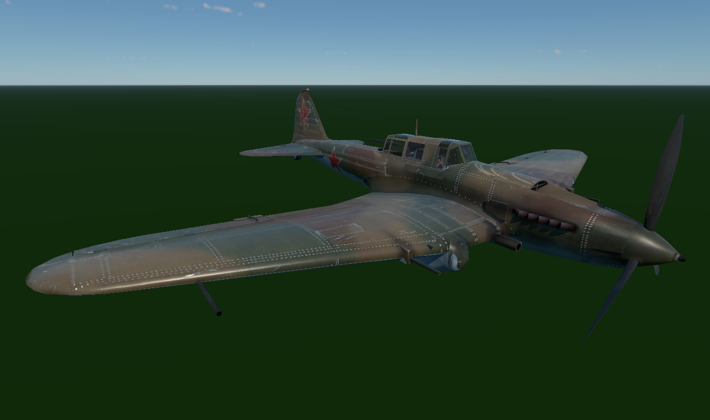 – <2.5.1.134 / <2021-05-16
- Il-2M (1944) (567-j Sh.A.P.) «Mstitel / Avenger» (previous, old model) – <2.5.1.134 / <2021-05-16
- J 35B (references in textures of other aircraft only) – <2.5.1.134 / <2021-05-16
- J 35J (texture only)
 – 2.23.0.8 / 2022-12-20
– 2.23.0.8 / 2022-12-20 - Jaguar IS (TIALD) (model only) – 2.33.0.142 / 2024-02-19
- Ju 87 A-2 (texture only) – 2.20.0.17 / 2022-10-14
- Ju 87 A-2 [JPN] (texture only) – 2.20.0.17 / 2022-10-14
- K-37 (LaGG-3-1 with a 37 mm) – <1.95.0.125 / <2020-02-18
- Ki 43-III Kō [JPN]
 – <1.95.0.125 / <2020-02-18
– <1.95.0.125 / <2020-02-18 - Ki 45 Kai Hei (Tei)
 – <1.95.0.125 / <2020-02-18
– <1.95.0.125 / <2020-02-18 - Ki 45 Kai Kō (Tei)
 – <1.95.0.125 / <2020-02-18
– <1.95.0.125 / <2020-02-18 - La-7-3 [CHN]
 – <1.95.0.125 / <2020-02-18
– <1.95.0.125 / <2020-02-18 - LaGG-3-1
 – <1.95.0.125 / <2020-02-18
– <1.95.0.125 / <2020-02-18 - LaGG-3-29
 – <1.95.0.125 / <2020-02-18
– <1.95.0.125 / <2020-02-18 - Lincoln B. Mk. 1
 – <1.95.0.125 / <2020-02-18
– <1.95.0.125 / <2020-02-18 - Maryland Mk. I [GBR]
 – <1.95.0.125 / <2020-02-18
– <1.95.0.125 / <2020-02-18 - Me 262 A-1b – <1.95.0.125 / <2020-02-18
- MiG-3-15 (without radio) – <1.95.0.125 / <2020-02-18
- MiG-3-15 [ROU]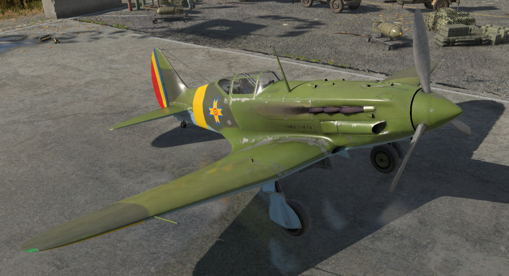 – <1.95.0.125 / <2020-02-18
- MiG-3U
 – <1.95.0.125 / <2020-02-18
– <1.95.0.125 / <2020-02-18 - MiG-15bis (NS-23)
 – <1.95.0.125 / <2020-02-18
– <1.95.0.125 / <2020-02-18 - MiG-15bis (NS-23) [CHN]
 – <1.95.0.125 / <2020-02-18
– <1.95.0.125 / <2020-02-18 - MiG-19S [USSR] – <1.95.0.125 / <2020-02-18
- Mirage 2000 C S3 (model only) – 2.18.0.13 / 2022-09-02
- Mohawk Mk. IV
 – <1.95.0.125 / <2020-02-18
– <1.95.0.125 / <2020-02-18 - O3U-1 (for a ship as scout plane)
 – 2.24.0.20 / 2023-02-25
– 2.24.0.20 / 2023-02-25 - P-36A (Brown's)
 – <1.95.0.125 / <2020-02-18
– <1.95.0.125 / <2020-02-18 - P-39Q-25 [USA] – 2.6.0.18 / 2021-05-22
- P-47D-16 [USA]
 – 2.0.0.8 / 2020-11-03
– 2.0.0.8 / 2020-11-03 - P-47D-23 [USA]
 – 1.101.0.12 / 2020-08-22
– 1.101.0.12 / 2020-08-22 - P-51
 – <1.95.0.125 / <2020-02-18
– <1.95.0.125 / <2020-02-18 - P-51D-5 [DEU]
 – <2.5.1.134 / <2021-05-16
– <2.5.1.134 / <2021-05-16 - P-66 [USA]
 – <1.95.0.125 / <2020-02-18
– <1.95.0.125 / <2020-02-18 - PBJ-1J (with a glass nose)
 – <1.95.0.125 / <2020-02-18
– <1.95.0.125 / <2020-02-18 - PBY-5A (late) [USA] (FM only) – 2.26.0.19 / 2023-05-19
- Pe-2-359 [CHN]
 – <1.95.0.125 / <2020-02-18
– <1.95.0.125 / <2020-02-18 - PV-2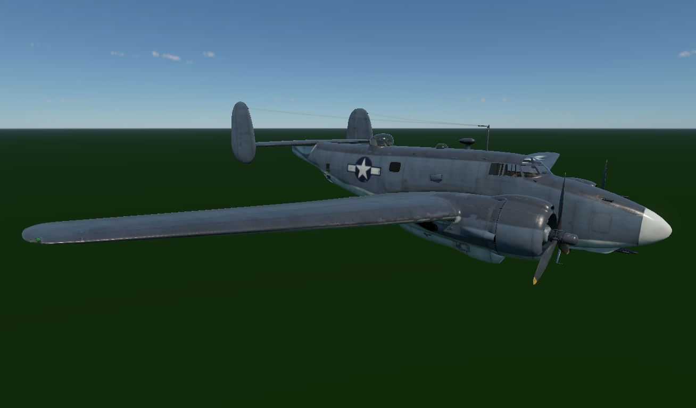 – <1.95.0.125 / <2020-02-18
- Q-5D (texture only) – 2.20.0.17 / 2022-10-14
- Re.2000 GA serie III (377ª Sq.)
 – 1.98.0.40 / 2020-05-21
– 1.98.0.40 / 2020-05-21 - S.M.79 serie IV
 – <1.95.0.125 / <2020-02-18
– <1.95.0.125 / <2020-02-18 - S.M.79bis/N
 – <1.95.0.125 / <2020-02-18
– <1.95.0.125 / <2020-02-18 - SB (M-100A)
 – <1.95.0.125 / <2020-02-18
– <1.95.0.125 / <2020-02-18 - SB (M-100A) [ESP]
 – <1.95.0.125 / <2020-02-18
– <1.95.0.125 / <2020-02-18 - SB2C-5 [USA]
 – <1.95.0.125 / <2020-02-18
– <1.95.0.125 / <2020-02-18 - SBD-5 [FRA] (text only) – <1.97.0.44 / <2020-03-11
- Su-6 (AM-42) (VYa-23) – <1.95.0.125 / <2020-02-18
- Su-25 (late) (texture only) – 2.18.0.13 / 2022-09-02
- TBD-1 (1937)
 – <1.95.0.125 / <2020-02-18
– <1.95.0.125 / <2020-02-18 - Type 16 (H75N)
 – <1.95.0.125 / <2020-02-18
– <1.95.0.125 / <2020-02-18 - Welkin F. Mk. I (FM only) – <1.95.0.125 / <2020-02-18
- Yak-1-1 (Litvyak) (statcard image only)
 – became a promo skin instead – 2.29.0.5 / 2023-09-12
– became a promo skin instead – 2.29.0.5 / 2023-09-12 - Helicopters:
- AH-1E [ISR] (texture only) – 2.26.0.19 / 2023-05-19
- Ka-60 (references in textures of other aircraft only) – 2.46.0.16 / 2025-05-30
- Mi-28A [USSR] – 2.14.0.28 / 2022-03-11
Aircraft skins for already implemented vehicles
- Planes:
- A-7D – 66th FWS – 2.3.0.84 / 2021-01-29
- A-7D – 353rd TFS – 2.3.0.84 / 2021-01-29
- A-29 – Shark
 – <2.5.1.134 / <2021-05-16
– <2.5.1.134 / <2021-05-16 - A-29 – USA
 – <2.5.1.134 / <2021-05-16
– <2.5.1.134 / <2021-05-16 - A6M2b [CHN] – PRC
 – <2.5.1.134 / <2021-05-16
– <2.5.1.134 / <2021-05-16 - Be-6 – CHN – <1.99.0.64 / <2020-06-22
- Bf 109 E-7 [JPN] – 1941
 – <1.99.0.64 / <2020-06-22
– <1.99.0.64 / <2020-06-22 - Bf 109 E-7/U2 – Thunder League
 – <2.5.1.134 / <2021-05-16
– <2.5.1.134 / <2021-05-16 - Bf 109 F-4 – GBR
 – <2.5.1.134 / <2021-05-16
– <2.5.1.134 / <2021-05-16 - Buccaneer S. Mk. 1 – 700 NAS – 2.7.0.160 / 2021-07-30
- C. 202 serie VII – DEU – <1.99.0.64 / <2020-06-22
- D.510C – Inverted – <1.99.0.64 / <2020-06-22
- F-4EJ – AUS – 2.43.0.68 / 2025-01-22
- F-4F-63 – Norm 91J – 2.6.0.18 / 2021-05-22
- F-4F KWS-LV – Anniversary – 2.36.0.26 / 2024-06-11
- F-4F KWS-LV – Demonstration – 2.36.0.26 / 2024-06-11
- F-15C-40 – Gold – 2.37.0.33 / 2024-06-27
- F-16A-10 Netz (Squadron 115) – Top Aces – 2.45.0.5 / 2025-03-17
- F-16AM-20 – Demo 2014 – 2.36.0.26 / 2024-06-11
- F-16AM-20 – Demo 2023 – 2.36.0.26 / 2024-06-11
- F-84F-66 [ITA] – 5ª AB – 2.3.0.12 / 2020-12-18
- F-84G-26 [FRA] – Red ex-US
 – <2.5.1.134 / <2021-05-16
– <2.5.1.134 / <2021-05-16 - F-100D-10 [FRA] – EC 4/11 – <1.99.0.64 / <2020-06-22
- F/A-18A-18 – Blue Angels – 2.45.0.5 / 2025-03-17
- F/A-18C-25 – VFA-81 "Sunliners" (410) – 2.45.0.5 / 2025-03-17
- F2A-3 – USMC
 – <2.5.1.134 / <2021-05-16
– <2.5.1.134 / <2021-05-16 - F2A-3 – USNF
 – <2.5.1.134 / <2021-05-16
– <2.5.1.134 / <2021-05-16 - G.50 AS serie VII – Bicolour
 – <2.5.1.134 / <2021-05-16
– <2.5.1.134 / <2021-05-16 - H75-C1 (4ème série) [FRA] – Vichy
 – <1.99.0.64 / <2020-06-22
– <1.99.0.64 / <2020-06-22 - Harrier G.R. Mk. 3 – AUS – 2.43.0.68 / 2025-01-22
- Hornet F. Mk. 1 – Aluminium – <1.99.0.64 / <2020-06-22
- Hornet F. Mk. 1 – Nonstandard – <1.99.0.64 / <2020-06-22
- Hurricane Mk. I – DEU
 – <2.5.1.134 / <2021-05-16
– <2.5.1.134 / <2021-05-16 - I-15 – PRC
 – <2.5.1.134 / <2021-05-16
– <2.5.1.134 / <2021-05-16 - I-15-3 [CHN] – PRC
 – <2.5.1.134 / <2021-05-16
– <2.5.1.134 / <2021-05-16 - Il-2 (1942) – Summer-Winter
 – <1.99.0.64 / <2020-06-22
– <1.99.0.64 / <2020-06-22 - Il-2M (1943) – Summer-Winter
 – <2.5.1.134 / <2021-05-16
– <2.5.1.134 / <2021-05-16 - Il-2M (NS-37) – Winter
 – <2.5.1.134 / <2021-05-16
– <2.5.1.134 / <2021-05-16 - Ju 87 D-3 – Winter
 – <2.5.1.134 / <2021-05-16
– <2.5.1.134 / <2021-05-16 - Ju 87 D-5 – Winter
 – <2.5.1.134 / <2021-05-16
– <2.5.1.134 / <2021-05-16 - Ju 87 G-2 – Winter
 – <2.5.1.134 / <2021-05-16
– <2.5.1.134 / <2021-05-16 - Ki 27 – Manchukuo Air Forces
 – <1.99.0.64 / <2020-06-22
– <1.99.0.64 / <2020-06-22 - Ki 84-I Otsu – Metal
 – <2.5.1.134 / <2021-05-16
– <2.5.1.134 / <2021-05-16 - La-9 – PRK
 – <2.5.1.134 / <2021-05-16
– <2.5.1.134 / <2021-05-16 - LaGG-3-8 – JPN
 – <2.5.1.134 / <2021-05-16
– <2.5.1.134 / <2021-05-16 - LaGG-3-35 – FIN – <1.99.0.64 / <2020-06-22
- LaGG-3-66 – Bicolour
 – <1.99.0.64 / <2020-06-22
– <1.99.0.64 / <2020-06-22 - Me 262 A-2a – 1./KG 51 – <1.99.0.64 / <2020-06-22
- Meteor F. Mk. 8 – BRA – 2.37.0.165 / 2024-08-27
- MiG-3-15 – DEU
 – <2.5.1.134 / <2021-05-16
– <2.5.1.134 / <2021-05-16 - MiG-9 [CHN] – Bicolour
 – <2.5.1.134 / <2021-05-16
– <2.5.1.134 / <2021-05-16 - MiG-21S – Tricolour – 2.13.0.11 / 2021-12-13
- MiG-21SMT – Quadricolour – <1.99.0.64 / <2020-06-22
- Mirage 5 F – ARG – 2.37.0.55 / 2024-07-09
- MY sarja II (Myrsky II) – MY-22 – 2.7.0.160 / 2021-07-30
- N1K2-J – Rookie
 – <2.5.1.134 / <2021-05-16
– <2.5.1.134 / <2021-05-16 - N1K2-Ja – Skilled
 – <2.5.1.134 / <2021-05-16
– <2.5.1.134 / <2021-05-16 - P-40E [CHN] – PRC
 – <2.5.1.134 / <2021-05-16
– <2.5.1.134 / <2021-05-16 - P-40F – Tropical
 – <2.5.1.134 / <2021-05-16
– <2.5.1.134 / <2021-05-16 - P-40F – FRA
 – <2.5.1.134 / <2021-05-16
– <2.5.1.134 / <2021-05-16 - P-47D-23 [CHN] – PRC (aluminium)
 – <2.5.1.134 / <2021-05-16
– <2.5.1.134 / <2021-05-16 - P-47D-23 [CHN] – PRC (olive)
 – <2.5.1.134 / <2021-05-16
– <2.5.1.134 / <2021-05-16 - P-51 – Grey
 – <2.5.1.134 / <2021-05-16
– <2.5.1.134 / <2021-05-16 - P-51A (Thunder League) – Grey – <2.5.1.134 / <2021-05-16
- P-51A (Thunder League) – Miss America
 – <2.5.1.134 / <2021-05-16
– <2.5.1.134 / <2021-05-16 - P-51D-20 – Miss America
 – <2.5.1.134 / <2021-05-16
– <2.5.1.134 / <2021-05-16 - P-51D-20 [CHN] – PRC
 – <2.5.1.134 / <2021-05-16
– <2.5.1.134 / <2021-05-16 - P-63C-5 [USSR] – 311382
 – <2.5.1.134 / <2021-05-16
– <2.5.1.134 / <2021-05-16 - PBY-5 – The Dabster – 2.43.0.68 / 2025-01-22
- Pe-2-1 – FIN (1941) – <1.99.0.64 / <2020-06-22
- Pe-2-1 – FIN (1944) – <1.99.0.64 / <2020-06-22
- Pe-3bis – FIN
 – <2.5.1.134 / <2021-05-16
– <2.5.1.134 / <2021-05-16 - SB (M-103U) (MV-3) – ROC
 – <2.5.1.134 / <2021-05-16
– <2.5.1.134 / <2021-05-16 - SB-3 [CHN] – PRC
 – <2.5.1.134 / <2021-05-16
– <2.5.1.134 / <2021-05-16 - Spitfire F. Mk. IX – Clive Caldwell – 2.43.0.68 / 2025-01-22
- Spitfire F. Mk. XVI (e) (CW) – 74th Squadron RAF – <1.99.0.64 / <2020-06-22
- Su-22M3 – HUN
 – 2.13.0.11 / 2021-12-13
– 2.13.0.11 / 2021-12-13 - Su-25K – Holiday collection (classic) – 2.43.0.39 / 2024-12-26
- Yak-3P – Normandie-Niemen – <1.99.0.64 / <2020-06-22
- Z.1007bis serie V – Tricolour
 – <2.5.1.134 / <2021-05-16
– <2.5.1.134 / <2021-05-16 - Helicopters:
Ground vehicles
- DEU:
- Jagdpanther G1 (previous, old model) – 2.20.0.17 / 2022-10-14
- Pz.Kpfw. 748 (a) (1944) (A second German Sherman that never saw the light of day) – <1.95.0.125 / <2020-02-18
- R-2 (Romanian Pz.Kpfw. 35 (t))
 – <1.95.0.125 / <2020-02-18
– <1.95.0.125 / <2020-02-18 - USSR:
- BT-7M «816» (texture only) – 2.28.0.21 / 2023-09-01
- T-72B3A (Arena) (model only) – 2.46.0.16 / 2025-05-30
- GBR:
- Centaur AA Mk. I (text only) – <1.97.0.44 / <2020-03-11
- Centaur AA Mk. II (text only) – <1.97.0.44 / <2020-03-11
- Centurion Mk. 5 AVRE (without ERA) (model only)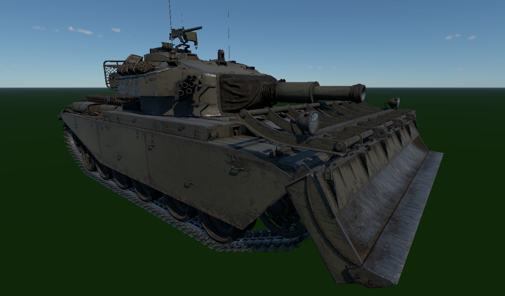 – <2.5.1.134 / <2021-05-16
- JPN:
- M24 (with slightly different antennas) (model only) – 2.14.0.28 / 2022-03-11
- Type 74 TK (B) (previous, old model of the Type 74 TK (E)) – 2.8.0.19 / 2021-08-28
- CHN:
- BT-5
 – <1.95.0.125 / <2020-02-18
– <1.95.0.125 / <2020-02-18 - Ha Gō
 – <1.95.0.125 / <2020-02-18
– <1.95.0.125 / <2020-02-18 - PGZ88 – 2.25.0.8 / 2023-03-07
- VT4 – 2.26.0.19 / 2023-05-19
- VT5 (model only) – 2.44.0.21 / 2025-02-28
- ZBD03 (references in physical track names only)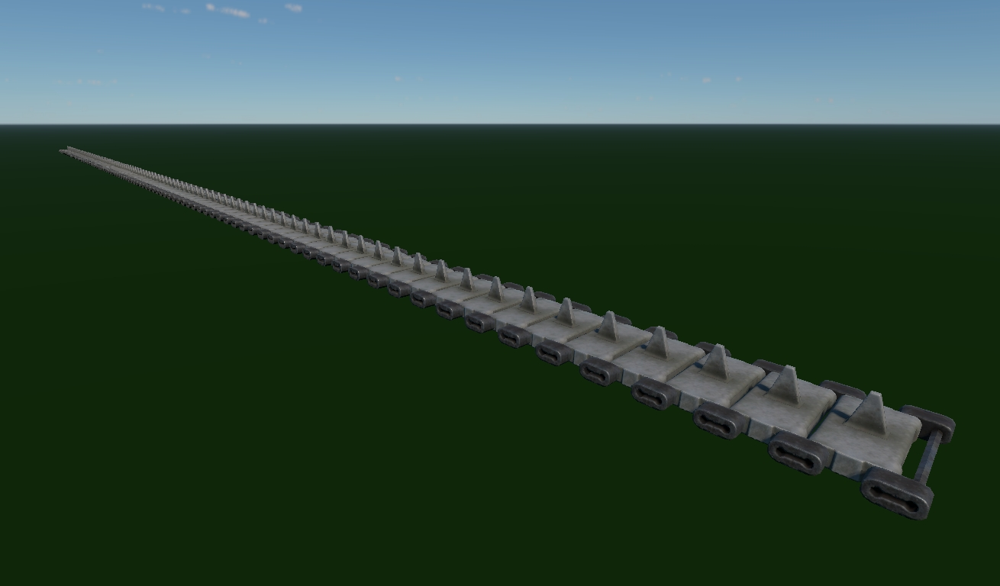 – 2.34.0.19 / 2024-03-01
- ITA:
- 75/34 M. 43 (III Rgt. Bers.) (text only) – <1.97.0.44 / <2020-03-11
- PzH 2000 A1 (model only) – 2.42.0.20 / 2024-12-10
- SWE:
- CV90105 (TML) (previous, old model of the CV90105 (XC-8))
 – 2.18.0.13 / 2022-09-02
– 2.18.0.13 / 2022-09-02 - strv 74 (rbs 52) (model only)
 – <2.5.1.134 / <2021-05-16
– <2.5.1.134 / <2021-05-16 - strv 103B (texture only) – <2.5.1.134 / <2021-05-16
- ISR:
- Magach 7 A (references in textures of other tanks only)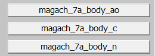 – 2.22.0.14 / 2022-12-09
Ground vehicle skins for already implemented vehicles
- CHN:
- ZTZ59 – Golden
 – <1.99.0.64 / <2020-06-22
– <1.99.0.64 / <2020-06-22
Naval vehicles
- ITA:
- MS 74 (text only)
 – <1.97.1.53 / <2020-04-14
– <1.97.1.53 / <2020-04-14
Aircraft loadouts
- Many empty stock loadouts, mainly for bombers and helicopters.
- Many obsolete old loadouts, which are now possible combinations with custom loadouts, hence I didn't list them here.
- Planes:
- A-1A – ?x SBAT-70 – 2.36.0.16 / 2024-05-31
- A-4B – 3x 20 mm GAU-4/A – 1.97.0.30 / 2020-03-03
- A-4E Ayit (early) – 20x 250 lbs GP Mk. 81 Mod. 1 Snakeye – 2.26.0.25 / 2023-05-23
- A-6E (TRAM) – 5x 750 lbs GP M117 (cone 45) – 2.22.0.14 / 2022-12-09
- A-10A (late) – 2x 20 mm M61 – 2.14.0.28 / 2022-03-11
- A-10A (late) – 4x 2000 lbs GBU-8/B – 2.14.0.28 / 2022-03-11
- A-10C – 2x AGM-65D – 2.38.0.15 / 2024-08-30
- A-10C – 2x AGM-65E – 2.38.0.15 / 2024-08-30
- A-26B-15 – 1x 37 mm M4 + 2x 12.7 mm AN/M2 – <1.95.0.125 / <2020-02-18
- A 32A – 38x srak m/57B – <1.95.0.125 / <2020-02-18
- A 32A – 4x RB 24 – <1.95.0.125 / <2020-02-18
- A-200A – 4x AS.34 – 2.23.0.8 / 2022-12-20
- A-200C – 4x AS.34 – 2.44.0.23 / 2025-03-03
- A2D-1 – 20x 500 lbs GP AN/M64A1 – <1.95.0.125 / <2020-02-18
- A6M5 – 1x 250 kg Type 98 No. 25 – <1.95.0.125 / <2020-02-18
- A6M5 – 1x 250 kg Type 98 Mod. 25 – <1.95.0.125 / <2020-02-18
- AJ 37 – 4x RB 05A – 2.10.0.14 / 2021-10-15
- AJS 37 – 4x RB 05A – 2.26.0.19 / 2023-05-19
- B 17B – 1x 500 kg Minbomb m/41 – <1.95.0.125 / <2020-02-18
- B-17E (late) – 4x 1000 lbs GP AN/M65A1 – <1.95.0.125 / <2020-02-18
- B-24D – 10x 100 lbs GP AN/M30A1 – <1.95.0.125 / <2020-02-18
- B-25J-30 – 12x 50 kg S.C. 50 JA – <1.95.0.125 / <2020-02-18
- B-25J-30 – 2x 250 kg S.C. 250 JA + 8x 50 kg S.C. 50 JA – <1.95.0.125 / <2020-02-18
- B-25J-30 – 4x 250 kg S.C. 250 JA – <1.95.0.125 / <2020-02-18
- B-25J-30 – 1x 500 kg S.C. 500 K + 11x 50 kg S.C. 50 JA – <1.95.0.125 / <2020-02-18
- B-25J-30 – 3x 500 kg S.C. 500 K – <1.95.0.125 / <2020-02-18
- B.Kh.18Kh (2003) – 2x AIM-9M – 2.42.0.20 / 2024-12-10
- B.Kh.19 – ?x 1000 lbs GBU-16/B – 2.42.0.20 / 2024-12-10
- B.Kh.19 – ?x AGM-65A – 2.42.0.20 / 2024-12-10
- B.KhL.1K – 8x 5-inch FFAR Mk. 32 ATAP + 2x AIM-9G – 2.40.0.31 / 2024-10-25
- B.KhL.1K – 2x AIM-9G – 2.40.0.31 / 2024-10-25
- B6N1 – 2x 250 kg Type 98 No. 25 – 1.98.0.32 / 2020-05-16
- B6N1 – 1x 800 kg Type 99 Mod. 80 No. 5 – 1.98.0.32 / 2020-05-16
- B6N2 – 2x 250 kg Type 98 No. 25 – 1.98.0.32 / 2020-05-16
- B6N2 – 1x 800 kg Type 99 Mod. 80 No. 5 – 1.98.0.32 / 2020-05-16
- B6N2a – 2x 250 kg Type 98 No. 25 – 1.98.0.32 / 2020-05-16
- B6N2a – 1x 800 kg Type 99 Mod. 80 No. 5 – 1.98.0.32 / 2020-05-16
- B7A2 – 1x 800 kg Type 99 Mod. 80 No. 5 – <1.95.0.125 / <2020-02-18
- Ba.88 – 3x 100 kg SAP 100 – <1.95.0.125 / <2020-02-18
- Ba.88 – 3x 150 kg AP 160 – <1.95.0.125 / <2020-02-18
- Be-2 – 2x 50 kg FAB-50tsk – 2.12.0.14 / 2021-12-03
- Bf 109 – 1x 500 kg S.C. 500 K – <1.95.0.125 / <2020-02-18
- Bf 109 G-2 – 1x 500 kg S.C. 500 K – 2.30.0.15 / 2023-10-20
- Bf 109 G-10 – 1x 500 kg S.C. 500 K – <1.95.0.125 / <2020-02-18
- BF2C-1 – 1x 500 lbs GP AN/M64A1 – 2.26.0.19 / 2023-05-19
- Bloch 162-01 – 8x 200 kg №.1 + 10x 100 kg №.1 – <1.95.0.125 / <2020-02-18
- Bloch 162-01 – 6x 500 kg №.2 – <1.95.0.125 / <2020-02-18
- Bre.693-AB2 – 8x 50 kg A – <1.95.0.125 / <2020-02-18
- Bre.693-AB2 – 8x 50 kg D.T. №. 2 – <1.95.0.125 / <2020-02-18
- BTD-1 – 2x Mk. 13 Mod. 3 – <1.95.0.125 / <2020-02-18
- BTD-1 – 6x 250 lbs GP AN/M57 – <1.95.0.125 / <2020-02-18
- BTD-1 – 1x 2000 lbs GP AN/M66A1 – <1.95.0.125 / <2020-02-18
- Buccaneer S. Mk. 2B – 104x countermeasures – 2.34.0.19 / 2024-03-01
- Buccaneer S. Mk. 2B – 4x 1000 lbs GBU-16/B – 2.34.0.19 / 2024-03-01
- D3A1 – 1x 250 kg Type 98 Mod. 25 + 2x 60 kg Type 97 Mod. 6 – <1.95.0.125 / <2020-02-18
- Do 17 Z-2 – 4x 250 kg S.C. 250 JA – <1.95.0.125 / <2020-02-18
- Do 217 E-2 – 2x 500 kg S.C. 500 K + 2x 250 kg S.C. 250 JA – <1.95.0.125 / <2020-02-18
- E7K2 – 2x 60 kg Type 97 Mod. 6 – 2.12.0.14 / 2021-12-03
- E13A1 – 2x 60 kg Type 97 Mod. 6 – 2.12.0.23 / 2021-12-08
- E13A1 – 1x 250 kg Type 98 No. 25 – 2.12.0.23 / 2021-12-08
- Étendard IV M – 36x SNEB Type 23 (inner pylon) – <1.95.0.125 / <2020-02-18
- Étendard IV M – 36x SNEB Type 23 (outer pylon) – <1.95.0.125 / <2020-02-18
- Eurofighter [DEU] – 6x 1000 lbs GBU-16/B + 1x LITENING III – 2.42.0.20 / 2024-12-10
- Eurofighter [DEU] – 6x 1000 lbs GBU-55/B – 2.42.0.20 / 2024-12-10
- F-1 – 14x 2.75-inch FFAR Mk. 4 – 2.0.0.8 / 2020-11-03
- F-1 – 14x 2.75-inch FFAR Mk. 4 + 2x AIM-9B – 2.0.0.8 / 2020-11-03
- F-1 – 14x 2.75-inch FFAR Mk. 4 + 2x AIM-9E – 2.0.0.8 / 2020-11-03
- F-1 – 14x 2.75-inch FFAR Mk. 4 + 2x AIM-9P – 2.0.0.8 / 2020-11-03
- F-1 – 14x 2.75-inch FFAR Mk. 4 + 4x AIM-9E – 2.0.0.8 / 2020-11-03
- F-1 – 14x 2.75-inch FFAR Mk. 4 + 4x AIM-9P – 2.0.0.8 / 2020-11-03
- F-1 – 5x 500 lbs GP Mk. 82 + 4x AIM-9E – 2.0.0.8 / 2020-11-03
- F-1 – 5x 500 lbs GP Mk. 82 + 4x AIM-9P – 2.0.0.8 / 2020-11-03
- F-1 – 7x 500 lbs GP Mk. 82 + 2x AIM-9B – 2.0.0.8 / 2020-11-03
- F-1 – 7x 500 lbs GP Mk. 82 + 2x AIM-9E – 2.0.0.8 / 2020-11-03
- F-1 – 7x 500 lbs GP Mk. 82 + 2x AIM-9P – 2.0.0.8 / 2020-11-03
- F-1 – 2x AIM-9B – 2.0.0.8 / 2020-11-03
- F-2A – 4x AIM-9L – 2.46.0.16 / 2025-05-30
- F-4E Kurnass 2000 – 4x AIM-7E-2 (DF) – 2.25.0.8 / 2023-03-07
- F-4E Kurnass 2000 – 4x AIM-7F – 2.25.0.8 / 2023-03-07
- F-4F KWS-LV – 2x AIM-9J – 2.36.0.16 / 2024-05-31
- F-4F KWS-LV – 2x AIM-9L – 2.36.0.16 / 2024-05-31
- F-4J [GBR] – 2x AIM-9D – 2.22.0.14 / 2022-12-09
- F-4J [GBR] – 2x AIM-9L – 2.22.0.14 / 2022-12-09
- F-5A(G)-40 – 1x 30 mm GAU-13/A – 2.43.0.83 / 2025-02-03
- F-5E – 1x 2000 lbs GP Mk. 84 Mod. 1 (BSU-50/B) – 2.28.0.21 / 2023-09-01
- F-5E [DEU] – 4x 2000 lbs GP Mk. 84 Mod. 1 (BSU-50/B) – 2.46.0.16 / 2025-05-30
- F-5E [DEU] – 3x Drop tank (150 gal.) – 2.46.0.16 / 2025-05-30
- F-14B-150 – 6x AIM-7F – 2.26.0.19 / 2023-05-19
- F-16A-10 Netz – 4x 2000 lbs GBU-8/B – 2.22.0.14 / 2022-12-09
- F-16A-10 Netz (Squadron 115) – 4x 2000 lbs GBU-8/B – 2.44.0.21 / 2025-02-28
- F-16A-10 Netz (Squadron 115) – 6x AIM-9P – 2.44.0.21 / 2025-02-28
- F-16AM-20 – 6x AGM-65G – 2.36.0.16 / 2024-05-31
- F-16C-50 – 6x AGM-65G – 2.35.0.10 / 2024-03-13
- F-16D-40 Barak II – 4x 2000 lbs GBU-64/B – 2.47.0.9 / 2025-06-25
- F-16D-40 Barak II – 6x AIM-9P – 2.36.0.16 / 2024-05-31
- F-20A – 8x 5-inch FFAR Mk. 32 ATAP – 2.34.0.19 / 2024-03-01
- F-35 (WDNS) – ?x 250 lbs GP Mk. 81 – 2.46.0.31 / 2025-06-07
- F-89 – 104x 2.75-inch FFAR Mk. 4 M429 – <1.95.0.125 / <2020-02-18
- F-100D-10 [FRA] – 4x 1000 kg SAMP Mk. 84 – 2.14.0.35 / 2022-03-18
- F-100D-66 – 14x 2.75-inch FFAR Mk. 4 + 4x 750 lbs Fire BLU-27/B – 2.16.0.29 / 2022-06-03
- F-100D-66 – 14x 2.75-inch FFAR Mk. 4 + 4x 750 lbs GP M117 (cone 45) – <1.95.0.125 / <2020-02-18
- F-104G – 14x Hydra 70 (M229) – 1.98.0.40 / 2020-05-21
- F-104G – 14x Hydra 70 (M229) + 2x AIM-9B – 1.98.0.40 / 2020-05-21
- F-104G – 14x Hydra 70 (M229) + 2x AIM-9B FGW.2 – 1.99.0.3 / 2020-05-25
- F-104J – 14x 2.75-inch LSFFAR – 1.98.0.32 / 2020-05-16
- F-104S/ASA – 1x 20 mm M61A1 + 6x 250 lbs GP Mk. 81 – 2.14.0.28 / 2022-03-11
- F-105D-31 – 28x 2.75-inch FFAR Mk. 4 – 2.12.0.14 / 2021-12-03
- F-105D-31 – 28x 2.75-inch FFAR Mk. 4 + 384x chaff – 2.13.0.11 / 2021-12-13
- F-111C – 16x 750 lbs Fire BLU-1/B – 2.38.0.15 / 2024-08-30
- F-111F – 16x 750 lbs Fire BLU-1/B – 2.38.0.15 / 2024-08-30
- F.222.2-BN5 – 52x 50 kg A – <1.95.0.125 / <2020-02-18
- F.222.2-BN5 – 52x 50 kg D.T. №. 2 – <1.95.0.125 / <2020-02-18
- F-2000A – 6x 1000 lbs GBU-16/B + 1x LITENING III – 2.42.0.20 / 2024-12-10
- F-2000A – 6x 1000 lbs GBU-55/B – 2.42.0.20 / 2024-12-10
- F/A-18C-25 – 6x AIM-7M + 2x AIM-9L + 1x Drop tank – 2.44.0.21 / 2025-02-28
- F/A-18C-25 – 4x 2000 lbs GP Mk. 84 + 2x AIM-7M + 2x AIM-9L + 1x Drop tank – 2.44.0.21 / 2025-02-28
- F/A-18 C (RP 08) [DEU] – 8x 500 lbs GBU-38(V)2/B – 2.46.0.16 / 2025-05-30
- F/A-18 C (RP 08) [DEU] – 8x 500 lbs GBU-54(V)2/B – 2.46.0.16 / 2025-05-30
- F/A-18 C (RP 08) [DEU] – 8x 1000 lbs GBU-32(V)2/B – 2.46.0.16 / 2025-05-30
- F/A-18 C (RP 08) [DEU] – 4x 2000 lbs GBU-31(V)2/B – 2.46.0.16 / 2025-05-30
- F/A-18 C (RP 08) [DEU] – 4x AGM-65G + 2x AIM-9M + 1x AN/AAS-38B + 1x Drop tank (330 gal.) – 2.46.0.16 / 2025-05-30
- F/A-18 C (RP 08) [DEU] – 2x AIM-7P + 6x AIM-9M + 1x Drop tank (330 gal.) – 2.46.0.16 / 2025-05-30
- F/A-18 C (RP 08) [DEU] – 10x AIM-120B + 2x AIM-9M + 1x Drop tank (330 gal.) – 2.46.0.16 / 2025-05-30
- F/A-18C-48 – 4x AGM-62A ER/DL + 2x AIM-7M + 2x AIM-9L + 1x Drop tank – 2.44.0.21 / 2025-02-28
- F3D-1 – 2x AIM-9C – <1.95.0.125 / <2020-02-18
- F3H-2 – 6x 5-inch HVAR – 1.98.0.32 / 2020-05-16
- F7F-1 – 1x Type A Mk. 1 – 2.7.0.10 / 2021-06-02
- F7F-1 – 1x Type A Mk. 1 + 2x 500 lbs GP AN/M64A1 – 2.7.0.10 / 2021-06-02
- F9F-5 – 6x 2.75-inch FFAR Mk. 4 – <1.95.0.125 / <2020-02-18
- Firefly F.R. Mk. 4 [FRA] – 2x 250 lbs G.P. Mk. IV – 2.36.0.16 / 2024-05-31
- Fw 190 A-5/U14 – 1x F 5w – 2.20.0.19 / 2022-10-17
- Fw 190 F-8 – 14x Panzerblitz III – <1.95.0.125 / <2020-02-18
- G.55 serie I – 2x 100 kg SAP 100 – <1.95.0.125 / <2020-02-18
- G.55 serie I – 2x 160 kg AP 160 – 2.6.0.18 / 2021-05-22
- G.55S – 2x 50 kg GP 50 + 1x F. 200/450X5.45 – <1.95.0.125 / <2020-02-18
- G.55S – 2x 100 kg GP 100 + 1x F. 200/450X5.45 – <1.95.0.125 / <2020-02-18
- G.55S – 2x 100 kg SAP 100 + 1x F. 200/450X5.45 – <1.95.0.125 / <2020-02-18
- Gripen C – 4x 2000 lbs GBU-10C/B + 1x LITENING II – 2.33.0.14 / 2023-12-14
- Gripen C – 4x Skyflash (DF) – 2.36.0.16 / 2024-05-31
- Gripen C – 2x RB 74 – 2.33.0.14 / 2023-12-14
- H6K4 – 2x 250 kg Type 92 – <1.95.0.125 / <2020-02-18
- H6K4 – 2x 250 kg Type 99 Mod. 25 – <1.95.0.125 / <2020-02-18
- H6K4 – 2x 500 kg Type 92 – <1.95.0.125 / <2020-02-18
- He 111 H-16 – 10x 50 kg S.C. 50 JA – 2.14.0.28 / 2022-03-11
- He 111 H-16 – 8x 250 kg S.C. 250 JA (used as depth charges) – 2.38.0.15 / 2024-08-30
- Hornet – 2x 1000 lbs G.P. Mk. I – <1.95.0.125 / <2020-02-18
- Hunter Mk. 58A (1971) – 2x Flz.Lwf. LB 82 – 2.46.0.16 / 2025-05-30
- I-153 – 4x 25 kg AO-25m1 – <1.95.0.125 / <2020-02-18
- I-153 – 2x 100 kg FAB-100tsk – <1.95.0.125 / <2020-02-18
- I-185 (M-82) – 4x 50 kg FAB-50tsk – 2.26.0.25 / 2023-05-23
- IDS-Tornado – 4x AS.34 – 2.23.0.8 / 2022-12-20
- IDS-Tornado (MFG) – 4x AIM-9B FGW. 2 – 2.23.0.8 / 2022-12-20
- Il-2 (1942) – 8x RBS-82 + 4x 100 kg FAB-100tsk – <1.95.0.125 / <2020-02-18
- Il-2 (1942) – 8x ROS-82 + 4x 100 kg FAB-100tsk – <1.95.0.125 / <2020-02-18
- Il-2M (1944) – 8x RBS-82 – <1.95.0.125 / <2020-02-18
- Il-2M (1944) – 8x RBS-132 – <1.95.0.125 / <2020-02-18
- Il-2M (1944) – 8x ROS-82 – <1.95.0.125 / <2020-02-18
- Il-2M (1944) – 8x ROFS-132 – <1.95.0.125 / <2020-02-18
- Il-2M (1944) – 8x RBS-82 + 4x 50 kg FAB-50tsk – <1.95.0.125 / <2020-02-18
- Il-2M (1944) – 8x RBS-132 + 4x 50 kg FAB-50tsk – <1.95.0.125 / <2020-02-18
- Il-2M (1944) – 8x ROS-82 + 4x 50 kg FAB-50tsk – <1.95.0.125 / <2020-02-18
- Il-2M (1944) – 8x ROFS-132 + 4x 50 kg FAB-50tsk – <1.95.0.125 / <2020-02-18
- Il-2M (1944) – 8x RBS-82 + 4x 100 kg FAB-100tsk – <1.95.0.125 / <2020-02-18
- Il-2M (1944) – 8x RBS-132 + 4x 100 kg FAB-100tsk – <1.95.0.125 / <2020-02-18
- Il-2M (1944) – 8x ROS-82 + 4x 100 kg FAB-100tsk – <1.95.0.125 / <2020-02-18
- Il-2M (1944) – 8x ROFS-132 + 4x 100 kg FAB-100tsk – <1.95.0.125 / <2020-02-18
- J 28B – 4x hprak m/49 – <1.95.0.125 / <2020-02-18
- J 29 – 2x 120 kg Sprängbomb m/61 – <1.95.0.125 / <2020-02-18
- J 32B – 24x psrak m/49A – <1.95.0.125 / <2020-02-18
- J 32B – 24x srak m/51 – <1.95.0.125 / <2020-02-18
- J 32B – 12x hprak m/49 – <1.95.0.125 / <2020-02-18
- J 32B – 12x 120 kg Sprängbomb m/61 – <1.95.0.125 / <2020-02-18
- J 32B – 5x 250 kg Minbomb m/50 – <1.95.0.125 / <2020-02-18
- J 32B – 3x 500 kg Minbomb m/56 – <1.95.0.125 / <2020-02-18
- J 32B – 3x 600 kg Minbomb m/50 – <1.95.0.125 / <2020-02-18
- J 35A – 12x srak m/56D + 2x RB 24J – 2.8.0.19 / 2021-08-28
- J 35A – 4x RB 24J – 2.8.0.19 / 2021-08-28
- J-7D – 8x Type 130-2 + 2x PL-7 + SPS-141M ECM – 2.22.0.14 / 2022-12-09
- J7W1 – 2x 250 kg Type 98 Mod. 25 + 2x 60 kg Type 97 Mod. 6 – <1.95.0.125 / <2020-02-18
- J-8B – 2x PL-11 – 2.14.0.28 / 2022-03-11
- J-8B – 4x PL-8 – 2.14.0.39 / 2022-03-18
- J-8F – 2x PL-11 – 2.26.0.19 / 2023-05-19
- J-11B – empty (but loadout name has 100 kg FAB-100-M62 in it) – 2.44.0.21 / 2025-02-28
- J-11B – empty (but loadout name has 250 kg FAB-250-M62 in it) – 2.44.0.21 / 2025-02-28
- J-11B – empty (but loadout name has 500 kg FAB-500-M62 in it) – 2.44.0.21 / 2025-02-28
- J-11B – empty (but loadout name has 374 kg ZB-500 in it) – 2.44.0.21 / 2025-02-28
- J-11B – empty (but loadout name has PL-10 in it) – 2.44.0.21 / 2025-02-28
- J-11B – empty (but loadout name has PL-17 in it) – 2.44.0.21 / 2025-02-28
- JA 37C – 6x AIM-9B – 2.8.0.19 / 2021-08-28
- JA 37Di – 6x RB 24J – 2.40.0.44 / 2024-11-01
- JA 37Di – 2x RB 24J + 2x RB 71 – 2.40.0.44 / 2024-11-01
- JA 37Di – 2x RB 71 – 2.40.0.44 / 2024-11-01
- Jaguar IS (DARIN II) – 2x R550 Magic 1 – 2.33.0.142 / 2024-02-19
- JAS 39A – 1x LITENING II + 4x 2000 lbs GBU-10C/B – 2.32.0.23 / 2023-12-07
- JAS 39C – 1x LITENING II + 4x 2000 lbs GBU-10C/B – 2.36.0.16 / 2024-05-31
- JF-17 – 2x LD-10 – 2.38.0.15 / 2024-08-30
- Kfir Block 60 – 2x Python 4 – 2.43.0.10 / 2024-12-16
- Ki 43-II – 2x 60 kg Type 97 Mod. 6 – <1.95.0.125 / <2020-02-18
- Ki 45 – 2x 250 kg Type 98 Mod. 25 – <1.95.0.125 / <2020-02-18
- Ki 45 – 2x 250 kg Type 98 No. 25 – <1.95.0.125 / <2020-02-18
- Ki 49 – 10x 100 kg Type 94 – 2.38.0.15 / 2024-08-30
- Ki 49 – 4x 250 kg Type 98 Mod. 25 – <1.95.0.125 / <2020-02-18
- Ki 49 – 4x 250 kg Type 98 No. 25 – <1.95.0.125 / <2020-02-18
- Ki 49 – 1x 800 kg Type 99 Mod. 80 No. 5 – <1.95.0.125 / <2020-02-18
- Kikka – 1x 800 kg Type 99 Mod. 80 No. 5 – <1.95.0.125 / <2020-02-18
- La-5-41 – 2x 100 kg FAB-100tsk – <1.95.0.125 / <2020-02-18
- La-7 – 2x 25 kg AO-25m1 – <1.95.0.125 / <2020-02-18
- L-39ZA – 1x GSh-23 + 8x 100 kg OFAB-100-110TU – 2.46.0.16 / 2025-05-30
- Martin 139WC – 6x 250 lbs GP AN/M57 – <1.95.0.125 / <2020-02-18
- Martin 139WC – 2x 500 lbs GP AN/M64A1 – <1.95.0.125 / <2020-02-18
- Martin 139WC – 2x 1000 lbs GP AN/M65A1 – <1.95.0.125 / <2020-02-18
- Martin 139WC – 1x 2000 lbs GP AN/M66A1 – <1.95.0.125 / <2020-02-18
- MBR-2bis – 4x 100 kg FAB-100tsk + 2x 50 kg FAB-50tsk – <1.95.0.125 / <2020-02-18
- MBR-2bis – 2x 250 kg FAB-250sv + 4x 50 kg FAB-50tsk – <1.95.0.125 / <2020-02-18
- Me 262 A-1/U1 – 24x R4M – <1.95.0.125 / <2020-02-18
- Me 262 A-1/U1 – 48x R4M – <1.95.0.125 / <2020-02-18
- Me 410 – 1x 250 kg C. 250 – 2.24.0.20 / 2023-02-25
- Me 410 – 1x 500 kg C. 500 – 2.24.0.20 / 2023-02-25
- MiG-3-15 – 2x 50 kg FAB-50tsk – <1.95.0.125 / <2020-02-18
- MiG-3-34 – 4x 50 kg FAB-50tsk – <1.95.0.125 / <2020-02-18
- MiG-3-34 – 2x 100 kg FAB-100tsk – <1.95.0.125 / <2020-02-18
- MiG-15bis – 2x RS-132 – <1.95.0.125 / <2020-02-18
- MiG-15bis – 2x RBS-132 – <1.95.0.125 / <2020-02-18
- MiG-15bis – 2x 250 kg FAB-250-M46 – <1.95.0.125 / <2020-02-18
- MiG-15bis [CHN] – 2x 250 kg 250-2 – 2.38.0.15 / 2024-08-30
- MiG-19 – 2x R-13M – <1.95.0.125 / <2020-02-18
- MiG-21 Bison – 2x 500 kg ZAB-500 – 2.36.0.25 / 2024-06-10
- MiG-21 Bison – 3x drop tanks (but the loadout file itself has the name R-60M) – 2.36.0.16 / 2024-05-31
- MiG-21 Bison – 3x drop tanks (but the loadout file itself has the name R-77E) – 2.36.0.16 / 2024-05-31
- MiG-21bis – 4x R-60 – 2.0.0.8 / 2020-11-03
- MiG-21MF – 2x 360 mm ZB-360 – 2.16.0.32 / 2022-06-06
- MiG-21PFM – 1x 23 mm GSh-23L + 64x S-5K – 2.31.0.10 / 2023-10-31
- MiG-23BN – 12x large countermeasures – 2.26.0.19 / 2023-05-19
- MiG-23M – 4x 250 kg OFAB-250sv – 2.6.0.18 / 2021-05-22
- MiG-23M – 2x 500 kg FAB-500-M54 – 2.6.0.18 / 2021-05-22
- MiG-23M – 8x R-60 – 2.6.0.18 / 2021-05-22
- MiG-23MF – 4x 250 kg OFAB-250sv – 2.13.0.18 / 2021-12-14
- MiG-23MF – 2x 500 kg FAB-500-M54 – 2.13.0.18 / 2021-12-14
- MiG-23MF – 8x R-60 – 2.13.0.18 / 2021-12-14
- MiG-23ML – 4x 250 kg OFAB-250sv – 2.22.0.14 / 2022-12-09
- MiG-23ML – 2x 500 kg FAB-500-M54 – 2.22.0.14 / 2022-12-09
- MiG-27K – 4x 250 kg OFAB-250sv – 2.12.0.14 / 2021-12-03
- MiG-27K – 4x 500 kg FAB-500-M54 – 2.12.0.14 / 2021-12-03
- MiG-27K – 7x 500 kg FAB-500-M54 – 2.12.0.14 / 2021-12-03
- MiG-27M – 4x 250 kg OFAB-250sv – 2.8.0.19 / 2021-08-28
- MiG-27M – 4x 500 kg FAB-500-M54 – 2.8.0.19 / 2021-08-28
- MiG-27M – 7x 500 kg FAB-500-M54 – 2.8.0.19 / 2021-08-28
- MiG-29 (9-12A) – 2x R-27ET1 – 2.24.0.20 / 2023-02-25
- MiG-29 (9-12A) – 6x R-73 – 2.24.0.20 / 2023-02-25
- MiG-29 (9-12B) – 6x R-73 – 2.34.0.19 / 2024-03-01
- MiG-29 (9-13) – 2x R-27ET – 2.22.0.14 / 2022-12-09
- MiG-29 (9-13) – 6x R-73 – 2.22.0.14 / 2022-12-09
- MiG-29G – 2x R-60MK – 2.30.0.26 / 2023-10-25
- MiG-29G – 6x R-60MK – 2.30.0.26 / 2023-10-25
- Mirage III C – 72x SNEB Type 23 – 2.18.0.13 / 2022-09-02
- Mirage III S – 1x Flz.Lwf. LB 66 – 2.46.0.16 / 2025-05-30
- Mirage 5 BA – 72x SNEB Type 23 – 2.36.0.16 / 2024-05-31
- Mirage 5 BA – 1x AS.30 – 2.36.0.16 / 2024-05-31
- Mirage 2000-5 F – 2x R550 Magic 1 – 2.26.0.19 / 2023-05-19
- Mirage 2000 D RMV – 6x MICA-EM – 2.40.0.51 / 2024-11-05
- N1K2-J – 2x No. 27 – <1.95.0.125 / <2020-02-18
- N1K2-Ja – 2x No. 27 – <1.95.0.125 / <2020-02-18
- N1K2-Ja – 2x 60 kg Type 97 Mod. 6 – <1.95.0.125 / <2020-02-18
- N1K2-Ja – 2x 250 kg Type 98 No. 25 + 2x 60 kg Type 97 Mod. 6 – <1.95.0.125 / <2020-02-18
- N1K2-Ja – 2x 500 kg No. 50 Mk. 2 – <1.95.0.125 / <2020-02-18
- P-63C-5 – 3x 750 lbs Fire Mk. 78 Mod. 2 – 2.40.0.30 / 2024-10-25
- P.108B – 20x 150 kg AP 160 – <1.95.0.125 / <2020-02-18
- PBY-5 – 4x 350 lbs depth charges – 2.38.0.15 / 2024-08-30
- PV-2 – 4x 12.7 mm AN/M2 – <1.95.0.125 / <2020-02-18
- PV-2 – 7x 250 lbs GP AN/M57 – <1.95.0.125 / <2020-02-18
- Re.2005 0 – 1x 630 kg PD 630 – 2.36.0.16 / 2024-05-31
- S.M.92 – 2x 800 kg GP 800 – 2.28.0.21 / 2023-09-01
- Saab 105G – 2x AIM-9B – 2.2.0.11 / 2020-12-12
- Saab 105G – 2x RB 24J – 2.2.0.11 / 2020-12-12
- Saab 105G – 4x 750 lbs GP M117 (cone 45) + 2x RB 24J – 2.2.0.11 / 2020-12-12
- Saab 105G – 4x 1000 lbs GP Mk. 83 + 2x RB 24J – 2.2.0.11 / 2020-12-12
- Saab 105Ö – 2x AIM-9B – 2.2.0.11 / 2020-12-12
- SB2C-1C – 4x 500 lbs GP AN/M64A1 – <1.95.0.125 / <2020-02-18
- SB2C-1C – 1x 1000 lbs GP AN/M65A1 + 2x 500 lbs GP AN/M64A1 – <1.95.0.125 / <2020-02-18
- SB2C-4 – 5x 100 lbs GP AN/M30A1 – 2.28.0.21 / 2023-09-01
- SB2C-5 – 5x 100 lbs GP AN/M30A1 – 2.28.0.21 / 2023-09-01
- SB2C-5 – 1x Type A Mk. 1 – 2.28.0.21 / 2023-09-01
- SBD-3 – 1x Mk. 13 Mod. 3 – <1.95.0.125 / <2020-02-18
- SC-1 – 100 lbs GP AN/M30A1 – 2.46.0.16 / 2025-05-30
- Scimitar F. Mk. 1 – 8x RP-3 – 2.26.0.19 / 2023-05-19
- Sea Hawk – 30x AP Mk. I – <1.95.0.125 / <2020-02-18
- Sea Venom F.(A.W.) Mk. 20 – 8x RP-3 – 2.38.0.15 / 2024-08-30
- Shackleton M.R. Mk. 1 – 8x RP-3 – 2.8.0.19 / 2021-08-28
- Shackleton M.R. Mk. 1 – 17x 250 lbs G.P. Mk. IV – <1.95.0.125 / <2020-02-18
- Shackleton M.R. Mk. 1 – 15x 1000 lbs M.C. Mk. I – <1.95.0.125 / <2020-02-18
- Shackleton M.R. Mk. 1 – 25x 1000 lbs M.C. Mk. I – <1.95.0.125 / <2020-02-18
- Strikemaster Mk. 88 – 56x 2.75-inch FFAR Mk. 4 – 2.30.0.15 / 2023-10-20
- Su-6 (M-71) – 6x 100 kg FAB-100tsk – 1.101.0.12 / 2020-08-22
- Su-6 (M-71) – 2x 250 kg FAB-250sv – 1.101.0.12 / 2020-08-22
- Su-8 – 6x RBS-132 + 2x 500 kg FAB-500sv – 2.13.0.76 / 2022-01-22
- Su-17M2 – 2x S-25L – 2.12.0.14 / 2021-12-03
- Su-17M2 – 2x S-25-O – 2.12.0.14 / 2021-12-03
- Su-17M2 – 2x S-25-OF – 2.12.0.14 / 2021-12-03
- Su-17M2 – 2x S-25-OFM – 2.12.0.14 / 2021-12-03
- Su-17M4 – 2x Kh-23M + 1x Delta-NG – 2.16.0.19 / 2022-05-27
- Su-22M3 – 2x S-25-OF – 2.12.0.14 / 2021-12-03
- Su-22M3 – 2x S-25-OFM – 2.12.0.14 / 2021-12-03
- Su-22M3 – 128x S-5K – 2.12.0.14 / 2021-12-03
- Su-22M4 – 2x Kh-23M + 1x Delta-NG – 2.26.0.19 / 2023-05-19
- Su-30SM – empty (but loadout name has S-25L in it) – 2.44.0.21 / 2025-02-28
- Su-34 NVO – 6x 500 kg KAB-500L-F-E – 2.40.0.30 / 2024-10-25
- Su-34 NVO – 6x 500 kg KAB-500S – 2.40.0.30 / 2024-10-25
- Su-34 NVO – 6x Kh-36 Grom-1 – 2.40.0.30 / 2024-10-25
- Swift – 2x 1000 lbs M.C. Mk. 13 – <1.95.0.125 / <2020-02-18
- T-2 (early) – 14x 2.75-inch FFAR Mk. 4 + 2x AIM-9B – 2.20.0.17 / 2022-10-14
- T-2 (early) – 14x 2.75-inch FFAR Mk. 4 + 2x AIM-9E – 2.20.0.17 / 2022-10-14
- Tu-2S-10 – 4x 100 kg FAB-100tsk – <1.95.0.125 / <2020-02-18
- Tu-2S-10 – 5x 100 kg FAB-100tsk – <1.95.0.125 / <2020-02-18
- Tu-2S-10 – 4x 500 kg FAB-500sv – <1.95.0.125 / <2020-02-18
- Tu-4 – 40x 50 kg FAB-50tsk – <1.95.0.125 / <2020-02-18
- Typhoon F.G.R. Mk. 4 – 6x 1000 lbs GBU-16/B + 1x LITENING III – 2.42.0.20 / 2024-12-10
- Yak-1-127 – 6x RBS-82 – <1.95.0.125 / <2020-02-18
- Yak-1-127 – 6x ROS-82 – <1.95.0.125 / <2020-02-18
- Yak-7B – 2x 100 kg FAB-100tsk – <1.95.0.125 / <2020-02-18
- Yak-28B – 6x 250 kg FAB-250tsk – 2.6.0.18 / 2021-05-22
- Yak-28B – 6x 250 kg OFAB-250sv – 2.6.0.18 / 2021-05-22
- Yak-28B – 2x 500 kg FAB-500tsk – 2.6.0.18 / 2021-05-22
- Yak-141 – 2x Kh-25ML – 2.24.0.20 / 2023-02-25
- Yak-141 – 2x R-60 (but the loadout file itself has the name R-77) – 2.24.0.20 / 2023-02-25
- Yak-141 – 4x R-60 (but the loadout file itself has the name R-77) – 2.24.0.20 / 2023-02-25
- Yak-141 – 2x R-73 – 2.24.0.20 / 2023-02-25
- Helicopters:
- ABH Demonstrator – 2x 7.62 mm M134 – 2.34.0.19 / 2024-03-01
- ABH Demonstrator – 2x 12.7 mm GAU-19/A – 2.34.0.19 / 2024-03-01
- ABH Demonstrator – 2x 30 mm LR30 – 2.34.0.19 / 2024-03-01
- AH-1F – 2x 7.62 mm M134 – <1.95.0.125 / <2020-02-18
- AH-1F [ISR] – 2x 7.62 mm M134 – 2.17.0.8 / 2022-06-15
- AH-1G – 2x 40 mm M129 – <1.95.0.125 / <2020-02-18
- AH-1G [ISR] – 2x 40 mm M129 – 2.16.0.29 / 2022-06-03
- AH-1Q [ISR] – 2x 40 mm M129 – 2.17.0.8 / 2022-06-15
- AH-1W – 2x ITOW – 2.34.0.19 / 2024-03-01
- AH-1Z – 2x 20 mm M197 + 2x AIM-9E – <1.95.0.125 / <2020-02-18
- AH-1Z – 76x 2.75-inch FFAR Mk. 4 – <1.95.0.125 / <2020-02-18
- AH-1Z – 4x ITOW – <1.95.0.125 / <2020-02-18
- AH-1Z – 4x TOW-2 – <1.95.0.125 / <2020-02-18
- AH-1Z – 8x ITOW – <1.95.0.125 / <2020-02-18
- AH-1Z – 8x TOW-2 – <1.95.0.125 / <2020-02-18
- AH-1Z – 16x ITOW – <1.95.0.125 / <2020-02-18
- AH-1Z – 16x TOW-2 – <1.95.0.125 / <2020-02-18
- AH-64D – 76x 2.75-inch FFAR Mk. 4 – <1.95.0.125 / <2020-02-18
- Apache A.H. Mk. 1 – 76x 2.75-inch FFAR Mk. 4 – <1.95.0.125 / <2020-02-18
- BO 105 PAH 1 – 6x HOT-2 – 2.26.0.19 / 2023-05-19
- G-LYNX – 38x 2.75-inch FFAR Mk. 4 – <1.95.0.125 / <2020-02-18
- G-LYNX – 38x Hydra 70 (M229) – <1.95.0.125 / <2020-02-18
- G-LYNX – 38x Hydra 70 (M229) + 1x 20 mm Oerlikon KAD-B – <1.95.0.125 / <2020-02-18
- G-LYNX – 38x Hydra 70 (M229) + 4x AIM-92A ATAS – <1.95.0.125 / <2020-02-18
- G-LYNX – 38x Hydra 70 (M229) + 1x 20 mm Oerlikon KAD-B + 2x AIM-92A ATAS – <1.95.0.125 / <2020-02-18
- G-LYNX – 38x Hydra 70 (M259) – <1.95.0.125 / <2020-02-18
- G-LYNX – 4x ITOW – <1.95.0.125 / <2020-02-18
- G-LYNX – 4x ITOW + 1x 20 mm Oerlikon KAD-B – <1.95.0.125 / <2020-02-18
- G-LYNX – 4x ITOW + 4x AIM-92A ATAS – <1.95.0.125 / <2020-02-18
- G-LYNX – 4x ITOW + 1x 20 mm Oerlikon KAD-B + 2x AIM-92A ATAS – <1.95.0.125 / <2020-02-18
- G-LYNX – 8x ITOW – <1.95.0.125 / <2020-02-18
- G-LYNX – 8x ITOW + 1x 20 mm Oerlikon KAD-B – <1.95.0.125 / <2020-02-18
- G-LYNX – 8x ITOW + 4x AIM-92A ATAS – <1.95.0.125 / <2020-02-18
- G-LYNX – 8x ITOW + 1x 20 mm Oerlikon KAD-B + 2x AIM-92A ATAS – <1.95.0.125 / <2020-02-18
- G-LYNX – 4x AGM-114C + 4x AIM-92A ATAS – <1.95.0.125 / <2020-02-18
- G-LYNX – 4x AGM-114C + 1x 20 mm Oerlikon KAD-B + 2x AIM-92A ATAS – <1.95.0.125 / <2020-02-18
- G-LYNX – 4x AGM-114C + 1x 20 mm Oerlikon KAD-B + 4x AIM-92A ATAS – <1.95.0.125 / <2020-02-18
- G-LYNX – 8x AGM-114C + 1x 20 mm Oerlikon KAD-B – <1.95.0.125 / <2020-02-18
- G-LYNX – 8x AGM-114C + 4x AIM-92A ATAS – <1.95.0.125 / <2020-02-18
- H-34A [FRA] – 4x 7.62 mm AN/M2 – <1.95.0.125 / <2020-02-18
- hkp 9A – 2x 12.7 mm FN M3P + 6x 2.75-inch FFAR Mk. 4 – 2.14.0.28 / 2022-03-11
- hkp 9A (FC) – 4x ITOW – 2.14.0.28 / 2022-03-11
- Ka-29 – 128x S-5K – 1.97.0.30 / 2020-03-03
- Ka-50 – 4x 9M39V – <1.95.0.125 / <2020-02-18
- Ka-50 – 20x S-13 – <1.95.0.125 / <2020-02-18
- Ka-50 – 40x S-8KO + 4x 9M39V – <1.95.0.125 / <2020-02-18
- Ka-50 – 2x 23 mm GSh-23L + 4x 9M39V – <1.95.0.125 / <2020-02-18
- Ka-52 – 12x 9M114 – 1.97.0.30 / 2020-03-03
- Lynx A.H. Mk. 1 – 38x 2.75-inch FFAR Mk. 4 – <1.95.0.125 / <2020-02-18
- Lynx A.H. Mk. 1 – 38x Hydra 70 (M259) – <1.95.0.125 / <2020-02-18
- Mi-8AMTSh-VN – 2x GUV-8700 (2x 12.7 mm YakB-12.7 + 7.62 mm GShG-7.62) – 2.40.0.30 / 2024-10-25
- Mi-8AMTSh-VN – 4x 9M39V – 2.40.0.30 / 2024-10-25
- Mi-8AMTSh-VN – 8x 9M39V – 2.40.0.30 / 2024-10-25
- Mi-24 – 80x S-8 – <1.95.0.125 / <2020-02-18
- Mi-24A – 2x GUV-8700 (2x 12.7 mm YakB-12.7 + 7.62 mm GShG-7.62) – 2.30.0.15 / 2023-10-20
- Mi-24A – 2x S-5K – <1.95.0.125 / <2020-02-18
- Mi-24A – 4x S-24 – <1.95.0.125 / <2020-02-18
- Mi-24P [DEU] – 4x S-24B – <1.95.0.125 / <2020-02-18
- Mi-24V – 32x S-5K – <1.95.0.125 / <2020-02-18
- Mi-24V – 4x S-24B – <1.95.0.125 / <2020-02-18
- Mi-28NM – 20x S-13 – 2.10.0.14 / 2021-10-15
- Mi-28NM – 8x 9M336 – 2.10.0.14 / 2021-10-15
- Mi-35M – 4x S-24B – <1.95.0.125 / <2020-02-18
- Mi-35M – 4x 250 kg OFAB-250sv – <1.95.0.125 / <2020-02-18
- Mi-35M – 2x 500 kg FAB-500sv – <1.95.0.125 / <2020-02-18
- Mi-35M [CHN] – 4x S-24B – 2.40.0.51 / 2024-11-05
- Mi-35M [CHN] – 4x 250 kg OFAB-250sv – 2.40.0.51 / 2024-11-05
- Mi-35M [CHN] – 2x 500 kg FAB-500sv – 2.40.0.51 / 2024-11-05
- Night Hawk – 4x 100 kg FAB-100 + 8x ZT3A2 – 2.40.0.30 / 2024-10-25
- OH-58D – 1x 12.7 mm XM296 – 2.28.0.21 / 2023-09-01
- SE 313 B – 72x 37 mm SNEB – <1.95.0.125 / <2020-02-18
- Tigre HAC – 14x AGR-20A – 2.44.0.21 / 2025-02-28
- Tigre HAC – 14x AGR-20B – 2.44.0.21 / 2025-02-28
- Tigre HAC – 2x 12.7 mm FN M3P – 2.44.0.21 / 2025-02-28
- Tigre HAC – 2x 12.7 mm FN M3P + 6x 2.75-inch FFAR Mk. 4 – 2.44.0.21 / 2025-02-28
- UH-1B – 1x 40 mm M129 – <1.95.0.125 / <2020-02-18
- UH-1C – 1x 40 mm M129 – <1.95.0.125 / <2020-02-18
- UH-1C (XM30) – 1x 40 mm M129 – <1.95.0.125 / <2020-02-18
- YAH-64A – 76x 2.75-inch FFAR Mk. 4 – 2.8.0.19 / 2021-08-28
- YAH-64A – 2x AIM-9E – 2.8.0.19 / 2021-08-28
- Z-11WA – 4x AFT-08C – 2.18.0.13 / 2022-09-02
- Drones:
- Orion – 4x 9M120-1 – 2.18.0.13 / 2022-09-02
- WL-1 – 4x BA-9 – 2.18.0.13 / 2022-09-02
Naval loadouts
- USA:
- Bagley (DD-386) – 14x Type 95 – 2.40.0.42 / 2024-10-31
- Bagley (DD-386) – 14x Type 95 + 16x Mk. 15 – 2.40.0.42 / 2024-10-31
- DEU:
- Jaguar – 12x WBD – <1.95.0.125 / <2020-02-18
- Leopard – 12x WBD – <1.95.0.125 / <2020-02-18
- Luchs – 12x WBD – 2.0.0.8 / 2020-11-03
- Lübeck (F 224) – 4x Mk. 35 + 10x Mk. 6 – 1.101.0.84 / 2020-09-21
- T 22 – 4x WBD – <1.95.0.125 / <2020-02-18
- T 31 – 4x WBD – <1.95.0.125 / <2020-02-18
- Z 47 – 2x WBG – 2.22.0.14 / 2022-12-09
- Z 47 – 8x G 7a (T I) + 2x WBG – 2.22.0.14 / 2022-12-09
- USSR:
- Bezuprechny – 2x BB-1 + 60x KB-1 obr. 1931 g. – 2.6.0.18 / 2021-05-22
- Bezuprechny – 2x BB-1 + 60x KB-1 obr. 1931 g. + 10x 53-39 – 2.6.0.18 / 2021-05-22
- Leningrad – 10x BB-1 – <1.95.0.125 / <2020-02-18
- Opytny – 10x BB-1 – 2.31.0.10 / 2023-10-31
- Opytny – 8x 533mm 53-38 + 10x BB-1 – 2.31.0.10 / 2023-10-31
- Pr. 35 – 12x BB-1 – <1.95.0.125 / <2020-02-18
- Pr. 159 – 22x BB-1 – <1.95.0.125 / <2020-02-18
- Pr. 159 – 22x BB-1 + 64x RGB-25 – <1.95.0.125 / <2020-02-18
- Smelyi – 2x BB-1 + 60x KB-1 obr. 1931 g. – 2.8.0.19 / 2021-08-28
- Smelyi – 2x BB-1 + 60x KB-1 obr. 1931 g. + 10x 533 mm 53-39 – 2.8.0.19 / 2021-08-28
- GBR:
- Garland (H 37) – 16x Mk. VII – 2.0.0.8 / 2020-11-03
- Hood (51) – 100x UP Mk. I – 2.16.0.19 / 2022-05-27
- Hood (51) – 100x UP Mk. I + 6x Mk. IV – 2.16.0.19 / 2022-05-27
- Montgomery (G 95) – 48x Mk. X "Hedgehog" mortar – 2.0.0.8 / 2020-11-03
- Spey (K 246) – 8x Mk. VII + 24x Mk. X "Hedgehog" mortar – <1.95.0.125 / <2020-02-18
- JPN:
- Ayanami (DD-103) – 8x Mk. 6 mortar – 2.16.0.29 / 2022-06-03
- Ayanami (DD-103) – 28x Mk. 6 – 2.16.0.29 / 2022-06-03
- Ayanami (DD-103) – 8x Type 54 Mod. 3 + 48x Mk. X "Hedgehog" mortar – 2.16.0.29 / 2022-06-03
- Harukaze (DD-101) – 24x Mk. 6 – 2.12.0.14 / 2021-12-03
- Murasame (DD-107) – 9x Mk. 6 – 2.40.0.30 / 2024-10-25
- No. 1 – 4x Type 95 – <1.95.0.125 / <2020-02-18
- PG No. 2 (PG-822) – 4x Type 90 SSM-1B – <1.95.0.125 / <2020-02-18
- PG No. 2 (PG-822) – 4x Type 90 SSM-1B + 12x Mk. 36 SRBOC – <1.95.0.125 / <2020-02-18
- ITA:
- Folaga (F 576) – 8x B TG 100 – 2.20.0.22 / 2022-10-18
- Folaga (F 576) – 8x B TG 100 + 2x S.I. 170/450X5.25 – 2.20.0.22 / 2022-10-18
- Gabbiano (C 11) – 8x B TG 100 – 2.8.0.19 / 2021-08-28
- Gabbiano (C 11) – 8x B TG 100 + 2x S.I. 170/450X5.25 – 2.8.0.19 / 2021-08-28
- Sparviero (P 420) – 2x Otomat Mk. 1 SSM – 1.98.0.32 / 2020-05-16
- FRA:
- La Surprise (K 292) – 34x Mk. VII + 48x Mk. X "Hedgehog" mortar – 2.38.0.18 / 2024-09-03
Aircraft guns
- 7.7 mm:
- Browning-F.N. M. 1936 – exact same as the Browning Mk. II – <1.95.0.125 / <2020-02-18
- Type 89F – exact same as the Type 89 – <1.95.0.125 / <2020-02-18
- 12.7 mm:
- Browning-F.N. – exact same as the AN/M2 – <1.95.0.125 / <2020-02-18
- UBK (turret) – exact same as the normal version – 2.31.0.10 / 2023-10-31
- 20 mm:
- akan m/40 (turret) – same as the M.G. FF (turret), but the air targets belt lacks API, IRL trialled on a single B 3 (No. 131), but was rejected – <1.95.0.125 / <2020-02-18
- B-20 – exact same as the B-20M – <1.95.0.125 / <2020-02-18
- Browning-Colt Mk. 12 – different from the two versions we use in game, exact same as the T160 – <1.95.0.125 / <2020-02-18
- M61 – same as the M61A1, but with rearranged armoured targets belt and less recoil – <1.95.0.125 / <2020-02-18
- M61A2 – 2.46.0.16 / 2025-05-30
- Type 99 Mod. 2 Mk. 3 (turret) – same as the Type 99 Mod. 2 Mk. 5 (turret), but with 490 rpm rate of fire instead of 750, IRL used on some variants of the B7A and G4M2 – <1.95.0.125 / <2020-02-18
- 23 mm:
- Madsen – for the unused Type 16 (H75N) – <1.95.0.125 / <2020-02-18
- 30 mm:
- Oerlikon 302 RK – for the unused F-89C (30 mm) – <1.95.0.125 / <2020-02-18
- Oerlikon 302 RK (short) – exact same as the other one – <1.95.0.125 / <2020-02-18
- Oerlikon-Bührle KCA – same as the ADEN Mk. 4 or DEFA 541 or DEFA 551, but with 1400 rpm rate of fire instead of 1200 rpm and uses different sounds – 1.101.0.12 / 2020-08-22
- 37 mm:
- Type 94 – once used by the Ki 45 Kai Otsu – <1.95.0.125 / <2020-02-18
- 75 mm:
- M4 – same as the M5, but less accurate and can't overheat, once used by the in-game PBJ-1H back in 2014, IRL used on the B-25G – <1.95.0.125 / <2020-02-18
- T13E1 – same as the T15E1, but less accurate and has a lower rate of fire, IRL used on the B-25H – <1.95.0.125 / <2020-02-18
- Gunpods:
- 20 mm NC621 (texture only)
 – <2.5.1.134 / <2021-05-16
– <2.5.1.134 / <2021-05-16
Aircraft belts
- 7.62 mm PV-1:
- API-T / API / AI / AI / API / API-T belt: – <2.5.1.134 / <2021-05-16
- USSR – I-15 (M-22), I-15 (M-25A), I-15 (SGR-1820), I-15bis, I-15bis (Krasnolutsky)
- CHN – Chung 28 Chia, I-15
- 7.62 mm ShKAS:
- API-T / API / AI / API / API-T belt: – <1.95.0.125 / <2020-02-18
- DEU – Il-2 (1942)
- USSR – BB-1, Be-2, I-16 Tip 5, I-16 Tip 10, I-16 Tip 18, I-16 Tip 24, I-16 Tip 27, I-16 Tip 28, I-29, I-153, I-153 (Zhukovsky), I-180S, I-301, Il-2 (1941), Il-2 (1942), Il-2M (1943), Il-2M (1944), Il-2M (1944) (567-j Sh.A.P.) «Mstitel / Avenger», Il-2M (M-82), Il-2M (NS-37), Il-8, Il-10 (early), LaGG-3-4, MiG-3-15, MiG-3-15 (UBK), Pe-2-1, Pe-2-31, Pe-2-83, Pe-2-110, Pe-2-205, Pe-2-359, Pe-3-1, Sh-Tandem, Su-2 (M-82), Su-2 (M-88), Su-2 (TSS-1), Su-6 (AM-42), Su-6 (M-71), Su-6 (M-71F), Su-8, Yak-1-1, Yak-2 KABB, Yak-4
- CHN – I-15-3, I-16-1, I-16-2, I-16-3
- 7.7 mm Type 97:
- T / AP / AP / AP belt: – <1.95.0.125 / <2020-02-18
- JPN – E13A1
- 7.92 mm Browning-F.N. M. 1936:
- API / AP / AP-T / AP belt: – <1.95.0.125 / <2020-02-18
- ITA – I.A.R.81 C
- 7.92 mm Browning-F.N. M. 1936 No. 3:
- API / AP / AP-T / AP belt: – 2.36.0.16 / 2024-05-31
- FRA – G.I (Mercury)
- 7.92 mm M.G. 15:
- API / AP / AP-T / AP belt: – <1.95.0.125 / <2020-02-18
- DEU – Do 17 E-1, Do 17 Z-2, Ju 88 A-1
- 7.92 mm M.G. 17:
- API / AP / AP-T / AP belt: – <1.95.0.125 / <2020-02-18
- USA – Bf 109 F-4
- DEU – Ar 196 A-3, Bf 109 A-0 (Flegel), Bf 109 B-1, Bf 109 C-1, Bf 109 E-1, Bf 109 E-3, Bf 109 E-4, Bf 109 E-7/U2, Bf 109 F-1, Bf 109 F-2, Bf 109 F-4, Bf 109 F-4 (Trop), Bf 109 G-2, Bf 109 G-2 (Trop) Bf 110 C-6, Bf 110 C-7, Bf 110 F-2, Do 17 Z-7, Do 217 J-1, Do 217 J-2, Do 217 N-1, Do 217 N-2, Fw 189 A-1, Fw 190 A-1, Fw 190 A-4, Fw 190 A-5, Fw 190A-5/U12, Fw 190 C-1, He 51 A-1, He 51 B-1, He 51 B-2, He 51 C-1, He 51 C-1 (late), He 100 D-1, He 112 B-0, He 112 B-1/U2, He 112 B-2, He 112 B-2/U2, He 112 V5, Hs 123 A-1, Hs 129 B-2, Hs 129 B-3, Ju 87 B-2, Ju 87 D-3, Ju 87 R-2, Ju 87 R-2 (6./StG 2), Ju 88 C-6, Me 410 A-1, Me 410 A-1/U2
- JPN – A7He1, Bf 109 E-7, Fw 190 A-5
- CHN – Hs 123 A-1
- ITA – Bf 109 F-4, Bf 109 G-2, He 112 B-1/U2, Hs 129 B-2, Ju 87 D-3, Ju 87 R-2
- SWE – AR (Ar 196 A-5), MT (Bf 109 G-2)
- ISR – S-199
- 7.92 mm M.G. 81:
- API / AP / AP-T / AP belt: – <1.95.0.125 / <2020-02-18
- DEU – Ju 87 D-5, Ju 88 A-4
- SWE – JK (Ju 88 A-4)
- 8 mm ksp m/22 Fh:
- T / AP / AP / T belt: – <1.95.0.125 / <2020-02-18
- SWE – B 17A, B 17B, J 6B, J 9, J 22-1, S 17BS
- 13 mm M.G. 131:
- AP-T / AP-T / IAI belt: – <1.95.0.125 / <2020-02-18
- USA – Fw 190 A-8
- DEU – Bf 109 G-6, Bf 109 G-10, Bf 109 G-14/AM, Bf 109 K-4, Fw 190 A-8, Fw 190 D-9, Fw 190 F-8, Me 410 B-1, Me 410 B-1/U2
- USSR – Fw 190 D-9
- ITA – Bf 109 G-14/AS
- FRA – N.C.900 A8
- SWE – MT (Bf 109 G-6), MT (Bf 109 G-6 (Trop))
- ISR – S-199
- 13.2 mm Type 3: – <1.95.0.125 / <2020-02-18
- T / IAI / IAI / IAI / AP belt:
- JPN – A6M5b, A6M5c, A6M6, A7M1, A7M2, J6K1
- 20 mm M.G. 151:
- HEI / HEI / HEI / APHE / API belt: – <1.95.0.125 / <2020-02-18
- SWE – MSv ("Mörkö")
- 20 mm M.G. FF/M:
- APHE / HEI / HEI / HEI / API belt, FI-T / HEI / HEI / FI-T / HEI / HEI / APHE belt, I-T belt, I-T / HEI / HEI / APHE belt: – <1.95.0.125 / <2020-02-18
- DEU – Bf 110 G-4
- ITA – Bf 110 G-4
- 20 mm ShVAK-20:
- FI-T / API / API belt: – <1.95.0.125 / <2020-02-18
- USSR – Pe-8, Yer-2-3 (ACh-30B), Yer-2-4 (ACh-30B)
- 23 mm 23-1:
- Flare / FI-T / API belt: – 2.28.0.21 / 2023-09-01
- CHN – Il-28, Tu-4
- 23 mm 23L: – 2.19.0.13 / 2022-09-14
- API belt:
- CHN – Z-10, Z-10 (2018), Z-10ME-02
- 23 mm NR-23:
- Flare / FI-T / API belt: – 2.8.0.19 / 2021-08-28
- DEU – Il-28
- USSR – Be-6, Il-28, Il-28Sh, Tu-4, Tu-14T
- ITA – Il-28
- 30 mm GSh-2-30K:
- APHE / HEFI / HEFI belt: – 2.33.0.156 / 2024-02-28
- DEU – Mi-24P (HFS 80)
- 30 mm NR-30:
- APHE / AP-T belt: – 2.18.0.13 / 2022-09-02
- DEU – MiG-19S, Su-22M4, Su-22UM3K
- USSR – MiG-21F-13, Su-7B, Su-7BKL, Su-7BMK, Su-17M2, Su-17M4, Su-22M3
- ITA – Szu-22M3
- APHE / AP-T / HEFI belt: – <1.95.0.125 / <2020-02-18
- DEU – MiG-19S, Su-22M4, Su-22UM3K
- USSR – MiG-21F-13, Su-7B, Su-7BKL, Su-7BMK, Su-17M2, Su-17M4, Su-22M3
- ITA – Szu-22M3
- 37 mm M4:
- AP-T belt, HEFI-T belt, HEFI-T / HEFI-T / AP-T belt: – <1.95.0.125 / <2020-02-18
- USSR – P-39K-1, P-39N-0 (Pokryshkin), P-63A-5
- 37 mm M10:
- HEFI-T belt: – 2.8.0.19 / 2021-08-28
- USA – P-59A, P-63A-10, P-63C-5, P-63C-5 (event)
- USSR – P-63A-10, P-63C-10
- FRA – P-63C-5
Aircraft bombs
- USA:
- 204 lbs GBU-53/B (model only) – 2.43.0.10 / 2024-12-16
- 250 lbs Fire BLU-10/B – 2.24.0.20 / 2023-02-25
- 300 lbs Mk. 1 M1 (model only) – 2.13.0.11 / 2021-12-14
- 500 lbs Fire BLU-23/B
 – 2.24.0.20 / 2023-02-25
– 2.24.0.20 / 2023-02-25 - 500 lbs GBU-49(V)1/B (early) (model only) – 2.40.0.41 / 2024-10-30
- 600 lbs AP M62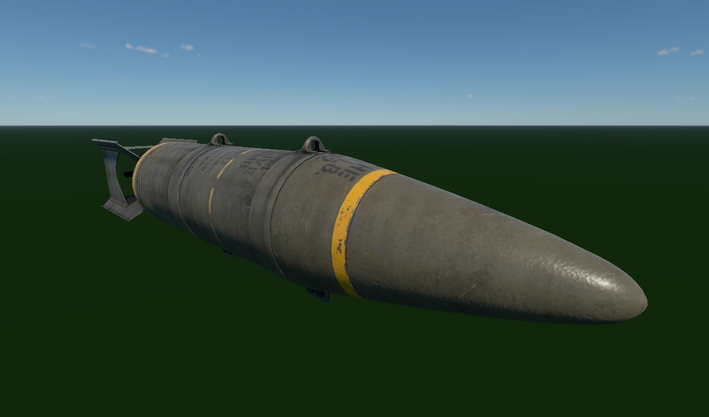 – 2.30.0.15 / 2023-10-20
- 750 lbs Fire Mk. 77 (with fins) (model only) – 2.24.0.20 / 2023-02-25
- 750 lbs GP M117 (cone 90) – <1.95.0.125 / <2020-02-18
- 1000 lbs GP AN/M44 – 2.14.0.28 / 2022-03-11
- 1400 lbs AP M63 – 2.30.0.15 / 2023-10-20
- 2000 lbs AGM-130A – 2.42.0.20 / 2024-12-10
- 2000 lbs AGM-130C (model only) – 2.42.0.20 / 2024-12-10
- 2000 lbs GBU-15(V)21/B – 2.30.0.15 / 2023-10-20
- 2000 lbs GBU-15(V)22/B – 2.30.0.15 / 2023-10-20
- 2000 lbs GP AN/M34 – 2.14.0.28 / 2022-03-11
- Mk. 7 (with airbrake) (model only) – <2.5.1.134 / <2021-05-16
- DEU:
- 250 kg S.D. 250 – 2.44.0.21 / 2025-02-28
- 500 kg P.C. 500 RS – 2.30.0.15 / 2023-10-20
- 500 kg P.D. 500 – 2.30.0.15 / 2023-10-20
- 500 kg S.D. 500 – 2.44.0.21 / 2025-02-28
- 1000 kg P.C. 1000 RS – 2.30.0.15 / 2023-10-20
- 1000 kg S.D. 1000 – 2.44.0.21 / 2025-02-28
- 1400 kg S.D. 1400 – 2.44.0.21 / 2025-02-28
- 1700 kg S.D. 1700 – 2.44.0.21 / 2025-02-28
- 1800 kg P.C. 1800 – 2.30.0.15 / 2023-10-20
- USSR:
- 50 kg KAB-50S (model, currently it uses the model of the KAB-50L) – 2.20.0.17 / 2022-10-14
- 50 kg ZAB-50TG obr. 1937 g. (model only) – 2.18.0.21 / 2022-09-06
- 50 kg ZAB-50TG obr. 1938 g. (model only) – 2.18.0.21 / 2022-09-06
- 220 kg BrAB-220 (model only) – <2.5.1.134 / <2021-05-16
- 250 kg BrAB-250-M43 (model only) – 2.32.0.23 / 2023-12-07
- 250 kg FAB-250tsk – 2.6.0.18 / 2021-05-22
- 250 kg OFAB-250sv s UMPK – 2.42.0.26 / 2024-12-12
- 500 kg FAB-500tsk – 2.6.0.18 / 2021-05-22
- 500 kg FAB-500T s UMPK – 2.42.0.26 / 2024-12-12
- 1500 kg FAB-1500-M54 s UMPK – 2.42.0.26 / 2024-12-12
- GBR:
- 230 lbs R.F.C. Mk. I (model only) – 2.45.1.22 / 2025-04-01
- 230 lbs R.F.C. Mk. III (model, currently it uses the model of the 250 lbs R.L. Mk. II) – 2.45.1.22 / 2025-04-01
- 250 lbs R.L. Mk. II (model only) – 2.45.1.22 / 2025-04-01
- 500 lbs A.S. Mk. IV – 2.38.0.15 / 2024-08-30
- 500 lbs M.C. Mk. I (short tail) (model only) – 2.25.0.8 / 2023-03-07
- 500 lbs M.C. Mk. VI (long tail) (model only) – 2.25.0.8 / 2023-03-07
- 500 lbs M.C. Mk. VI (short tail) (model only) – 2.25.0.8 / 2023-03-07
- 500 lbs M.C. Mk. XI (long tail (model only) – 2.25.0.8 / 2023-03-07
- 500 lbs M.C. Mk. XI (short tail) (model only) – 2.25.0.8 / 2023-03-07
- 540 lbs L.D. M.C. Mk. 1 (model only) – 2.7.0.160 / 2021-07-30
- 1000 lbs M.C. Mk. 13 (Mk. 3) (model only) – 2.26.0.19 / 2023-05-19
- 1000 lbs Mk. 13 (Enhanced LGB Paveway) (model only) – 2.40.0.30 / 2024-10-25
- 4000 lbs H.C. Mk. I – 2.24.0.20 / 2023-02-25
- 4000 lbs H.C. Mk. II – 2.24.0.20 / 2023-02-25
- 4000 lbs H.C. Mk. III – 2.24.0.20 / 2023-02-25
- 12000 lbs H.C. Mk. I (No. 33) (we have the No. 52 in-game) – 2.24.0.20 / 2023-02-25
- JPN:
- 250 kg Type 98 Mod. 25 – <1.95.0.125 / <2020-02-18
- 500 lbs GP Mk. 82 (GCS-1) – 2.10.0.14 / 2021-10-15
- 750 lbs GP JM117 (GCS-1) – 2.10.0.14 / 2021-10-15
- CHN:
- 250 kg 250-1 – 2.38.0.15 / 2024-08-30
- 250 kg 250-1 (incendiary) – 2.38.0.15 / 2024-08-30
- 250 kg GB250A – 2.44.0.41 / 2025-03-12
- 250 kg GB250A1 – 2.44.0.41 / 2025-03-12
- 250 kg TG-250 ER – 2.44.0.41 / 2025-03-12
- 500 kg 500-1 (model only)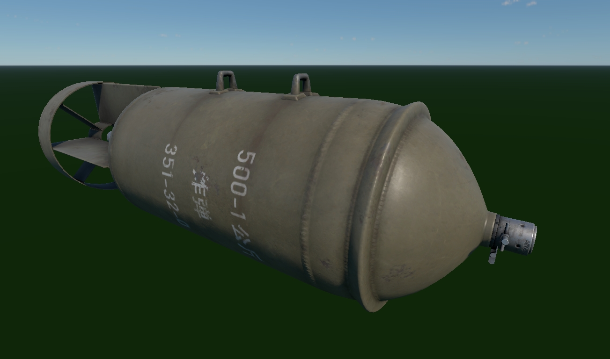 – 2.38.0.15 / 2024-08-30
- ITA:
- 150 kg AP 160 – <1.95.0.125 / <2020-02-18
- FRA:
- 50 kg (late) [NLD] (model only) – 2.36.0.16 / 2024-05-31
- 50 kg A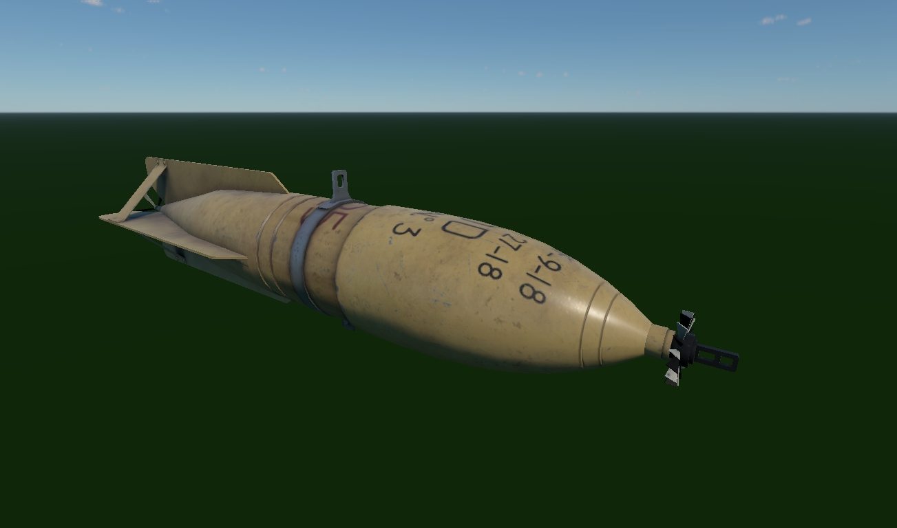 – <1.95.0.125 / <2020-02-18
- 100 kg (late) [NLD] – 2.36.0.16 / 2024-05-31
- 120 kg SAMP Type BL6 (model only) – 2.12.0.14 / 2021-12-03
- 125 kg AASM 125 (SBU 38) (model only) – 2.43.0.10 / 2024-12-16
- 125 kg AASM 125 (SBU 54) (model only) – 2.43.0.10 / 2024-12-16
- 125 kg AASM 125 (SBU 64) (model only) – 2.43.0.10 / 2024-12-16
- 125 kg GBU-58/B – 2.42.0.20 / 2024-12-10
- 250 kg GBU-12/B (CBEMS) (model only)
 – 2.43.0.10 / 2024-12-16
– 2.43.0.10 / 2024-12-16 - 250 kg GBU-12/B (SAMP Mk. 82) (model only)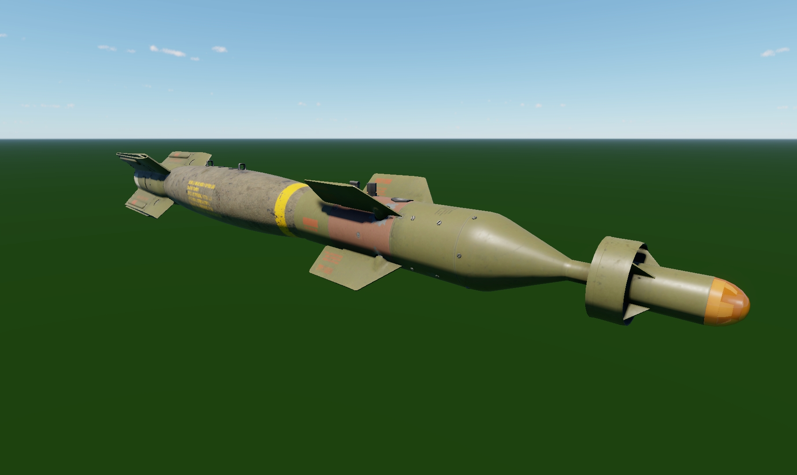 – 2.43.0.10 / 2024-12-16
- 250 kg GBU-49/B (CBEMS) (model only) – 2.43.0.10 / 2024-12-16
- 250 kg GBU-49/B (SAMP Mk. 82) (model only) – 2.43.0.10 / 2024-12-16
- 300 kg (late) [NLD] (model only)
 – 2.36.0.16 / 2024-05-31
– 2.36.0.16 / 2024-05-31 - 400 kg (late) [NLD] (model only) – 2.36.0.16 / 2024-05-31
- 400 kg SAMP T200 (model only) – 2.26.0.19 / 2023-05-19
- 500 kg AASM 500 (SBU 38) (model only) – 2.42.0.20 / 2024-12-10
- 500 kg AASM 500 (SBU 56) – 2.42.0.20 / 2024-12-10
- 500 kg AASM 500 (SBU 66) – 2.42.0.20 / 2024-12-10
- 500 kg GBU-16/B (SAMP Mk. 83) (model only) – 2.43.0.10 / 2024-12-16
- 500 kg №.3 – <1.95.0.125 / <2020-02-18
- 750 lbs GP M117 (cone 90) – <1.95.0.125 / <2020-02-18
- 1000 kg AASM 1000 (SBU 38) (model only) – 2.43.0.10 / 2024-12-16
- 1000 kg AASM 1000 (SBU 56) (model only) – 2.43.0.10 / 2024-12-16
- 1000 kg AASM 1000 (SBU 66) (model only) – 2.43.0.10 / 2024-12-16
- 1000 kg GBU-24(V)1/B (SAMP Mk. 84) (model only) – 2.43.0.10 / 2024-12-16
- SWE:
- 50 kg m/38 (tail fuse) [FIN] (model only) – <2.5.1.134 / <2021-05-16
- 250 kg Minbomb m/37B – <1.95.0.125 / <2020-02-18
- 250 kg m/30 [FIN] – <1.95.0.125 / <2020-02-18
- 450 kg m/37 [FIN] – 2.29.0.5 / 2023-09-12
- ISR:
- 250 lbs SPICE 250 – 2.44.0.21 / 2025-02-28
Aircraft fuel tanks
- USA:
- 150 gal (late) drop tank – 2.36.0.16 / 2024-05-31
- A6M2b – drop tank (references in the DM only) – <1.95.0.125 / <2020-02-18
- B-57A – wingtip fuel tanks (model only) – <2.5.1.134 / <2021-05-16
- F6F-5 – drop tank (model only) – <2.5.1.134 / <2021-05-16
- F6F-5N – drop tank (model only) – <2.5.1.134 / <2021-05-16
- F9F-2 – 150 gal drop tank (model only) – <2.5.1.134 / <2021-05-16
- F9F-5 – 150 gal drop tank (model only) – <2.5.1.134 / <2021-05-16
- DEU:
- 450 l drop tank [CHE] (model only) – 2.25.0.8 / 2023-03-07
- Bf 109 E-7/U2 – drop tank (model only)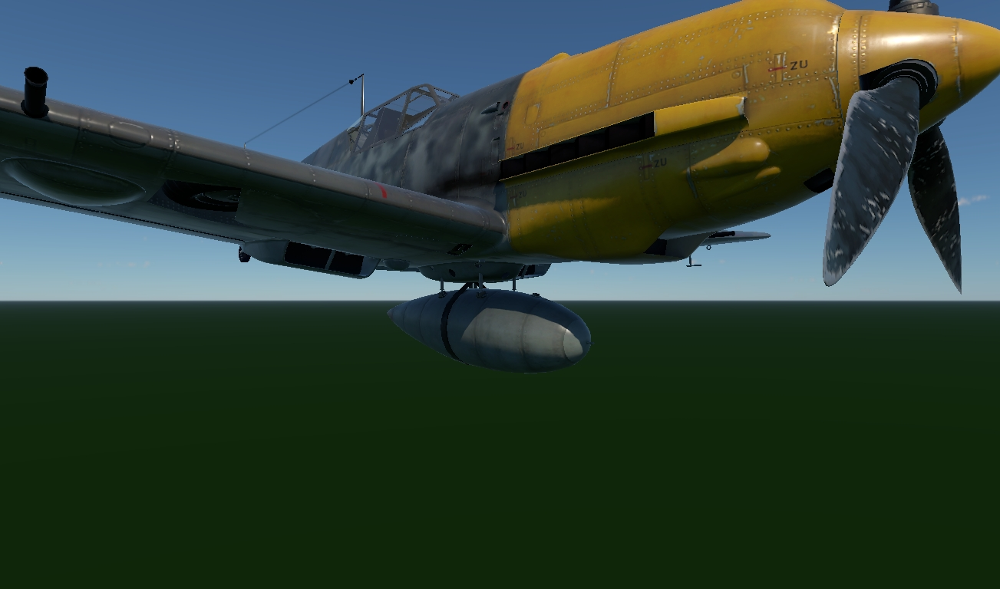 – <2.5.1.134 / <2021-05-16
- Hs 123 A-1 – drop tank (references in the DM only) – <1.95.0.125 / <2020-02-18
- USSR:
- MiG-29SMT – 1520 l drop tank – 2.30.0.15 / 2023-10-20
- GBR:
- 100 gal drop tank (model only) – 2.33.0.14 / 2023-12-14
- 100 gal drop tank (with fins) (model only) – 2.33.0.14 / 2023-12-14
- 230 gal drop tank (model only) – 2.33.0.14 / 2023-12-14
- Attacker F.B. Mk. 1 – fuel tank (texture only)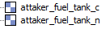 – <2.5.1.134 / <2021-05-16
- Attacker F.B. Mk. 2 – fuel tank (texture only) – <2.5.1.134 / <2021-05-16
- Beaufighter Mk. VIc – drop tank (texture only) – <2.5.1.134 / <2021-05-16
- Beaufighter Mk. 21 – drop tank (model only) – <2.5.1.134 / <2021-05-16
- Canberra B. Mk. 2 – wingtip fuel tanks (model only) – <2.5.1.134 / <2021-05-16
- Firebrand T.F. Mk. IV – fuel tank (texture only) – 2.13.0.76 / 2022-01-22
- Hellcat F. Mk. II – drop tank (model only) – <2.5.1.134 / <2021-05-16
- Javelin F.(A.W.) Mk. 9 – fuel tank (texture only) – <2.5.1.134 / <2021-05-16
- Lightning F. Mk. 6 – fuel tank (texture only) – <2.5.1.134 / <2021-05-16
- Meteor F. Mk. 3 – 180 gal fuel tank and 100 gal fuel tanks (model only) – <2.5.1.134 / <2021-05-16
- Meteor F. Mk. 3 (EE337) – 180 gal fuel tank and 100 gal fuel tanks (model only) – <2.5.1.134 / <2021-05-16
- Meteor F. Mk. 3/4 (EE360) – 180 gal fuel tank and 100 gal fuel tanks (model only) – <2.5.1.134 / <2021-05-16
- Meteor F. Mk. 4 – 180 gal fuel tank and 100 gal fuel tanks (model only) – <2.5.1.134 / <2021-05-16
- Meteor F. Mk. 8 – 180 gal fuel tank and 100 gal fuel tanks
 – <2.5.1.134 / <2021-05-16
– <2.5.1.134 / <2021-05-16 - Sea Fury F.B. Mk. 11 – drop tanks (references in the DM only) – <1.95.0.125 / <2020-02-18
- Venom F.B. Mk. 4 – drop tanks (model only) – <2.5.1.134 / <2021-05-16
- JPN:
- 220 gal drop tank (model only) – 2.46.0.16 / 2025-05-30
- 300 gal drop tank (model only) – 2.46.0.16 / 2025-05-30
- A5M4 – drop tank (references in the DM only) – <1.95.0.125 / <2020-02-18
- A5M4 (Hakiri) – drop tank (references in the DM only) – <1.95.0.125 / <2020-02-18
- A6M2a – drop tank (references in the DM only) – <1.95.0.125 / <2020-02-18
- A6M2b – drop tank (references in the DM only) – <1.95.0.125 / <2020-02-18
- A7M1 – drop tank (references in the DM only) – <1.95.0.125 / <2020-02-18
- A7M2 – drop tank (references in the DM only) – <1.95.0.125 / <2020-02-18
- J2M2 – drop tank (references in the DM only) – <1.95.0.125 / <2020-02-18
- J2M3 – drop tank (references in the DM only) – <1.95.0.125 / <2020-02-18
- J2M4 – drop tank (references in the DM only) – <1.95.0.125 / <2020-02-18
- J2M5 – drop tank (references in the DM only) – <1.95.0.125 / <2020-02-18
- J2M5 (Type 5) – drop tank (references in the DM only) – <1.95.0.125 / <2020-02-18
- N1K1-Ja – drop tank (references in the DM only) – <1.95.0.125 / <2020-02-18
- N1K2-J – drop tank (references in the DM only) – <1.95.0.125 / <2020-02-18
- N1K2-Ja – drop tank (references in the DM only) – <1.95.0.125 / <2020-02-18
- CHN:
- 480 l drop tank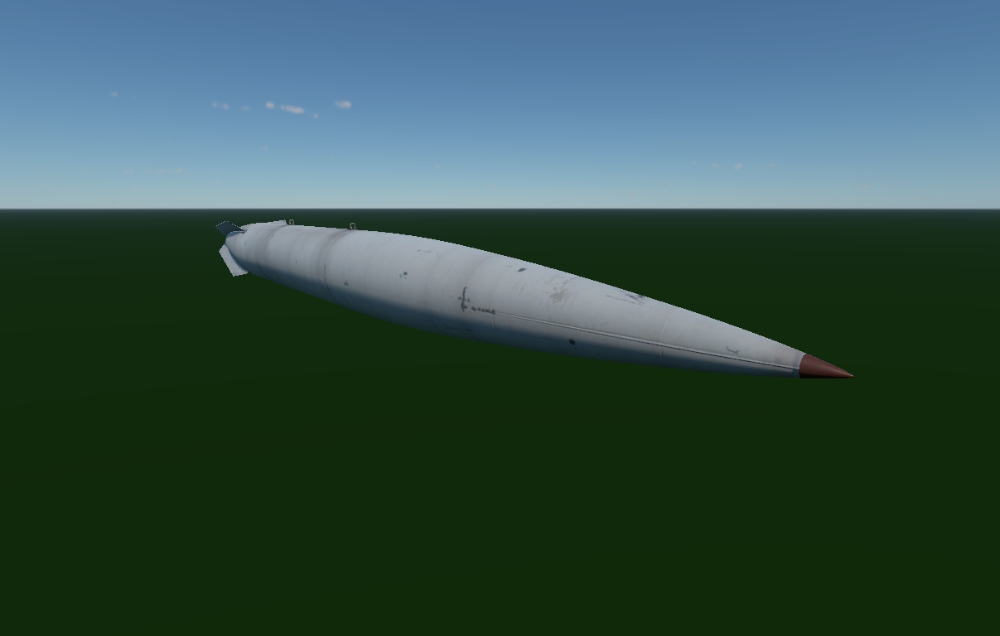 – 2.36.0.16 / 2024-05-31
- 1140 l drop tank – 2.36.0.16 / 2024-05-31
- A6M2b – drop tank (references in the DM only) – <1.95.0.125 / <2020-02-18
- Hs 123 A-1 – drop tank (references in the DM only) – <1.95.0.125 / <2020-02-18
- FRA:
- 275 gal drop tank [NLD] (model only)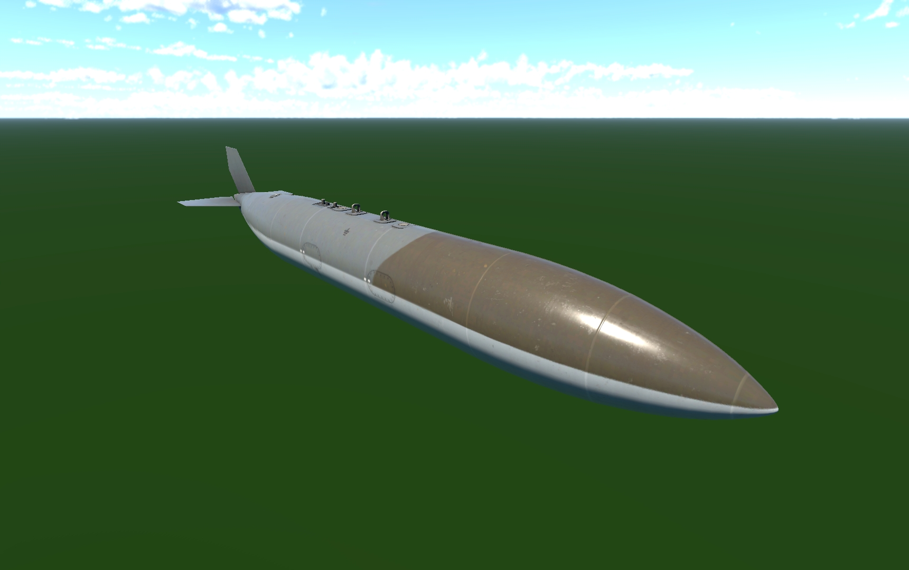 – 2.46.0.16 / 2025-05-30
- 625 l drop tank – 2.34.0.19 / 2024-03-01
- 1300 l RP 62 drop tank – 2.36.0.16 / 2024-05-31
- 1700 l RP 30 drop tank [BEL] (model, currently it uses the French model)
 – 2.33.0.14 / 2023-12-14
– 2.33.0.14 / 2023-12-14 - 1700 l RPL 501/502 drop tank (model only) – 2.33.0.14 / 2023-12-14
- 2000 l RPL 541/542 drop tank (model only) – 2.33.0.14 / 2023-12-14
- Barougan – drop tanks (model only) – <2.5.1.134 / <2021-05-16
- F6F-5 – drop tank (model only) – <2.5.1.134 / <2021-05-16
- F6F-5N – drop tank (model only) – <2.5.1.134 / <2021-05-16
- Meteor F. Mk. 8 [NLD] – 180 gal fuel tank and 100 gal fuel tanks – 2.36.0.16 / 2024-05-31
- Mystère II C – drop tanks (model only) – <2.5.1.134 / <2021-05-16
- Ouragan – drop tanks (model only) – <2.5.1.134 / <2021-05-16
- Sea Fury Mk. 51 – drop tanks (references in the DM only) – 2.36.0.16 / 2024-05-31
- ISR:
- Meteor F. Mk. 8 – 180 gal fuel tank and 100 gal fuel tanks – 2.12.0.14 / 2021-12-03
- Meteor N.F. Mk. 13 – 180 gal fuel tank (model only) – 2.12.0.14 / 2021-12-03 – 2.12.0.14 / 2021-12-03
- Ouragan – drop tanks (model only) – 2.12.0.14 / 2021-12-03
Aircraft missiles
- USA:
- AGM-65H2 (model only) – 2.34.0.19 / 2024-03-01
- AGM-65K – 2.36.0.16 / 2024-05-31
- AGM-114A – <1.95.0.125 / <2020-02-18
- AGM-114C – <1.95.0.125 / <2020-02-18
- AGM-114F – <1.95.0.125 / <2020-02-18
- AIM-7C (model, currently it uses the model of the AIM-7E) – <2.5.1.134 / <2021-05-16
- AIM-7E-2 (text only) – 2.8.0.24 / 2021-09-01
- AIM-26B – 2.46.0.16 / 2025-05-30
- AIM-54B – 2.16.0.19 / 2022-05-27
- AIM-120C-7 – 2.46.0.43 / 2025-06-16
- Fatter [IRN] (model only) – 2.37.0.110 / 2024-08-02
- FIM-92B – <1.95.0.125 / <2020-02-18
- DEU:
- Flz.Lwf. LB 66 – 2.46.0.16 / 2025-05-30
- Ru 344 X-4 (references only) – 2.38.0.17 / 2024-09-02
- USSR:
- 3M11 – <1.95.0.125 / <2020-02-18
- 9M17P – <1.95.0.125 / <2020-02-18
- 9M342 – 2.40.0.47 / 2024-11-04
- Kh-25MR – 2.8.0.19 / 2021-08-28
- Kh-36 Grom-1 – 2.40.0.30 / 2024-10-25
- Kh-59M (model only) – 2.44.0.30 / 2025-03-06
- Kh-59MK (model only) – 2.44.0.27 / 2025-03-05
- R-13M – <1.95.0.125 / <2020-02-18
- R-73L (model only) – 2.22.0.14 / 2022-12-09
- GBR:
- Skyflash – 2.8.0.19 / 2021-08-28
- ZT3A1 Swift [ZAF] (model only) – 2.40.0.30 / 2024-10-25
- CHN:
- AFT-08L – 2.18.0.13 / 2022-09-02
- AFT-09 – 2.18.0.13 / 2022-09-02
- AG-300M (model only) – 2.16.0.32 / 2022-06-06
- BA-7 – 2.18.0.13 / 2022-09-02
- C-704KD (IR) (model only) – 2.44.0.30 / 2025-03-06
- C-704KD (TV) (model only) – 2.44.0.30 / 2025-03-06
- CM-502KG (model only) – 2.18.0.13 / 2022-09-02
- CM-704KG (IR) (model only) – 2.44.0.30 / 2025-03-06
- CM-704KG (laser) (model only) – 2.44.0.30 / 2025-03-06
- CM-704KG (TV) (model only) – 2.44.0.30 / 2025-03-06
- PL-9 – 2.31.0.10 / 2023-10-31
- PL-11 – 2.14.0.28 / 2022-03-11
- TL-2 (model only) – 2.16.0.32 / 2022-06-06
- ITA:
- UMTAS [TUR] – 2.18.0.13 / 2022-09-02
- FRA:
- Exocet – 2.30.0.15 / 2023-10-20
- MICA-IR (model only) – 2.34.0.28 / 2024-03-06
- ISR:
- Python 4 – 2.28.0.27 / 2023-09-06
Aircraft rockets
- USA:
- 2.75-inch FFAR Mk. 4 M429 – <1.95.0.125 / <2020-02-18
- 2.75-inch LSFFAR – <1.95.0.125 / <2020-02-18
- 2.75-inch WAFAR – <1.95.0.125 / <2020-02-18
- 6.5-inch ATAR (model only) – 2.8.0.19 / 2021-08-28
- CRV-7 RA-79 – 1.101.0.12 / 2020-08-22
- CRV-7 WDU 5002/B FAT – 1.101.0.12 / 2020-08-22
- Hydra 70 (M229) – <1.95.0.125 / <2020-02-18
- Hydra 70 (M259) – <1.95.0.125 / <2020-02-18
- Zuni WAFAR Mk. 24 – <1.95.0.125 / <2020-02-18
- Zuni Mk. 40 – <1.95.0.125 / <2020-02-18
- Zuni Mk. 40 Mod. 1 – <1.95.0.125 / <2020-02-18
- Zuni Mk. 41 – <1.95.0.125 / <2020-02-18
- Zuni Mk. 41 Mod. 1 – <1.95.0.125 / <2020-02-18
- Zuni WAFAR Mk. 63 Mod. 2 – <1.95.0.125 / <2020-02-18
- DEU:
- Flz.Rak. Oerlikon (HE) [CHE] (model only) – 2.10.0.14 / 2021-10-15
- Panzerblitz III (model only) – <2.5.1.134 / <2021-05-16
- Typ 80-UI 3 (SURA) [CHE] – 2.30.0.15 / 2023-10-20
- USSR:
- RS-82 – <1.95.0.125 / <2020-02-18
- RS-132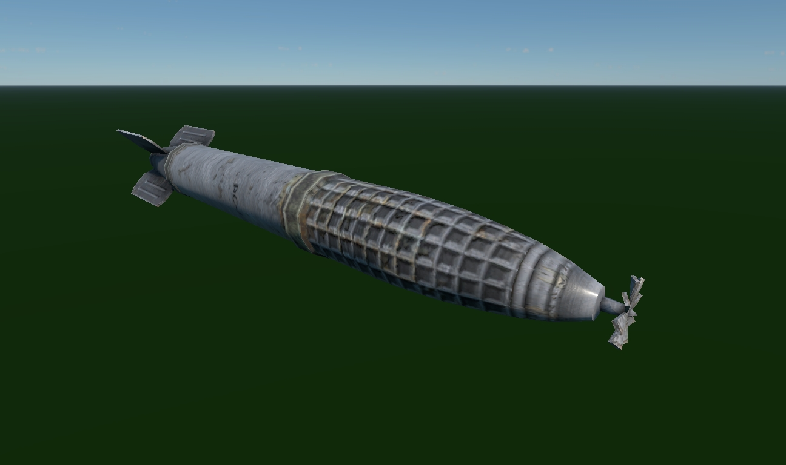 – <1.95.0.125 / <2020-02-18
- S-8 – <1.95.0.125 / <2020-02-18
- S-8KOM – <1.95.0.125 / <2020-02-18
- S-8M – 2.0.0.8 / 2020-11-03
- S-13 – <1.95.0.125 / <2020-02-18
- S-13D (model only)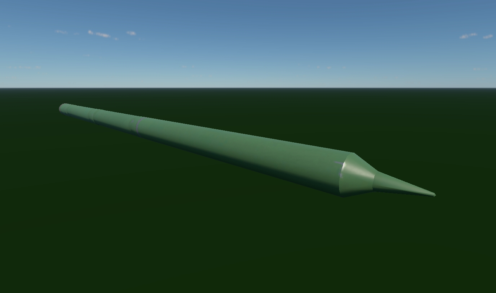 – <2.5.1.134 / <2021-05-16
- S-13DF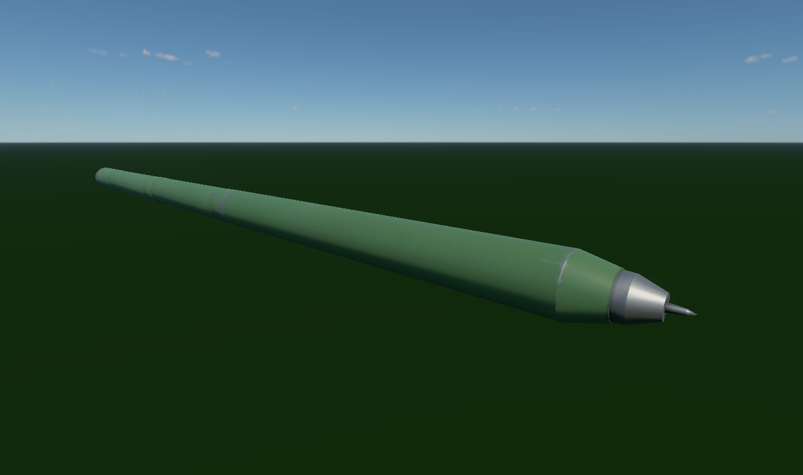 – <1.95.0.125 / <2020-02-18
- S-13T (model only) – <2.5.1.134 / <2021-05-16
- GBR:
- RP-2 (practice) (model only) – <2.5.1.134 / <2021-05-16
- JPN:
- No. 27
 – <1.95.0.125 / <2020-02-18
– <1.95.0.125 / <2020-02-18 - CHN:
- Type 57-1 (model, currently it uses the model of the S-5K) – 2.16.0.32 / 2022-06-06
- Type 57-2 (model only) – 2.16.0.32 / 2022-06-06
- Type 90-1 (HE) – 1.101.0.12 / 2020-08-22
- Type 90-1 (HEAT) (model, currently it uses the model of the 90-1 (HE))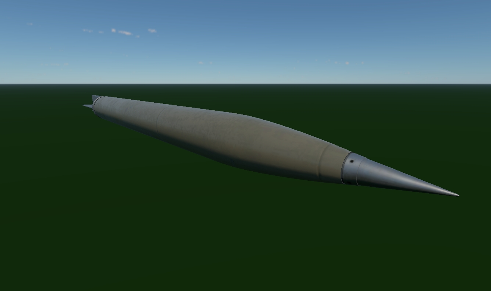 – <2.5.1.134 / <2021-05-16
- Type 130-2 (HE) – 2.0.0.8 / 2020-11-03
- ITA:
- ARF/8M3 (API) (model only) – 2.33.0.14 / 2023-12-14
- ARF/8M3 (HEI) (model only) – 2.33.0.14 / 2023-12-14
- ARF/8M3 (HEI) (heavy) (model only) – 2.33.0.14 / 2023-12-14
- ARF/8M3 (smoke) (model only) – 2.33.0.14 / 2023-12-14
- AV-SF-70 (AVC-70 AC) (model only) – 2.37.0.9 / 2024-06-19
- FRA:
- SNEB 37 – <1.95.0.125 / <2020-02-18
- SNEB Type 26 – <1.95.0.125 / <2020-02-18
- T10 121 – <1.95.0.125 / <2020-02-18
- T10 131 – <1.95.0.125 / <2020-02-18
- TBA 100 DEM – 1.101.0.18 / 2020-08-26
- TBA 100 EEG – 1.101.0.18 / 2020-08-26
- TBA 100 ESP – 1.101.0.18 / 2020-08-26
- TBA Multi-Dart 100 ABL – 1.101.0.18 / 2020-08-26
- TBA Multi-Dart 100 AMV
 – 1.101.0.18 / 2020-08-26
– 1.101.0.18 / 2020-08-26 - TDA (model, currently it uses the model of the SNEB Type 23) – <2.5.1.134 / <2021-05-16
- SWE:
- psrak m/70 (shu m/56/70 HE) (model only) – <2.5.1.134 / <2021-05-16
- psrak m/70 (shu m/70 HE) (model only) – <2.5.1.134 / <2021-05-16
- srak m/46 – <1.95.0.125 / <2020-02-18
- Launchers:
- Brandt 100-6 (texture only) – <2.5.1.134 / <2021-05-16
- FZ233 (texture only) – <2.5.1.134 / <2021-05-16
Aircraft rocket boosters (RATO)
- Mirage III Sepr 844 (model, currently it uses the model of the Sepr 841) – <2.5.1.134 / <2021-05-16
- Sea Venom – <1.95.0.125 / <2020-02-18
- Swordfish (model only) – <2.5.1.134 / <2021-05-16
Aircraft miscellaneous
- F-2A drogue chute (model only) – 2.46.0.31 / 2025-06-07
- F-111 drogue chute (model only)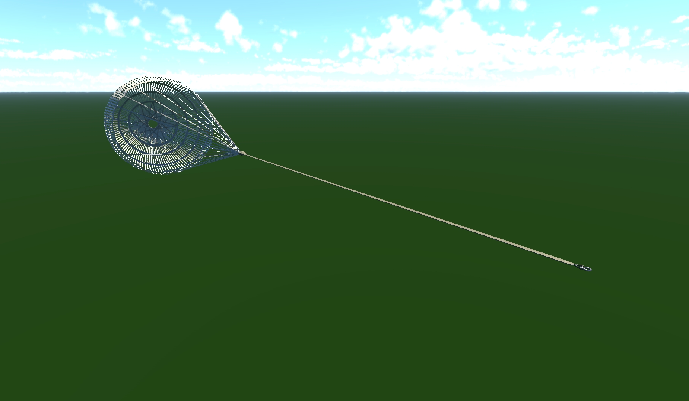 – 2.31.0.10 / 2023-10-31
- Me 410 A-1/U2 and Me 410 A-1/U4 cockpits (they currently use the Me 410 A-1's) – <2.5.1.134 / <2021-05-16
- GBR CLE container Mk. III – <1.95.0.125 / <2020-02-18
- SWE KA / U22 ECM pod (texture only) – 2.13.0.76 / 2022-01-22
Ground vehicle weapons
- 8 mm:
- Breda Mod. 37 – same as Mod. 38, but with 450 rpm rate of fire instead of 600 rpm, 5 sec reload time instead of 8 sec, and uses different sounds – <1.95.0.125 / <2020-02-18
- 15 mm:
- M.G. 151 – <1.95.0.125 / <2020-02-18
- 37 mm:
- M5 – we have the early variant in game, this has M74 instead of M74B1 – <1.95.0.125 / <2020-02-18
- 40 mm:
- 42M – exact same as the lvakan m/36 – 2.6.0.18 / 2021-05-22
- M129 grenade launcher – instead of using HEAT like the helicopter-mounted version, it uses HE – 2.6.0.18 / 2021-05-22
- 57 mm:
- ZiS-4 obr. 1941 g. (for open crew compartment) – with different shell ejection FX – 2.28.0.21 / 2023-09-01
- 76 mm:
- L-11 (early) – it only has BR-350A APCBC, OF-350M HE, and Sh-354T Shrapnel – <1.95.0.125 / <2020-02-18
- M1A2 (text only) – <1.97.0.44 / <2020-03-11
- Pa.K. 39 (r) – same as the Pa.K. 36 (r), but with 7.14 sec reload time instead of 5 sec – <1.95.0.125 / <2020-02-18
- Type 60 – D-56T with different shells – 2.26.0.19 / 2023-05-19
- 105 mm:
- CN105/56 G2 – old cannon of the CV90105 when it used the TML turret with DM 12 APFSDS, DM 23 HESH, DM 512 HEAT-FS, and M735 APFSDS – 2.18.0.13 / 2022-09-02
- L7A3 (Type 74 TK) – old cannon of the Type 74 TK (B) with M393A2 HESH, M456 HEAT-FS, M416 Smoke, M728 APDS, and M735 APFSDS – <1.95.0.125 / <2020-02-18
- 106 mm:
- M40 Recoilless Rifle – exact same as the M40A1 – <1.95.0.125 / <2020-02-18
- 120 mm:
- Rh120-44 (VT 1-2) – this one has slower reload, though the VT 1-2 currently uses the generic Rh120-44 cannon – <1.95.0.125 / <2020-02-18
- Type 3 – same as the 120 mm 10th Year Type of the Experimental 12cm SPG, but without HE – 1.101.0.12 / 2020-08-22
Ground vehicle belts, shells, and missiles
- Most of these are due to more than one tank using the same cannon file, but with restricted shells.
- The lack of low-tier HE was an intentional change by Gaijin to prevent newbies running around with HE, achieving absolutely nothing, and leaving the game.
- 7.62 mm PM-10:
- API / API / T belt, API / API-T / API-T belt, API belt: – 2.45.1.22 / 2025-04-01
- DEU – Garford-Putilov (Beute)
- USSR – Garford-Putilov
- 7.7 mm Lewis Mk. I:
- API / API / T belt, API / API-T / API-T belt, API belt: – 2.45.1.22 / 2025-04-01
- DEU – s.Kw. (Beute)
- 7.7 mm M.G. 08:
- API belt: – 2.45.1.22 / 2025-04-01
- DEU – A.7.V., Garford-Putilov (Beute)
- USSR – Garford-Putilov
- 7.92 mm BESA Mk. III:
- API belt: – <1.95.0.125 / <2020-02-18
- DEU – Inf.Pz.Kpfw. 750 (e)
- GBR – AEC Mk. II, Black Prince, Caernarvon, Centurion Mk. I, Centurion Mk. II, Centurion Mk. 3, Churchill Mk. I, Churchill Mk. III, Churchill Mk. III A.V.R.E., Churchill Mk. VII, Churchill Mk. VII Crocodile, Churchill Mk. IV N.A.75, Comet Mk. Ia, Comet Mk. Ia (7th Arm.Div.), Commodore, Cromwell Mk. Ic, Cromwell Mk. Vc, Cromwell Mk. Vc (Tulip), Crusader Mk. II, Crusader Mk. II (1st Arm.Div.), Crusader Mk. III, Daimler AC Mk. II, Harry Hopkins Mk. I, Matilda Mk. III, Matilda Mk. IV (Hedgehog), SARC Mk. VI (2-pdr), SARC Mk. VI (6-pdr), strv 81 (rbs 52), Tetrarch Mk. I, T.O.G. 2*, Tortoise, Valentine Mk. I, Valentine Mk. XI
- FRA – Crusader Mk. II
- SWE – Comet Mk. Ia, strv 81 (rbs 52)
- 7.92 mm M.G. 13:
- API belt: – <1.95.0.125 / <2020-02-18
- DEU – Nb.-Pz.Kpfw. IV
- CHN – Sd.Kfz. 222
- 7.92 mm M.G. 34:
- AP belt: – <1.95.0.125 / <2020-02-18
- DEU – Bfw. Jagdpanther G1, E 100, Elefant, Jagdpanther G1, J.Pz. 38, Jagdtiger, Maus, Nashorn, Ostwind II, Ostwind II "Ost", Panther A, Panther D, Panther G, Panther G (Ersatz M10), Panther II, Pz.Kpfw. 38 (t) n.A., Pz.Bfw. IV J, Pz.Bfw. Tiger (P), Pz.Kpfw. II C, Pz.Kpfw. II C (Trop), Pz.Kpfw. II C (Twitch Drop), Pz.Kpfw. II F, Pz.Kpfw. III B, Pz.Kpfw. III E, Pz.Kpfw. III F, Pz.Kpfw. III J, Pz.Kpfw. III J1, Pz.Kpfw. III L, Pz.Kpfw. III L (Twitch Drop), Pz.Kpfw. III M, Pz.Kpfw. III N, Pz.Kpfw. IV C, Pz.Kpfw. IV E, Pz.Kpfw. IV F1, Pz.Kpfw. IV F2, Pz.Kpfw. IV G, Pz.Kpfw. IV H, Pz.Kpfw. IV J, s.Pz.Kpfw. 756 (r), Sd.Kfz. 222, Sturmtiger, Tiger I (early), Tiger I (early) "Ost", Tiger I (early) "West", Tiger I (early) (event), Tiger I (late), Tiger II (early), Tiger II (Serie), Tiger II (Serie) (Sla.16), Tiger II (10.5cm), V.K. 30.02 (M) V2, V.K. 45.01 (P)
- USSR – T-IIIJ, T-VA
- JPN – Tiger I
- ITA – Pz.Kpfw. III N, Pz.Kpfw. IV G, Tiger I
- FRA – Panther mle. G (Besnier) «Dauphiné»
- SWE – PzKw IVJ, Tiger II
- 7.92 mm M.G. 37 (t):
- AP belt: – <1.95.0.125 / <2020-02-18
- DEU – Marder III, Marder III H, Pz.Kpfw. 35 (t), Pz.Kpfw. 38 (t) A, Pz.Kpfw. 38 (t) F
- 7.92 mm M.G. 42:
- AP belt: – <1.95.0.125 / <2020-02-18
- DEU – 15cm Pz.W. 42, Aufkl.Pz. 38, J.Pz. IV F, E 100, Panther F, Pz. IV/70 (A), Pz. IV/70 (V), Sd.Kfz. 234/1, Sd.Kfz. 234/2, Sd.Kfz. 234/2 (Twitch Drop), Sd.Kfz. 234/3, Sd.Kfz. 234/4
- 12.7 mm CRC F1:
- API-T / API / API-T belt, AP / AP / API-T belt, API-T belt: – 2.35.0.50 / 2024-03-26
- FRA – Leclerc MSC, Leclerc S1 T3, Leclerc S2 T9, Leclerc S2 T9 (AZUR P1), Leclerc S21 T11
- 12.7 mm ksp 88:
- API-T / API / API-T belt, AP / AP / API-T belt, API-T belt: – 1.97.0.43 / 2020-03-09
- SWE – CV90120
- 12.7 mm M2 HB:
- API-T / API / API-T belt, AP / AP / API-T belt, API-T belt: – <1.95.0.125 / <2020-02-18
- USA – 120S, CCVL (LOSAT), IPM1, LVT (A) (4), M1, M1 (KVT), M1A1, M1A1 AIM SA, M1A1HC, M1A1HC «Click-Bait», M1A2, M1A2 SEP (TUSK), M1A2 SEPv2 (TUSK 2), M4, M4 (WTM Promo), M4 (90 mm), M4A1, M4A1(76)W, M4A2, M4A2(76)W, M4A3(76)W HVSS, M4A3(76)W HVSS "Hell on Wheels", M4A3(105) HVSS, M4A3E2(75)W, M4A3E2(75)W (37th T.Bat.) «Cobra King», M4A3E2(76)W, M6A1, M6A1E2-1, M8 GMC, M8 HMC, M8 LAC, M10 GMC, M18 GMC, M18 GMC (805th TD.Bat.) «Black Cat», M18 GMC "Hell on Wheels", M24, M24 (Thunder League) M26, M26 (T99), M26E1, M36 GMC, M36B2 GMC, M41A1, M44, M46, M46 (73rd T.Bat.) «Tiger», M47, M48A1, M103, M109A1, M551 (M32A1), M551, M1128 MGS, M1128 MGS (3/2nd Cav.Reg.) «Wolfpack», Merkava S. 1, Merkava S. 2 B, Merkava S. 3 D, T1E1 (M7), T1E1 (T7), T14, T20, T25, T26E4-1, T26E5, T28, T28 (Transport), T29, T30, T32, T32E1, T34, T54E1, T54E2, T86 GMC, T92, T95E1, XM8 AGS
- DEU – M 41, M 44, M 47, M 48 A2C, Pz.Kpfw. 748 (a)
- USSR – M4-A2-76
- GBR – Achilles Mk. Ic, Achilles Mk. Ic (65 A.T.Reg.), Centurion Mk. 5/1, Challenger 2 TES (Dorchester 2H) (2012), Challenger 2E, M44, M109A1, SARC Mk. VI (6-pdr), Sherman Mk. Ic (2. Dy.Pan.) «Trzyniec», Sherman Mk. II, Sherman Mk. Vc, Sherman Mk. Vc "Echoes of Overlord", Sho't Kal D, VFM5
- JPN – M4A3(76)W HVSS, M24, M36 GMC, M41A1, M44A1, M47, MCV (No. 3), New TK (No. 3) (2006), New TK (No. 3) (2009), STA-1, STA-3, STB-1, Type 10 TK, Type 16 MCV, Type 16 MCV (15th RDR), Type 60 APC (ATM-1), Type 61 TK (B), Type 74 TK (C), Type 74 TK (C) "red_star", Type 74 TK (E), Type 74 TK (F), Type 74 TK (G), Type 75 HSP, Type 75 MSSR, Type 90 TK, Type 90 TK (B), Type 90 TK (B) (Fuji A.I.R.), Type 99 HSP
- CHN – CM11, CM25, M4A1(75)W, M4A4 (1st PTG), M8 HMC, M8 LAC, M10, M18, M24, M36 GMC, M41A3, M41D, M48A1, M113A1 TOW, Type 64
- ITA – 76/52 M18, 90/50 M36B1, 155/23 M44, 155/23 M109G, Centauro MGS, Centauro MGS [OMN], KF41HU, Leopard 2A7HU, M24, M26 (132ª Div.Cor.) «Ariete», M26A1, M47E2, Sherman I Ibrido, Sherman I C Ibrido, Sherman V C, OF 40 Mk. 2, OF 40 Mk. 2 (MTCA), VTC M113A1 TOW
- FRA – AA M10, AA M36B2, AA M44, A.M.X. 13t-75 (M24), A.M.X. 30 (T 142) (ACRA), A.M.X. 30 B, CN 155 Au F1, LVT (4) (M1), M4A1, M4A3(105) HVSS, M4A3E2(75)W, M26, M46, Super A.M.X. 30, VBCI MK2 (MCT-30)
- SWE – AMV HWP (CT-CV), K9 (VIDAR), M24
- ISR – Centurion Mk. 5, Giraf, M51 (M4A3), M109, Magach 1, Magach 2, Magach 3, Magach 6 A, Magach 6 B, Magach 6 B Gal, Magach 6 B Gal Batash, Magach 6 R, Magach 7 G, Merkava S. 1 M, Merkava S. 2 D, Merkava S. 3 B, Merkava S. 3 B Baz, Merkava S. 3 D (Ra'am Segol), Merkava S. 4 B, Merkava S. 4 "LIC", Merkava S. 4 M, Rochev, Sho't Kal D, Sho't Kal G, Tiran 6
- 12.7 mm M3P:
- API-T / API / API-T belt, AP / AP / API-T belt, API-T belt: – 2.8.0.19 / 2021-08-28
- USA – M60 AMBT, XM1069 (ADATS)
- 12.7 mm M85:
- API-T / API / API-T belt, AP / AP / API-T belt, API-T belt: – <1.95.0.125 / <2020-02-18
- USA – M60, M60A1 AOS, M60A1 R/PE, M60A2, M60A3 TTS, M728 CEV, XM1 (C), XM1 (GM), XM803
- CHN – M60A3 TTS
- ITA – M60A1 (132ª Div.Cor.) «Ariete»
- ISR – Magach 6 A
- 12.7 mm MG 50:
- API-T / API / API-T belt, AP / AP / API-T belt, API-T belt: – 2.29.0.5 / 2023-09-12
- DEU – Leopard 2 PSO
- 20 mm Breda 20/65 Mod. 35:
- HEFI-T belt: – <1.95.0.125 / <2020-02-18
- ITA – AB. 41, L. 40, L. 40 (31º Reg.Car.)
- 20 mm Kw.K. 30:
- APCR-T belt: – <1.95.0.125 / <2020-02-18
- CHN – Sd.Kfz. 222
- HEFI-T belt: – <1.95.0.125 / <2020-02-18
- DEU – Pz.Kpfw. II C, Pz.Kpfw. II C (Trop), Pz.Kpfw. II C (Twitch Drop)
- 20 mm Kw.K. 38:
- HEFI-T belt: – <1.95.0.125 / <2020-02-18
- DEU – Pz.Kpfw. II F
- 20 mm MK 20:
- APDS / APDS / APDS / HEFI-T belt: – 2.6.0.18 / 2021-05-22
- DEU – Marder 1 A1 (-)
- 20 mm TNSh:
- FI belt: – <1.95.0.125 / <2020-02-18
- USSR – T-60
- 25 mm M242:
- M919 APFSDS belt: – 2.4.0.31 / 2021-03-03
- USA – M3 CFV, XM1069 (ADATS)
- HEI-T / HEI-T / HEI-T / APDS belt: – <1.95.0.125 / <2020-02-18
- USA – M3A3 CFV
- GBR – Fahris
- 30 mm 2A42:
- AP-T / AP-T / AP-T / HEF-T belt, APDS / APDS / APDS / APDS / HEF-T belt, HEFI / HEFI / HEFI / AP-T belt: – <1.95.0.125 / <2020-02-18
- USSR – T-72M2
- APFSDS belt: – 2.15.1.114 / 2022-05-19
- USSR – BMP-2D, T-72M2
- SWE – BMP-2MD
- 30 mm 2A72:
- APFSDS belt: – 2.15.1.114 / 2022-05-19
- USSR – BMD-4, BMD-4M, BMP-3, BTR-80A
- ITA – BTR-80A
- 30 mm ZPZ02:
- AP-T / AP-T / AP-T / HEF-T belt: – 2.34.0.19 / 2024-03-01
- CHN – ZBD04A
- 30 mm ZPZ02:
- AP-T / AP-T / AP-T / HEF-T belt: – 2.25.1.31 / 2023-04-04
- CHN – QN506
- 37 mm 61-K:
- BR-167P APCR-T belt: – <1.95.0.125 / <2020-02-18
- USSR – ZiS-43
- 37 mm Kw.K. 34 (t):
- Spr.Gr. 34 (t) HE: – <1.95.0.125 / <2020-02-18
- DEU – Pz.Kpfw. 35 (t)
- 37 mm Kw.K. 36:
- Spr.Gr. 18 HE: – <1.95.0.125 / <2020-02-18
- DEU – Nb.-Pz.Kpfw. IV, Pz.Kpfw. III B, Pz.Kpfw. III E
- 37 mm Kw.K. 38 (t):
- Spr.Gr. 34 (t) HE: – <1.95.0.125 / <2020-02-18
- DEU – Pz.Kpfw. 38 (t) A, Pz.Kpfw. 38 (t) F, Pz.Kpfw. 38 (t) n.A.
- 37 mm M3:
- M63 SAPHEI: – <1.95.0.125 / <2020-02-18
- USA – M2
- 37 mm M5:
- M63 SAPHEI: – <1.95.0.125 / <2020-02-18
- USA – Grant Mk. I, M2A4, M2A4 (1st Arm.Div.), M3 Light, M3 Medium
- USSR – M3S
- GBR – Grant Mk. I, Stuart Mk. I
- 37 mm M6:
- M63 SAPHEI: – <1.95.0.125 / <2020-02-18
- USA – LVT (A) (1), LVT (A) (1) (The Russian Badger), M3A1, M3A1 (USMC), M8 LAC
- GBR – Stuart Mk. III
- CHN – M3A3, M3A3 (1st PTG), M8 LAC
- ITA – M3A3
- FRA – M3A3
- 37 mm Pa.K. 36:
- Spr.Gr. 18 HE: – 1.101.0.84 / 2020-09-21
- DEU – Sd.Kfz. 251/10
- 37 mm SA 18:
- mle. 1892 APHE: – <1.95.0.125 / <2020-02-18
- FRA – FCM 36, H 35
- 40 mm akan m/70B:
- slpprj m/01 LK APFSDS: – 1.97.0.30 / 2020-03-03
- SWE – Lvkv 9040C, strf 9040A (rbs 56), strf 9040B
- 40 mm Q.F. Mk. III:
- Mk. II HE: – <1.95.0.125 / <2020-02-18
- GBR – Churchill Mk. I
- 40 mm Q.F. Mk. IX:
- Mk. II HE: – <1.95.0.125 / <2020-02-18
- GBR – A.C. Mk. I, Cruiser Mk. III, Cruiser Mk. III (3rd R.T.R.), Cruiser Mk. IV, Cruiser Mk. IVa, Crusader Mk. II, Crusader Mk. II (1st Arm.Div.), Daimler AC Mk. II, Harry Hopkins Mk. I, SARC Mk. IVa, SARC Mk. VI (2-pdr), Tetrarch Mk. I, Valentine Mk. I
- FRA – Crusader Mk. II
- 45 mm 20-K:
- BR-240P APCR: – <1.95.0.125 / <2020-02-18
- USSR – BA-11, BT-5, BT-7, BT-7 (Twitch Drop), BT-7M, RBT-5, T-26-1, T-26-1 (1-ya Gv.T.Br.), T-26E, T-35
- CHN – T-26, T-26 (200th Div.)
- SWE – T 26 E
- O-240 HE: – <1.95.0.125 / <2020-02-18
- USSR – BA-11, BT-5, BT-7, BT-7 (Twitch Drop), BT-7M, KV-7 (U-13), RBT-5, T-26-1, T-26-1 (1-ya Gv.T.Br.), T-26E, T-35, T-50, T-70, T-126
- CHN – T-26, T-26 (200th Div.)
- SWE – T 26 E
- 47 mm Ansaldo 47/32 Mod. 35:
- Granata Mod. 35 HE: – <1.95.0.125 / <2020-02-18
- ITA – M. 40 Serie I, M. 40 Serie II, M. 40 Serie III, M. 41
- 47 mm Ansaldo 47/32 Mod. 39:
- Granata Mod. 35 HE: – 2.21.0.10 / 2022-10-26
- ITA – A.S. 42 (Ansaldo Mod. 39)
- 47 mm Pa.K. (t):
- Spr.Gr. 38 HE: – <1.95.0.125 / <2020-02-18
- DEU – Panzerjäger I
- 47 mm SA 35:
- mle. 1935 HE: – <1.95.0.125 / <2020-02-18
- FRA – AMC 35
- 50 mm Kw.K. 38:
- Pz.Gr. 40/1 APCR, Spr.Gr. 38 HE: – <1.95.0.125 / <2020-02-18
- DEU – le.Pz.Spw. 204 (f) (Kw.K. 38), Pz.Kpfw. III F, Pz.Kpfw. III J
- USSR – T-IIIJ
- 57 mm pvkan m/43:
- slpprj m/49 APDS: – 2.28.0.21 / 2023-09-01
- SWE – pvkv III
- 57 mm Q.F. Mk. V:
- Mk. Ib APDS: – <1.95.0.125 / <2020-02-18
- DEU – Inf.Pz.Kpfw. 750 (e)
- GBR – AEC Mk. II, Churchill Mk. III
- 57 mm S-68:
- DKY1/PG59-57 HE-VTF: – <1.95.0.125 / <2020-02-18
- USSR – ZSU-57-2
- ITA – ZSzU-57-2
- SWE – SU-57-2
- ISR – ZSU-57-2
- 57 mm Type 90:
- Type 90 HE: – <1.95.0.125 / <2020-02-18
- JPN – I Gō Kō (late)
- 57 mm Type 97:
- Type 90 HE: – <1.95.0.125 / <2020-02-18
- JPN – Chi Ha
- CHN – Chi Ha
- 57 mm ZiS-2:
- BR-271M APCBC, BR-271P APCR: – <1.95.0.125 / <2020-02-18
- USA – LVT (A) (4) (ZiS-2)
- USSR – ZiS-30
- CHN – LVT (A) (4) (ZiS-2)
- 57 mm ZiS-4 obr. 1941 g.:
- BR-271M APCBC, BR-271P APCR: – <1.95.0.125 / <2020-02-18
- USSR – SU-57B, T-34 (1941) (ZiS-4)
- 57 mm ZiS-4 obr. 1943 g.:
- BR-271M APCBC: – <1.95.0.125 / <2020-02-18
- USSR – T-34 (1942) (ZiS-4)
- 75 mm Kw.K. 37:
- Hl.Gr. 38C HEAT: – <1.95.0.125 / <2020-02-18
- DEU – Pz.Kpfw. IV C
- 75 mm Kw.K. 40 L/43:
- Pz.Gr. 40 (W) APCR: – <1.95.0.125 / <2020-02-18
- DEU – Pz.Kpfw. IV F2, Pz.Kpfw. IV G
- 75 mm Kw.K. 40 L/48:
- Pz.Gr. 40 (W) APCR: – <1.95.0.125 / <2020-02-18
- DEU – Pz.Bfw. IV J, Pz.Kpfw. IV H, Pz.Kpfw. IV J
- ITA – Pz.Kpfw. IV G
- SWE – PzKw IVJ
- 75 mm Kw.K. 42:
- Pz.Gr. 40/42 APCR: – <1.95.0.125 / <2020-02-18
- DEU – Panther D, Panther G (Ersatz M10), V.K. 30.02 (M) V2
- USSR – T-VA
- FRA – Panther G (Besnier) «Dauphiné»
- 75 mm M3:
- M89 Smoke: – <1.95.0.125 / <2020-02-18
- ITA – Sherman I Ibrido
- T45 APCR: – <1.95.0.125 / <2020-02-18
- USA – M4, M4 (WTM Promo), M4 (T34E1 Calliope), M4A1, M8 GMC
- CHN – M4A1(75)W, M4A4, M4A4 (1st PTG)
- ITA – Sherman I Ibrido, Sherman V
- FRA – M4A1, M4A4
- SWE – Sherman Mk. III
- 75 mm M6:
- T45 APCR: – <1.95.0.125 / <2020-02-18
- USA – M24
- JPN – M24
- CHN – M24
- ITA – M24
- FRA – A.M.X. 13t-75 (M24)
- SWE – M24
- 75 mm Pa.K. 39:
- Pz.Gr. 40 (W) APCR: – <1.95.0.125 / <2020-02-18
- DEU – J.Pz. IV F, J.Pz. 38
- 75 mm Pa.K. 40/3:
- Pz.Gr. 40 (W) APCR: – <1.95.0.125 / <2020-02-18
- DEU – Marder III H, Sd.Kfz. 234/4, Sd.Kfz. 251/22
- 75 mm SA 50:
- PCOT-51P APCBC: – <1.95.0.125 / <2020-02-18
- FRA – M4A1 (FL 10)
- 75 mm Stu.K. 40 L/43:
- Pz.Gr. 40 (W) APCR: – <1.95.0.125 / <2020-02-18
- DEU – Stu.G. III F
- 75 mm Stu.K. 40 L/48:
- Pz.Gr. 40 (W) APCR: – <1.95.0.125 / <2020-02-18
- DEU – Stu.G. III G
- ITA – 75/48 Stu.G. III G
- 76.2 mm F-32:
- BP-350A HEAT, BR-350P APCR: – <1.95.0.125 / <2020-02-18
- DEU – KV-1B
- USSR – BT-7art (F-32), KV-1E
- D-350A Smoke: – <1.95.0.125 / <2020-02-18
- DEU – KV-1B
- 76.2 mm F-34:
- BP-350A HEAT, BR-350P APCR: – <1.95.0.125 / <2020-02-18
- USSR – T-34 (1941), T-34 (1941) (1-ya Gv.T.Br.)
- SWE – T 34 B
- BR-350SP APBC: – <1.95.0.125 / <2020-02-18
- USSR – KV-7 (U-13)
- D-350A Smoke: – <1.95.0.125 / <2020-02-18
- DEU – Pz.Kpfw. 747 (r)
- USSR – KV-7 (U-13)
- 76.2 mm F-96:
- BP-350A HEAT, BR-350P APCR: – <1.95.0.125 / <2020-02-18
- USSR – Matilda-III (F-96)
- 76.2 mm KT-28:
- Sh-354T Shrapnel: – 2.29.0.106 / 2023-10-17
- USSR – T-26-4, T-28 (1936)
- 76.2 mm L-11:
- BP-350A HEAT, BR-350P APCR: – <1.95.0.125 / <2020-02-18
- USSR – KV-1 (1939), SMK, T-34 (Pilot), T-34 (1940)
- 76.2 mm M1A1:
- M88 Smoke: – <1.95.0.125 / <2020-02-18
- USA – T20
- M93 APCR: – <1.95.0.125 / <2020-02-18
- USA – M4A1(76)W
- 76.2 mm M1A1C:
- M88 Smoke: – <1.95.0.125 / <2020-02-18
- USSR – M4-A2-76
- M93 APCR: – <1.95.0.125 / <2020-02-18
- USA – M4A2(76)W
- USSR – M4-A2-76
- CHN – M18
- ITA – 76/52 M18
- 76.2 mm M7:
- M93 APCR: – <1.95.0.125 / <2020-02-18
- USA – M6A1, M10 GMC, T1E1 (M7), T55E1
- CHN – M10
- FRA – AA M10
- 76.2 mm M32A1:
- M319 APCR: – <1.95.0.125 / <2020-02-18
- USA – M551 (M32A1)
- CHN – M41A3
- M331A2 APDS: – <1.95.0.125 / <2020-02-18
- CHN – M41A3
- M496 HEAT-FS: – <1.95.0.125 / <2020-02-18
- USA – M41A1, M551 (M32A1)
- JPN – M41A1
- CHN – M41A3
- 76.2 mm obr. 1902/30 gg.:
- Sh-354T Shrapnel: – 2.29.0.106 / 2023-10-17
- USSR – SU-5-1
- 76.2 mm Q.F. Mk. II:
- Mk. I APDS: – <1.95.0.125 / <2020-02-18
- GBR – Concept 3
- 76.2 mm Q.F. Mk. VII:
- Mk. I APDS: – <1.95.0.125 / <2020-02-18
- GBR – A.C. Mk. IV, Achilles Mk. Ic, Achilles Mk. Ic (65 A.T.Reg.), Archer, Avenger Mk. I, Avenger Mk. I "Echoes of Overlord", Sherman Mk. Ic (2. Dy.Pan.) «Trzyniec», Sherman Mk. Vc, Sherman Mk. Vc "Echoes of Overlord"
- ITA – Sherman I C Ibrido
- 76.2 mm ZiS-5:
- BP-350A HEAT: – <1.95.0.125 / <2020-02-18
- USSR – KV-1 (1941), KV-1S
- SWE – KV-1A
- 85 mm D-5S:
- 3BK2 HEAT-FS, BR-367 APCBC, BR-367P APCR: – <1.95.0.125 / <2020-02-18
- USSR – SU-85, SU-85A, SU-85M
- BR-365P APCR: – <1.95.0.125 / <2020-02-18
- USSR – SU-85
- 85 mm D-5T:
- 3BK2 HEAT-FS, BR-367P APCR: – <1.95.0.125 / <2020-02-18
- USSR – IS-1, IS-1 "In May 1945", KV-85, T-34-85 (1943), T-44 No. 1
- BR-365P APCR: – <1.95.0.125 / <2020-02-18
- USSR – KV-85, T-34-85 (1943)
- BR-367 APCBC: – <1.95.0.125 / <2020-02-18
- USSR – IS-1, KV-85, T-34-85 (1943)
- 85 mm F-30:
- 3BK2 HEAT-FS, BR-365K APHE, BR-365P APCR, BR-367 APCBC, BR-367P APCR: – <1.95.0.125 / <2020-02-18
- USSR – KV-220
- 85 mm Type 1963:
- Type 56 APCR: – <1.95.0.125 / <2020-02-18
- USSR – ZTQ62
- CHN – 211 (85 mm), ZTS63 (1964), ZTQ62
- BR-367P APCR, Type 56 HEAT-FS: – <1.95.0.125 / <2020-02-18
- CHN – 211 (85 mm)
- 85 mm ZiS-S-53:
- 3BK2 HEAT-FS: – <1.95.0.125 / <2020-02-18
- USSR – T-34-85 (1944), T-34-85 (1944) "In May 1945", T-34-85 (1944) (61-j Gv.T.Br.), T-34-85E, T-44
- CHN – T-34-85 (1944), T-34-85 (1944) (2nd Tank Div.), Т-34-85 (1960)
- SWE – T 34/85
- BR-367 APCBC: – <1.95.0.125 / <2020-02-18
- USSR – T-34-85 (1944), T-34-85 (1944) "In May 1945", T-34-85 (1944) (61-j Gv.T.Br.), T-34-85E
- CHN – T-34-85 (1944), T-34-85 (1944) (2nd Tank Div.)
- SWE – T 34/85
- BR-367P APCR: – <1.95.0.125 / <2020-02-18
- USSR – T-34-85 (1944), T-34-85 (1944) "In May 1945", T-34-85 (1944) (61-j Gv.T.Br.), T-34-85E
- CHN – T-34-85 (1944), T-34-85 (1944) (2nd Tank Div.), Т-34-85 (1960)
- SWE – T 34/85
- 88 mm Kw.K. 36:
- Pz.Gr. 40 APCR: – <1.95.0.125 / <2020-02-18
- DEU – Tiger I (early), Tiger I (early) "Ost", Tiger I (early) "West", Tiger I (early) (event), V.K. 45.01 (P)
- JPN – Tiger I
- ITA – Tiger I
- 88 mm Kw.K. 43:
- Gr. 39 HL HEAT: – <1.95.0.125 / <2020-02-18
- SWE – Tiger II
- 90 mm 90/50 M3A1:
- T108E40 HEAT-FS: – <1.95.0.125 / <2020-02-18
- ITA – M26A1
- 90 mm Ansaldo 90/53 Mod. 41:
- Granata Esplosiva Mod. 36R HE-TF: – 2.30.0.22 / 2023-10-24
- ITA – 90/53 Breda 501, 90/53 M. 41 M.
- 90 mm Cockerill 90/38 Mk. 3:
- M652A1 APFSDS
 – <1.95.0.125 / <2020-02-18
– <1.95.0.125 / <2020-02-18 - ITA – C13 (Cockerill Mk. 3), Fiat 6616 (Cockerill Mk. 3)
- 90 mm M3:
- M304 APCR: – <1.95.0.125 / <2020-02-18
- USA – M4 (90 mm)
- CHN – M36 GMC
- M313 Smoke: – <1.95.0.125 / <2020-02-18
- USA – M18 GMC (90 mm) «Super Hellcat», T25
- 90 mm M3A1:
- M304 APCR: – <1.95.0.125 / <2020-02-18
- FRA – M46
- 90 mm T7:
- M304 APCR: – <1.95.0.125 / <2020-02-18
- USA – T1E1 (T7)
- 100 mm D-10S:
- 3BK5 HEAT-FS, 3BM8 APDS, BR-412P APCR: – <1.95.0.125 / <2020-02-18
- USSR – SU-100
- CHN – SU-100
- 100 mm D-10T:
- 3BK5 HEAT-FS, 3BM8 APDS: – <1.95.0.125 / <2020-02-18
- USSR – T-44-100, T-54-1
- BR-412P APCR: – <1.95.0.125 / <2020-02-18
- ISR – Tiran 4
- 100 mm D-10T2S:
- 9M117 ATGM: – <1.95.0.125 / <2020-02-18
- USSR – T-55A
- 100 mm D-50:
- 3BK5 HEAT-FS, 3BM8 APDS, BR-412P APCR: – <1.95.0.125 / <2020-02-18
- USSR – SU-100P
- 100 mm LB-1:
- 3BK5 HEAT-FS, 3BM8 APDS, BR-412P APCR: – <1.95.0.125 / <2020-02-18
- USSR – T-34-100
- 100 mm ZPL04:
- 9M117M1 ATGM: – 2.34.0.19 / 2024-03-01
- CHN – ZBD04A
- 100 mm ZPL59:
- 3D3 Smoke: – <1.95.0.125 / <2020-02-18
- CHN – ZTZ59, ZTZ59A
- BR-412B APHEBC, BR-412P APCR: – <1.95.0.125 / <2020-02-18
- CHN – ZTZ59A
- 100 mm ZPL69-2:
- 3BM25 APFSDS: – <1.95.0.125 / <2020-02-18
- CHN – Type 69-IIA
- 105 mm CN105-62/56 F1:
- OFL 105 F1 APFSDS: – <1.95.0.125 / <2020-02-18
- FRA – A.M.X. 30 B, A.M.X. 30 B (T 105/20)
- 105 mm EX 35:
- C76A1 APFSDS: – 2.12.0.14 / 2021-12-03
- USA – CCVL, TCM ASP
- M735 APFSDS: – 2.12.0.14 / 2021-12-03
- USA – TCM ASP
- M774 APFSDS: – 2.19.0.41 / 2022-09-21
- USA – CCVL
- 105 mm GT-3:
- M156 HESH: – 2.4.0.31 / 2021-03-03
- GBR – TTD
- 105 mm GT-8:
- DM 512 HESH: – 2.4.0.18 / 2021-02-21
- GBR – Olifant Mk. 2
- 105 mm JSW:
- DM 23 APFSDS: – 2.39.0.69 / 2024-10-09
- JPN – Type 16 MCV
- Type 93 APFSDS: – <1.95.0.125 / <2020-02-18
- JPN – MCV (No. 3), Type 16 MCV (15th RDR)
- 105 mm kan strv 101:
- slpprj m/66 APDS: – 2.24.0.20 / 2023-02-25
- SWE – strv 101
- 105 mm L7A3:
- DM 23 APFSDS: – <1.95.0.125 / <2020-02-18
- DEU – Erprobungsträger (Turm III F), Leopard 1
- JPN – Type 74 TK (E), Type 74 TK (F), Type 74 TK (G)
- ITA – Leopard 1A2
- M416 Smoke: – <1.95.0.125 / <2020-02-18
- DEU – Erprobungsträger (Turm III F), Leopard 1, Leopard 1 A1 A1, M 48 A2GEA2
- JPN – Type 74 TK (C), Type 74 TK (C) "red_star"
- ITA – Leopard 1A2
- M456 HEAT-FS: – <1.95.0.125 / <2020-02-18
- JPN – STB-1
- M735 APFSDS: – <1.95.0.125 / <2020-02-18
- JPN – STB-1, Type 74 TK (C), Type 74 TK (C) "red_star"
- Type 75 HESH: – <1.95.0.125 / <2020-02-18
- JPN – Type 74 TK (E), Type 74 TK (F), Type 74 TK (G)
- 105 mm L7A3 (LRF):
- DM 33 APFSDS: – 2.30.0.15 / 2023-10-20
- GBR – Vickers Mk. 11
- 105 mm M68:
- DM 63 APFSDS, M833 APFSDS: – <1.95.0.125 / <2020-02-18
- USA – M60A3 TTS
- M111 APFSDS: – <1.95.0.125 / <2020-02-18
- USA – Magach 3 (Baltan)
- ISR – Magach 3, Magach 3 (Baltan), Magach 6, Tiran 4 Sh
- M735 APFSDS: – <1.95.0.125 / <2020-02-18
- USA – M60A1 AOS
- ITA – M60A1 (132ª Div.Cor.) «Ariete»
- ISR – Magach 6 A, Sho't Kal A
- 105 mm M68A1:
- DM 63 APFSDS: – <1.95.0.125 / <2020-02-18
- USA – M1, M1 (KVT)
- M774 APFSDS: – <1.95.0.125 / <2020-02-18
- CHN – CM11
- M833 APFSDS: – <1.95.0.125 / <2020-02-18
- USA – M1, M1 (KVT)
- CHN – CM11
- 105 mm M68A1E8:
- M833 APFSDS: – 2.22.0.14 / 2022-12-09
- USA – M1128 MGS, M1128 MGS (3/2nd Cav.Reg.) «Wolfpack»
- 105 mm OTO Melara 105/52:
- DM 23 APFSDS: – <1.95.0.125 / <2020-02-18
- ITA – Centauro ROMOR, OF 40 Mk. 1, VRCC Centauro
- DM 33 APFSDS: – <1.95.0.125 / <2020-02-18
- ITA – Centauro (P), OF 40 Mk. 1, OF 40 Mk. 2
- 105 mm OTO Melara 105/55:
- DM 33 APFSDS, M416 Smoke: – <1.95.0.125 / <2020-02-18
- ITA – M47E2
- 105 mm Sharir:
- M413 APFSDS: – 2.19.0.60 / 2022-10-04
- USA – Merkava S. 1
- ISR – Magach 5, Magach 6 B, Magach 6 B Gal, Magach 6 B Gal Batash, Magach 6 G, Magach 6 M, Magach 6 R, Magach 6 R (M261), Magach 7 G, Merkava S. 2 D, Sho't Kal D, Sho't Kal G
- GBR – Sho't Kal D
- M426 APFSDS: – 2.14.0.35 / 2022-03-18
- USA – Merkava S. 1, Merkava S. 2 B
- ISR – Magach 5, Magach 6 B, Magach 6 M, Magach 6 R, Magach 6 R (M261), Merkava S. 1 M, Merkava S. 2 B, Sho't Kal D, Sho't Kal G
- GBR – Sho't Kal D
- 106 mm M40A1C:
- M361A1 HESH: – <1.95.0.125 / <2020-02-18
- USA – T114 (BAT)
- 120 mm IMI MG251:
- M338 APFSDS: – 2.15.0.13 / 2022-03-24
- USA – Merkava S. 3 D
- ISR – Merkava S. 3 B, Merkava S. 3 B Baz, Merkava S. 3 D (Ra'am Segol)
- 120 mm kan strv 122:
- DM 12 A1 HEAT-FS: – 1.97.0.46 / 2020-03-12
- SWE – strv 122A, strv 122B (PLSS), strv 122B+
- 120 mm L11A1:
- L23 APFSDS: – <1.95.0.125 / <2020-02-18
- GBR – Chieftain Mk. 3, Chieftain Mk. 5
- 120 mm L11A5:
- L23A1 APFSDS: – <1.95.0.125 / <2020-02-18
- GBR – Shir 2
- 120 mm M256:
- M830A1 HEAT-MP-VTF: – <1.95.0.125 / <2020-02-18
- USA – M60 AMBT
- M908 HE-OR: – 2.37.0.9 / 2024-06-19
- USA – M1A1HC «Click-Bait»
- 120 mm MG253:
- M338 APFSDS: – 2.40.0.30 / 2024-10-25
- ISR – Sabra
- 120 mm OTO Melara 120/44:
- DM 11 HE-TF: – <1.95.0.125 / <2020-02-18
- ITA – Ariete "Certezza", Ariete (AMV PT 1), Ariete (P), Ariete (PSO), Ariete (WAR)
- 120 mm OTO Melara 120/45:
- DM 11 HE-TF: – 1.97.0.30 / 2020-03-03
- ITA – Centauro MGS, Centauro MGS [OMN]
- DM 53 APFSDS: – 2.24.0.20 / 2023-02-25
- ITA – Centauro MGS, Centauro MGS [OMN]
- 120 mm Rh120-44:
- DM 11 HE-TF: – <1.95.0.125 / <2020-02-18
- DEU – Leopard 2 A5
- FRA – Leopard 2A5
- DM 23 APFSDS: – <1.95.0.125 / <2020-02-18
- DEU – Leopard 1 A1 A1 (PzK L44)
- 120 mm Rh120-55:
- DM 11 HE-TF: – 2.0.0.8 / 2020-11-03
- DEU – Leopard 2 A6
- FRA – Leopard 2A6
- SWE – Leopard 2A6FIN
- 120 mm Type 10:
- Type 10 APFSDS: – 2.12.0.14 / 2021-12-03
- JPN – New TK (No. 3) (2006)
- 122 mm D-25S:
- BR-471D APCBC: – <1.95.0.125 / <2020-02-18
- USSR – ISU-122S
- 122 mm D-25T obr. 1943 g.:
- BR-471D APCBC: – <1.95.0.125 / <2020-02-18
- USSR – IS-2 (1-j), KV-122
- CHN – IS-2 (1-j), IS-2 (1-j) (3rd Tank Div.)
- 3BK10 HEAT-FS, 3BM7 APDS: – <1.95.0.125 / <2020-02-18
- USSR – IS-2 (1-j), IS-2 (2-j), IS-2 (2-j) (48-j Ot.Gv.T.T.P.) «Revenge», IS-2 (2-j) (№321), IS-3, IS-4M, KV-122
- CHN – IS-2 (1-j), IS-2 (1-j) (3rd Tank Div.), IS-2 (2-j)
- 122 mm D-25T obr. 1944 g.:
- BR-471D APCBC: – <1.95.0.125 / <2020-02-18
- USSR – T-44-122
- 122 mm D-25TS:
- 3BK10 HEAT-FS, 3BM7 APDS: – 2.8.0.19 / 2021-08-28
- USSR – T-10A
- 122 mm D-30T:
- 3BK10 HEAT-FS, 3BM7 APDS: – <1.95.0.125 / <2020-02-18
- USSR – IS-6
- 125 mm 2A46-2:
- 3BK12M HEAT-FS: – <1.95.0.125 / <2020-02-18
- USSR – T-64BV, T-80B
- 125 mm 2A46M:
- 3BM9 APFSDS, 3BM15 APFSDS: – <1.95.0.125 / <2020-02-18
- USSR – T-72AV
- 3BM42 APFSDS: – 2.1.0.37 / 2020-11-19
- DEU – T-72M1
- USSR – T-72A
- ITA – T-72M1
- SWE – T 72 M1
- 3BM60 APFSDS: – 2.11.0.104 / 2021-12-01
- GBR – T-90S Bhishma
- 125 mm 2A46M-1:
- 3BK12M HEAT-FS: – <1.95.0.125 / <2020-02-18
- USSR – T-72B (Kontakt-1), T-72B (Kontakt-5), T-80U, T-80U (Drozd), T-80UD, T-80UK
- CHN – T-80UD
- SWE – T 80 U
- 3BM46 APFSDS: – 2.6.0.27 / 2021-05-27
- SWE – T 80 U
- 3P11 TP: – 1.99.1.89 / 2020-08-20
- USSR – T-72B (Kontakt-1), T-72B (Kontakt-5), T-80U, T-80U (Drozd), T-80UD, T-80UK
- CHN – T-80UD
- SWE – T 80 U
- 125 mm 2A46M-4:
- 3BK12M HEAT-FS: – 2.6.0.27 / 2021-05-27
- USSR – T-80BVM, T-80UE-1
- 3P11 TP: – 2.6.0.27 / 2021-05-27
- USSR – T-80UE-1
- 125 mm 2A46M-5-01:
- 3BK12M HEAT-FS, 3P11 TP: – 1.101.0.12 / 2020-08-22
- USSR – T-72B3A, T-72B3M, T-90M
- 125 mm 2A46MS:
- 3BM9 APFSDS, 3BM15 APFSDS: – 2.15.1.30 / 2022-04-06
- USSR – T-72M2
- 125 mm 2A75:
- 3BK12M HEAT-FS, 3P11 TP: – 2.8.0.19 / 2021-08-28
- USSR – 2S25
- 125 mm 2A75-1:
- 3BK12M HEAT-FS: – 2.10.0.14 / 2021-10-15
- USSR – 2S25M
- 125 mm ZPT88C:
- 3P11 TP: – 1.99.1.89 / 2020-08-20
- CHN – ZTZ96, ZTZ96A, ZTZ96A (P)
- 125 mm ZPT98:
- 3P11 TP: – 2.3.0.12 / 2020-12-18
- CHN – Al-Khalid 1, MBT-2000, VT4A1, ZTZ99 (P), ZTZ99
- GP125 ATGM: – 2.16.0.32 / 2022-06-06
- CHN – Al-Khalid 1, MBT-2000
- 125 mm ZPT98A:
- 3P11 TP: – 2.16.0.32 / 2022-06-06
- CHN – ZTZ99A
- 125 mm ZPT Experimental:
- 3P11 TP: – 2.23.0.8 / 2022-12-20
- CHN – WZ123A(Y)
- 152 mm ML-20S:
- BP-540 HEAT: – <1.95.0.125 / <2020-02-18
- USSR – SU-152
- 152 mm PL66:
- BR-540B APHEBC: – 2.30.0.15 / 2023-10-20
- CHN – PLZ83
- FIROS 6:
- ARF/8M3 (model, currently it uses the model of the Hydra 70): – 2.44.0.41 / 2025-03-12
- ITA – Fiat 6614 (FIROS 6)
- M54A2 GMS:
- MIM-72G SAM: – 2.28.0.21 / 2023-09-01
- USA – M48A2 GMS
- SS.11:
- SS.11B ATGM: – 2.14.0.28 / 2022-03-11
- FRA – A.M.X. 13t-75 mle. 51 (SS.11)
- ISR – Zachlam (Tager)
- Swingfire:
- Swingfire Mk. 2 ATGM: – <1.95.0.125 / <2020-02-18
- GBR – Swingfire
Ground vehicle physical tracks
- USA:
- M26 – 2.36.0.23 / 2024-06-06
- DEU:
- Leopard 2 AV (currently it's using Leopard 2 A5 tracks instead) – 2.17.0.91 / 2022-07-26
- PzH 2000 – 2.42.0.20 / 2024-12-10
- USSR:
- BMP-2 (currently it's using BMP-1 tracks instead) – 2.12.0.23 / 2021-12-08
- Object 140 (texture only) – 2.40.0.30 / 2024-10-25
- T-34 (wide) – <2.5.1.134 / <2021-05-16
- JPN:
- Type 99 HSP (texture only) – 2.32.0.23 / 2023-12-07
- CHN:
- PLZ05 – 2.40.0.30 / 2024-10-25
- QN506 – 2.26.0.19 / 2023-05-19
- ZBD03 – 2.34.0.19 / 2024-03-01
- ZTZ99A (texture only) (currently it's using ZTZ99 tracks instead) – 2.16.0.19 / 2022-05-27
- FRA:
- A.M.X. 10 P (texture only) – 2.28.0.21 / 2023-09-01
Ground vehicle miscellaneous
- BDSh-5 smoke barrel – for the T-10A (currently it uses the T-10M's) (model only) – <2.5.1.134 / <2021-05-16
- QN506 drone – unique drone model for the QN506 (currently it uses the same ZALA drone as every other vehicle) (model only) – 2.25.1.31 / 2023-04-04
- S570 loitering munition – for the QN506 (model only) – 2.25.1.31 / 2023-04-04
Naval guns
- 15 mm M.G. 151 (with worse overheating) – <1.95.0.125 / <2020-02-18
- 20 mm/65 Breda 20/65 Mod. 40 (texture only) – 2.28.0.21 / 2023-09-01
- 25 mm/87 Mk. 38 Mod. 2 (texture only) – 2.28.0.21 / 2023-09-01
- 37 mm Type 94 – <1.95.0.125 / <2020-02-18
- 40 mm/70 Breda-Bofors 40/70 (DARDO Tipo 64 mount) (texture only) – 2.32.0.23 / 2023-12-07
- 40 mm DARDO CIWS (texture only) – <2.5.1.134 / <2021-05-16
- 75 mm/62.5 mle. 1908 (texture only) – 2.26.0.19 / 2023-05-19
- 75 mm/50 mle. 1927 – 2.26.0.19 / 2023-05-19
- 76 mm/62 OTO Melara 76/62 SR – <1.95.0.125 / <2020-02-18
- 80 mm/40 3rd Year Type – <1.95.0.125 / <2020-02-18
- 102 mm/45 Q.F. Mk. XV – <1.95.0.125 / <2020-02-18
- 102 mm/33 Q.F. Mk. XXIII – <1.95.0.125 / <2020-02-18
- 120 mm/45 10th Year Type (another) – same as the used one, but with 5 sec reload time instead of 5.46 sec and without Type 1 HE SAP – 1.97.0.46 / 2020-03-12
- 120 mm/50 Ansaldo Mod. 37 – 2.46.0.16 / 2025-05-30
- 150 mm/48 K. C/36 (LC/38 mount) [USSR] (texture only) – 2.18.0.13 / 2022-09-02
- 380 mm/52 S.K. C/34 – <1.95.0.125 / <2020-02-18
Naval belts and shells
- Most of these are due to more than one ship using the same cannon file, but with restricted belts and shells.
- 7.62 mm PM-10 (M-1 mount):
- API / API / T belt, API / API-T / API-T belt, API-T belt: – 2.6.0.18 / 2021-05-22
- USSR – Kerch (destroyer)
- 7.7 mm Lewis Mk. III:
- AP / AP / AP / T belt, AP / T / AP / T belt, I-T / I-T / I-T / AP belt: – <1.95.0.125 / <2020-02-18
- GBR – Liscomb (T 285)
- 7.7 mm Lewis Mod. 1916:
- AP / AP / AP / T belt, AP / T / AP / T belt: – <1.95.0.125 / <2020-02-18
- GBR – MGB 75, ML 345
- JPN – Hyūga
- I-T belt: – 1.101.0.12 / 2020-08-22
- GBR – MGB 75, ML 345
- JPN – Hyūga
- 7.7 mm/80 Type 92:
- AP / T / AP / T belt, AP / AP / AP / T belt, I-T / I-T / I-T / AP belt: – <1.95.0.125 / <2020-02-18
- JPN – Kuma, Sendai
- 7.7 mm Vickers GO No. 5 Mk. I:
- I-T / AP belt: – <1.95.0.125 / <2020-02-18
- GBR – MGB 312, MGB 332, MGB 601, ML 1383, MTB 96, MTB 617, MTB 460, MTB 697, MTB 5001
- 7.92 mm M.G. 15:
- API belt: – <1.95.0.125 / <2020-02-18
- DEU – S 100 (1944), S 100 (1945), S 204
- 7.92 mm M.G. 34:
- API belt: – <1.95.0.125 / <2020-02-18
- DEU – KS 5, S 62, S 701
- 12.7 mm/79 DShK:
- API / API-T / IAI belt, IAI / IAI / IAI / API-T belt, API-T / API / IAI / API belt: – <1.95.0.125 / <2020-02-18
- USSR – Besposhchadny, BMO-318, Frunze, Groza, Kirov, Krasny Kavkaz, Krasny Krym, Leningrad, Maxim Gorky, Marat, Moskva, Ognevoy, Opytny, Parizhskaya Kommuna, Pr. 122bis (MPK-163), Pr. 122bis (MPK-173), Pr. 161 (1943), Pr. 161 (1944), Pr. 186, Pr. 186 (MK 85), Pr. 1124 (1945), Ryany, Sevastopol, Soobrazitelny, Stroyny, Tashkent, Voroshilov
- 12.7 mm M2:
- API-T / AP / AP / AP belt, API-T / API-T / API-T / I belt: – <1.95.0.125 / <2020-02-18
- USA – Arizona (BB-39), Asheville (PGM-84), Brooklyn (CL-40), Kim Qui (HQ 605), LCM(6)(F), Northampton (CA-26), PT-174, PT-314, PT-556, PT-565, PT-625, PT-658, PTF-7, Pensacola (CA-24), Porter (DD-356), Somers (DD-381)
- USSR – Besposhchadny, BMO-318, Opytny, Soobrazitelny
- GBR – Churchill (I 45), Montgomery (G 95), MTB 422
- JPN – Asagao (YTE-01)
- ITA – Alano (L 9851)
- 12.7 mm Vickers Mk. V:
- T / AP / HEI belt, T / AP / HEI / AP belt, T / HEI / HEI / HEI belt: – <1.95.0.125 / <2020-02-18
- USSR – Krasny Kavkaz, Krasny Krym, Soobrazitelny, Voroshilov
- GBR – Abdiel (M 39), Eskimo (F 75), Grey Fox (SGB 4), Grey Goose (SGB 9), Hood (51), Kelvin (F 37), Kent (54), LCS (L) 257, Leander (75), MGB 601, Mohawk (F 31), MTB 617, MTB 697, MTB 5001, Repulse (34), Rodney (29), Southampton (83), Verdun (L 93), York (90)
- 13.2 mm/76 Browning:
- IAI / IAI / IAI / T belt, AP / AP / AP / T belt: – 2.26.0.42 / 2023-06-08
- FRA – Colbert, Dupleix, Émile Bertin, Milan (X 111), Strasbourg, Vauquelin (X 53)
- 13.2 mm/76 Hotchkiss mle. 1929:
- IAI / IAI / IAI / T belt, AP / AP / AP / T belt: – 2.24.0.20 / 2023-02-25
- FRA – Aigle (X 13), Colbert, Dupleix, Émile Bertin, La Galissonnière, Léopard (X 22), Milan (X 111), Panthère (X 43), Paris, Primauguet, Tornade (T 73), Vautour (X 71)
- 13.2 mm/76 Hotchkiss mle. 1930:
- IAI / IAI / IAI / T belt, AP / AP / AP / T belt: – 2.5.1.124 / 2021-05-11
- DEU – K 2
- FRA – Dunkerque, Mogador (X 61), Strasbourg, Vauquelin (X 53)
- 13.2 mm/76 Type 93:
- IAI / IAI / IAI / T belt, AP / AP / AP / T belt: – <1.95.0.125 / <2020-02-18
- JPN – Furutaka, Fusō, Kako, Kiyoshimo, Mikuma, Mogami, No. 14, Sendai, Shimakaze, Suzuya, Yamato
- 20 mm/65 Breda 20/65 Mod. 35:
- API-T / HEFI-T belt, API-T / API-T / API-T / HEFI-T belt, HEFI-T / HEFI-T / HEFI-T / API-T belt: – <1.95.0.125 / <2020-02-18
- ITA – Conte di Cavour, Duilio, Grecale, Luigi di Savoia Duca degli Abruzzi, MS 461, Roma
- 20 mm/65 M.G. C/30:
- AP / AP-T / AP / HE belt, HE / HEF-T / HE / AP belt: – <1.95.0.125 / <2020-02-18
- DEU – Admiral Graf Spee, Karlsruhe, Köln, Leipzig, Prinz Eugen, U 995, Z 15
- 20 mm/65 M.G. C/38:
- AP / AP-T / AP / HE belt, HE / HEF-T / HE / AP belt: – <1.95.0.125 / <2020-02-18
- DEU – Admiral Hipper, Bismarck, Drache, Emden, Gneisenau, K 2, Krischan der Große, Leipzig, M 601, MZ 1, Nürnberg, Prinz Eugen, Scharnhorst, Z 5, Z 20 (1941), Z 20 (1945), Z 25, Z 33, Z 35, Z 46, Z 47
- FRA – Kléber (D 603), Marceau (D 601)
- 20 mm/70 20/70 Oerlikon 3S:
- AP-T / AP-T / AP-T / HEFI belt, HEF-T / HEFI / AP-T belt, HEF-T / HEFI / AP-T / HEFI belt: – 1.98.0.44 / 2020-05-23
- ITA – Eugenio di Savoia, Raimondo Montecuccoli
- 20 mm/70 Oerlikon Mk. II:
- AP-T / AP-T / AP-T / HEFI belt, HEF-T / HEFI / AP-T belt, HEF-T / HEFI / AP-T / HEFI belt: – <1.95.0.125 / <2020-02-18
- USA – Alaska (CB-1), Allen M. Sumner (DD-692), Arkansas (BB-33), Baltimore (CA-68), Barker (DD-213), Bennion (DD-662), Candid (AM-154), Colorado (BB-45), Coolbaugh (DE-217), Cleveland (CL-55), Cowell (DD-547), Des Moines (CA-134), Detroit (CL-8), Fargo (CL-106), Fletcher (DD-445), Frank Knox (DD-742), Gearing (DD-710), Helena (CL-50), Hoquiam (PF-5), Iowa (BB-61), LCS (L) (3)-1, Mississippi (BB-41), Mitscher (DL-2), Nevada (BB-36), New Orleans (CA-32), Phelps (DD-360), Portland (CA-33), Raleigh (CL-7), Roanoke (CL-145), Tennessee (BB-43), Texas (BB-35)
- USSR – Arkhangelsk, Murmansk
- GBR – Arethusa (26), Brantford (K 218), Brissenden (L 79), Calpe (L 71), Churchill (I 45), Dido (37), Enterprise (D 52), Eskimo (F 75), Garland (H 37), Grey Fox (SGB 4), Grey Goose (SGB 9), Haida (G 63), Hawkins (D 86), Jervis (G 00), Leander (75), London (69), Nepal (G 25), Norfolk (78), Renown (72), Repulse (34), Rodney (29), Spey (K 246), Warspite (03), York (90)
- JPN – Asagao (YTE-01)
- FRA – Aconit, Duguay-Trouin, Jeanne d'Arc, La Combattante (L 19), Le Malin (X 82), Le Triomphant (X 83), Léopard (X 22), Lorraine, No. 111 (L 9059), Richelieu
- 25 mm/79 110-PM (2M-3M mount):
- AP-T / FI-T belt, AP-T / AP-T / AP-T / FI-T belt, FI-T / FI-T / FI-T / AP-T belt: – <1.95.0.125 / <2020-02-18
- USSR – Blagorodny, Rosomakha, Smely
- 25 mm/87 Mk. 38 (Mk. 88 mount):
- M919 APFSDS belt: – 2.18.0.16 / 2022-09-05
- USA – Cyclone (PC-1)
- 25 mm/60 Hotchkiss:
- AP-T / AP-T / AP-T / HE belt, HEF-T / HEI / HEI / HEI belt: – <1.95.0.125 / <2020-02-18
- FRA – La Galissonnière
- 25 mm/60 Type 96:
- AP-T / AP-T / AP-T / HE belt, HEF-T / HEI / HEI / HEI belt: – <1.95.0.125 / <2020-02-18
- JPN – Agano, Aoba, Furutaka, Fusō, Haguro, Haruna, Ise, Kirishima, Kongō, Mikuma, Mogami, Myōkō, Suzuya, Tone, Yamato, Yūbari
- 30 mm/63 NN-30 (AK-230 mount):
- AP-T / HE / HE / HE belt, AP-T / HEFI / HEFI / HEFI belt: – <1.95.0.125 / <2020-02-18
- USSR – Mikhail Kutuzov
- 37 mm/67 46-K:
- AP-T / AP-T / AP-T / AP-T / HEF-T belt, HEF-T / HEF-T / HEF-T / HEF-T / AP-T belt: – 2.16.0.19 / 2022-05-27
- USSR – Kronshtadt, Sevastopol, Sovetsky Soyuz
- 37 mm/67 70-K:
- AP-T / AP-T / AP-T / AP-T / HEF-T belt, HEF-T / HEF-T / HEF-T / HEF-T / AP-T belt: – <1.95.0.125 / <2020-02-18
- USSR – Besposhchadny, Bezuprechny, Kerch (cruiser), Krasny Kavkaz, Krasny Krym, Leningrad, Marat, Novorossiysk, Ognevoy, Opytny, Parizhskaya Kommuna, Pr. 161 (1943), Pr. 161 (1944), Ryany, Soobrazitelny, Stroyny, Tashkent, Voroshilov
- 37 mm/56 AN/M4:
- API-T belt: – <1.95.0.125 / <2020-02-18
- USA – PT-314, PT-565, PT-625, PT-658
- 37 mm/69 Fla.K. C/36:
- AP-T / HEFI belt, AP-T / AP-T / AP-T / AP-T / HEFI belt, HEFI / HEFI / HEFI / HEFI / AP-T belt: – <1.95.0.125 / <2020-02-18
- DEU – Nürnberg, S 701, U 995
- 37 mm/83 S.K. C/30:
- APCBC belt: – <1.95.0.125 / <2020-02-18
- DEU – AF 99, AF 128, Admiral Graf Spee, Admiral Hipper, Bismarck, Gneisenau, Karlsruhe, Köln, Leipzig Scharnhorst, T 22, T 28
- 37 mm/67 V-11:
- AP-T / AP-T / AP-T / AP-T / HEF-T belt, HEF-T / HEF-T / HEF-T / HEF-T / AP-T belt: – <1.95.0.125 / <2020-02-18
- USSR – Chapayev, Kerch (cruiser), Mikhail Kutuzov, Novorossiysk, Shcherbakov, Smely, Sverdlov, Zheleznyakov
- 40 mm/70 Bofors m/48:
- AP-T belt: – 2.20.0.17 / 2022-10-14
- DEU – Hugin (P 6191), Pfeil (P 6193)
- 40 mm/70 Breda-Bofors 40/70 (DARDO Tipo 107 mount):
- APFSDS belt: – 1.98.0.32 / 2020-05-16
- ITA – Freccia (P 493), Saetta (P 494)
- 40 mm/70 Flak Bofors (MEL58 mount):
- AP-T belt: – 1.98.0.40 / 2020-05-21
- DEU – Jaguar (S 1), Köln (F 220), Lübeck (F 224), Schütze (M 1062)
- 40 mm/60 M1 (Mk. 3 mount):
- AP-T / HEFI-T belt, AP-T / AP-T / AP-T / HEFI-T belt, HEFI-T / HEFI-T / HEFI-T / AP-T belt: – <1.95.0.125 / <2020-02-18
- FRA – Duguay-Trouin, Jeanne d'Arc, Lorraine
- 40 mm/60 Mk. 1/2 (Mk. 1 mount):
- AP-T / HEFI-T belt, AP-T / AP-T / AP-T / HEFI-T belt, HEFI-T / HEFI-T / HEFI-T / AP-T belt: – <1.95.0.125 / <2020-02-18
- USA – Cleveland (CL-55), Fargo (CL-106), Raleigh (CL-7)
- USSR – Murmansk
- 40 mm/60 Mk. 1/2 (Mk. 2 Mod. 9 mount):
- AP-T / HEFI-T belt, AP-T / AP-T / AP-T / HEFI-T belt, HEFI-T / HEFI-T / HEFI-T / AP-T belt: – <1.95.0.125 / <2020-02-18
- USA – Alaska (CB-1), Arethusa (26), Baltimore (CA-68), Fargo (CL-106), Helena (CL-50), Iowa (BB-61), Mississippi (BB-41), Nevada (BB-36), New Orleans (CA-32), Tennessee (BB-43), Texas (BB-35)
- FRA – Richelieu
- 40 mm/56 Q.F. Bofors Mk. III (C.P. Mk. VII mount):
- AP-T / HEFI-T belt, AP-T / AP-T / AP-T / HEFI-T belt, HEFI-T / HEFI-T / HEFI-T / AP-T belt: – <1.95.0.125 / <2020-02-18
- GBR – Liverpool (11), London (69), Vanguard (23)
- 40 mm/56 Q.F. Bofors Mk. X (S.T.A.A.G. Mk. II mount):
- AP-T / HEFI-T belt, AP-T / AP-T / AP-T / HEFI-T belt, HEFI-T / HEFI-T / HEFI-T / AP-T belt: – <1.95.0.125 / <2020-02-18
- GBR – Vanguard (23)
- 40 mm/56 Q.F. Bofors Mk. XI (R.P.C R.P.50 Mk. V mount):
- AP-T / HEFI-T belt, AP-T / AP-T / AP-T / HEFI-T belt, HEFI-T / HEFI-T / HEFI-T / AP-T belt: – <1.95.0.125 / <2020-02-18
- GBR – Belfast (C 35), Liverpool (11), Vanguard (23)
- 40 mm/39 Q.F. Mk. VIII:
- AP-T / AP-T / AP-T / HE belt, HE / AP-T / HE / AP-T belt, HE / HE / HE / AP-T belt: – <1.95.0.125 / <2020-02-18
- GBR – Enterprise (D 52), Eskimo (F 75), Haida (G 63), Hawkins (D 86), Hood (51), Kent (54), London (69), Nepal (G 25), Norfolk (78), Renown (72), Repulse (34), Rodney (29), Southampton (83), Warspite (03)
- USSR – Arkhangelsk
- FRA – Le Triomphant (X 83)
- 40 mm/39 Vickers-Terni 40/39 Mod. 15/17:
- HE-TF belt: – 2.6.0.18 / 2021-05-22
- ITA – Dante Alighieri, Francesco Caracciolo
- 40 mm/39 Vickers-Terni 40/39 Mod. 15/17 Modif. 30:
- HE-TF belt: – 1.98.0.40 / 2020-05-21
- ITA – Andrea Doria, Bartolomeo Colleoni, Bolzano, Dardo (DR), Giovanni da Verazzano, Leone (LE), Tigre (TI)
- 45 mm/46 21-K:
- BR-240 APHE: – <1.95.0.125 / <2020-02-18
- USSR – Kirov, Krasny Kavkaz, Krasny Krym, Maxim Gorky, Moskva, Voroshilov
- F-73 HE-BF, O-240 HE: – <1.95.0.125 / <2020-02-18
- USSR – Kirov, Krasny Kavkaz, Krasny Krym, Maxim Gorky, Moskva, Opytny, Voroshilov
- 57 mm/43 Q.F. 7cwt Mk. IIa (C.P. Mk. VII mount):
- Mk. VIII APC: – <1.95.0.125 / <2020-02-18
- GBR – MTB 617, MTB 697, MTB 5001
- 57 mm/50 Q.F. 7cwt Mk. V:
- Mk. VIII APC: – <1.95.0.125 / <2020-02-18
- FRA – Aconit
- 65 mm/64 Ansaldo-Terni 65/64 Mod. 39:
- Dirompente HE: – 2.30.0.22 / 2023-10-24
- ITA – Conte di Cavour
- 76.2 mm/55 34-K:
- BR-361 APHEBC, O-361K HE: – <1.95.0.125 / <2020-02-18
- USSR – Krasny Kavkaz, Marat, Parizhskaya Kommuna
- 76.2 mm/40 Ansaldo 76/40 Mod. 17:
- Contro-aerea HE-TF, Perforante APHE: – 2.10.0.14 / 2021-10-15
- ITA – Andrea Doria
- 76.2 mm/50 Mk. 22:
- M78 APHE: – <1.95.0.125 / <2020-02-18
- USA – Mitscher (DL-2), Roanoke (CL-145)
- 76.2 mm/50 Mk. 22 (Mk. 33 mount):
- M78 APHE: – <1.95.0.125 / <2020-02-18
- USA – Des Moines (CA-134), Newport News (CA-148), Pittsburgh (CA-72), Roanoke (CL-145)
- DEU – Zerstörer 4 (D 178)
- GBR – Terra Nova (DDE 259)
- JPN – Murasame (DD-107)
- ITA – Geniere (D 555)
- Mk. 27 Mod. 1 HE: – <1.95.0.125 / <2020-02-18
- USA – Des Moines (CA-134), Newport News (CA-148), Pittsburgh (CA-72)
- GBR – Terra Nova (DDE 259)
- 76.2 mm/70 Mk. 26 (Mk. 37 mount):
- NC101 HE-VTF: – 2.12.0.14 / 2021-12-03
- USA – Wilkinson (DL-5)
- 76.2 mm/30 obr. 1914/15 gg.:
- Sh-354P Shrapnel: – <1.95.0.125 / <2020-02-18
- USSR – Frunze
- 76.2 mm/55 obr. 1935 g. (39-K mount):
- BR-361 APHEBC, O-361K HE: – <1.95.0.125 / <2020-02-18
- USSR – Marat
- 76.2 mm/62 OTO Melara 76/62 C:
- APFSDS: – 1.98.0.32 / 2020-05-16
- DEU – Albatros (S 61), Bussard (S 64)
- GBR – Peacock (P 239), Órla (P 41)
- ITA – Sparviero (P 420)
- DM 261 HE-VTF: – 1.98.0.32 / 2020-05-16
- GBR – Peacock (P 239), Órla (P 41)
- ITA – Sparviero (P 420)
- HE MOM HE, HE-VTF MOM HE-VTF, SAPOM SAP: – 1.98.0.32 / 2020-05-16
- DEU – Albatros (S 61), Bussard (S 64)
- 76.2 mm/40 Q.F. 12cwt Mk. V (H.A./L.A. Mk. IX** mount):
- Mk. 29 Mod. 1 APCBC, Mk. 31 Mod. 1 HE-VTF: – <1.95.0.125 / <2020-02-18
- GBR – Churchill (I 45), Montgomery (G 95)
- 88 mm/45 S.K. C/06:
- Pz.Gr. 39 APCBC, Spr.Gr. L/4,5 Br. Lh 31 HEFI: – 2.28.0.21 / 2023-09-01
- DEU – Helgoland, Kaiser, Nassau, Von der Tann, Westfalen
- Spr.Gr. L/4,5 f. Lh 31 HE: – 2.0.0.8 / 2020-11-03
- DEU – Helgoland, Kaiser, Nassau, Von der Tann, Westfalen
- 88 mm/45 S.K. C/30:
- Pz.Gr. 39 APCBC: – 2.22.0.14 / 2022-12-09
- USSR – Letuchy
- 88 mm/45 S.K. C/35:
- Pz.Gr. 39 APCBC: – <1.95.0.125 / <2020-02-18
- DEU – AF 99, MZ 1
- 100 mm/45 mle. 1917:
- OPf mle. 1913 AP: – 2.46.0.16 / 2025-05-30
- FRA – Richelieu
- 100 mm/47 OTO 100/47 Mod. 28:
- HE-TF: – 2.33.0.14 / 2023-12-14
- USSR – Novorossiysk
- 102 mm/45 B.L. Mk. IX:
- HE-TF: – <1.95.0.125 / <2020-02-18
- GBR – Brantford (K 218), Churchill (I 45), Glorious (77), Repulse (34)
- FRA – Aconit
- Shrapnel: – <1.95.0.125 / <2020-02-18
- GBR – Glorious (77), Repulse (34)
- 102 mm/45 Q.F. Mk. V:
- HE-TF: – <1.95.0.125 / <2020-02-18
- GBR – Iron Duke (18), Liscomb (T 285), Montgomery (G 95), Valhalla (F 9A)
- SAP: – 2.30.0.15 / 2023-10-20
- GBR – Iron Duke (18)
- Shrapnel: – <1.95.0.125 / <2020-02-18
- GBR – Enterprise (D 52), Hawkins (D 86), Iron Duke (18), Kent (54), Nepal (G 25), York (90)
- FRA – Le Triomphant (X 83)
- 102 mm/45 Q.F. Mk. XVI (C.P. Mk. XIX mount):
- HE-TF, SAP: – 1.97.0.37 / 2020-03-09
- USSR – Arkhangelsk
- GBR – Warspite (03)
- HE-VTF: – 1.97.0.37 / 2020-03-09
- USSR – Arkhangelsk
- GBR – Hood (51), Warspite (03)
- 105 mm/45 S.K. C/32:
- Pz.Gr. L/4,2 APHE: – <1.95.0.125 / <2020-02-18
- DEU – AF 128, Emden, Jaguar, M 17, M 601, T 22, T 28
- Spr.Gr. L/4,4 Bd.Z. HE-BF: – <1.95.0.125 / <2020-02-18
- DEU – Karlsruhe
- 105 mm/60 S.K. C/33:
- Pz.Gr. L/4,2 APHE: – 2.36.0.16 / 2024-05-31
- FRA – Guichen (D 607)
- 114 mm/45 Q.F. Mk. I / III / IV:
- HE-VTF: – 1.97.0.37 / 2020-03-09
- GBR – Renown (72)
- 120 mm/40 Q.F. Mk. VIII (H.A. Mk. XII mount):
- Mk. Va C.P. SAP, Mk. VIIa HE, Mk. VIIa HE-VTF: – 2.42.0.20 / 2024-12-10
- GBR – Rodney (29)
- 120 mm/45 10th Year Type:
- Type 0 HE-TF: – <1.95.0.125 / <2020-02-18
- JPN – Amagi
- 127 mm/25 Mk. 11 (Mk. 19 Mod. 2 mount):
- Mk. 28 Mod. 9 HE-VTF, Mk. 46 Mod. 1 Sp. Com.: – 2.2.0.11 / 2020-12-12
- USA – Arizona (BB-39), Colorado (BB-45)
- 127 mm/38 Mk. 12 (Mk. 29 mount):
- Mk. 32 Mod. 1 Com.: – <1.95.0.125 / <2020-02-18
- USA – Cleveland (CL-55), Fargo (CL-106), Helena (CL-50), Iowa (BB-61)
- 127 mm/38 Mk. 12 (Mk. 32 mount):
- Mk. 32 Mod. 1 Com.: – 2.0.0.8 / 2020-11-03
- USA – Baltimore (CA-68), Des Moines (CA-134), Newport News (CA-148), Pittsburgh (CA-72)
- 127 mm/25 Mk. 13 (Mk. 19 mount):
- Mk. 46 Mod. 1 Sp. Com.: – <1.95.0.125 / <2020-02-18
- USA – Brooklyn (CL-40), Mississippi (BB-41), New Orleans (CA-32), Northampton (CA-26), Pensacola (CA-24), Portland (CA-33)
- 127 mm/40 Type 89:
- Type 0 HE: – <1.95.0.125 / <2020-02-18
- JPN – Fusō, Haruna, Ise, Kirishima, Kongō, Yamato
- 128 mm/45 S.K. C/34:
- Pz.Gr. 43 APCBC: – <1.95.0.125 / <2020-02-18
- DEU – Leopard, Luchs, Z 5, Z 15, Z 20 (1941), Z 20 (1945), Z 35
- FRA – Kléber (D 603)
- 128 mm/45 S.K. C/41:
- Spr.Gr. L/4,5 Bd. Z. (m. Hb.) HE-BF: – 2.22.0.14 / 2022-12-09
- DEU – Z 46, Z 47
- 130 mm/55 obr. 1913 g.:
- DG obr. 1928 g. HE-TF, PB obr. 1928 g. SAPBC: – <1.95.0.125 / <2020-02-18
- USSR – Imperatritsa Mariya, Izmail
- OF obr. 1911 g. HE, PB obr. 1911 g. SAPBC: – 2.0.0.8 / 2020-11-03
- USSR – Krasny Krym
- 138.6 mm/55 mle. 1910:
- OPf mle. 1921 SAPBC: – 2.26.0.34 / 2023-05-30
- FRA – Amiens, Arras
- 140 mm/50 3rd Year Type:
- Mod. 2 SAP, Type 2 HE-TF: – <1.95.0.125 / <2020-02-18
- JPN – Amagi, Hyūga, Ise, Mutsu
- 150 mm/55 S.K. C/28:
- Spr.Gr. L/4,5 Zt.Z. HE-TF: – <1.95.0.125 / <2020-02-18
- DEU – Admiral Graf Spee, Bismarck, Scharnhorst
- 150 mm/48 S.K. C/36:
- Pz.Gr. L/3,7 (m.Hb.) APCBC: – <1.95.0.125 / <2020-02-18
- DEU – Z 25, Z 33
- FRA – Marceau (D 601)
- 152 mm/50 41st Year Type:
- Type 0 HE-TF: – <1.95.0.125 / <2020-02-18
- JPN – Fusō, Haruna, Kirishima, Kongō, Yamashiro
- 152 mm/45 B.L. Mk. VII (P. Mk. VIII mount):
- C.P.C. SAPBC: – 2.10.0.14 / 2021-10-15
- GBR – Iron Duke (18), Marlborough (79)
- 152 mm/45 B.L. Mk. XII:
- C.P. SAP: – <1.95.0.125 / <2020-02-18
- GBR – Enterprise (D 52), Warspite (03)
- C.P.C. SAPBC: – <1.95.0.125 / <2020-02-18
- USSR – Arkhangelsk
- GBR – Barham (04)
- 152 mm/45 Schneider 152/45 Mod. 11:
- Perforante Mod. 1916 APHE: – 2.18.0.13 / 2022-09-02
- ITA – Francesco Caracciolo
- 155 mm/60 3rd Year Type:
- Type 91 APHEBC: – <1.95.0.125 / <2020-02-18
- JPN – Yamato
- 203 mm/50 mle. 1924:
- OPF mle. 1936 APCBC: – 2.26.0.19 / 2023-05-19
- FRA – Colbert, Dupleix
- 343 mm/45 B.L. Mk. V(H) (Mk. II** mount):
- Mk. IIIa APCBC: – 2.36.0.16 / 2024-05-31
- GBR – Queen Mary (14)
- 356 mm/45 1st Year Type:
- Common Type 0 HE, Type 91 APC APCBC: – 2.14.0.35 / 2022-03-18
- JPN – Hyūga, Yamashiro
- Type 3 APC APCBC: – 2.3.0.12 / 2020-12-18
- JPN – Fusō, Haruna, Ise, Kirishima, Kongō, Yamashiro
- 356 mm/45 Mk. 8 (3-Gun Turret mount):
- Mk. 11 HE: – 2.14.0.35 / 2022-03-18
- USA – Arizona (BB-39)
- Mk. 16 APCBC, Mk. 19 HC HE: – 2.14.0.28 / 2022-03-11
- USA – Arizona (BB-39)
- 356 mm/45 Mk. 12:
- Mk. 11 HE, Mk. 16 APCBC, Mk. 19 HC HE: – 2.25.0.8 / 2023-03-07
- USA – Nevada (BB-36), Texas (BB-35)
- 381 mm/42 B.L. Mk. I:
- Mk. Ia APC: – 2.38.0.15 / 2024-08-30
- USSR – Arkhangelsk
- GBR – Glorious (77), Hood (51), Renown (72), Repulse (34), Vanguard (23), Warspite (03)
- Mk. XIIa APCBC: – 2.0.0.8 / 2020-11-03
- GBR – Barham (04), Vanguard (23)
- Mk. XVIIb APCBC: – 2.44.0.21 / 2025-02-28
- GBR – Barham (04), Glorious (77)
- Mk. XXIIb APCBC: – 2.46.0.16 / 2025-05-30
- USSR – Arkhangelsk
- GBR – Barham (04), Glorious (77), Hood (51), Renown (72), Repulse (34), Warspite (03)
- 406 mm/50 Mk. 7:
- Mk. Ia APC: – 2.38.0.15 / 2024-08-30
- JPN – Yamato
Naval depth charges
- USSR:
- RBK "Burun" (model only) – 2.18.0.13 / 2022-09-02
- GBR:
- Mk. IV – <1.95.0.125 / <2020-02-18
- JPN:
- Type 2 (text and model only) – 1.101.0.32 / 2020-09-01
- Type 2 Mod. 1 (text only) – <1.97.0.44 / <2020-03-11
- FRA:
- Guiraud mle. 1922 (200 kg) (model only) – 2.24.0.20 / 2023-02-25
Naval rockets and missiles
- USA:
- RIM-7 (texture only) – <2.5.1.134 / <2021-05-16
- DEU:
- Raketen Sprenggranate M42/43 (model only) – <2.5.1.134 / <2021-05-16
- USSR:
- 9M36 – 2.26.0.19 / 2023-05-19
- 9M330 (model only) – 2.28.0.21 / 2023-09-01
- M-13 (model only) – <2.5.1.134 / <2021-05-16
- O-832DU (model only) – <2.5.1.134 / <2021-05-16
- S-125 (model only) – 2.30.0.15 / 2023-10-20
- GBR:
- UP Mk. I – 2.16.0.19 / 2022-05-27
- JPN:
- Type 90 SSM-1B – <1.95.0.125 / <2020-02-18
- ITA:
- Otomat Mk. 1
 – <1.95.0.125 / <2020-02-18
– <1.95.0.125 / <2020-02-18
Mines
- DEU:
- EMD – 1.101.0.12 / 2020-08-22
- RMB (model only) – <2.5.1.134 / <2021-05-16
- TM Typ A I – 2.31.0.10 / 2023-10-31
- USSR:
- AMD-1000 – 1.101.0.12 / 2020-08-22
- KB (1908/39) – 1.101.0.12 / 2020-08-22
- KB (1912) – 1.101.0.12 / 2020-08-22
- KMD-2-500 – 1.101.0.12 / 2020-08-22
- KMD-2-1000 – 1.101.0.12 / 2020-08-22
- M-26 – 1.101.0.12 / 2020-08-22
- R-1 – 1.101.0.12 / 2020-08-22
- GBR:
- Type A Mk. 1 – 1.101.0.12 / 2020-08-22
- Type M Mk. 2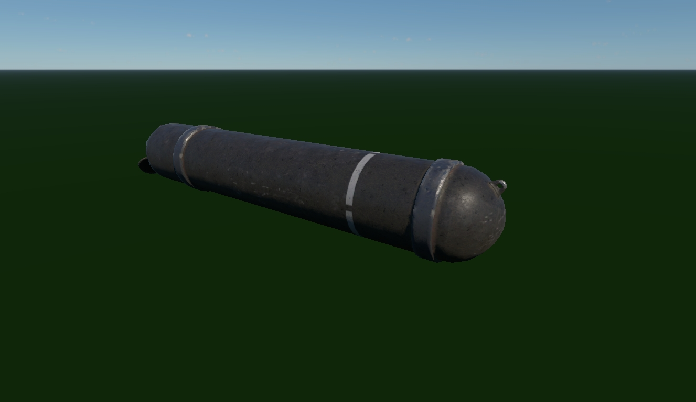 – 1.101.0.12 / 2020-08-22
- JPN:
- Type 88 Mod. 1 – 1.101.0.12 / 2020-08-22
- ITA:
- Vickers-Elia 145/1925 – 1.101.0.12 / 2020-08-22
Torpedoes
- USA:
- 533 mm Mk. 8 Mod. 3A (text only) – <1.97.0.44 / <2020-03-11
- 533 mm Mk. 9 (model only) – <2.5.1.134 / <2021-05-16
- 533 mm Mk. 35 (model only) – 2.42.0.20 / 2024-12-10
- DEU:
- 450 mm C45/91 Br – 2.2.0.11 / 2020-12-12
- 500 mm G 6d (model only) – 2.18.0.13 / 2022-09-02
- 533 mm G 7a (T I Lut I) (text only) – 2.31.1.7 / 2023-11-03
- 533 mm G 7a (T I Lut II) (text only) – 2.31.1.7 / 2023-11-03
- 533 mm G 7e (T II) – 2.31.1.7 / 2023-11-03
- 533 mm G 7e (T IIIa) – <1.95.0.125 / <2020-02-18
- USSR:
- 400 mm SET-72 (model, currently it uses the model of the SET-40) – <2.5.1.134 / <2021-05-16
- 533 mm 53-39PM (model only)
 – <2.5.1.134 / <2021-05-16
– <2.5.1.134 / <2021-05-16 - GBR:
- 533 mm Mk. I (long) (model, currently it uses the model of the Mk. VIII**) – <2.5.1.134 / <2021-05-16
- 533 mm Mk. II (model only) – 2.6.0.18 / 2021-05-22
- 533 mm Mk. IX** – 2.12.0.14 / 2021-12-03
- JPN:
- 533 mm Type 89 – <1.95.0.125 / <2020-02-18
- 533 mm 6th Year Type (model, currently it uses the model of the Type 44 No. 2) – <2.5.1.134 / <2021-05-16
- ITA:
- 324 mm A224 – 2.16.0.19 / 2022-05-27
- 533 mm S.I. 250 (model, currently it uses the model of the S.I. 270) – <2.5.1.134 / <2021-05-16
- FRA:
- 450 mm mle. 1918 (model only) – 2.26.0.19 / 2023-05-19
- SWE:
- 450 mm m/36 – <1.95.0.125 / <2020-02-18
Shell / missile text entries of unspecified weapons
- 20 mm M246A1 HEI-T – <1.97.0.44 / <2020-03-11
- 20 mm M599 HEI-T – <1.97.0.44 / <2020-03-11
- 20 mm M601 API-T – <1.97.0.44 / <2020-03-11
- 20 mm Mk. 149 APDS – <1.97.0.44 / <2020-03-11
- 25 mm Type 96 APT – <1.97.0.44 / <2020-03-11
- 30 mm M928 APFSDS – 2.10.0.14 / 2021-10-15
- 40 mm slsgr m/484 – 2.35.1.56 / 2024-04-22
- 57 mm Type 59 APCBC – 2.24.0.20 / 2023-02-25
- 57 mm BR-281 APCBC – <1.97.0.44 / <2020-03-11
- 90 mm M332A1 APCR – <1.97.0.44 / <2020-03-11
- 105 mm OFL 105 F2 APFSDS – 2.36.0.19 / 2024-06-04
- 105 mm slpprj m/62 APDS (old shell of the strv 103) – <1.97.0.44 / <2020-03-11
- 120 mm T20E3 AP – <1.97.0.44 / <2020-03-11
- 120 mm Type 88 HE – <1.97.0.44 / <2020-03-11
- 152 mm DDB1/PL66-152 HE-VTF – 2.36.0.16 / 2024-05-31
- 203 mm Type 91 Common HE – <1.97.0.44 / <2020-03-11
- MIM-72A SAM – 2.29.0.106 / 2023-10-17
- RB 56 BILL I ATGM – 1.98.0.32 / 2020-05-16
- Spike MR ATGM – 2.26.0.34 / 2023-05-30
Modifications
- Aircraft modifications:
- 100 octane fuel – P-40 – <1.95.0.125 / <2020-02-18
- Engine throttle
 – gives 25% more throttle, 5.26% higher max compressor pressure, and 25% higher WEP – <1.95.0.125 / <2020-02-18
– gives 25% more throttle, 5.26% higher max compressor pressure, and 25% higher WEP – <1.95.0.125 / <2020-02-18 - Power steering – gives 15% boost to ailerons, rudder, and elevator – <1.95.0.125 / <2020-02-18
- RWR
 – 1.97.0.30 / 2020-03-03
– 1.97.0.30 / 2020-03-03 - Varnish – "Varnish of wooden surface to reduce air drag." (text only) – <1.97.0.44 / <2020-03-11
- Belt and gun modifications:
- Modifications of some of the unused belts listed above
- 23 mm GSh-23L belts – Il-28Sh – 2.7.0.53 / 2021-06-16
- 2x 15 mm M.G. 151 – Do 335 A-0 – <1.95.0.125 / <2020-02-18
- Yak-3P – 2x 20 mm B-20S + 1x 20 mm B-20M – Yak-3 (became a separate vehicle instead) – <1.95.0.125 / <2020-02-18
- U2 – 2x 20 mm M.G. 151 – Me 410 (became separate vehicles instead) – <1.95.0.125 / <2020-02-18
- 1x 37 mm M4 + 2x 12.7 mm AN/M2 – A-26B-15 – <1.95.0.125 / <2020-02-18
- 45 mm NS-45 – Yak-9P (text only) – <1.97.0.44 / <2020-03-11
- U4 – 1x 50 mm B.K. 5 – Me 410 (became separate vehicles instead) – <1.95.0.125 / <2020-02-18
- Bomb modifications:
- 9-inch (Mod. 35) – 60 kg Type 97 Mod. 6 – <1.95.0.125 / <2020-02-18
- 12-inch (Mod. 35) – 500 kg Type 92 – Ki 49 (and the 14-inch (Mod. 35) would be for the 800 kg bombs) – <1.95.0.125 / <2020-02-18
- 14-inch (Mod. 35) – 500 kg No. 50 Mk. 2 – N1K2-Ja – <1.95.0.125 / <2020-02-18
- 250 lbs x2 (text only) – 2.35.1.56 / 2024-04-22
- 500 kg 500-2 – 2.40.0.37 / 2024-10-29
- 500 lbs x2 (text only) – 2.35.1.56 / 2024-04-22
- 500 lbs GBU-12/B + GBU-22/B – 2.42.0.20 / 2024-12-10
- 500 lbs GBU-54/B + Mk. 82 – 2.40.0.42 / 2024-10-31
- 1000 lbs GBU-32/B – 2.44.0.21 / 2025-02-28
- 1000 lbs GBU-55/B – 2.42.0.20 / 2024-12-10
- 1000 lbs GP AN/M44 – 2.14.0.28 / 2022-03-11
- 1500 kg KAB-1500LG – 2.44.0.21 / 2025-02-28
- 2000 lbs GP AN/M34 – 2.14.0.28 / 2022-03-11
- E.H.V.C. 500 + 250 – additional 250 kg S.C. 250 JA – Do 17 – <1.95.0.125 / <2020-02-18
- E.T.C. 50/II d – G.50 AS serie VII – <1.95.0.125 / <2020-02-18
- E.T.C. 50/VIII b – Hs 123 A-1 – <1.95.0.125 / <2020-02-18
- E.T.C. 50/IX b – Bf 109 F-4 – <1.95.0.125 / <2020-02-18
- E.T.C. 504 + E.T.C. 50 (250 kg) – 250 kg S.C. 250 JA + 50 kg S.C. 50 – Fw 190 D-12 – <1.95.0.125 / <2020-02-18
- E.T.C. 504 + E.T.C. 50 (500 kg) – 500 kg S.C. 500 K + 50 kg S.C. 50 – Fw 190 D-12 – <1.95.0.125 / <2020-02-18
- E.T.C. 501 + E.T.C. 50 (500 kg) – 500 kg S.C. 500 K + 50 kg S.C. 50 – Fw 190 F-8 – <1.95.0.125 / <2020-02-18
- E.T.C. 501 + E.T.C. 50 (1000 kg) – 1000 kg S.C. 1000 L2 + 50 kg S.C. 50 – Fw 190 F-8 – <1.95.0.125 / <2020-02-18
- KD-2 – 50 or 100 kg – <1.95.0.125 / <2020-02-18
- LBC-79 – 500 kg – S.M.79 – <1.95.0.125 / <2020-02-18
- MBC-79 – 250 kg – S.M.79 – <1.95.0.125 / <2020-02-18
- MCAP 150 – <1.95.0.125 / <2020-02-18
- R1 – 500 kg S.C. 500 K – Bf 109 G-2 (text only) – <1.97.0.44 / <2020-03-11
- R1 – 500 kg S.C. 500 K – Bf 109 G-6 (text only) – <1.97.0.44 / <2020-03-11
- R1 – 500 kg S.C. 500 K – Bf 109 G-10 (text only) – <1.97.0.44 / <2020-03-11
- S.B.C. / T.S.C. – Bombs + torpedo – Hampden T.B. Mk. I – <1.95.0.125 / <2020-02-18
- Missile modifications:
- AGM-119A – 2.44.0.21 / 2025-02-28
- AIM-9 – AH-1 – <1.95.0.125 / <2020-02-18
- AIM-9 + MAW – AH-1 – <1.95.0.125 / <2020-02-18
- AIM-9B + CM – F-5 – 2.6.0.18 / 2021-05-22
- AIM-9E + CM – F-5 – 2.6.0.18 / 2021-05-22
- AIM-9L/I-1 – 2.43.0.10 / 2024-12-16
- AIM-92 + CM – <1.95.0.125 / <2020-02-18
- AS.11 – <1.95.0.125 / <2020-02-18
- Cirit x2 – T129 (currently the x4 is used for both) – 2.18.0.13 / 2022-09-02
- Flz.Lwf. LB 66 – 2.46.0.16 / 2025-05-30
- PL-11 – 2.14.0.28 / 2022-03-11
- PL-12 – 2.36.0.16 / 2024-05-31
- R-23R/T – MiG-23 – 2.32.0.23 / 2023-12-07
- R-24R/T – MiG-23 – 2.32.0.23 / 2023-12-07
- R-27R/T – MiG-29 – 2.22.0.14 / 2022-12-09
- R-77E – MiG-21 Bison – 2.26.0.16 / 2024-05-31
- RB 52 – 2.14.0.28 / 2022-03-11
- TOW-2 x8 – AH-1 – <1.95.0.125 / <2020-02-18
- Rocket modifications:
- B-8V20 – S-8 rocket pod – Mi-24 – <1.95.0.125 / <2020-02-18
- FZ207 – rocket pod – T129 – 2.18.0.13 / 2022-09-02
- HF-18 – 57 mm rocket pod – 2.14.0.28 / 2022-03-11
- HF-25 – 70 mm rocket pod – 2.17.0.8 / 2022-06-15
- HF-25B – 70 mm rocket pod – 2.18.0.13 / 2022-09-02
- HF-27 – 57 mm rocket pod – 2.18.0.13 / 2022-09-02
- H.R.C. Mk. IX – AP Mk. II / RP-3 rockets (text only) – <1.97.0.44 / <2020-03-11
- LAU-51/A – 2.75-inch FFAR rocket pod – 1.98.0.40 / 2020-05-21
- m/70d – rocket pod – 2.8.0.19 / 2021-08-28
- S-5 / S-8 – 2.15.0.3 / 2022-03-23
- UB-16-57 – S-5 rocket pod – Mi-24 – <1.95.0.125 / <2020-02-18
- Torpedo modifications:
- S.B.C. / T.S.C. – Bombs + torpedo – Hampden T.B. Mk. I – <1.95.0.125 / <2020-02-18
- TBC-B – Blenheim Mk. IV (text only) – <1.97.0.44 / <2020-03-11
- TD-44 – Tu-2 (text only) – <1.97.0.44 / <2020-03-11
- Equipment modifications:
- AN/ASQ-228 – 2.44.0.21 / 2025-02-28
- Ground vehicle modifications:
- Modifications of some of the unused belts and shells listed above
- Camouflage (abandoned modification from around CBT or earlier, became bushes instead) – <1.95.0.125 / <2020-02-18
- Track Grousers – same effects as Ostketten or Winterketten, without appearance changes – 2.11.0.9 / 2021-10-27
- LWS (standalone) – all currently used LWS mods are coupled with the laser rangefinder – 1.101.0.12 / 2020-08-22
- 105 mm le.F.H. 18 Artillery Support – currently every tank uses 122 mm M-30 support (if they have the modification) – <1.95.0.125 / <2020-02-18
- 150 mm s.F.H. 18 Artillery Support – currently every tank uses 122 mm M-30 support (if they have the modification) – <1.95.0.125 / <2020-02-18
- 152 mm D-1 Artillery Support – currently every tank uses 122 mm M-30 support (if they have the modification) – <1.95.0.125 / <2020-02-18
- Mine plow – T-90S Bhishma – 2.28.0.24 / 2023-09-05
- RB 56 B BILL II – 1.98.0.32 / 2020-05-16
- Naval vehicle modifications:
- Modifications of some of the unused belts and shells listed above
- Acoustic Countermeasures
 – 8x 1 sec "smoke" with 30 sec cooldown – <1.95.0.125 / <2020-02-18
– 8x 1 sec "smoke" with 30 sec cooldown – <1.95.0.125 / <2020-02-18 - Additional Armour
 – same idea as the add-on armour modification of tanks – <1.95.0.125 / <2020-02-18
– same idea as the add-on armour modification of tanks – <1.95.0.125 / <2020-02-18 - Gun Liner Replacement
 – very unfinished, gives 85% less horizontal and vertical speeds – <1.95.0.125 / <2020-02-18
– very unfinished, gives 85% less horizontal and vertical speeds – <1.95.0.125 / <2020-02-18 - Sonar
 – gives a sonar with 5 km detection radius, 100 m detection depth, and a 5 sec interval – 2.29.0.17 / 2023-09-18
– gives a sonar with 5 km detection radius, 100 m detection depth, and a 5 sec interval – 2.29.0.17 / 2023-09-18 - 9M36 – 2.26.0.19 / 2023-05-19
- 381 mm Mk. XVIIb or XXIIb (6crh) APC – 2.36.0.16 / 2024-05-31
Sensors
- Air and ground radars:
- AI Mk. 24 Foxhunter Type W – 2.24.0.20 / 2023-02-25
- AI Mk. 24 Foxhunter Type Z – 2.26.0.19 / 2023-05-19
- AN/APG-68(V)9 – 2.28.0.21 / 2023-09-01
- AN/APQ-72 – <1.95.0.125 / <2020-02-18
- AN/APQ-83 (text only) – 2.12.0.14 / 2021-12-03
- ARI 23264/1 (text only) – 2.24.0.20 / 2023-02-25
- CD-30 – <1.95.0.125 / <2020-02-18
- ELTA EL/M-2032 – 2.43.0.10 / 2024-12-16
- J/APG-1 – 2.46.0.16 / 2025-05-30
- MA-1 – 2.46.0.16 / 2025-05-30
- PS-371/A – 2.26.0.19 / 2023-05-19
- RP-1 – 2.16.0.32 / 2022-06-06
- TOR-M1 (text only) – 2.21.0.10 / 2022-10-26
- Type 208 – 2.14.0.28 / 2022-03-11
- LWS':
- AN/AVS-2 – 2.16.0.19 / 2022-05-27
- RALM01 – 1.98.0.32 / 2020-05-16
- MLWS':
- DDM 2000 – 2.36.0.26 / 2024-06-11
- RWRs:
- AN/ALR-45 – 2.30.0.15 / 2023-10-20
- AN/ALR-49 (text only) – 2.22.0.14 / 2022-12-09
- AN/APR-32 – 2.22.0.14 / 2022-12-09
- AN/APS-54A – 2.29.0.46 / 2023-09-23
- ARI 18228/19 – 2.36.0.20 / 2024-06-05
- L-006M SPO-15M Beryoza-M – 2.38.0.17 / 2024-09-02
- RW30 – 2.30.0.15 / 2023-10-20
- Satellite-M2 – 2.36.0.16 / 2024-05-31
- Sky Guardian 200 – 2.34.0.19 / 2024-03-01
- Vinten – 2.40.0.60 / 2024-11-13
- Naval radars:
- FC-1 – 2.28.0.21 / 2023-09-01
- FuMO 26 – 2.36.0.16 / 2024-05-31
- FuMO 27 – 2.36.0.16 / 2024-05-31
- Mk. 3 – 2.28.0.21 / 2023-09-01
- MM/SPG-70 – 1.101.0.12 / 2020-08-22
- SG-6 – 2.28.0.21 / 2023-09-01
- SK-1 – <1.95.0.125 / <2020-02-18
- Type 293 – 2.28.0.21 / 2023-09-01
Engine manufacturer texts
- Maybach – <1.97.0.44 / <2020-03-11
Engine model texts
- 109-003 E (BMW) – <1.97.0.44 / <2020-03-11
- 12Xcrs (Hispano-Suiza) – <1.97.0.44 / <2020-03-11
- 12Z (Hispano-Suiza) – <1.97.0.44 / <2020-03-11
- 14M-4 or 14M-5 (Gnome et Rhône) – <1.97.0.44 / <2020-03-11
- AL-7F-1-200 (Saturn) – 1.101.0.12 / 2020-08-22
- AM-34N (Mikulin) – <1.97.0.44 / <2020-03-11
- Atar 101C (SNECMA) – <1.97.0.44 / <2020-03-11
- Derwent Mk. 2 (Rolls-Royce) – <1.97.0.44 / <2020-03-11
- F402-RR-406 (Rolls-Royce) – 2.40.0.30 / 2024-10-25
- Ha-43-32 (Mitsubishi) – <1.97.0.44 / <2020-03-11
- HL 230 P30 (Maybach) – <1.97.0.44 / <2020-03-11
- Homare Mod. 21 (Nakajima) – <1.97.0.44 / <2020-03-11
- J42-P-5 (Pratt & Whitney) – <1.97.0.44 / <2020-03-11
- J42-P-8A (Pratt & Whitney) – <1.97.0.44 / <2020-03-11
- J57-P-7 (Pratt & Whitney) – 1.98.0.32 / 2020-05-16
- J65-W-3 (Wright) – 2.2.0.11 / 2020-12-12
- J79-GE-3 (General Electric) – 1.98.0.32 / 2020-05-16
- J79-GE-7 (General Electric) – 1.98.0.32 / 2020-05-16
- K.14 (I.A.R.) – <1.97.0.44 / <2020-03-11
- Kestrel (Rolls-Royce) – <1.97.0.44 / <2020-03-11
- M-71F (Shvetsov) – <1.97.0.44 / <2020-03-11
- M-86 (Tumansky) – <1.97.0.44 / <2020-03-11
- M-87A (Tumansky) – <1.97.0.44 / <2020-03-11
- M-100 (Klimov) – 2.38.0.18 / 2024-09-03
- Mamoru Mod. 12 (Nakajima) – <1.97.0.44 / <2020-03-11
- MB 838 CaM 500 (MTU) – 2.32.0.23 / 2023-12-07
- R-2600-22 (Wright) – <1.97.0.44 / <2020-03-11
- R-2800-10 (Pratt & Whitney) – 2.38.0.15 / 2024-08-30
- R-2800-34 (Pratt & Whitney) – <1.97.0.44 / <2020-03-11
- R-2800-75 (Pratt & Whitney) – 2.36.0.18 / 2024-06-03
- R-3350 (Wright) – <1.97.0.44 / <2020-03-11
- RB199-34R Mk. 105 (Turbo-Union) – 2.23.0.8 / 2022-12-20
- Sapphire Mk. 205 (Armstrong Siddeley) – <1.97.0.44 / <2020-03-11
- Sapphire Mk. 206 (Armstrong Siddeley) – <1.97.0.44 / <2020-03-11
- Spey Mk. 202 (Rolls-Royce) – <1.97.0.44 / <2020-03-11
- TF-30-P-103 (Pratt & Whitney) – 2.38.0.18 / 2024-09-03
- TF34-GE-100 (General Electric) – 2.14.0.28 / 2022-03-11
- Type 99 – <1.97.0.44 / <2020-03-11
- Viper Mk. 633-41 (Rolls-Royce) – 2.41.0.11 / 2024-11-19
- WP7F (Shěnyáng Liming) – 2.6.0.18 / 2021-05-22
Decorations
- BSA Bicycle (unfolded) (model only)
 – 2.7.0.160 / 2021-07-30
– 2.7.0.160 / 2021-07-30 - Haloxylon
 – <1.95.0.125 / <2020-02-18
– <1.95.0.125 / <2020-02-18 - Haloxylon (long)
 – <1.95.0.125 / <2020-02-18
– <1.95.0.125 / <2020-02-18 - Mickey Mouse Ear
 – <1.95.0.125 / <2020-02-18
– <1.95.0.125 / <2020-02-18 - Pirate Flag (model only)
 – <2.5.1.134 / <2021-05-16
– <2.5.1.134 / <2021-05-16 - "Run, you fools!" sign
 – <1.95.0.125 / <2020-02-18
– <1.95.0.125 / <2020-02-18 - Spare Wheel
 – <1.95.0.125 / <2020-02-18
– <1.95.0.125 / <2020-02-18 - Trinket – 2.10.0.14 / 2021-10-15
Icons and images
- Statcard country flags (old format, small icons):
- Bulgaria (1879-1946, 1990-present)
 – <1.97.1.53 / <2020-04-14
– <1.97.1.53 / <2020-04-14 - Greece (1863–1924, 1935–1973)
 – <1.97.1.53 / <2020-04-14
– <1.97.1.53 / <2020-04-14 - Iraq (1924-1959)
 – <1.97.1.53 / <2020-04-14
– <1.97.1.53 / <2020-04-14 - Iraq (1963-1991)
 – 2.40.0.47 / 2024-11-04
– 2.40.0.47 / 2024-11-04 - Ukraine (1991-present)
 – <1.97.1.53 / <2020-04-14
– <1.97.1.53 / <2020-04-14 - Yugoslavia (1943-1946, unless it's a censored version)
 – <1.97.1.53 / <2020-04-14
– <1.97.1.53 / <2020-04-14 - Statcard country flags (large images for the new statcards):
- Bulgaria (1879-1946, 1990-present)
 – 2.29.0.22 / 2023-09-19
– 2.29.0.22 / 2023-09-19 - Iraq (1924-1959)
 – 2.29.0.22 / 2023-09-19
– 2.29.0.22 / 2023-09-19 - Iraq (1963-1991)
 – 2.40.0.47 / 2024-11-04
– 2.40.0.47 / 2024-11-04 - Ukraine (1991-present)
 – 2.29.0.22 / 2023-09-19
– 2.29.0.22 / 2023-09-19 - Yugoslavia (1943-1946, unless it's a censored version)
 – 2.29.0.22 / 2023-09-19
– 2.29.0.22 / 2023-09-19 - Avatars:
- Generic avatar #29
 – <1.97.0.47 / <2020-03-12
– <1.97.0.47 / <2020-03-12 - USSR tanker avatar #5
 – <1.97.0.47 / <2020-03-12
– <1.97.0.47 / <2020-03-12 - Battle UI icons:
- AAA Support
 – <1.97.1.53 / <2020-04-14
– <1.97.1.53 / <2020-04-14 - Acoustic Countermeasure
 – <1.97.1.53 / <2020-04-14
– <1.97.1.53 / <2020-04-14 - Capture zone G
 – 1.101.0.12 / 2020-08-22
– 1.101.0.12 / 2020-08-22 - Capture zone H
 – 1.101.0.12 / 2020-08-22
– 1.101.0.12 / 2020-08-22 - Capture zone I
 – 1.101.0.12 / 2020-08-22
– 1.101.0.12 / 2020-08-22 - Capture zone J
 – 1.101.0.12 / 2020-08-22
– 1.101.0.12 / 2020-08-22 - Capture zone K
 – 1.101.0.12 / 2020-08-22
– 1.101.0.12 / 2020-08-22 - Capture zone L
 – 1.101.0.12 / 2020-08-22
– 1.101.0.12 / 2020-08-22 - Capture zone M
 – 1.101.0.12 / 2020-08-22
– 1.101.0.12 / 2020-08-22 - Capture zone N
 – 1.101.0.12 / 2020-08-22
– 1.101.0.12 / 2020-08-22 - Capture zone O
 – 1.101.0.12 / 2020-08-22
– 1.101.0.12 / 2020-08-22 - Capture zone P
 – 1.101.0.12 / 2020-08-22
– 1.101.0.12 / 2020-08-22 - Heli ATGM
 – <1.97.1.53 / <2020-04-14
– <1.97.1.53 / <2020-04-14 - 82 mm mortar
 – <1.97.1.53 / <2020-04-14
– <1.97.1.53 / <2020-04-14 - Loadout icons:
- Bombs:
- Normal dumb bombs:
- FAB-500-M54 x3 (brown)
 – 2.23.0.8 / 2022-12-20
– 2.23.0.8 / 2022-12-20 - FAB-500-M54 x4 (brown)
 – 2.23.0.8 / 2022-12-20
– 2.23.0.8 / 2022-12-20 - Small bombs 4x underneath a fuel tank
 – 2.18.0.13 / 2022-09-02
– 2.18.0.13 / 2022-09-02 - Large bombs 4x underneath a fuel tank
 – 2.18.0.13 / 2022-09-02
– 2.18.0.13 / 2022-09-02 - Large bombs x5
 – 2.14.0.35 / 2022-03-18
– 2.14.0.35 / 2022-03-18 - Heavy-medium bombs x3
 – 2.40.0.30 / 2024-10-25
– 2.40.0.30 / 2024-10-25 - Heavy-medium bombs x4
 – 2.40.0.30 / 2024-10-25
– 2.40.0.30 / 2024-10-25 - Heavy-medium bombs x5
 – 2.40.0.30 / 2024-10-25
– 2.40.0.30 / 2024-10-25 - Heavy-medium bombs x6
 – 2.40.0.30 / 2024-10-25
– 2.40.0.30 / 2024-10-25 - Heavy bombs x4
 – 2.8.0.19 / 2021-08-28
– 2.8.0.19 / 2021-08-28 - High-drag bombs:
- Small high-drag bombs x8
 – 2.26.0.19 / 2023-05-19
– 2.26.0.19 / 2023-05-19 - Heavy-medium high-drag bombs x2
 – 2.40.0.58 / 2024-10-31
– 2.40.0.58 / 2024-10-31 - Large high-drag bombs x5 #1
 – 2.26.0.19 / 2023-05-19
– 2.26.0.19 / 2023-05-19 - Large high-drag bombs x5 #2
 – 2.26.0.19 / 2023-05-19
– 2.26.0.19 / 2023-05-19 - Large high-drag bombs x6
 – 2.26.0.19 / 2023-05-19
– 2.26.0.19 / 2023-05-19 - Fire bombs:
- Small fire bombs x3
 – 2.21.1.89 / 2022-12-09
– 2.21.1.89 / 2022-12-09 - Small fire bombs x5
 – 2.40.0.30 / 2024-10-25
– 2.40.0.30 / 2024-10-25 - Small fire bombs x6
 – 2.40.0.30 / 2024-10-25
– 2.40.0.30 / 2024-10-25 - Medium fire bombs x5
 – 2.40.0.30 / 2024-10-25
– 2.40.0.30 / 2024-10-25 - Large fire bomb with countermeasures and MAWS
 – 2.36.0.16 / 2024-05-31
– 2.36.0.16 / 2024-05-31 - Large fire bombs x2 with countermeasures
 – 2.36.0.16 / 2024-05-31
– 2.36.0.16 / 2024-05-31 - Large fire bombs x4
 – 2.38.0.15 / 2024-08-30
– 2.38.0.15 / 2024-08-30 - Large fire bombs x5
 – 2.40.0.30 / 2024-10-25
– 2.40.0.30 / 2024-10-25 - Large fire bombs x6
 – 2.40.0.30 / 2024-10-25
– 2.40.0.30 / 2024-10-25 - Heavy fire bombs x2
 – 2.21.1.89 / 2022-12-09
– 2.21.1.89 / 2022-12-09 - Heavy fire bombs x3
 – 2.21.1.89 / 2022-12-09
– 2.21.1.89 / 2022-12-09 - Heavy fire bombs x4
 – 2.38.0.15 / 2024-08-30
– 2.38.0.15 / 2024-08-30 - Heavy fire bombs x5
 – 2.40.0.30 / 2024-10-25
– 2.40.0.30 / 2024-10-25 - Heavy fire bombs x6
 – 2.40.0.30 / 2024-10-25
– 2.40.0.30 / 2024-10-25 - Laser-guided bombs:
- Small laser-guided bomb x2 with countermeasures
 – 2.36.0.16 / 2024-05-31
– 2.36.0.16 / 2024-05-31 - Special laser-guided bomb with countermeasures
 – 2.36.0.16 / 2024-05-31
– 2.36.0.16 / 2024-05-31 - TV-guided bombs:
- TV-guided bomb with countermeasures and MAWS
 – 2.36.0.16 / 2024-05-31
– 2.36.0.16 / 2024-05-31 - JDAM bombs:
- Small JDAM bombs x2
 – 2.39.0.8 / 2024-09-10
– 2.39.0.8 / 2024-09-10 - Medium JDAM bombs x3 with countermeasures
 – 2.39.0.8 / 2024-09-10
– 2.39.0.8 / 2024-09-10 - Medium JDAM bombs x4
 – 2.40.0.30 / 2024-10-25
– 2.40.0.30 / 2024-10-25 - Medium JDAM bombs x4 underneath a fuel tank
 – 2.40.0.30 / 2024-10-25
– 2.40.0.30 / 2024-10-25 - Medium JDAM bombs x6
 – 2.40.0.37 / 2024-10-29
– 2.40.0.37 / 2024-10-29 - Medium JDAM bombs x6 underneath a fuel tank
 – 2.40.0.37 / 2024-10-29
– 2.40.0.37 / 2024-10-29 - Large JDAM bomb with countermeasures
 – 2.39.0.8 / 2024-09-10
– 2.39.0.8 / 2024-09-10 - Large JDAM bombs x2
 – 2.39.0.8 / 2024-09-10
– 2.39.0.8 / 2024-09-10 - Large JDAM bombs x2 underneath a fuel tank
 – 2.40.0.30 / 2024-10-25
– 2.40.0.30 / 2024-10-25 - Large JDAM bombs x2 with countermeasures
 – 2.39.0.8 / 2024-09-10
– 2.39.0.8 / 2024-09-10 - Heavy-medium JDAM bombs x2 with countermeasures
 – 2.39.0.8 / 2024-09-10
– 2.39.0.8 / 2024-09-10 - Heavy JDAM bomb
 – 2.10.0.20 / 2021-10-20
– 2.10.0.20 / 2021-10-20 - Heavy JDAM bombs x2
 – 2.39.0.8 / 2024-09-10
– 2.39.0.8 / 2024-09-10 - Heavy JDAM bombs x2 with countermeasures
 – 2.39.0.8 / 2024-09-10
– 2.39.0.8 / 2024-09-10 - "Special" JDAM bomb
 – 2.10.0.20 / 2021-10-20
– 2.10.0.20 / 2021-10-20 - "Special" JDAM bomb with countermeasures
 – 2.39.0.8 / 2024-09-10
– 2.39.0.8 / 2024-09-10 - "Special" JDAM bombs x2
 – 2.39.0.8 / 2024-09-10
– 2.39.0.8 / 2024-09-10 - "Special" JDAM bombs x2 with countermeasures
 – 2.39.0.8 / 2024-09-10
– 2.39.0.8 / 2024-09-10 - LJDAM bombs:
- Medium LJDAM bomb
 – 2.46.0.43 / 2025-06-16
– 2.46.0.43 / 2025-06-16 - Glide bombs:
- Small glide bomb
 – 2.38.0.21 / 2024-09-05
– 2.38.0.21 / 2024-09-05 - Heavy glide bomb
 – 2.38.0.21 / 2024-09-05
– 2.38.0.21 / 2024-09-05 - TV-guided glide bombs:
- Kh-59 (green)
 – 2.44.0.41 / 2025-03-12
– 2.44.0.41 / 2025-03-12 - Kh-59 (red)
 – 2.44.0.41 / 2025-03-12
– 2.44.0.41 / 2025-03-12 - JDAM glide bombs:
- Small JDAM glide bomb
 – 2.40.0.30 / 2024-10-25
– 2.40.0.30 / 2024-10-25 - Small JDAM glide bombs x4 with countermeasures
 – 2.40.0.53 / 2024-11-07
– 2.40.0.53 / 2024-11-07 - Small JDAM glide bombs x6
 – 2.40.0.30 / 2024-10-25
– 2.40.0.30 / 2024-10-25 - Medium JDAM glide bomb with countermeasures and MAWS
 – 2.47.0.9 / 2025-06-25
– 2.47.0.9 / 2025-06-25 - Medium JDAM glide bombs x2 with countermeasures
 – 2.47.0.9 / 2025-06-25
– 2.47.0.9 / 2025-06-25 - Medium JDAM glide bombs x3
 – 2.47.0.9 / 2025-06-25
– 2.47.0.9 / 2025-06-25 - Medium JDAM glide bombs x3 with countermeasures
 – 2.47.0.9 / 2025-06-25
– 2.47.0.9 / 2025-06-25 - Medium JDAM glide bombs x3 with countermeasures and MAWS
 – 2.47.0.9 / 2025-06-25
– 2.47.0.9 / 2025-06-25 - Medium JDAM glide bombs x4
 – 2.47.0.9 / 2025-06-25
– 2.47.0.9 / 2025-06-25 - Heavy-medium JDAM glide bomb with countermeasures and MAWS
 – 2.47.0.9 / 2025-06-25
– 2.47.0.9 / 2025-06-25 - Heavy-medium JDAM glide bombs x2 with countermeasures
 – 2.47.0.9 / 2025-06-25
– 2.47.0.9 / 2025-06-25 - Heavy-medium JDAM glide bombs x2 with countermeasures and MAWS
 – 2.47.0.9 / 2025-06-25
– 2.47.0.9 / 2025-06-25 - LJDAM glide bombs:
- Medium LJDAM glide bomb with countermeasures
 – 2.47.0.9 / 2025-06-25
– 2.47.0.9 / 2025-06-25 - Medium LJDAM glide bomb with countermeasures and MAWS
 – 2.47.0.9 / 2025-06-25
– 2.47.0.9 / 2025-06-25 - Medium LJDAM glide bombs x2 underneath a fuel tank
 – 2.47.0.9 / 2025-06-25
– 2.47.0.9 / 2025-06-25 - Medium LJDAM glide bombs x2 with countermeasures
 – 2.47.0.9 / 2025-06-25
– 2.47.0.9 / 2025-06-25
- Medium LJDAM glide bombs x2 with countermeasures and MAWS
 – 2.47.0.9 / 2025-06-25
– 2.47.0.9 / 2025-06-25
- Medium LJDAM glide bombs x3
 – 2.47.0.9 / 2025-06-25
– 2.47.0.9 / 2025-06-25
- Medium LJDAM glide bombs x3 with countermeasures
 – 2.47.0.9 / 2025-06-25
– 2.47.0.9 / 2025-06-25
- Medium LJDAM glide bombs x3 with countermeasures and MAWS
 – 2.47.0.9 / 2025-06-25
– 2.47.0.9 / 2025-06-25
- Medium LJDAM glide bombs x4
 – 2.47.0.9 / 2025-06-25
– 2.47.0.9 / 2025-06-25
- Mines:
- Air mines x3
 – 1.101.0.12 / 2020-08-22
– 1.101.0.12 / 2020-08-22 - Missiles:
- Air-to-air missiles:
- AAMs x4 (yellow)
 – 2.5.1.89 / 2021-04-21
– 2.5.1.89 / 2021-04-21 - Large IR AAMs x2 (yellow)
 – 2.16.0.29 / 2022-06-03
– 2.16.0.29 / 2022-06-03 - Midrange AAM with countermeasures (blue)
 – 2.46.0.43 / 2025-06-16
– 2.46.0.43 / 2025-06-16 - Midrange AAMs x2 with countermeasures (blue)
 – 2.46.0.43 / 2025-06-16
– 2.46.0.43 / 2025-06-16 - Midrange AAMs x2 (yellow)
 – 2.37.0.111 / 2024-08-05
– 2.37.0.111 / 2024-08-05 - Midrange AAMs x4 (green)
 – 2.36.0.16 / 2024-05-31
– 2.36.0.16 / 2024-05-31 - Air-to-ground / air-to-surface missiles:
- ASM x2
 – 2.46.0.36 / 2025-06-16
– 2.46.0.36 / 2025-06-16 - ASM x2
 – 2.5.1.36 / 2021-04-01
– 2.5.1.36 / 2021-04-01 - ASM x3
 – 2.5.1.36 / 2021-04-01
– 2.5.1.36 / 2021-04-01 - ASM x4
 – 2.5.1.36 / 2021-04-01
– 2.5.1.36 / 2021-04-01 - "Hellfire-type" ATGMs x2 (grey) (updated appearance)
 – 2.25.0.8 / 2023-03-07
– 2.25.0.8 / 2023-03-07 - "Hellfire-type" ATGMs x2 (red)
 – 2.19.0.13 / 2022-09-14
– 2.19.0.13 / 2022-09-14 - "Hellfire-type" ATGMs x4 (grey) (updated appearance)
 – 2.25.0.8 / 2023-03-07
– 2.25.0.8 / 2023-03-07 - Small ATGMs x4
 – 1.98.0.43 / 2020-05-22
– 1.98.0.43 / 2020-05-22 - Medium ATGMs x4
 – 2.11.0.14 / 2021-10-28
– 2.11.0.14 / 2021-10-28 - Large ATGMs x3
 – 2.14.0.35 / 2022-03-18
– 2.14.0.35 / 2022-03-18 - Spike ER ATGMs x2
 – 2.30.0.15 / 2023-10-20
– 2.30.0.15 / 2023-10-20 - Spike ER ATGMs x4
 – 2.30.0.15 / 2023-10-20
– 2.30.0.15 / 2023-10-20 - Medium glide missile
 – 2.40.0.37 / 2024-10-29
– 2.40.0.37 / 2024-10-29 - Kh-59 (green)
 – 2.44.0.41 / 2025-03-12
– 2.44.0.41 / 2025-03-12 - Kh-59 (red)
 – 2.44.0.41 / 2025-03-12
– 2.44.0.41 / 2025-03-12 - Other:
- ASE pod ("бко")
 – 2.11.0.49 / 2021-11-09
– 2.11.0.49 / 2021-11-09 - RJAM pod ("реб")
 – 1.98.0.43 / 2020-05-22
– 1.98.0.43 / 2020-05-22 - Rockets:
- Rockets:
- Small rockets (green) x4
 – 1.98.0.43 / 2020-05-22
– 1.98.0.43 / 2020-05-22 - Small rockets (black) x5
 – 2.21.1.89 / 2022-12-09
– 2.21.1.89 / 2022-12-09 - Small rockets (yellow) x5
 – 2.21.1.89 / 2022-12-09
– 2.21.1.89 / 2022-12-09 - Medium rocket (white)
 – 1.98.0.43 / 2020-05-22
– 1.98.0.43 / 2020-05-22 - Medium rockets (white) x3
 – 1.98.0.43 / 2020-05-22
– 1.98.0.43 / 2020-05-22 - Large rockets (blue) x2
 – 1.98.0.43 / 2020-05-22
– 1.98.0.43 / 2020-05-22 - 5x rocket pods:
- 5x rocket pod (green) x3
 – 2.40.0.30 / 2024-10-25
– 2.40.0.30 / 2024-10-25 - 5x rocket pod (green) x3
 – 2.40.0.30 / 2024-10-25
– 2.40.0.30 / 2024-10-25 - 5x rocket pod (green) x3
 – 2.40.0.30 / 2024-10-25
– 2.40.0.30 / 2024-10-25 - 5x rocket pod (silver) x2
 – 1.98.0.43 / 2020-05-22
– 1.98.0.43 / 2020-05-22 - 5x rocket pod (silver) x3
 – 2.14.0.39 / 2022-03-03
– 2.14.0.39 / 2022-03-03 - 5x rocket pod (yellow) x3
 – 2.14.0.39 / 2022-03-03
– 2.14.0.39 / 2022-03-03 - 7x rocket pods:
- 7x rocket pod (black) (updated appearance)
 – 2.25.0.8 / 2023-03-07
– 2.25.0.8 / 2023-03-07 - 7x rocket pod (green) (updated appearance)
 – 2.25.0.8 / 2023-03-07
– 2.25.0.8 / 2023-03-07 - 7x rocket pod (green) x2
 – 1.98.0.43 / 2020-05-22
– 1.98.0.43 / 2020-05-22 - 7x rocket pod (yellow) (updated appearance)
 – 2.25.0.8 / 2023-03-07
– 2.25.0.8 / 2023-03-07 - 7x rocket pod (yellow) x2
 – 1.98.0.43 / 2020-05-22
– 1.98.0.43 / 2020-05-22 - 9x rocket pods:
- 9x rocket pod (black) x3
 – 2.14.0.39 / 2022-03-03
– 2.14.0.39 / 2022-03-03 - 9x rocket pod (brass)
 – 1.98.0.43 / 2020-05-22
– 1.98.0.43 / 2020-05-22 - 9x rocket pod (brass) x2
 – 1.98.0.43 / 2020-05-22
– 1.98.0.43 / 2020-05-22 - 9x rocket pod (brass) x3
 – 2.14.0.39 / 2022-03-03
– 2.14.0.39 / 2022-03-03 - 9x rocket pod (yellow) x2
 – 1.98.0.43 / 2020-05-22
– 1.98.0.43 / 2020-05-22 - 9x rocket pod (yellow) x3
 – 2.14.0.39 / 2022-03-03
– 2.14.0.39 / 2022-03-03 - 12x rocket pods:
- 12x rocket pod (black)
 – 2.18.0.13 / 2022-09-02
– 2.18.0.13 / 2022-09-02 - 12x rocket pod (black) x2
 – 2.18.0.13 / 2022-09-02
– 2.18.0.13 / 2022-09-02 - 12x rocket pod (grey)
 – 2.18.0.13 / 2022-09-02
– 2.18.0.13 / 2022-09-02 - 12x rocket pod (grey) x2
 – 2.18.0.13 / 2022-09-02
– 2.18.0.13 / 2022-09-02 - 12x rocket pod (yellow)
 – 1.98.0.43 / 2020-05-22
– 1.98.0.43 / 2020-05-22 - 19x rocket pods:
- 19x rocket pod (black) (updated appearance)
 – 2.25.0.8 / 2023-03-07
– 2.25.0.8 / 2023-03-07 - 19x rocket pod (green)
 – 2.40.0.30 / 2024-10-25
– 2.40.0.30 / 2024-10-25 - 19x rocket pod (green) x2
 – 2.40.0.30 / 2024-10-25
– 2.40.0.30 / 2024-10-25 - 19x rocket pod (green) x3
 – 2.40.0.30 / 2024-10-25
– 2.40.0.30 / 2024-10-25 - 19x rocket pod (grey) x3
 – 2.14.0.39 / 2022-03-03
– 2.14.0.39 / 2022-03-03 - 19x rocket pod (yellow) x2
 – 1.98.0.43 / 2020-05-22
– 1.98.0.43 / 2020-05-22 - 19x rocket pod (yellow) x3
 – 2.14.0.39 / 2022-03-03
– 2.14.0.39 / 2022-03-03 - 22x rocket pods:
- 22x rocket pod (yellow)
 – 1.98.0.43 / 2020-05-22
– 1.98.0.43 / 2020-05-22 - Loadout or modification icons:
- AAM + AGM
 – <1.97.1.53 / <2020-04-14
– <1.97.1.53 / <2020-04-14 - AAM + bomb
 – <1.97.1.53 / <2020-04-14
– <1.97.1.53 / <2020-04-14 - AAM + cannon
 – <1.97.1.53 / <2020-04-14
– <1.97.1.53 / <2020-04-14 - AAM + rocket
 – <1.97.1.53 / <2020-04-14
– <1.97.1.53 / <2020-04-14 - Little bomb #1
 – <1.97.1.53 / <2020-04-14
– <1.97.1.53 / <2020-04-14 - Little bomb #2
 – <1.97.1.53 / <2020-04-14
– <1.97.1.53 / <2020-04-14 - Little bomb #1 + little bomb #2
 – <1.97.1.53 / <2020-04-14
– <1.97.1.53 / <2020-04-14 - Medium bomb #1
 – <1.97.1.53 / <2020-04-14
– <1.97.1.53 / <2020-04-14 - Medium bomb #2
 – <1.97.1.53 / <2020-04-14
– <1.97.1.53 / <2020-04-14 - Medium bomb #1 + little bomb #1
 – <1.97.1.53 / <2020-04-14
– <1.97.1.53 / <2020-04-14 - Medium bomb #1 + little bomb #2
 – <1.97.1.53 / <2020-04-14
– <1.97.1.53 / <2020-04-14 - Medium bomb #2 + little bomb #1
 – <1.97.1.53 / <2020-04-14
– <1.97.1.53 / <2020-04-14 - Medium bomb #1 + medium bomb #2
 – <1.97.1.53 / <2020-04-14
– <1.97.1.53 / <2020-04-14 - Big bomb #1
 – <1.97.1.53 / <2020-04-14
– <1.97.1.53 / <2020-04-14 - Big bomb #2
 – <1.97.1.53 / <2020-04-14
– <1.97.1.53 / <2020-04-14 - Big bomb #3
 – <1.97.1.53 / <2020-04-14
– <1.97.1.53 / <2020-04-14 - Big bomb #1 + little bomb #1
 – <1.97.1.53 / <2020-04-14
– <1.97.1.53 / <2020-04-14 - Big bomb #1 + little bomb #2
 – <1.97.1.53 / <2020-04-14
– <1.97.1.53 / <2020-04-14 - Big bomb #1 + medium bomb #1
 – <1.97.1.53 / <2020-04-14
– <1.97.1.53 / <2020-04-14 - Big bomb #1 + medium bomb #2
 – <1.97.1.53 / <2020-04-14
– <1.97.1.53 / <2020-04-14 - Drop tank + cannon
 – 2.35.1.19 / 2024-04-01
– 2.35.1.19 / 2024-04-01 - Heli ATGM + bomb
 – <1.97.1.53 / <2020-04-14
– <1.97.1.53 / <2020-04-14 - Heli ATGM + cannon
 – <1.97.1.53 / <2020-04-14
– <1.97.1.53 / <2020-04-14 - Heli ATGM + rocket
 – <1.97.1.53 / <2020-04-14
– <1.97.1.53 / <2020-04-14 - Hydraulics
 – <1.97.1.53 / <2020-04-14
– <1.97.1.53 / <2020-04-14 - Main rotor blades
 – <1.97.1.53 / <2020-04-14
– <1.97.1.53 / <2020-04-14 - Rocket + bomb
 – <1.97.1.53 / <2020-04-14
– <1.97.1.53 / <2020-04-14 - Rocket + depth charge
 – 2.18.0.13 / 2022-09-02
– 2.18.0.13 / 2022-09-02 - Rocket + torpedo
 – <1.97.1.53 / <2020-04-14
– <1.97.1.53 / <2020-04-14 - AA machine gun
 – <1.97.1.53 / <2020-04-14
– <1.97.1.53 / <2020-04-14 - Radiator
 – <1.97.1.53 / <2020-04-14
– <1.97.1.53 / <2020-04-14 - Tank consumables
 – <1.97.1.53 / <2020-04-14
– <1.97.1.53 / <2020-04-14 - Depth charge + mine
 – <1.97.1.53 / <2020-04-14
– <1.97.1.53 / <2020-04-14 - Depth charge + mortar
 – <1.97.1.53 / <2020-04-14
– <1.97.1.53 / <2020-04-14 - Mine + mortar
 – <1.97.1.53 / <2020-04-14
– <1.97.1.53 / <2020-04-14 - Torpedo + depth charge
 – <1.97.1.53 / <2020-04-14
– <1.97.1.53 / <2020-04-14 - Torpedo + mine
 – <1.97.1.53 / <2020-04-14
– <1.97.1.53 / <2020-04-14 - Torpedo + mortar
 – <1.97.1.53 / <2020-04-14
– <1.97.1.53 / <2020-04-14
Disclaimer: This is not a definite list of upcoming additions! The older items will probably never see the light of day.
Normal assets that have once been in the files, but have been removed since (with first → last seen version / date)
Aircraft
- Planes:
- A-4M (last seen as texture) – 2.7.0.55 / 2021-06-16 → 2.15.1.151 / 2022-06-14
- A-20A (last seen as a model) – 2.7.0.55 / 2021-06-16 → 2.7.0.55 / 2021-06-16
- A-26B-1 (last seen as a model) – 2.7.0.55 / 2021-06-16 → 2.7.0.55 / 2021-06-16
- Baltimore B. Mk. V (last seen as a model) – 2.7.0.55 / 2021-06-16 → 2.7.0.55 / 2021-06-16
- Baltimore B. Mk. V [FRA] (last seen as a model) – 2.7.0.55 / 2021-06-16 → 2.7.0.55 / 2021-06-16
- Baltimore B. Mk. V [ITA] (last seen as a model) – 2.7.0.55 / 2021-06-16 → 2.7.0.55 / 2021-06-16
- Bf 110 C-3 [ITA] (last seen as texture) – 2.7.0.55 / 2021-06-16 → 2.15.1.151 / 2022-06-14
- CAO.200 (last seen as texture) – 2.7.0.55 / 2021-06-16 → 2.15.1.151 / 2022-06-14
- F-89J (last seen as texture) – 2.7.0.55 / 2021-06-16 → 2.15.1.151 / 2022-06-14
- F2G-2 (last seen as texture) – 2.7.0.55 / 2021-06-16 → 2.15.1.151 / 2022-06-14
- Fury Mk. Ia [YUG] (last seen as texture)
 – <2.5.1.134 / <2021-05-16 → 2.15.1.151 / 2022-06-14
– <2.5.1.134 / <2021-05-16 → 2.15.1.151 / 2022-06-14 - IA 58A – 2.12.0.14 / 2021-12-03 → 2.13.0.185 / 2022-03-22
- Il-4 [DEU] (last seen as tech-tree image and texture)
 – <1.97.1.53 / <2020-04-14 → 2.5.1.157 / 2021-05-31
– <1.97.1.53 / <2020-04-14 → 2.5.1.157 / 2021-05-31 - J 35J – 2.22.0.14 / 2022-12-09 → 2.22.0.19 / 2022-12-13
- J5N1 (Prototype V) (last seen as texture) – 2.7.0.55 / 2021-06-16 → 2.15.1.151 / 2022-06-14
- MDR-6B-1 (last seen as a model) – 2.7.0.55 / 2021-06-16 → 2.7.0.55 / 2021-06-16
- Mosquito F.B. Mk. VI [DEU] (last seen as tech-tree image and texture)
 – <1.97.1.53 / <2020-04-14 → 2.15.1.151 / 2022-06-14
– <1.97.1.53 / <2020-04-14 → 2.15.1.151 / 2022-06-14 - Mustang Mk. Ia [DEU] (last seen as tech-tree image and texture)
 – <1.97.1.53 / <2020-04-14 → 2.15.1.151 / 2022-06-14
– <1.97.1.53 / <2020-04-14 → 2.15.1.151 / 2022-06-14 - P-35 (last seen as texture) – 2.7.0.55 / 2021-06-16 → 2.15.1.151 / 2022-06-14
- P-38G [DEU] (last seen as tech-tree image)
 – <1.97.1.53 / <2020-04-14 → 2.5.1.157 / 2021-05-31
– <1.97.1.53 / <2020-04-14 → 2.5.1.157 / 2021-05-31 - P-39Q-5 [DEU] (last seen as tech-tree image and texture)
 – <1.97.1.53 / <2020-04-14 → 2.15.1.151 / 2022-06-14
– <1.97.1.53 / <2020-04-14 → 2.15.1.151 / 2022-06-14 - P-47D-22 [USSR] (last seen as texture) – 2.7.0.55 / 2021-06-16 → 2.15.1.151 / 2022-06-14
- Pe-2-1 [DEU] (last seen as tech-tree image)
 – <1.97.1.53 / <2020-04-14 → 2.5.1.157 / 2021-05-31
– <1.97.1.53 / <2020-04-14 → 2.5.1.157 / 2021-05-31 - Shackleton M.R. Mk. 1 – <1.95.0.125 / <2020-02-18 → 2.7.0.235 / 2021-09-03
- Spitfire F. Mk. VII (last seen as texture)
 – 2.7.0.55 / 2021-06-16 → 2.15.1.151 / 2022-06-14
– 2.7.0.55 / 2021-06-16 → 2.15.1.151 / 2022-06-14 - Swift F. Mk. 2 (last seen as texture)
 – 2.7.0.55 / 2021-06-16 → 2.15.1.151 / 2022-06-14
– 2.7.0.55 / 2021-06-16 → 2.15.1.151 / 2022-06-14 - Tu-2 [PRK] (last seen as tech-tree image)
 – <1.97.1.53 / <2020-04-14 → 2.5.1.157 / 2021-05-31
– <1.97.1.53 / <2020-04-14 → 2.5.1.157 / 2021-05-31 - Typhoon F.B. Mk. Ib (early) [DEU] (last seen as tech-tree image and texture)
 – <1.97.1.53 / <2020-04-14 → 2.15.1.151 / 2022-06-14
– <1.97.1.53 / <2020-04-14 → 2.15.1.151 / 2022-06-14 - Typhoon F.B. Mk. Ib (late) [DEU] (last seen as tech-tree image and texture)
 – <1.97.1.53 / <2020-04-14 → 2.15.1.151 / 2022-06-14
– <1.97.1.53 / <2020-04-14 → 2.15.1.151 / 2022-06-14 - Welkin F. Mk. I (early) (last seen as texture) – 2.7.0.55 / 2021-06-16 → 2.15.1.151 / 2022-06-14
- Welkin F. Mk. I (late) (last seen as texture)
 – 2.7.0.55 / 2021-06-16 → 2.15.1.151 / 2022-06-14
– 2.7.0.55 / 2021-06-16 → 2.15.1.151 / 2022-06-14 - Whirlwind Mk. II (last seen as texture) – 2.7.0.55 / 2021-06-16 → 2.15.1.151 / 2022-06-14
- YF2L-1 (last seen as texture) – 2.7.0.55 / 2021-06-16 → 2.15.1.151 / 2022-06-14
- Helicopters:
- H145M LUH SOF (last seen as texture) – 2.7.0.55 / 2021-06-16 → 2.15.1.151 / 2022-06-14
- Mi-4V [CZE] (last seen as model) – 2.16.0.19 / 2022-05-27 → 2.41.0.11 / 2024-11-19
- YAH-56A (last seen as texture) – 2.7.0.55 / 2021-06-16 → 2.15.1.151 / 2022-06-14
Aircraft skins for already implemented vehicles
- Planes:
- B-25J-30 – NLD
 – <2.5.1.134 / <2021-05-16 → 2.5.1.134 / 2021-05-16
– <2.5.1.134 / <2021-05-16 → 2.5.1.134 / 2021-05-16 - Catalina Mk. IIIa – Alternative bicolour
 – <2.5.1.134 / <2021-05-16 → 2.15.1.151 / 2022-06-14
– <2.5.1.134 / <2021-05-16 → 2.15.1.151 / 2022-06-14 - Catalina Mk. IIIa – RAAF
 – <2.5.1.134 / <2021-05-16 → 2.15.1.151 / 2022-06-14
– <2.5.1.134 / <2021-05-16 → 2.15.1.151 / 2022-06-14 - D.520-C1 – ITA
 – <2.5.1.134 / <2021-05-16 → 2.15.1.151 / 2022-06-14
– <2.5.1.134 / <2021-05-16 → 2.15.1.151 / 2022-06-14 - D.520-C1 – Vichy (early)
 – <2.5.1.134 / <2021-05-16 → 2.15.1.151 / 2022-06-14
– <2.5.1.134 / <2021-05-16 → 2.15.1.151 / 2022-06-14 - D.520-C1 – Vichy (late)
 – <2.5.1.134 / <2021-05-16 → 2.15.1.151 / 2022-06-14
– <2.5.1.134 / <2021-05-16 → 2.15.1.151 / 2022-06-14 - G.91 R/1 – USA
 – <2.5.1.134 / <2021-05-16 → 2.15.1.151 / 2022-06-14
– <2.5.1.134 / <2021-05-16 → 2.15.1.151 / 2022-06-14 - G.91 R/3 – Shark – <2.5.1.134 / <2021-05-16 → 2.5.1.134 / 2021-05-16
- J2M3 – Thunder
 – <2.5.1.134 / <2021-05-16 → 2.15.1.151 / 2022-06-14
– <2.5.1.134 / <2021-05-16 → 2.15.1.151 / 2022-06-14 - J2M3 – USA
 – <2.5.1.134 / <2021-05-16 → 2.15.1.151 / 2022-06-14
– <2.5.1.134 / <2021-05-16 → 2.15.1.151 / 2022-06-14 - J2M3 – GBR
 – <2.5.1.134 / <2021-05-16 → 2.15.1.151 / 2022-06-14
– <2.5.1.134 / <2021-05-16 → 2.15.1.151 / 2022-06-14 - La-5-39 – DEU
 – <2.5.1.134 / <2021-05-16 → 2.15.1.151 / 2022-06-14
– <2.5.1.134 / <2021-05-16 → 2.15.1.151 / 2022-06-14 - LéO 451-BN4 – DEU
 – <2.5.1.134 / <2021-05-16 → 2.15.1.151 / 2022-06-14
– <2.5.1.134 / <2021-05-16 → 2.15.1.151 / 2022-06-14 - LéO 451-BN4 – ITA
 – <2.5.1.134 / <2021-05-16 → 2.15.1.151 / 2022-06-14
– <2.5.1.134 / <2021-05-16 → 2.15.1.151 / 2022-06-14 - MiG-15 – CHN
 – <2.5.1.134 / <2021-05-16 → 2.15.1.151 / 2022-06-14
– <2.5.1.134 / <2021-05-16 → 2.15.1.151 / 2022-06-14 - FB-26 – PRC
 – <2.5.1.134 / <2021-05-16 → 2.15.1.151 / 2022-06-14
– <2.5.1.134 / <2021-05-16 → 2.15.1.151 / 2022-06-14 - P-26A – ESP
 – <2.5.1.134 / <2021-05-16 → 2.15.1.151 / 2022-06-14
– <2.5.1.134 / <2021-05-16 → 2.15.1.151 / 2022-06-14 - PBY-5A [USSR] – Green
 – <2.5.1.134 / <2021-05-16 → 2.15.1.151 / 2022-06-14
– <2.5.1.134 / <2021-05-16 → 2.15.1.151 / 2022-06-14 - Pe-2-359 – DEU
 – <2.5.1.134 / <2021-05-16 → 2.15.1.151 / 2022-06-14
– <2.5.1.134 / <2021-05-16 → 2.15.1.151 / 2022-06-14 - Saab 105Ö – Tiger
 – <2.5.1.134 / <2021-05-16 → 2.5.1.134 / 2021-05-16
– <2.5.1.134 / <2021-05-16 → 2.5.1.134 / 2021-05-16 - Typhoon F.B. Mk. Ib (late) [DEU] – without the censored swastika
 – <2.5.1.134 / <2021-05-16 → 2.15.1.151 / 2022-06-14
– <2.5.1.134 / <2021-05-16 → 2.15.1.151 / 2022-06-14 - Yak-7B – Winter
 – <2.5.1.134 / <2021-05-16 → 2.5.1.134 / 2021-05-16
– <2.5.1.134 / <2021-05-16 → 2.5.1.134 / 2021-05-16
Ground vehicles
- DEU:
- Pz.Kpfw. IV G (H.A.) (last seen as texture) – 2.15.1.12 / 2022-04-01 → 2.15.1.151 / 2022-06-14
- Sd.Kfz. 251/1 (last seen as a model) – 2.40.0.58 / 2024-11-12 → 2.41.0.11 / 2024-11-19
- Stu.G. III C – <1.95.0.125 / <2020-02-18 → 2.5.1.157 / 2021-05-31
- Stu.G. III G (late) – <1.95.0.125 / <2020-02-18 → 2.5.1.157 / 2021-05-31
- Stu.G. IV – <1.95.0.125 / <2020-02-18 → 2.5.1.157 / 2021-05-31
- USSR:
- BMP-23 [BGR] (last seen as texture) – 2.15.1.12 / 2022-04-01 → 2.15.1.151 / 2022-06-14
- BTR-82A (last seen as a model) – 2.40.0.58 / 2024-11-12 → 2.41.0.11 / 2024-11-19
- BTR-82AT (last seen as a model) – 2.40.0.58 / 2024-11-12 → 2.41.0.11 / 2024-11-19
- GAZ-75 (last seen as texture) – 2.7.0.55 / 2021-06-16 → 2.15.1.151 / 2022-06-14
- KV-1 (1942) (last seen as a model) – 2.40.0.58 / 2024-11-12 → 2.41.0.11 / 2024-11-19
- M-55S [SLO] (last seen as texture) – 2.15.1.12 / 2022-04-01 → 2.15.1.151 / 2022-06-14
- Su-76 – <1.95.0.125 / <2020-02-18 → 2.5.1.157 / 2021-05-31
- T-26 (1938) – <1.95.0.125 / <2020-02-18 → 2.5.1.157 / 2021-05-31
- T-40 – <1.95.0.125 / <2020-02-18 → 2.5.1.157 / 2021-05-31
- GBR:
- Centaur AA Mk. I – <1.95.0.125 / <2020-02-18 → 1.97.2.20 / 2020-05-24
- Centaur AA Mk. II – <1.95.0.125 / <2020-02-18 → 1.97.2.20 / 2020-05-24
- Olifant Mk. 1B [ZAF] (last seen as texture) – 2.15.1.12 / 2022-04-01 → 2.15.1.151 / 2022-06-14
- Valentine Mk. X – <1.95.0.125 / <2020-02-18 → 2.5.1.157 / 2021-05-31
- ZA-HVM [ZAF] (last seen as texture) – 2.7.0.55 / 2021-06-16 → 2.15.1.151 / 2022-06-14
- JPN:
- Ho Ni II (last seen as texture) – 2.15.1.12 / 2022-04-01 → 2.15.1.151 / 2022-06-14
- CHN:
- Wan Ch'eng No. 2 (last seen as texture) – 2.15.1.12 / 2022-04-01 → 2.15.1.151 / 2022-06-14
- FRA:
- P.19.T. AA (last seen as texture) – 2.7.0.55 / 2021-06-16 → 2.15.1.151 / 2022-06-14
- SWE:
- strv 101R (last seen as a model) – 2.40.0.58 / 2024-11-12 → 2.41.0.11 / 2024-11-19
Naval vehicles
- USA:
- Indianapolis (CA-35) (last seen as a model) – 2.7.0.55 / 2021-06-16 → 2.7.0.55 / 2021-06-16
- DEU:
- Gneisenau (last seen as a model) – 2.7.0.55 / 2021-06-16 → 2.7.0.55 / 2021-06-16
- Tirpitz (last seen as a model) – 2.7.0.55 / 2021-06-16 → 2.7.0.55 / 2021-06-16
- USSR:
- Stalingrad (last seen as a model) – 2.7.0.55 / 2021-06-16 → 2.7.0.55 / 2021-06-16
- ITA:
- Sparviero (P 420) (40 mm DARDO CIWS) (last seen as a model) – 2.7.0.55 / 2021-06-16 → 2.7.0.55 / 2021-06-16
Aircraft loadouts
- Many obsolete old loadouts, which are now possible combinations with custom loadouts, hence I didn't list them here.
- Planes:
- A-4B – 76x 2.75-inch FFAR Mk. 4 + 5x 500 lbs GP Mk. 82 – 1.97.0.30 / 2020-03-03 → 2.25.1.139 / 2023-06-09
- A-4B – 5x 500 lbs Fire Mk. 77 Mod. 4 + 2x AIM-9B – 2.17.0.8 / 2022-06-15 → 2.23.1.51 / 2023-03-01
- A-4B – 1x 500 lbs GP Mk. 82 – 1.97.0.30 / 2020-03-03 → 2.25.1.139 / 2023-06-09
- A-4B – 5x 500 lbs GP Mk. 82 + 2x AIM-9B – 1.97.0.30 / 2020-03-03 → 2.23.1.51 / 2023-03-01
- A-4E – 8x 500 lbs Fire Mk. 77 Mod. 4 + 2x AIM-9B – 2.17.0.8 / 2022-06-15 → 2.25.1.139 / 2023-06-09
- A-4E Ayit (early) – 10x 500 lbs Fire Mk. 77 Mod. 4 + 2x AIM-9B – 2.17.0.8 / 2022-06-15 → 2.20.0.22 / 2022-10-18
- A-4E Ayit (early) – 3x 500 kg 500/50 G.P. + 2x AGM-62A – 2.12.0.14 / 2021-12-03 → 2.20.0.22 / 2022-10-18
- A-4E Ayit (early) – 3x 500 kg 500/50 G.P. + 2x AGM-62A + 2x AIM-9B – 2.12.0.14 / 2021-12-03 → 2.20.0.22 / 2022-10-18
- A-4E Ayit (late) – 10x 500 lbs Fire Mk. 77 Mod. 4 + 2x AIM-9B – 2.17.0.8 / 2022-06-15 → 2.20.0.22 / 2022-10-18
- A-4N Ayit – 10x 500 lbs Fire Mk. 77 Mod. 4 + 2x AIM-9D – 2.17.0.8 / 2022-06-15 → 2.20.0.22 / 2022-10-18
- A-4N Ayit – 8x 500 lbs Fire Mk. 77 Mod. 4 + 2x Shafrir 2 – 2.17.0.8 / 2022-06-15 → 2.20.0.22 / 2022-10-18
- A-7D – 2x 750 lbs GP M117 (cone 45) + 4x AGM-65A + 2x AIM-9E – 2.4.0.18 / 2021-02-21 → 2.17.0.190 / 2022-09-12
- A-7D – 2x 750 lbs GP M117 (cone 45) + 4x AGM-65A + 2x AIM-9J – 2.4.0.18 / 2021-02-21 → 2.17.0.190 / 2022-09-12
- A-7D – 2x 2000 lbs GP Mk. 84 + 4x AGM-65A + 2x AIM-9E – 2.4.0.18 / 2021-02-21 → 2.17.0.190 / 2022-09-12
- A-7D – 2x 2000 lbs GP Mk. 84 + 4x AGM-65A + 2x AIM-9J – 2.4.0.18 / 2021-02-21 → 2.17.0.190 / 2022-09-12
- A-7D – 4x AGM-65A + 2x AIM-9E – 2.4.0.18 / 2021-02-21 → 2.17.0.190 / 2022-09-12
- A-7D – 4x AGM-65A + 2x AIM-9J – 2.4.0.18 / 2021-02-21 → 2.17.0.190 / 2022-09-12
- A-7D – 2x AIM-9B – 2.6.0.27 / 2021-05-27 → 2.17.0.190 / 2022-09-12
- A-7E – 4x 2000 lbs GBU-8/B – 2.14.0.28 / 2022-03-11 → 2.17.0.190 / 2022-09-12
- A-7E – 4x 2000 lbs GBU-8/B + 2x AIM-9D – 2.14.0.28 / 2022-03-11 → 2.17.0.190 / 2022-09-12
- A-7E – 4x 2000 lbs GBU-8/B + 2x AIM-9G – 2.14.0.28 / 2022-03-11 → 2.17.0.190 / 2022-09-12
- A 32A – 38x srak m/57B + 2x RB 24 – <1.95.0.125 / <2020-02-18 → 2.23.1.51 / 2023-03-01
- A 32A – 38x srak m/57B + 32x chaff – 2.9.0.4 / 2021-09-07 → 2.23.1.51 / 2023-03-01
- AD-4NA – 56x 2.75-inch FFAR Mk. 4 – 2.10.0.20 / 2021-10-20 → 2.21.1.104 / 2022-12-09
- Buccaneer S. Mk. 1 – 8x 1000 lbs M.C. Mk. 1 – 2.7.0.160 / 2021-08-02 → 2.20.0.22 / 2022-10-18
- Buccaneer S. Mk. 2A – 24x 500 lbs M.C. Mk. II + 56x large countermeasures – 2.2.0.11 / 2020-12-12 → 2.20.0.22 / 2022-10-18
- F-4C-25 – 1x 20 mm GAU-4/A + 4x AIM-7E – 1.101.0.12 / 2020-08-22 → 2.15.1.151 / 2022-06-14
- F-4E-48 – 3x 30 mm GAU-13/A – 2.6.0.18 / 2021-05-22 → 2.15.1.151 / 2022-06-14
- F-4E-48 – 171x 2.75-inch FFAR Mk. 4 + 4x AIM-9D – 1.97.0.30 / 2020-03-03 → 2.15.1.151 / 2022-06-14
- F-4E-48 – 36x 5-inch FFAR Mk. 32 ATAP + 4x AIM-9D – 1.97.0.30 / 2020-03-03 → 2.15.1.151 / 2022-06-14
- F-4E-48 – 18x 500 lbs GP Mk. 82 + 4x AIM-9D – 1.97.0.30 / 2020-03-03 → 2.15.1.151 / 2022-06-14
- F-4E-48 – 10x 750 lbs GP M117 (cone 45) + 4x AIM-9D – 1.97.0.30 / 2020-03-03 → 2.15.1.151 / 2022-06-14
- F-4E-48 – 10x 750 lbs GP M117 (cone 45) + 4x AIM-9E – 1.97.0.30 / 2020-03-03 → 2.15.1.151 / 2022-06-14
- F-4E-48 – 10x 750 lbs GP M117 (cone 45) + 4x AIM-9J – 1.97.0.30 / 2020-03-03 → 2.15.1.151 / 2022-06-14
- F-4E-48 – 16x 750 lbs GP M117 (cone 45) + 4x AIM-7E – 1.101.0.12 / 2020-08-22 → 2.15.1.151 / 2022-06-14
- F-4E-48 – 10x 750 lbs GP M117 (cone 45) + 4x AIM-9E + 4x AIM-7E – 1.101.0.12 / 2020-08-22 → 2.15.1.151 / 2022-06-14
- F-4E-48 – 10x 750 lbs GP M117 (cone 45) + 4x AIM-9E + 4x AIM-7E-2 (DF) – 2.9.0.4 / 2021-09-07 → 2.15.1.151 / 2022-06-14
- F-4E-48 – 10x 750 lbs GP M117 (cone 45) + 4x AIM-9J + 4x AIM-7E – 1.101.0.12 / 2020-08-22 → 2.15.1.151 / 2022-06-14
- F-4E-48 – 10x 750 lbs GP M117 (cone 45) + 4x AIM-9J + 4x AIM-7E-2 (DF) – 2.9.0.4 / 2021-09-07 → 2.15.1.151 / 2022-06-14
- F-4E-48 – 7x 1000 lbs GP Mk. 83 + 4x AIM-9D – 1.97.0.30 / 2020-03-03 → 2.15.1.151 / 2022-06-14
- F-4E-48 – 3x 2000 lbs GP Mk. 84 + 4x AIM-9D – 1.97.0.30 / 2020-03-03 → 2.15.1.151 / 2022-06-14
- F-4E-48 – 2x AGM-62A ER + 4x AIM-9E – 2.10.0.14 / 2021-10-15 → 2.15.1.151 / 2022-06-14
- F-4E-48 – 2x AGM-62A ER + 4x AIM-9J – 2.10.0.14 / 2021-10-15 → 2.15.1.151 / 2022-06-14
- F-4E-48 – 6x AGM-65A – 2.4.0.31 / 2021-03-03 → 2.15.1.151 / 2022-06-14
- F-4E-48 – 2x AGM-65B + 4x AIM-9E – 2.6.0.27 / 2021-05-27 → 2.15.1.151 / 2022-06-14
- F-4E-48 – 2x AGM-65B + 4x AIM-9J – 2.6.0.27 / 2021-05-27 → 2.15.1.151 / 2022-06-14
- F-4E-48 – 2x AIM-9B – 2.6.0.27 / 2021-05-27 → 2.15.1.151 / 2022-06-14
- F-4E-48 – 4x AIM-9D – 1.97.0.30 / 2020-03-03 → 2.15.1.151 / 2022-06-14
- F-4E-48 Kurnass – 3x 30 mm GAU-13/A – 2.12.0.14 / 2021-12-03 → 2.16.0.21 / 2022-05-30
- F-4E-48 Kurnass – 171x 2.75-inch FFAR Mk. 4 + 4x AIM-9E – 2.12.0.14 / 2021-12-03 → 2.16.0.21 / 2022-05-30
- F-4E-48 Kurnass – 171x 2.75-inch FFAR Mk. 4 + 4x AIM-9P – 2.12.0.14 / 2021-12-03 → 2.16.0.21 / 2022-05-30
- F-4E-48 Kurnass – 36x 5-inch FFAR Mk. 32 ATAP + 4x AIM-9E – 2.12.0.14 / 2021-12-03 → 2.16.0.21 / 2022-05-30
- F-4E-48 Kurnass – 36x 5-inch FFAR Mk. 32 ATAP + 4x AIM-9P – 2.12.0.14 / 2021-12-03 → 2.16.0.21 / 2022-05-30
- F-4E-48 Kurnass – 18x 500 lbs GP Mk. 82 + 4x AIM-9E – 2.12.0.14 / 2021-12-03 → 2.16.0.21 / 2022-05-30
- F-4E-48 Kurnass – 18x 500 lbs GP Mk. 82 + 4x AIM-9P – 2.12.0.14 / 2021-12-03 → 2.16.0.21 / 2022-05-30
- F-4E-48 Kurnass – 18x 500 lbs GP Mk. 82 + 4x AIM-9E + 4x AIM-7E – 2.12.0.14 / 2021-12-03 → 2.16.0.21 / 2022-05-30
- F-4E-48 Kurnass – 18x 500 lbs GP Mk. 82 + 4x AIM-9E + 4x AIM-7E-2 (DF) – 2.12.0.14 / 2021-12-03 → 2.16.0.21 / 2022-05-30
- F-4E-48 Kurnass – 18x 500 lbs GP Mk. 82 + 4x AIM-9P + 4x AIM-7E – 2.12.0.14 / 2021-12-03 → 2.16.0.21 / 2022-05-30
- F-4E-48 Kurnass – 18x 500 lbs GP Mk. 82 + 4x AIM-9P + 4x AIM-7E-2 (DF) – 2.12.0.14 / 2021-12-03 → 2.16.0.21 / 2022-05-30
- F-4E-48 Kurnass – 10x 750 lbs GP M117 (cone 45) + 4x AIM-9D – 2.12.0.14 / 2021-12-03 → 2.16.0.21 / 2022-05-30
- F-4E-48 Kurnass – 10x 750 lbs GP M117 (cone 45) + 4x AIM-9E – 2.12.0.14 / 2021-12-03 → 2.16.0.21 / 2022-05-30
- F-4E-48 Kurnass – 10x 750 lbs GP M117 (cone 45) + 4x AIM-9P – 2.12.0.14 / 2021-12-03 → 2.16.0.21 / 2022-05-30
- F-4E-48 Kurnass – 16x 750 lbs GP M117 (cone 45) + 4x AIM-7E – 2.12.0.14 / 2021-12-03 → 2.16.0.21 / 2022-05-30
- F-4E-48 Kurnass – 16x 750 lbs GP M117 (cone 45) + 4x AIM-7E-2 (DF) – 2.12.0.14 / 2021-12-03 → 2.16.0.21 / 2022-05-30
- F-4E-48 Kurnass – 10x 750 lbs GP M117 (cone 45) + 4x AIM-9E + 4x AIM-7E – 2.12.0.14 / 2021-12-03 → 2.16.0.21 / 2022-05-30
- F-4E-48 Kurnass – 10x 750 lbs GP M117 (cone 45) + 4x AIM-9E + 4x AIM-7E-2 (DF) – 2.12.0.14 / 2021-12-03 → 2.16.0.21 / 2022-05-30
- F-4E-48 Kurnass – 10x 750 lbs GP M117 (cone 45) + 4x AIM-9P + 4x AIM-7E – 2.12.0.14 / 2021-12-03 → 2.16.0.21 / 2022-05-30
- F-4E-48 Kurnass – 10x 750 lbs GP M117 (cone 45) + 4x AIM-9P + 4x AIM-7E-2 (DF) – 2.12.0.14 / 2021-12-03 → 2.16.0.21 / 2022-05-30
- F-4E-48 Kurnass – 7x 1000 lbs GP Mk. 83 + 4x AIM-9E – 2.12.0.14 / 2021-12-03 → 2.16.0.21 / 2022-05-30
- F-4E-48 Kurnass – 7x 1000 lbs GP Mk. 83 + 4x AIM-9P – 2.12.0.14 / 2021-12-03 → 2.16.0.21 / 2022-05-30
- F-4E-48 Kurnass – 7x 1000 lbs GP Mk. 83 + 4x AIM-9E + 4x AIM-7E – 2.12.0.14 / 2021-12-03 → 2.16.0.21 / 2022-05-30
- F-4E-48 Kurnass – 7x 1000 lbs GP Mk. 83 + 4x AIM-9E + 4x AIM-7E-2 (DF) – 2.12.0.14 / 2021-12-03 → 2.16.0.21 / 2022-05-30
- F-4E-48 Kurnass – 7x 1000 lbs GP Mk. 83 + 4x AIM-9P + 4x AIM-7E – 2.12.0.14 / 2021-12-03 → 2.16.0.21 / 2022-05-30
- F-4E-48 Kurnass – 7x 1000 lbs GP Mk. 83 + 4x AIM-9P + 4x AIM-7E-2 (DF) – 2.12.0.14 / 2021-12-03 → 2.16.0.21 / 2022-05-30
- F-4E-48 Kurnass – 3x 2000 lbs GP Mk. 84 + 4x AIM-9E – 2.12.0.14 / 2021-12-03 → 2.16.0.21 / 2022-05-30
- F-4E-48 Kurnass – 3x 2000 lbs GP Mk. 84 + 4x AIM-9P – 2.12.0.14 / 2021-12-03 → 2.16.0.21 / 2022-05-30
- F-4E-48 Kurnass – 4x AGM-62A + 2x AIM-9E – 2.12.0.14 / 2021-12-03 → 2.16.0.21 / 2022-05-30
- F-4E-48 Kurnass – 4x AGM-62A + 2x AIM-9P – 2.12.0.14 / 2021-12-03 → 2.16.0.21 / 2022-05-30
- F-4E-48 Kurnass – 6x AGM-65A – 2.12.0.14 / 2021-12-03 → 2.16.0.21 / 2022-05-30
- F-4E-48 Kurnass – 2x AGM-12C – 2.12.0.14 / 2021-12-03 → 2.16.0.21 / 2022-05-30
- F-4E-48 Kurnass – 2x AGM-65B + 4x AIM-9E – 2.12.0.14 / 2021-12-03 → 2.16.0.21 / 2022-05-30
- F-4E-48 Kurnass – 2x AGM-65B + 4x AIM-9P – 2.12.0.14 / 2021-12-03 → 2.16.0.21 / 2022-05-30
- F-4E-48 Kurnass – 2x 2000 lbs GBU-15(V)1/B + 2x AIM-9E – 2.12.0.23 / 2021-12-08 → 2.16.0.21 / 2022-05-30
- F-4E-48 Kurnass – 2x AIM-9E – 2.12.0.14 / 2021-12-03 → 2.16.0.21 / 2022-05-30
- F-4E-48 Kurnass – 4x AIM-9E – 2.12.0.14 / 2021-12-03 → 2.16.0.21 / 2022-05-30
- F-4E-48 Kurnass – 4x AIM-9P – 2.12.0.14 / 2021-12-03 → 2.16.0.21 / 2022-05-30
- F-4E-48 Kurnass – 4x AIM-9E + 4x AIM-7E – 2.12.0.14 / 2021-12-03 → 2.16.0.21 / 2022-05-30
- F-4E-48 Kurnass – 4x AIM-9P + 4x AIM-7E – 2.12.0.14 / 2021-12-03 → 2.16.0.21 / 2022-05-30
- F-4E-48 Kurnass – 4x AIM-9E + 4x AIM-7E-2 (DF) – 2.12.0.14 / 2021-12-03 → 2.16.0.21 / 2022-05-30
- F-4E-48 Kurnass – 4x AIM-9P + 4x AIM-7E-2 (DF) – 2.12.0.14 / 2021-12-03 → 2.16.0.21 / 2022-05-30
- F-4EJ – 171x 2.75-inch FFAR Mk. 4 + 4x AIM-9D – 1.97.0.30 / 2020-03-03 → 2.15.1.151 / 2022-06-14
- F-4EJ – 171x 2.75-inch FFAR Mk. 4 + 4x AIM-9J – 1.97.0.30 / 2020-03-03 → 2.8.0.34 / 2021-09-07
- F-4EJ – 36x 5-inch FFAR Mk. 32 ATAP + 4x AIM-9D – 1.97.0.30 / 2020-03-03 → 2.15.1.151 / 2022-06-14
- F-4EJ – 36x 5-inch FFAR Mk. 32 ATAP + 4x AIM-9J – 1.97.0.30 / 2020-03-03 → 2.8.0.34 / 2021-09-07
- F-4EJ – 18x 500 lbs GP Mk. 82 + 4x AIM-9D – 1.97.0.30 / 2020-03-03 → 2.15.1.151 / 2022-06-14
- F-4EJ – 18x 500 lbs GP Mk. 82 + 4x AIM-9J – 1.97.0.30 / 2020-03-03 → 2.8.0.34 / 2021-09-07
- F-4EJ – 18x 500 lbs GP Mk. 82 + 4x AIM-9J + 4x AIM-7D – 1.101.0.12 / 2020-08-22 → 2.8.0.34 / 2021-09-07
- F-4EJ – 18x 500 lbs GP Mk. 82 + 4x AIM-9J + 4x AIM-7E – 1.101.0.12 / 2020-08-22 → 2.8.0.34 / 2021-09-07
- F-4EJ – 10x 750 lbs GP JM117 (cone 45) + 4x AIM-9D – 1.97.0.30 / 2020-03-03 → 2.15.1.151 / 2022-06-14
- F-4EJ – 10x 750 lbs GP JM117 (cone 45) + 4x AIM-9J – 1.97.0.30 / 2020-03-03 → 2.8.0.34 / 2021-09-07
- F-4EJ – 10x 750 lbs GP JM117 (cone 45) + 4x AIM-9P – 2.9.0.4 / 2021-09-07 → 2.15.1.151 / 2022-06-14
- F-4EJ – 16x 750 lbs GP JM117 (cone 45) + 4x AIM-7D – 1.101.0.12 / 2020-08-22 → 2.15.1.151 / 2022-06-14
- F-4EJ – 16x 750 lbs GP JM117 (cone 45) + 4x AIM-7E – 1.101.0.12 / 2020-08-22 → 2.15.1.151 / 2022-06-14
- F-4EJ – 10x 750 lbs GP JM117 (cone 45) + 4x AIM-9E + 4x AIM-7D – 1.101.0.12 / 2020-08-22 → 2.15.1.151 / 2022-06-14
- F-4EJ – 10x 750 lbs GP JM117 (cone 45) + 4x AIM-9E + 4x AIM-7E – 1.101.0.12 / 2020-08-22 → 2.15.1.151 / 2022-06-14
- F-4EJ – 10x 750 lbs GP JM117 (cone 45) + 4x AIM-9J + 4x AIM-7D – 1.101.0.12 / 2020-08-22 → 2.8.0.34 / 2021-09-07
- F-4EJ – 10x 750 lbs GP JM117 (cone 45) + 4x AIM-9J + 4x AIM-7E – 1.101.0.12 / 2020-08-22 → 2.8.0.34 / 2021-09-07
- F-4EJ – 10x 750 lbs GP JM117 (cone 45) + 4x AIM-9P + 4x AIM-7D – 2.9.0.4 / 2021-09-07 → 2.15.1.151 / 2022-06-14
- F-4EJ – 10x 750 lbs GP JM117 (cone 45) + 4x AIM-9P + 4x AIM-7E – 2.9.0.4 / 2021-09-07 → 2.15.1.151 / 2022-06-14
- F-4EJ – 2x AIM-9B – 2.6.0.27 / 2021-05-27 → 2.15.1.151 / 2022-06-14
- F-4EJ – 4x AIM-9D – 1.97.0.30 / 2020-03-03 → 2.15.1.151 / 2022-06-14
- F-4EJ – 4x AIM-9J – 1.97.0.30 / 2020-03-03 → 2.8.0.34 / 2021-09-07
- F-4EJ – 4x AIM-9J + 4x AIM-7D – 1.101.0.12 / 2020-08-22 → 2.8.0.34 / 2021-09-07
- F-4EJ – 4x AIM-9J + 4x AIM-7E – 1.101.0.12 / 2020-08-22 → 2.15.1.151 / 2022-06-14
- F-4EJ Kai – 4x 500 lbs GP Mk. 82 – 2.8.0.19 / 2021-08-28 → 2.15.1.151 / 2022-06-14
- F-4EJ Kai – 24x 500 lbs GP Mk. 82 + 4x AIM-7E-2 (DF) – 2.8.0.24 / 2021-09-01 → 2.15.1.151 / 2022-06-14
- F-4EJ Kai – 18x 500 lbs GP Mk. 82 + 4x AIM-9J + 4x AIM-7E-2 (DF) – 2.8.0.24 / 2021-09-01 → 2.8.0.34 / 2021-09-07
- F-4EJ Kai – 18x 500 lbs GP Mk. 82 + 4x AIM-9P + 4x AIM-7E-2 (DF) – 2.9.0.4 / 2021-09-07 → 2.15.1.151 / 2022-06-14
- F-4EJ Kai – 4x 750 lbs GP JM117 (cone 45) – 2.8.0.19 / 2021-08-28 → 2.15.1.151 / 2022-06-14
- F-4EJ Kai – 16x 750 lbs GP JM117 (cone 45) + 4x AIM-7E-2 (DF) – 2.8.0.24 / 2021-09-01 → 2.15.1.151 / 2022-06-14
- F-4EJ Kai – 10x 750 lbs GP JM117 (cone 45) + 4x AIM-9J + 4x AIM-7E-2 (DF) – 2.8.0.24 / 2021-09-01 → 2.8.0.34 / 2021-09-07
- F-4EJ Kai – 10x 750 lbs GP JM117 (cone 45) + 4x AIM-9P + 4x AIM-7E-2 (DF) – 2.9.0.4 / 2021-09-07 → 2.15.1.151 / 2022-06-14
- F-4EJ Kai – 4x 500 lbs GBU-38(V)1/B – 2.10.0.14 / 2021-10-15 → 2.15.1.151 / 2022-06-14
- F-4EJ Kai – 4x 500 lbs GBU-38(V)1/B + 4x AIM-7E – 2.10.0.14 / 2021-10-15 → 2.15.1.151 / 2022-06-14
- F-4EJ Kai – 4x 500 lbs GBU-38(V)1/B + 4x AIM-7E-2 (DF) – 2.10.0.14 / 2021-10-15 → 2.15.1.151 / 2022-06-14
- F-4EJ Kai – 2x AIM-9E – 2.8.0.24 / 2021-09-01 → 2.8.0.34 / 2021-09-07
- F-4EJ Kai – 4x AIM-9J + 4x AIM-7E-2 (DF) – 2.8.0.24 / 2021-09-01 → 2.8.0.34 / 2021-09-07
- F-4EJ Kai – 4x AIM-9P + 4x AIM-7E-2 (DF) – 2.9.0.4 / 2021-09-07 → 2.15.1.151 / 2022-06-14
- F-4F-59 – 2x 20 mm GAU-4/A + 4x AIM-9B – 2.5.1.36 / 2021-04-01 → 2.15.1.151 / 2022-06-14
- F-4F-59 – 18x 500 lbs GP Mk. 82 + 4x AIM-9B – 2.5.1.36 / 2021-04-01 → 2.15.1.151 / 2022-06-14
- F-4F-59 – 10x 750 lbs GP M117 (cone 45) + 4x AIM-9B FGW.2 – 2.5.1.36 / 2021-04-01 → 2.15.1.151 / 2022-06-14
- F-4F-59 – 10x 750 lbs GP M117 (cone 45) + 4x AIM-9E – 2.5.1.36 / 2021-04-01 → 2.15.1.151 / 2022-06-14
- F-4F-59 – 10x 750 lbs GP M117 (cone 45) + 4x AIM-9J – 2.5.1.36 / 2021-04-01 → 2.15.1.151 / 2022-06-14
- F-4F-59 – 6x AGM-65A – 2.4.0.31 / 2021-03-03 → 2.15.1.151 / 2022-06-14
- F-4F-59 – 4x AIM-9B – 2.5.1.36 / 2021-04-01 → 2.15.1.151 / 2022-06-14
- F-4F KWS-LV – 2x AGM-65B – 2.36.0.16 / 2024-05-31 → 2.36.0.20 / 2024-06-05
- F-4J-34 – 1x 20 mm Mk. 11 Mod. 5 + 228x 2.75-inch FFAR Mk. 4 – 2.12.0.23 / 2021-12-08 → 2.15.1.151 / 2022-06-14
- F-4J-34 – 1x 20 mm Mk. 11 Mod. 5 + 228x 2.75-inch FFAR Mk. 4 – 2.12.0.23 / 2021-12-08 → 2.15.1.151 / 2022-06-14
- F-4J-34 – 1x 20 mm Mk. 11 Mod. 5 + 228x 2.75-inch FFAR Mk. 4 + 4x AIM-9D – 2.12.0.23 / 2021-12-08 → 2.15.1.151 / 2022-06-14
- F-4J-34 – 1x 20 mm Mk. 11 Mod. 5 + 228x 2.75-inch FFAR Mk. 4 + 4x AIM-9G – 2.12.0.23 / 2021-12-08 → 2.15.1.151 / 2022-06-14
- F-4J-34 – 1x 20 mm Mk. 11 Mod. 5 + 228x 2.75-inch FFAR Mk. 4 + 4x AIM-7E – 2.12.0.23 / 2021-12-08 → 2.15.1.151 / 2022-06-14
- F-4J-34 – 1x 20 mm Mk. 11 Mod. 5 + 228x 2.75-inch FFAR Mk. 4 + 4x AIM-7E-2 (DF) – 2.12.0.23 / 2021-12-08 → 2.15.1.151 / 2022-06-14
- F-4J-34 – 1x 20 mm Mk. 11 Mod. 5 + 228x 2.75-inch FFAR Mk. 4 + 4x AIM-7F – 2.12.0.23 / 2021-12-08 → 2.15.1.151 / 2022-06-14
- F-4J-34 – 1x 20 mm Mk. 11 Mod. 5 + 228x 2.75-inch FFAR Mk. 4 + 4x AIM-9D + 4x AIM-7E – 2.12.0.23 / 2021-12-08 → 2.15.1.151 / 2022-06-14
- F-4J-34 – 1x 20 mm Mk. 11 Mod. 5 + 228x 2.75-inch FFAR Mk. 4 + 4x AIM-9D + 4x AIM-7E-2 (DF) – 2.12.0.23 / 2021-12-08 → 2.15.1.151 / 2022-06-14
- F-4J-34 – 1x 20 mm Mk. 11 Mod. 5 + 228x 2.75-inch FFAR Mk. 4 + 4x AIM-9D + 4x AIM-7F – 2.12.0.23 / 2021-12-08 → 2.15.1.151 / 2022-06-14
- F-4J-34 – 1x 20 mm Mk. 11 Mod. 5 + 228x 2.75-inch FFAR Mk. 4 + 4x AIM-9G + 4x AIM-7E – 2.12.0.23 / 2021-12-08 → 2.15.1.151 / 2022-06-14
- F-4J-34 – 1x 20 mm Mk. 11 Mod. 5 + 228x 2.75-inch FFAR Mk. 4 + 4x AIM-9G + 4x AIM-7E-2 (DF) – 2.12.0.23 / 2021-12-08 → 2.15.1.151 / 2022-06-14
- F-4J-34 – 1x 20 mm Mk. 11 Mod. 5 + 228x 2.75-inch FFAR Mk. 4 + 4x AIM-9G + 4x AIM-7F – 2.12.0.23 / 2021-12-08 → 2.15.1.151 / 2022-06-14
- F-4J-34 – 1x 20 mm Mk. 11 Mod. 5 + 48x 5-inch FFAR Mk. 32 ATAP + 4x AIM-7E – 2.12.0.23 / 2021-12-08 → 2.15.1.151 / 2022-06-14
- F-4J-34 – 1x 20 mm Mk. 11 Mod. 5 + 48x 5-inch FFAR Mk. 32 ATAP + 4x AIM-9D + 4x AIM-7E – 2.12.0.23 / 2021-12-08 → 2.15.1.151 / 2022-06-14
- F-4J-34 – 1x 20 mm Mk. 11 Mod. 5 + 48x 5-inch FFAR Mk. 32 ATAP + 4x AIM-9G + 4x AIM-7E – 2.12.0.23 / 2021-12-08 → 2.15.1.151 / 2022-06-14
- F-4J-34 – 1x 20 mm Mk. 11 Mod. 5 + 18x 250 lbs GP Mk. 81 + 4x AIM-9D + 4x AIM-7E – 2.12.0.23 / 2021-12-08 → 2.15.1.151 / 2022-06-14
- F-4J-34 – 1x 20 mm Mk. 11 Mod. 5 + 18x 250 lbs GP Mk. 81 + 4x AIM-9G + 4x AIM-7E – 2.12.0.23 / 2021-12-08 → 2.15.1.151 / 2022-06-14
- F-4J-34 – 1x 20 mm Mk. 11 Mod. 5 + 18x 500 lbs GP Mk. 82 + 4x AIM-9D + 4x AIM-7E – 2.12.0.23 / 2021-12-08 → 2.15.1.151 / 2022-06-14
- F-4J-34 – 1x 20 mm Mk. 11 Mod. 5 + 18x 500 lbs GP Mk. 82 + 4x AIM-9G + 4x AIM-7E – 2.12.0.23 / 2021-12-08 → 2.15.1.151 / 2022-06-14
- F-4J-34 – 1x 20 mm Mk. 11 Mod. 5 + 12x 750 lbs GP M117 (cone 45) + 4x AIM-9D + 4x AIM-7E – 2.12.0.23 / 2021-12-08 → 2.15.1.151 / 2022-06-14
- F-4J-34 – 1x 20 mm Mk. 11 Mod. 5 + 12x 750 lbs GP M117 (cone 45) + 4x AIM-9G + 4x AIM-7E – 2.12.0.23 / 2021-12-08 → 2.15.1.151 / 2022-06-14
- F-4J-34 – 1x 20 mm Mk. 11 Mod. 5 + 8x 1000 lbs GP Mk. 83 + 4x AIM-9D + 4x AIM-7E – 2.12.0.23 / 2021-12-08 → 2.15.1.151 / 2022-06-14
- F-4J-34 – 1x 20 mm Mk. 11 Mod. 5 + 8x 1000 lbs GP Mk. 83 + 4x AIM-9G + 4x AIM-7E – 2.12.0.23 / 2021-12-08 → 2.15.1.151 / 2022-06-14
- F-4J-34 – 24x 250 lbs GP Mk. 81 + 4x AIM-7E – 2.12.0.23 / 2021-12-08 → 2.15.1.151 / 2022-06-14
- F-4J-34 – 24x 500 lbs GP Mk. 82 + 4x AIM-7E – 2.12.0.23 / 2021-12-08 → 2.15.1.151 / 2022-06-14
- F-4J-34 – 16x 750 lbs GP M117 (cone 45) + 4x AIM-7E – 2.12.0.23 / 2021-12-08 → 2.15.1.151 / 2022-06-14
- F-4J-34 – 16x 750 lbs GP M117 (cone 45) + 4x AIM-7E-2 (DF) – 2.12.0.23 / 2021-12-08 → 2.15.1.151 / 2022-06-14
- F-4J-34 – 16x 750 lbs GP M117 (cone 45) + 4x AIM-7F – 2.12.0.23 / 2021-12-08 → 2.15.1.151 / 2022-06-14
- F-4J-34 – 11x 1000 lbs GP Mk. 83 + 4x AIM-7E – 2.12.0.23 / 2021-12-08 → 2.15.1.151 / 2022-06-14
- F-4J-34 – 4x AGM-62A – 2.12.0.14 / 2021-12-03 → 2.15.1.151 / 2022-06-14
- F-4J-34 – 4x AGM-12B – 2.12.0.14 / 2021-12-03 → 2.15.1.151 / 2022-06-14
- F-4J-34 – 2x AGM-12C – 2.12.0.14 / 2021-12-03 → 2.15.1.151 / 2022-06-14
- F-4J-34 – 2x AGM-65A – 2.12.0.14 / 2021-12-03 → 2.15.1.151 / 2022-06-14
- F-4J-34 – 6x AGM-65A – 2.12.0.14 / 2021-12-03 → 2.15.1.151 / 2022-06-14
- F-4J-34 – 4x AIM-9E – 2.12.0.14 / 2021-12-03 → 2.15.1.151 / 2022-06-14
- F-4J-34 – 4x AIM-7E – 2.12.0.14 / 2021-12-03 → 2.15.1.151 / 2022-06-14
- F-4J-34 – 4x AIM-9D + 4x AIM-7E – 2.12.0.23 / 2021-12-08 → 2.15.1.151 / 2022-06-14
- F-4J-34 – 4x AIM-9G + 4x AIM-7E – 2.12.0.23 / 2021-12-08 → 2.15.1.151 / 2022-06-14
- F-5A – 2x AIM-9B – 2.7.0.10 / 2021-06-02 → 2.17.0.190 / 2022-09-12
- F-5E – 76x 2.75-inch FFAR Mk. 4 + 2x AIM-9B – 2.14.0.28 / 2022-03-11 → 2.17.0.190 / 2022-09-12
- F-5E – 8x 250 lbs GP Mk. 81 – 2.6.0.18 / 2021-05-22 → 2.17.0.190 / 2022-09-12
- F-5E – 2x AIM-9B – 2.6.0.27 / 2021-05-27 → 2.17.0.190 / 2022-09-12
- F-8E – 32x 2.75-inch FFAR Mk. 4 + 28x 5-inch FFAR Mk. 32 ATAP – 2.8.0.19 / 2021-08-28 → 2.17.0.190 / 2022-09-12
- F-8E – 32x 2.75-inch FFAR Mk. 4 + 4x 5-inch FFAR Mk. 32 ATAP + 12x 250 lbs GP Mk. 81 – 2.8.0.19 / 2021-08-28 → 2.17.0.190 / 2022-09-12
- F-8E – 32x 2.75-inch FFAR Mk. 4 + 4x 5-inch FFAR Mk. 32 ATAP + 8x 500 lbs GP Mk. 82 – 2.8.0.19 / 2021-08-28 → 2.17.0.190 / 2022-09-12
- F-8E – 32x 2.75-inch FFAR Mk. 4 + 4x 5-inch FFAR Mk. 32 ATAP + 2x 1000 lbs GP Mk. 83 – 2.8.0.19 / 2021-08-28 → 2.17.0.190 / 2022-09-12
- F-8E – 32x 2.75-inch FFAR Mk. 4 + 4x 5-inch FFAR Mk. 32 ATAP + 2x 2000 lbs GP Mk. 84 – 2.8.0.19 / 2021-08-28 → 2.17.0.190 / 2022-09-12
- F-8E – 32x 2.75-inch FFAR Mk. 4 + 4x 5-inch FFAR Mk. 32 ATAP + 2x AGM-12B – 2.8.0.19 / 2021-08-28 → 2.17.0.190 / 2022-09-12
- F-8E – 32x 2.75-inch FFAR Mk. 4 + 24x 5-inch FFAR Mk. 32 ATAP + 4x AIM-9B – 2.8.0.19 / 2021-08-28 → 2.17.0.190 / 2022-09-12
- F-8E – 32x 2.75-inch FFAR Mk. 4 + 24x 5-inch FFAR Mk. 32 ATAP + 4x AIM-9D – 2.8.0.19 / 2021-08-28 → 2.17.0.190 / 2022-09-12
- F-8E – 32x 2.75-inch FFAR Mk. 4 + 12x 250 lbs GP Mk. 81 + 4x AIM-9B – 2.8.0.19 / 2021-08-28 → 2.17.0.190 / 2022-09-12
- F-8E – 32x 2.75-inch FFAR Mk. 4 + 12x 250 lbs GP Mk. 81 + 4x AIM-9D – 2.8.0.19 / 2021-08-28 → 2.17.0.190 / 2022-09-12
- F-8E – 32x 2.75-inch FFAR Mk. 4 + 8x 500 lbs GP Mk. 82 + 4x AIM-9B – 2.8.0.19 / 2021-08-28 → 2.17.0.190 / 2022-09-12
- F-8E – 32x 2.75-inch FFAR Mk. 4 + 8x 500 lbs GP Mk. 82 + 4x AIM-9D – 2.8.0.19 / 2021-08-28 → 2.17.0.190 / 2022-09-12
- F-8E – 32x 2.75-inch FFAR Mk. 4 + 2x 1000 lbs GP Mk. 83 + 4x AIM-9B – 2.8.0.19 / 2021-08-28 → 2.17.0.190 / 2022-09-12
- F-8E – 32x 2.75-inch FFAR Mk. 4 + 2x 1000 lbs GP Mk. 83 + 4x AIM-9D – 2.8.0.19 / 2021-08-28 → 2.17.0.190 / 2022-09-12
- F-8E – 32x 2.75-inch FFAR Mk. 4 + 2x 2000 lbs GP Mk. 84 + 4x AIM-9B – 2.8.0.19 / 2021-08-28 → 2.17.0.190 / 2022-09-12
- F-8E – 32x 2.75-inch FFAR Mk. 4 + 2x 2000 lbs GP Mk. 84 + 4x AIM-9D – 2.8.0.19 / 2021-08-28 → 2.17.0.190 / 2022-09-12
- F-8E – 32x 2.75-inch FFAR Mk. 4 + 2x AGM-12B + 4x AIM-9B – 2.8.0.19 / 2021-08-28 → 2.17.0.190 / 2022-09-12
- F-8E – 32x 2.75-inch FFAR Mk. 4 + 2x AGM-12B + 4x AIM-9D – 2.8.0.19 / 2021-08-28 → 2.17.0.190 / 2022-09-12
- F-8E – 28x 5-inch FFAR Mk. 32 ATAP – 2.8.0.19 / 2021-08-28 → 2.17.0.190 / 2022-09-12
- F-8E – 4x 5-inch FFAR Mk. 32 ATAP + 8x 250 lbs GP Mk. 81 – 2.8.0.19 / 2021-08-28 → 2.17.0.190 / 2022-09-12
- F-8E – 24x 5-inch FFAR Mk. 32 ATAP + 4x AIM-9B – 2.8.0.19 / 2021-08-28 → 2.17.0.190 / 2022-09-12
- F-8E – 24x 5-inch FFAR Mk. 32 ATAP + 4x AIM-9D – 2.8.0.19 / 2021-08-28 → 2.17.0.190 / 2022-09-12
- F-8E – 24x 5-inch FFAR Mk. 32 ATAP + 4x AIM-9C – 2.9.0.4 / 2021-09-07 → 2.17.0.190 / 2022-09-12
- F-8E – 8x 250 lbs GP Mk. 81 + 4x AIM-9B – 2.8.0.19 / 2021-08-28 → 2.17.0.190 / 2022-09-12
- F-8E – 8x 250 lbs GP Mk. 81 + 4x AIM-9D – 2.8.0.19 / 2021-08-28 → 2.17.0.190 / 2022-09-12
- F-8E – 8x 250 lbs GP Mk. 81 + 4x AIM-9C – 2.9.0.4 / 2021-09-07 → 2.17.0.190 / 2022-09-12
- F-14A-135 – 6x AIM-7E – 2.16.0.19 / 2022-05-27 → 2.17.0.190 / 2022-09-12
- F-16A-10 Netz – 2x AIM-7F – 2.22.0.18 / 2022-12-13 → 2.22.0.19 / 2022-12-13
- F-105D-31 – 14x 750 lbs GP M117 (cone 45) + 2x AGM-12B + 384x chaff – 2.13.0.11 / 2021-12-14 → 2.27.2.59 / 2023-09-12
- F-105D-31 – 9x 1000 lbs GP Mk. 83 + 2x AGM-12B – 2.12.0.14 / 2021-12-03 → 2.27.2.59 / 2023-09-12
- F-105D-31 – 9x 1000 lbs GP Mk. 83 + 4x AIM-9B – 2.12.0.14 / 2021-12-03 → 2.27.2.59 / 2023-09-12
- F-105D-31 – 9x 1000 lbs GP Mk. 83 + 4x AIM-9E – 2.12.0.14 / 2021-12-03 → 2.27.2.59 / 2023-09-12
- F-105D-31 – 11x 1000 lbs GP Mk. 83 + 384x chaff – 2.13.0.11 / 2021-12-14 → 2.27.2.59 / 2023-09-12
- F-105D-31 – 9x 1000 lbs GP Mk. 83 + 2x AGM-12B + 384x chaff – 2.13.0.11 / 2021-12-14 → 2.27.2.59 / 2023-09-12
- F-105D-31 – 4x AGM-12B + 384x chaff – 2.13.0.11 / 2021-12-14 → 2.27.2.59 / 2023-09-12
- G.91 R/3 – 38x 2.75-inch FFAR Mk. 4 – <1.95.0.125 / <2020-02-18 → 2.25.1.139 / 2023-06-09
- G.91 R/3 – 2x AA.20 – <1.95.0.125 / <2020-02-18 → 2.25.1.139 / 2023-06-09
- G.91 R/3 – 4x AA.20 – <1.95.0.125 / <2020-02-18 → 2.25.1.139 / 2023-06-09
- G.91 R/3 – 4x AIM-9B – <1.95.0.125 / <2020-02-18 → 2.25.1.139 / 2023-06-09
- Harrier G.R. Mk. 7 – 4x AGM-65B – 2.18.0.25 / 2022-09-07 → 2.18.0.25 / 2022-09-07
- Hornet F. Mk. I – 4x AP Mk. I + 2x 1000 lbs G.P. Mk. I – <1.95.0.125 / <2020-02-18 → 2.25.1.139 / 2023-06-09
- Hornet F. Mk. I – 4x AP Mk. II + 2x 1000 lbs G.P. Mk. I – <1.95.0.125 / <2020-02-18 → 2.25.1.139 / 2023-06-09
- Hornet F. Mk. I – 4x RP-3 + 2x 1000 lbs G.P. Mk. I – <1.95.0.125 / <2020-02-18 → 2.25.1.139 / 2023-06-09
- Jaguar A – 16x TBA 100 DEM – 1.101.0.18 / 2020-08-26 → 2.17.0.190 / 2022-09-12
- Jaguar A – 2x AS.30 – 1.101.0.12 / 2020-08-22 → 2.17.0.190 / 2022-09-12
- Jaguar G.R. Mk. 1A – 3x 1000 lbs GP Mk. 83 – 2.10.0.14 / 2021-10-15 → 2.17.0.190 / 2022-09-12
- Jaguar G.R. Mk. 1A – 2x 500 lbs GBU-12/B – 2.10.0.20 / 2021-10-20 → 2.17.0.190 / 2022-09-12
- Jaguar G.R. Mk. 1A – 2x 500 lbs GBU-12/B + 2x AIM-9G – 2.10.0.20 / 2021-10-20 → 2.17.0.190 / 2022-09-12
- Jaguar G.R. Mk. 1A – 2x Mk. 18 – 2.10.0.20 / 2021-10-20 → 2.17.0.190 / 2022-09-12
- Jaguar G.R. Mk. 1A – 2x Mk. 18 + 2x AIM-9G – 2.10.0.20 / 2021-10-20 → 2.17.0.190 / 2022-09-12
- Kfir C7 – 114x 2.75-inch FFAR Mk. 4 + 10x 500 lbs GP Mk. 82 – 2.13.0.11 / 2021-12-14 → 2.17.0.190 / 2022-09-12
- Kfir C7 – 114x 2.75-inch FFAR Mk. 4 + 1x 2000 lbs GP Mk. 84 – 2.12.0.23 / 2021-12-08 → 2.17.0.190 / 2022-09-12
- Kfir C7 – 114x 2.75-inch FFAR Mk. 4 + 2x AIM-9D – 2.12.0.23 / 2021-12-08 → 2.17.0.190 / 2022-09-12
- Kfir C7 – 114x 2.75-inch FFAR Mk. 4 + 2x AIM-9G – 2.12.0.23 / 2021-12-08 → 2.17.0.190 / 2022-09-12
- Kfir C7 – 114x 2.75-inch FFAR Mk. 4 + 2x Shafrir 2 – 2.12.0.23 / 2021-12-08 → 2.17.0.190 / 2022-09-12
- Kfir C7 – 76x 2.75-inch FFAR Mk. 4 + 1x 2000 lbs GP Mk. 84 + 2x AIM-9G – 2.12.0.23 / 2021-12-08 → 2.17.0.190 / 2022-09-12
- Kfir C7 – 114x 2.75-inch FFAR Mk. 4 + 10x 500 lbs GP Mk. 82 + 2x AIM-9D – 2.13.0.11 / 2021-12-14 → 2.17.0.190 / 2022-09-12
- Kfir C7 – 114x 2.75-inch FFAR Mk. 4 + 10x 500 lbs GP Mk. 82 + 2x AIM-9G – 2.13.0.11 / 2021-12-14 → 2.17.0.190 / 2022-09-12
- Kfir C7 – 114x 2.75-inch FFAR Mk. 4 + 10x 500 lbs GP Mk. 82 + 2x Shafrir 2 – 2.13.0.11 / 2021-12-14 → 2.17.0.190 / 2022-09-12
- Kfir C7 – 114x 2.75-inch FFAR Mk. 4 + 1x 2000 lbs GP Mk. 84 + 2x AIM-9D – 2.12.0.23 / 2021-12-08 → 2.17.0.190 / 2022-09-12
- Kfir C7 – 114x 2.75-inch FFAR Mk. 4 + 1x 2000 lbs GP Mk. 84 + 2x AIM-9G – 2.12.0.23 / 2021-12-08 → 2.17.0.190 / 2022-09-12
- Kfir C7 – 114x 2.75-inch FFAR Mk. 4 + 1x 2000 lbs GP Mk. 84 + 2x Shafrir 2 – 2.12.0.23 / 2021-12-08 → 2.17.0.190 / 2022-09-12
- Kfir C7 – 24x 5-inch FFAR Mk. 32 ATAP + 10x 500 lbs GP Mk. 82 – 2.13.0.11 / 2021-12-14 → 2.17.0.190 / 2022-09-12
- Kfir C7 – 24x 5-inch FFAR Mk. 32 ATAP + 1x 2000 lbs GP Mk. 84 – 2.12.0.23 / 2021-12-08 → 2.17.0.190 / 2022-09-12
- Kfir C7 – 24x 5-inch FFAR Mk. 32 ATAP + 2x AIM-9D – 2.12.0.23 / 2021-12-08 → 2.17.0.190 / 2022-09-12
- Kfir C7 – 24x 5-inch FFAR Mk. 32 ATAP + 2x AIM-9G – 2.12.0.23 / 2021-12-08 → 2.17.0.190 / 2022-09-12
- Kfir C7 – 24x 5-inch FFAR Mk. 32 ATAP + 2x Shafrir 2 – 2.12.0.23 / 2021-12-08 → 2.17.0.190 / 2022-09-12
- Kfir C7 – 24x 5-inch FFAR Mk. 32 ATAP + 10x 500 lbs GP Mk. 82 + 2x AIM-9D – 2.13.0.11 / 2021-12-14 → 2.17.0.190 / 2022-09-12
- Kfir C7 – 24x 5-inch FFAR Mk. 32 ATAP + 10x 500 lbs GP Mk. 82 + 2x AIM-9G – 2.13.0.11 / 2021-12-14 → 2.17.0.190 / 2022-09-12
- Kfir C7 – 24x 5-inch FFAR Mk. 32 ATAP + 10x 500 lbs GP Mk. 82 + 2x Shafrir 2 – 2.13.0.11 / 2021-12-14 → 2.17.0.190 / 2022-09-12
- Kfir C7 – 24x 5-inch FFAR Mk. 32 ATAP + 1x 2000 lbs GP Mk. 84 + 2x AIM-9D – 2.12.0.23 / 2021-12-08 → 2.17.0.190 / 2022-09-12
- Kfir C7 – 24x 5-inch FFAR Mk. 32 ATAP + 1x 2000 lbs GP Mk. 84 + 2x AIM-9G – 2.12.0.23 / 2021-12-08 → 2.17.0.190 / 2022-09-12
- Kfir C7 – 24x 5-inch FFAR Mk. 32 ATAP + 1x 2000 lbs GP Mk. 84 + 2x Shafrir 2 – 2.12.0.23 / 2021-12-08 → 2.17.0.190 / 2022-09-12
- Kfir C7 – 10x 500 lbs GP Mk. 82 + 4x AIM-9D – 2.12.0.23 / 2021-12-08 → 2.17.0.190 / 2022-09-12
- Kfir C7 – 10x 500 lbs GP Mk. 82 + 4x AIM-9G – 2.12.0.23 / 2021-12-08 → 2.17.0.190 / 2022-09-12
- Kfir C7 – 10x 500 lbs GP Mk. 82 + 4x Shafrir 2 – 2.12.0.23 / 2021-12-08 → 2.17.0.190 / 2022-09-12
- Kfir C7 – 16x 500 lbs GP Mk. 82 + 2x AIM-9D – 2.12.0.23 / 2021-12-08 → 2.17.0.190 / 2022-09-12
- Kfir C7 – 16x 500 lbs GP Mk. 82 + 2x AIM-9G – 2.12.0.23 / 2021-12-08 → 2.17.0.190 / 2022-09-12
- Kfir C7 – 16x 500 lbs GP Mk. 82 + 2x Shafrir 2 – 2.12.0.23 / 2021-12-08 → 2.17.0.190 / 2022-09-12
- Kfir C7 – 6x 750 lbs GP M117 (cone 45) + 4x AIM-9D – 2.12.0.23 / 2021-12-08 → 2.17.0.190 / 2022-09-12
- Kfir C7 – 6x 750 lbs GP M117 (cone 45) + 4x AIM-9G – 2.12.0.23 / 2021-12-08 → 2.17.0.190 / 2022-09-12
- Kfir C7 – 6x 750 lbs GP M117 (cone 45) + 4x Shafrir 2 – 2.12.0.23 / 2021-12-08 → 2.17.0.190 / 2022-09-12
- Kfir C7 – 10x 750 lbs GP M117 (cone 45) + 2x AIM-9D – 2.12.0.23 / 2021-12-08 → 2.17.0.190 / 2022-09-12
- Kfir C7 – 10x 750 lbs GP M117 (cone 45) + 2x AIM-9G – 2.12.0.23 / 2021-12-08 → 2.17.0.190 / 2022-09-12
- Kfir C7 – 10x 750 lbs GP M117 (cone 45) + 2x Shafrir 2 – 2.12.0.23 / 2021-12-08 → 2.17.0.190 / 2022-09-12
- Kfir C7 – 5x 1000 lbs GP Mk. 83 + 4x AIM-9D – 2.12.0.23 / 2021-12-08 → 2.17.0.190 / 2022-09-12
- Kfir C7 – 5x 1000 lbs GP Mk. 83 + 4x AIM-9G – 2.12.0.23 / 2021-12-08 → 2.17.0.190 / 2022-09-12
- Kfir C7 – 5x 1000 lbs GP Mk. 83 + 4x Shafrir 2 – 2.12.0.23 / 2021-12-08 → 2.17.0.190 / 2022-09-12
- Kfir C7 – 9x 1000 lbs GP Mk. 83 + 2x AIM-9D – 2.12.0.23 / 2021-12-08 → 2.17.0.190 / 2022-09-12
- Kfir C7 – 9x 1000 lbs GP Mk. 83 + 2x AIM-9G – 2.12.0.23 / 2021-12-08 → 2.17.0.190 / 2022-09-12
- Kfir C7 – 9x 1000 lbs GP Mk. 83 + 2x Shafrir 2 – 2.12.0.23 / 2021-12-08 → 2.17.0.190 / 2022-09-12
- Kfir C7 – 1x 2000 lbs GP Mk. 84 + 4x AIM-9D – 2.12.0.23 / 2021-12-08 → 2.17.0.190 / 2022-09-12
- Kfir C7 – 1x 2000 lbs GP Mk. 84 + 4x AIM-9G – 2.12.0.23 / 2021-12-08 → 2.17.0.190 / 2022-09-12
- Kfir C7 – 1x 2000 lbs GP Mk. 84 + 4x Shafrir 2 – 2.12.0.23 / 2021-12-08 → 2.17.0.190 / 2022-09-12
- Kfir C7 – 1x 3000 lbs GP M118 – 2.12.0.23 / 2021-12-08 → 2.17.0.190 / 2022-09-12
- Kfir C7 – 1x 3000 lbs GP M118 + 4x AIM-9D – 2.12.0.23 / 2021-12-08 → 2.17.0.190 / 2022-09-12
- Kfir C7 – 1x 3000 lbs GP M118 + 4x AIM-9G – 2.12.0.23 / 2021-12-08 → 2.17.0.190 / 2022-09-12
- Kfir C7 – 1x 3000 lbs GP M118 + 4x Shafrir 2 – 2.12.0.23 / 2021-12-08 → 2.17.0.190 / 2022-09-12
- MiG-21bis – 64x S-5K + 4x R-60 – 2.0.0.8 / 2020-11-03 → 2.17.0.190 / 2022-09-12
- MiG-21bis – 2x S-24B + 2x R-13M1 – 2.0.0.8 / 2020-11-03 → 2.17.0.190 / 2022-09-12
- MiG-21bis – 2x S-24B + 4x R-60 – 2.0.0.8 / 2020-11-03 → 2.17.0.190 / 2022-09-12
- MiG-21bis – 4x 100 kg OFAB-100-120 + 2x R-60 – 2.0.0.8 / 2020-11-03 → 2.17.0.190 / 2022-09-12
- MiG-21bis – 4x 100 kg OFAB-100-120 + 4x R-60 – 2.0.0.8 / 2020-11-03 → 2.17.0.190 / 2022-09-12
- MiG-21bis – 2x 250 kg FAB-250-M62 + 4x R-60 – 2.1.0.18 / 2020-11-17 → 2.17.0.190 / 2022-09-12
- MiG-21bis – 2x 250 kg OFAB-250sv + 2x R-13M – 2.0.0.8 / 2020-11-03 → 2.17.0.190 / 2022-09-12
- MiG-21bis – 2x 250 kg OFAB-250sv + 4x R-60 – 2.0.0.8 / 2020-11-03 → 2.17.0.190 / 2022-09-12
- MiG-21bis – 4x R-60 + 2x R-3S – 2.0.0.8 / 2020-11-03 → 2.17.0.190 / 2022-09-12
- MiG-21bis – 4x R-60 + 2x R-13M1 – 2.0.0.8 / 2020-11-03 → 2.17.0.190 / 2022-09-12
- MiG-21bis – 4x R-60 + 2x R-3R – 2.0.0.8 / 2020-11-03 → 2.17.0.190 / 2022-09-12
- MiG-21bis – 6x R-60 – 2.0.0.8 / 2020-11-03 → 2.21.1.104 / 2022-12-09
- MiG-21bis-SAU – 2x S-24B + 4x R-60MK – 2.13.0.11 / 2021-12-14 → 2.17.0.190 / 2022-09-12
- MiG-21PFM – 2x R-13M – 2.2.0.11 / 2020-12-12 → 2.17.0.190 / 2022-09-12
- MiG-21PFM – 2x R-60 – 2.2.0.11 / 2020-12-12 → 2.17.0.190 / 2022-09-12
- MiG-21PFM – 4x R-60 – 2.2.0.11 / 2020-12-12 → 2.17.0.190 / 2022-09-12
- MiG-21SPS-K – 4x R-13M – 2.10.0.14 / 2021-10-15 → 2.17.0.190 / 2022-09-12
- MiG-21SPS-K – 2x R-13M + 64x countermeasures – 2.10.0.20 / 2021-10-20 → 2.17.0.190 / 2022-09-12
- MiG-21SPS-K – 4x R-60 – 2.10.0.14 / 2021-10-15 → 2.17.0.190 / 2022-09-12
- MiG-21SMT – 2x S-24B + 2x R-3R – 1.101.0.12 / 2020-08-22 → 2.17.0.190 / 2022-09-12
- MiG-23ML – 4x R-3S – 2.14.0.28 / 2022-03-11 → 2.21.1.104 / 2022-12-09
- MiG-23ML – 6x R-60 – 2.14.0.28 / 2022-03-11 → 2.21.1.104 / 2022-12-09
- MiG-23ML – 4x R-60M + 2x R-60 – 2.14.0.28 / 2022-03-11 → 2.21.1.104 / 2022-12-09
- MiG-23MLD – 2x 23 mm GSh-23L + 4x R-60 – 2.10.0.20 / 2021-10-20 → 2.15.1.151 / 2022-06-14
- MiG-23MLD – 8x 100 kg OFAB-100-120 + 2x R-60 – 2.10.0.20 / 2021-10-20 → 2.15.1.151 / 2022-06-14
- MiG-23MLD – 2x 250 kg FAB-250-M62 + 2x R-60 – 2.10.0.20 / 2021-10-20 → 2.15.1.151 / 2022-06-14
- MiG-23MLD – 4x 250 kg OFAB-250sv – 2.10.0.14 / 2021-10-15 → 2.21.1.104 / 2022-12-09
- MiG-23MLD – 4x 500 kg FAB-500-M54 – 2.10.0.14 / 2021-10-15 → 2.21.1.104 / 2022-12-09
- MiG-23MLD – 2x R-3S – 2.10.0.20 / 2021-10-20 → 2.15.1.151 / 2022-06-14
- MiG-23MLD – 4x R-3S – 2.10.0.14 / 2021-10-15 → 2.21.1.104 / 2022-12-09
- MiG-23MLD – 4x R-60 + 2x R-13M1 – 2.10.0.20 / 2021-10-20 → 2.15.1.151 / 2022-06-14
- MiG-23MLD – 4x R-60 + 2x R-23R – 2.10.0.20 / 2021-10-20 → 2.15.1.151 / 2022-06-14
- MiG-23MLD – 4x R-60 + 2x R-23T – 2.10.0.20 / 2021-10-20 → 2.15.1.151 / 2022-06-14
- MiG-23MLD – 4x R-60 + 2x R-24R – 2.10.0.20 / 2021-10-20 → 2.15.1.151 / 2022-06-14
- MiG-23MLD – 4x R-60 + 2x R-24T – 2.10.0.20 / 2021-10-20 → 2.15.1.151 / 2022-06-14
- MiG-23MLD – 8x R-60 – 2.10.0.14 / 2021-10-15 → 2.21.1.104 / 2022-12-09
- MiG-23MLD – 4x R-60M + 2x R-60 – 2.10.0.14 / 2021-10-15 → 2.21.1.104 / 2022-12-09
- MiG-27M – 64x S-5KP + 12x 100 kg OFAB-100-120 – 2.8.0.19 / 2021-08-28 → 2.15.1.151 / 2022-06-14
- Mirage III C – 2x 30 mm DEFA 552A + 72x SNEB Type 23 + 2x 250 kg SAMP Type 25 – 1.98.0.32 / 2020-05-16 → 2.17.0.190 / 2022-09-12
- Mirage III C – 2x 30 mm DEFA 552A + 72x SNEB Type 23 + 2x 400 kg SAMP Type 21 – 1.98.0.32 / 2020-05-16 → 2.17.0.190 / 2022-09-12
- Mirage III C – 2x 30 mm DEFA 552A + 72x SNEB Type 23 + 1x AS.30 – 1.98.0.32 / 2020-05-16 → 2.17.0.190 / 2022-09-12
- Mirage III C – 2x AIM-9B + 1x SEPR 844 – 1.98.0.44 / 2020-05-23 → 2.17.0.190 / 2022-09-12
- Mirage III C – 2x R550 Magic 1 + 1x SEPR 844 – 1.98.0.44 / 2020-05-23 → 2.17.0.190 / 2022-09-12
- Mirage III CJ Shahak – 72x SNEB Type 23 – 2.12.0.23 / 2021-12-08 → 2.17.0.190 / 2022-09-12
- Mirage III CJ Shahak – 36x SNEB Type 23 + 2x 250 kg SAMP Type 25 – 2.12.0.23 / 2021-12-08 → 2.17.0.190 / 2022-09-12
- Mirage III CJ Shahak – 36x SNEB Type 23 + 2x 400 kg SAMP Type 21 – 2.12.0.23 / 2021-12-08 → 2.17.0.190 / 2022-09-12
- Mirage III CJ Shahak – 36x SNEB Type 23 + 1x AS.30 – 2.12.0.23 / 2021-12-08 → 2.17.0.190 / 2022-09-12
- Mirage III CJ Shahak – 72x SNEB Type 23 + 2x 250 kg SAMP Type 25 – 2.12.0.23 / 2021-12-08 → 2.17.0.190 / 2022-09-12
- Mirage III CJ Shahak – 72x SNEB Type 23 + 2x 400 kg SAMP Type 21 – 2.12.0.23 / 2021-12-08 → 2.17.0.190 / 2022-09-12
- Mirage III CJ Shahak – 2x 250 kg SAMP Type 25 + 2x R550 Magic 1 – 2.12.0.23 / 2021-12-08 → 2.17.0.190 / 2022-09-12
- Mirage III CJ Shahak – 2x 400 kg SAMP Type 21 + 2x R550 Magic 1 – 2.12.0.23 / 2021-12-08 → 2.17.0.190 / 2022-09-12
- Mirage III CJ Shahak – 1x AS.30 – 2.12.0.23 / 2021-12-08 → 2.17.0.190 / 2022-09-12
- Mirage III CJ Shahak – 1x AS.30 + 2x AIM-9B – 2.12.0.23 / 2021-12-08 → 2.17.0.190 / 2022-09-12
- Mirage III CJ Shahak – 1x AS.30 + 2x R550 Magic 1 – 2.12.0.23 / 2021-12-08 → 2.17.0.190 / 2022-09-12
- Mirage III CJ Shahak – 2x R550 Magic 1 – 2.12.0.23 / 2021-12-08 → 2.17.0.190 / 2022-09-12
- Mirage III CJ Shahak – 2x R550 Magic 1 + 1x R530E – 2.12.0.23 / 2021-12-08 → 2.17.0.190 / 2022-09-12
- Mirage III CJ Shahak – 2x R550 Magic 1 + 1x R530 – 2.12.0.23 / 2021-12-08 → 2.17.0.190 / 2022-09-12
- Mirage III E – 2x 30 mm DEFA 552A + 72x SNEB Type 23 + 2x 250 kg SAMP Type 25 – 2.4.0.31 / 2021-03-03 → 2.17.0.190 / 2022-09-12
- Mirage III E – 2x 30 mm DEFA 552A + 72x SNEB Type 23 + 2x 400 kg SAMP Type 21 – 2.4.0.31 / 2021-03-03 → 2.17.0.190 / 2022-09-12
- Mirage III E – 2x 30 mm DEFA 552A + 72x SNEB Type 23 + 1x AS.30 – 2.4.0.31 / 2021-03-03 → 2.17.0.190 / 2022-09-12
- Mirage III E – 2x R550 Magic 1 + 1x SEPR 841 – 2.4.0.31 / 2021-03-03 → 2.17.0.190 / 2022-09-12
- Mirage 5 F – 14x 2.75-inch FFAR Mk. 4 + 36x SNEB Type 23 + 4x 250 kg SAMP Type 25 – 2.12.0.23 / 2021-12-08 → 2.17.0.190 / 2022-09-12
- Mirage 5 F – 14x 2.75-inch FFAR Mk. 4 + 36x SNEB Type 23 + 2x 400 kg SAMP Type 21 – 2.12.0.23 / 2021-12-08 → 2.17.0.190 / 2022-09-12
- Mirage 5 F – 14x 2.75-inch FFAR Mk. 4 + 36x SNEB Type 23 + 1x AS.30 – 2.12.0.23 / 2021-12-08 → 2.17.0.190 / 2022-09-12
- Mirage 2000 C S5 – 2x AS.30 – 2.18.0.13 / 2022-09-02 → 2.18.0.22 / 2022-09-06
- Mystère IV A – 2x T10 151 + 2x AA.20 – 2.6.0.18 / 2021-05-22 → 2.25.1.139 / 2023-06-09
- Mystère IV A [ISR] – 4x 500 lbs AN/M64A1 – 2.12.0.14 / 2021-12-03 → 2.25.1.139 / 2023-06-09
- Mystère IV A [ISR] – 4x 1000 lbs AN/M65A1 – 2.12.0.14 / 2021-12-03 → 2.25.1.139 / 2023-06-09
- Nesher S – 76x 2.75-inch FFAR Mk. 4 + 8x 500 lbs GP Mk. 82 – 2.13.0.11 / 2021-12-14 → 2.17.0.190 / 2022-09-12
- Nesher S – 76x 2.75-inch FFAR Mk. 4 + 1x 2000 lbs GP Mk. 84 – 2.12.0.14 / 2021-12-03 → 2.17.0.190 / 2022-09-12
- Nesher S – 76x 2.75-inch FFAR Mk. 4 + 8x 500 lbs GP Mk. 82 + 2x AIM-9D – 2.13.0.11 / 2021-12-14 → 2.17.0.190 / 2022-09-12
- Nesher S – 76x 2.75-inch FFAR Mk. 4 + 8x 500 lbs GP Mk. 82 + 2x AIM-9G – 2.13.0.11 / 2021-12-14 → 2.17.0.190 / 2022-09-12
- Nesher S – 76x 2.75-inch FFAR Mk. 4 + 8x 500 lbs GP Mk. 82 + 2x Shafrir 2 – 2.13.0.11 / 2021-12-14 → 2.17.0.190 / 2022-09-12
- Nesher S – 76x 2.75-inch FFAR Mk. 4 + 1x 2000 lbs GP Mk. 84 + 2x AIM-9D – 2.12.0.14 / 2021-12-03 → 2.17.0.190 / 2022-09-12
- Nesher S – 76x 2.75-inch FFAR Mk. 4 + 1x 2000 lbs GP Mk. 84 + 2x AIM-9G – 2.12.0.14 / 2021-12-03 → 2.17.0.190 / 2022-09-12
- Nesher S – 76x 2.75-inch FFAR Mk. 4 + 1x 2000 lbs GP Mk. 84 + 2x Shafrir 2 – 2.12.0.14 / 2021-12-03 → 2.17.0.190 / 2022-09-12
- Nesher S – 16x 5-inch FFAR Mk. 32 ATAP + 8x 500 lbs GP Mk. 82 – 2.13.0.11 / 2021-12-14 → 2.17.0.190 / 2022-09-12
- Nesher S – 16x 5-inch FFAR Mk. 32 ATAP + 1x 2000 lbs GP Mk. 84 – 2.12.0.14 / 2021-12-03 → 2.17.0.190 / 2022-09-12
- Nesher S – 16x 5-inch FFAR Mk. 32 ATAP + 8x 500 lbs GP Mk. 82 + 2x AIM-9D – 2.13.0.11 / 2021-12-14 → 2.17.0.190 / 2022-09-12
- Nesher S – 16x 5-inch FFAR Mk. 32 ATAP + 8x 500 lbs GP Mk. 82 + 2x AIM-9G – 2.13.0.11 / 2021-12-14 → 2.17.0.190 / 2022-09-12
- Nesher S – 16x 5-inch FFAR Mk. 32 ATAP + 8x 500 lbs GP Mk. 82 + 2x Shafrir 2 – 2.13.0.11 / 2021-12-14 → 2.17.0.190 / 2022-09-12
- Nesher S – 16x 5-inch FFAR Mk. 32 ATAP + 1x 2000 lbs GP Mk. 84 + 2x AIM-9D – 2.12.0.14 / 2021-12-03 → 2.17.0.190 / 2022-09-12
- Nesher S – 16x 5-inch FFAR Mk. 32 ATAP + 1x 2000 lbs GP Mk. 84 + 2x AIM-9G – 2.12.0.14 / 2021-12-03 → 2.17.0.190 / 2022-09-12
- Nesher S – 16x 5-inch FFAR Mk. 32 ATAP + 1x 2000 lbs GP Mk. 84 + 2x Shafrir 2 – 2.12.0.14 / 2021-12-03 → 2.17.0.190 / 2022-09-12
- Nesher S – 14x 500 lbs GP Mk. 82 + 2x AIM-9D – 2.12.0.14 / 2021-12-03 → 2.17.0.190 / 2022-09-12
- Nesher S – 14x 500 lbs GP Mk. 82 + 2x AIM-9G – 2.12.0.14 / 2021-12-03 → 2.17.0.190 / 2022-09-12
- Nesher S – 14x 500 lbs GP Mk. 82 + 2x Shafrir 2 – 2.12.0.14 / 2021-12-03 → 2.17.0.190 / 2022-09-12
- Nesher S – 8x 750 lbs GP M117 (cone 45) + 2x AIM-9D – 2.12.0.14 / 2021-12-03 → 2.17.0.190 / 2022-09-12
- Nesher S – 8x 750 lbs GP M117 (cone 45) + 2x AIM-9G – 2.12.0.14 / 2021-12-03 → 2.17.0.190 / 2022-09-12
- Nesher S – 8x 750 lbs GP M117 (cone 45) + 2x Shafrir 2 – 2.12.0.14 / 2021-12-03 → 2.17.0.190 / 2022-09-12
- Nesher S – 2x 500 kg 500/50 G.P. + 6x 250 kg 250/50 G.P. – 2.12.0.14 / 2021-12-03 → 2.17.0.190 / 2022-09-12
- Nesher S – 2x 500 kg 500/50 G.P. + 6x 250 kg 250/50 G.P. + 2x AIM-9D – 2.12.0.14 / 2021-12-03 → 2.17.0.190 / 2022-09-12
- Nesher S – 2x 500 kg 500/50 G.P. + 6x 250 kg 250/50 G.P. + 2x AIM-9G – 2.12.0.14 / 2021-12-03 → 2.17.0.190 / 2022-09-12
- Nesher S – 2x 500 kg 500/50 G.P. + 6x 250 kg 250/50 G.P. + 2x Shafrir 2 – 2.12.0.14 / 2021-12-03 → 2.17.0.190 / 2022-09-12
- Nesher S – 7x 1000 lbs GP Mk. 83 + 2x AIM-9D – 2.12.0.14 / 2021-12-03 → 2.17.0.190 / 2022-09-12
- Nesher S – 7x 1000 lbs GP Mk. 83 + 2x AIM-9G – 2.12.0.14 / 2021-12-03 → 2.17.0.190 / 2022-09-12
- Nesher S – 7x 1000 lbs GP Mk. 83 + 2x Shafrir 2 – 2.12.0.14 / 2021-12-03 → 2.17.0.190 / 2022-09-12
- Nesher S – 1x 3000 lbs GP M118 – 2.12.0.14 / 2021-12-03 → 2.17.0.190 / 2022-09-12
- Nesher S – 1x 3000 lbs GP M118 + 2x AIM-9D – 2.12.0.14 / 2021-12-03 → 2.17.0.190 / 2022-09-12
- Nesher S – 1x 3000 lbs GP M118 + 2x AIM-9G – 2.12.0.14 / 2021-12-03 → 2.17.0.190 / 2022-09-12
- Nesher S – 1x 3000 lbs GP M118 + 2x Shafrir 2 – 2.12.0.14 / 2021-12-03 → 2.17.0.190 / 2022-09-12
- Saab 105Ö – 2x 30 mm akan m/55 + 2x RB 24J – 2.2.0.11 / 2020-12-12 → 2.2.0.12 / 2020-12-12
- Saab 105Ö – 2x RB 05A + 2x RB 24J – 2.2.0.11 / 2020-12-12 → 2.2.0.12 / 2020-12-12
- Saab 105Ö – 2x RB 24J – 2.2.0.11 / 2020-12-12 → 2.2.0.12 / 2020-12-12
- Scimitar F. Mk. 1 – 16x AP Mk. II – 1.98.0.32 / 2020-05-16 → 2.25.1.139 / 2023-06-09
- Sea Harrier F.R.S. Mk. 1 (1982) – 72x SNEB Type 23 – 2.22.0.14 / 2022-12-09 → 2.22.0.19 / 2022-12-13
- Sea Harrier F.R.S. Mk. 1 (1982) – 108x SNEB Type 23 – 2.22.0.14 / 2022-12-09 → 2.22.0.19 / 2022-12-13
- Sea Harrier F.R.S. Mk. 1 (1982) – 72x SNEB Type 23 + 2x AIM-9G – 2.22.0.14 / 2022-12-09 → 2.22.0.19 / 2022-12-13
- Sea Harrier F.R.S. Mk. 1 (1982) – 72x SNEB Type 23 + 2x AIM-9L – 2.22.0.14 / 2022-12-09 → 2.22.0.19 / 2022-12-13
- Sea Hawk – 10x AP Mk. I + 2x 500 lbs G.P. Mk. IV – <1.95.0.125 / <2020-02-18 → 2.27.2.59 / 2023-09-12
- Sea Hawk – 30x AP Mk. I + 2x 500 lbs G.P. Mk. IV – <1.95.0.125 / <2020-02-18 → 2.27.2.59 / 2023-09-12
- Su-7BKL – 160x S-5K – 1.101.0.12 / 2020-08-22 → 2.25.1.139 / 2023-06-09
- Su-7BMK – 128x S-5K – 2.6.0.18 / 2021-05-22 → 2.25.1.139 / 2023-06-09
- Su-7BMK – 160x S-5K – 2.6.0.18 / 2021-05-22 → 2.25.1.139 / 2023-06-09
- Su-22M3 – 128x S-5K + 2x R-60 – 2.12.0.14 / 2021-12-03 → 2.17.0.190 / 2022-09-12
- Su-22UM3K – 2x S-25-OF – 2.14.0.28 / 2022-03-11 → 2.17.0.190 / 2022-09-12
- Su-22UM3K – 2x S-25-OFM – 2.14.0.28 / 2022-03-11 → 2.17.0.190 / 2022-09-12
- T-2 (late) – 14x 2.75-inch FFAR Mk. 4 – <1.95.0.125 / <2020-02-18 → 2.20.0.22 / 2022-10-18
- T-2 (late) – 14x 2.75-inch FFAR Mk. 4 + AIM-9B – <1.95.0.125 / <2020-02-18 → 2.20.0.22 / 2022-10-18
- T-2 (late) – 14x 2.75-inch FFAR Mk. 4 + AIM-9E – <1.95.0.125 / <2020-02-18 → 2.20.0.22 / 2022-10-18
- T 18B-1 – 2x hprak m/49 + 2x 600 kg Minbomb m/50 – <1.95.0.125 / <2020-02-18 → 2.23.1.51 / 2023-03-01
- Vautour II A – 76x SNEB Type 23 + 6x 750 lbs GP M117 (cone 90) – <1.95.0.125 / <2020-02-18 → 2.20.0.22 / 2022-10-18
- Vautour II A – 24x T10 140 + 6x 750 lbs GP M117 (cone 90) – <1.95.0.125 / <2020-02-18 → 2.20.0.22 / 2022-10-18
- Vautour II A – 24x T10 151 + 6x 750 lbs GP M117 (cone 90) – <1.95.0.125 / <2020-02-18 → 2.20.0.22 / 2022-10-18
- Vautour II A [ISR] – 76x SNEB Type 23 + 6x 750 lbs GP M117 (cone 90) – 2.14.0.28 / 2022-03-11 → 2.20.0.22 / 2022-10-18
- Vautour II A [ISR] – 24x T10 140 + 6x 750 lbs GP M117 (cone 90) – 2.14.0.28 / 2022-03-11 → 2.20.0.22 / 2022-10-18
- Vautour II A [ISR] – 24x T10 151 + 6x 750 lbs GP M117 (cone 90) – 2.14.0.28 / 2022-03-11 → 2.20.0.22 / 2022-10-18
- Vautour II B – 8x 750 lbs GP M117 (cone 45) + 2x 750 lbs GP M117 (cone 90) – <1.95.0.125 / <2020-02-18 → 2.20.0.22 / 2022-10-18
- Vautour II N [ISR] – 4x AA.20 – 2.12.0.23 / 2021-12-08 → 2.17.0.190 / 2022-09-12
- Vautour II N [ISR] – 2x AS.30 – 2.12.0.23 / 2021-12-08 → 2.17.0.190 / 2022-09-12
- Z.1007bis – 12x 100 kg SAP 100 – <1.95.0.125 / <2020-02-18 → 2.45.1.109 / 2025-05-28
- Z.1007bis – 4x 160 kg AP 160 + 3x 100 kg SAP 100 – <1.95.0.125 / <2020-02-18 → 2.45.1.109 / 2025-05-28
- Z.1007bis – 4x 250 kg GP 250 + 3x 100 kg SAP 100 – <1.95.0.125 / <2020-02-18 → 2.45.1.109 / 2025-05-28
- Z.1007bis – 2x 500 kg GP 500 + 6x 100 kg SAP 100 – <1.95.0.125 / <2020-02-18 → 2.45.1.109 / 2025-05-28
- Z.1007bis – 1x 800 kg GP 800 + 3x 100 kg SAP 100 – <1.95.0.125 / <2020-02-18 → 2.45.1.109 / 2025-05-28
- Helicopters:
- A129 International (ATP) – 4x AIM-92A ATAS – <1.95.0.125 / <2020-02-18 → 2.17.0.190 / 2022-09-12
- A129 International (ATP) – 4x Mistral – <1.95.0.125 / <2020-02-18 → 2.17.0.190 / 2022-09-12
- AH-1F – 2x 7.62 mm M134 + 14x 2.75-inch FFAR Mk. 4 – <1.95.0.125 / <2020-02-18 → 2.17.0.190 / 2022-09-12
- AH-1F – 2x 7.62 mm M134 + 38x 2.75-inch FFAR Mk. 4 – <1.95.0.125 / <2020-02-18 → 2.17.0.190 / 2022-09-12
- AH-1F – 2x 7.62 mm M134 + 4x ITOW – <1.95.0.125 / <2020-02-18 → 2.17.0.190 / 2022-09-12
- AH-1F – 2x 7.62 mm M134 + 8x ITOW – <1.95.0.125 / <2020-02-18 → 2.17.0.190 / 2022-09-12
- AH-1F – 2x 7.62 mm M134 + 4x TOW-2 – 2.16.0.19 / 2022-05-27 → 2.17.0.190 / 2022-09-12
- AH-1F – 2x 7.62 mm M134 + 8x TOW-2 – 2.16.0.19 / 2022-05-27 → 2.17.0.190 / 2022-09-12
- AH-1F – 38x 2.75-inch FFAR Mk. 4 + 4x ITOW – <1.95.0.125 / <2020-02-18 → 2.17.0.190 / 2022-09-12
- AH-1F – 38x 2.75-inch FFAR Mk. 4 + 8x ITOW – <1.95.0.125 / <2020-02-18 → 2.17.0.190 / 2022-09-12
- AH-1F – 38x 2.75-inch FFAR Mk. 4 + 4x TOW-2 – 2.16.0.19 / 2022-05-27 → 2.17.0.190 / 2022-09-12
- AH-1F – 38x 2.75-inch FFAR Mk. 4 + 8x TOW-2 – 2.16.0.19 / 2022-05-27 → 2.17.0.190 / 2022-09-12
- AH-1Z – 2x 7.62 mm M134 + 14x 2.75-inch FFAR Mk. 4 – <1.95.0.125 / <2020-02-18 → 2.17.0.190 / 2022-09-12
- AH-1Z – 2x 7.62 mm M134 + 4x ITOW – <1.95.0.125 / <2020-02-18 → 2.17.0.190 / 2022-09-12
- AH-1Z – 2x 7.62 mm M134 + 4x TOW-2 – <1.95.0.125 / <2020-02-18 → 2.17.0.190 / 2022-09-12
- AH-1Z – 2x 7.62 mm M134 + 8x ITOW – <1.95.0.125 / <2020-02-18 → 2.17.0.190 / 2022-09-12
- AH-1Z – 2x 7.62 mm M134 + 8x TOW-2 – <1.95.0.125 / <2020-02-18 → 2.17.0.190 / 2022-09-12
- AH-1Z – 28x 2.75-inch FFAR Mk. 4 – <1.95.0.125 / <2020-02-18 → 2.17.0.190 / 2022-09-12
- AH-1Z – 76x Hydra 70 (M229) – <1.95.0.125 / <2020-02-18 → 2.17.0.190 / 2022-09-12
- AH-1Z – 76x Hydra 70 (M259) – <1.95.0.125 / <2020-02-18 → 2.17.0.190 / 2022-09-12
- AH-1Z – 38x Hydra 70 (M247) + 4x ITOW – <1.95.0.125 / <2020-02-18 → 2.17.0.190 / 2022-09-12
- AH-1Z – 38x Hydra 70 (M247) + 4x TOW-2 – <1.95.0.125 / <2020-02-18 → 2.17.0.190 / 2022-09-12
- AH-1Z – 38x Hydra 70 (M247) + 8x ITOW – <1.95.0.125 / <2020-02-18 → 2.17.0.190 / 2022-09-12
- AH-1Z – 38x Hydra 70 (M247) + 8x TOW-2 – <1.95.0.125 / <2020-02-18 → 2.17.0.190 / 2022-09-12
- AH-64A – 76x 2.75-inch FFAR Mk. 4 – <1.95.0.125 / <2020-02-18 → 2.17.0.190 / 2022-09-12
- AH-64A – 76x Hydra 70 (M229) – <1.95.0.125 / <2020-02-18 → 2.17.0.190 / 2022-09-12
- AH-64A – 76x Hydra 70 (M259) – <1.95.0.125 / <2020-02-18 → 2.17.0.190 / 2022-09-12
- AH-64A [SWE] – 76x 2.75-inch FFAR Mk. 4 – 2.14.0.28 / 2022-03-11 → 2.17.0.190 / 2022-09-12
- AH-64A [SWE] – 76x Hydra 70 (M229) – 2.14.0.28 / 2022-03-11 → 2.17.0.190 / 2022-09-12
- AH-64A [SWE] – 76x Hydra 70 (M259) – 2.14.0.28 / 2022-03-11 → 2.17.0.190 / 2022-09-12
- AH-64D – 76x Hydra 70 (M229) – <1.95.0.125 / <2020-02-18 → 2.17.0.190 / 2022-09-12
- AH-64D – 76x Hydra 70 (M259) – <1.95.0.125 / <2020-02-18 → 2.17.0.190 / 2022-09-12
- AH-64D [JPN] – 76x 2.75-inch FFAR Mk. 4 – 1.98.0.32 / 2020-05-16 → 2.17.0.190 / 2022-09-12
- AH-64D [JPN] – 76x Hydra 70 (M229) – 1.98.0.32 / 2020-05-16 → 2.17.0.190 / 2022-09-12
- AH-64D [JPN] – 76x Hydra 70 (M259) – 1.98.0.32 / 2020-05-16 → 2.17.0.190 / 2022-09-12
- AH-129C – 28x 2.75-inch FFAR Mk. 4 – 2.2.0.11 / 2020-12-12 → 2.17.0.190 / 2022-09-12
- AH-129C – 76x 2.75-inch FFAR Mk. 4 – 2.2.0.11 / 2020-12-12 → 2.17.0.190 / 2022-09-12
- AH-129C – 14x 2.75-inch FFAR Mk. 4 + 4x ITOW – 2.11.0.9 / 2021-10-27 → 2.17.0.190 / 2022-09-12
- AH-129C – 14x 2.75-inch FFAR Mk. 4 + 4x AIM-92A ATAS – 2.2.0.11 / 2020-12-12 → 2.17.0.190 / 2022-09-12
- AH-129C – 14x 2.75-inch FFAR Mk. 4 + 4x Mistral – 2.2.0.11 / 2020-12-12 → 2.17.0.190 / 2022-09-12
- Apache A.H. Mk. 1 – 76x Hydra 70 (M229) – <1.95.0.125 / <2020-02-18 → 2.17.0.190 / 2022-09-12
- Apache A.H. Mk. 1 – 76x Hydra 70 (M259) – <1.95.0.125 / <2020-02-18 → 2.17.0.190 / 2022-09-12
- Apache A.H. Mk. 1 – 16x AGM-114K + 2x AIM-9L – 2.8.0.19 / 2021-08-28 → 2.17.0.190 / 2022-09-12
- BO 105 CB-2 – 1x 12.7 mm FN M3P + 3x HOT-2 + 30x countermeasures – <1.95.0.125 / <2020-02-18 → 2.25.1.139 / 2023-06-09
- BO 105 CB-2 – 1x 12.7 mm FN M3P + 3x 2.75-inch FFAR Mk. 4 + 3x HOT-2 + 30x countermeasures – <1.95.0.125 / <2020-02-18 → 2.25.1.139 / 2023-06-09
- hkp 9A – 2x 12.7 mm FN M3P + 6x 2.75-inch FFAR Mk. 4 + 60x countermeasures – 2.14.0.28 / 2022-03-11 → 2.36.0.26 / 2024-06-11
- Lynx A.H. Mk. 1 – 1x 20 mm Oerlikon KAD-B + 38x Hydra 70 (M229) + 4x AIM-92A ATAS – <1.95.0.125 / <2020-02-18 → 2.23.1.51 / 2023-03-01
- Lynx A.H. Mk. 1 – 38x Hydra 70 (M229) – <1.95.0.125 / <2020-02-18 → 2.23.1.51 / 2023-03-01
- Lynx A.H. Mk. 1 – 38x Hydra 70 (M229) + 4x AIM-92A ATAS – <1.95.0.125 / <2020-02-18 → 2.23.1.51 / 2023-03-01
- Mi-4V – 64x S-5K – <1.95.0.125 / <2020-02-18 → 2.35.1.126 / 2024-06-14
- Mi-4V – 4x 100 kg FAB-100tsk – <1.95.0.125 / <2020-02-18 → 2.35.1.126 / 2024-06-14
- Mi-4V – 4x 250 kg FAB-250sv – <1.95.0.125 / <2020-02-18 → 2.35.1.126 / 2024-06-14
- Mi-24D – 2x 23 mm GSh-23L + 64x S-5K + 4x 9M17P – <1.95.0.125 / <2020-02-18 → 2.21.1.104 / 2022-12-09
- Mi-24D – 64x S-5K + 4x 9M17P – <1.95.0.125 / <2020-02-18 → 2.21.1.104 / 2022-12-09
- Mi-24D – 4x S-24 + 4x 9M17P – <1.95.0.125 / <2020-02-18 → 2.21.1.104 / 2022-12-09
- Mi-24D – 4x 250 kg OFAB-250sv + 4x 9M17P – <1.95.0.125 / <2020-02-18 → 2.21.1.104 / 2022-12-09
- Mi-24D – 4x 500 kg FAB-500-M54 + 4x 9M17P – <1.95.0.125 / <2020-02-18 → 2.21.1.104 / 2022-12-09
- Mi-24P – 4x S-24B + 4x 9M114 – <1.95.0.125 / <2020-02-18 → 2.21.1.104 / 2022-12-09
- Mi-24P [DEU] – 4x S-24B + 4x 9M114 – <1.95.0.125 / <2020-02-18 → 2.21.1.104 / 2022-12-09
- Mi-24V – 4x S-24B + 4x 9M114 – <1.95.0.125 / <2020-02-18 → 2.21.1.104 / 2022-12-09
- Mi-35M – 2x 23 mm GSh-23L + 10x S-13-OF – 2.16.0.19 / 2022-05-27 → 2.21.1.104 / 2022-12-09
- Tigre HAD/F B1 – 24x SNEB Type 23 + 4x AGM-114B – <1.95.0.125 / <2020-02-18 → 2.17.0.190 / 2022-09-12
- Tigre HAD/F B1 – 24x SNEB Type 23 + 8x AGM-114B – <1.95.0.125 / <2020-02-18 → 2.17.0.190 / 2022-09-12
- Tigre HAD/F B1 – 12x SNEB Type 23 + 4x AGM-114B + 2x Mistral – <1.95.0.125 / <2020-02-18 → 2.17.0.190 / 2022-09-12
- Tigre HAD/F B1 – 12x SNEB Type 23 + 8x AGM-114B + 2x Mistral – <1.95.0.125 / <2020-02-18 → 2.17.0.190 / 2022-09-12
- Tigre HAD/F B1 – 44x SNEB Type 26 + 4x AIM-92A ATAS – <1.95.0.125 / <2020-02-18 → 2.17.0.190 / 2022-09-12
- Tigre HAD/F B1 – 44x TDA + 4x Mistral – <1.95.0.125 / <2020-02-18 → 2.17.0.190 / 2022-09-12
- Tigre HAD/F B1 – 4x AGM-114B + 4x AIM-92A ATAS – <1.95.0.125 / <2020-02-18 → 2.17.0.190 / 2022-09-12
- Tigre HAD/F B1 – 4x AGM-114B + 4x Mistral – <1.95.0.125 / <2020-02-18 → 2.17.0.190 / 2022-09-12
- Tigre HAD/F B1 – 8x AGM-114B + 4x AIM-92A ATAS – <1.95.0.125 / <2020-02-18 → 2.17.0.190 / 2022-09-12
- Tigre HAD/F B1 – 8x AGM-114B + 4x Mistral – <1.95.0.125 / <2020-02-18 → 2.17.0.190 / 2022-09-12
- Tigre HAP/F – 44x TDA + 4x Mistral – <1.95.0.125 / <2020-02-18 → 2.17.0.190 / 2022-09-12
- YAH-64A – 76x Hydra 70 (M229) – 2.8.0.19 / 2021-08-28 → 2.17.0.190 / 2022-09-12
- YAH-64A – 76x Hydra 70 (M259) – 2.8.0.19 / 2021-08-28 → 2.17.0.190 / 2022-09-12
Naval loadouts
- DEU:
- U 995 – 10x 533 mm G 7a (T I Lut I) – 2.31.1.7 / 2023-11-03 → 2.31.1.65 / 2023-12-07
Aircraft missiles
- USA:
- AGM-78 (last seen as a model) – 2.16.0.19 / 2022-05-27 → 2.16.0.21 / 2022-05-30
- AIM-7E-2 – 2.8.0.24 / 2021-09-01 → 2.8.0.27 / 2021-09-01
Ground vehicle weapons
- Missiles:
- FB-10 (model only) – 2.40.0.30 / 2024-10-25 → 2.41.0.65 / 2024-12-09
Ground vehicle physical tracks
- USSR:
- PT-76B (D-56TS) – 2.11.0.9 / 2021-10-27 → 2.11.0.116 / 2021-12-07
Naval missiles
- USA:
- RIM-66 (last seen as a model) – 2.16.0.19 / 2022-05-27 → 2.16.0.21 / 2022-05-30
Modifications
- Aircraft modifications:
- Rocket modifications:
- SBAT-70 – 2.75-inch FFAR rocket pod – A-1A – 2.36.0.16 / 2024-05-31 → 2.36.0.26 / 2024-06-11
Sensors
- Air and ground radars:
- AN/APG-53 – 2.13.0.11 / 2021-12-14 → 2.23.1.51 / 2023-03-01
- AN/APQ-83 – 2.8.0.24 / 2021-09-01 → 2.23.1.51 / 2023-03-01
- AN/APQ-126 – 2.10.0.20 / 2021-10-20 → 2.27.2.59 / 2023-09-12
- AN/APQ-156 – 2.18.0.13 / 2022-09-02 → 2.23.1.51 / 2023-03-01
- ARI 23264/1 – 2.23.0.8 / 2022-12-20 → 2.23.1.51 / 2023-03-01
- RWRs:
- AN/ALR-49 – 2.22.0.14 / 2022-12-09 → 2.27.2.59 / 2023-09-12
Disclaimer: This is not a definite list of upcoming additions! The older items will probably never see the light of day.
Event, April Fools, race, tutorial, etc. assets
Aircraft
- Planes:
- Ar 234 B-2 (hockey) (used in the 2018 Winter Games event) – <1.95.0.125 / <2020-02-18
- Fw 190 A-5 (tutorial) – 1.101.0.12 / 2020-08-22
- I-180S (defective) (used in a crafting event) – <1.95.0.125 / <2020-02-18
- Spitfire L.F. Mk. IX (e) (tutorial) – 1.101.0.12 / 2020-08-22
- Super Mystère B2 [USA] (used in a WWM before Israel was added) – 1.99.0.85 / 2020-06-29
- U-2OP (event) (statcard image and texture only)
 – 2.20.0.17 / 2022-10-14
– 2.20.0.17 / 2022-10-14 - Windscreech (April Fools) (FM only)
 – 2.5.1.36 / 2021-04-01
– 2.5.1.36 / 2021-04-01 - Helicopters:
- AH-64D (April Fools)
 – <1.95.0.125 / <2020-02-18
– <1.95.0.125 / <2020-02-18 - Mi-35 (April Fools)
 – <1.95.0.125 / <2020-02-18
– <1.95.0.125 / <2020-02-18 - Other:
- Fi 103 – <1.95.0.125 / <2020-02-18
Ground vehicles
- USA:
- A.M.X. 13t-75 mle. 51 (used in a WWM before Israel was added) – 1.99.1.29 / 2020-07-09
- A.M.X. 13t-90 (used in a WWM before Israel was added) – 1.99.0.85 / 2020-06-29
- M4A2(76)W (tutorial) – 2.14.0.28 / 2022-03-11
- M22 (race) (text only) – <1.97.0.44 / <2020-03-11
- M24 (tutorial) (text only) – 2.16.0.19 / 2022-05-27
- M26 (tutorial) – 2.14.0.28 / 2022-03-11
- DEU:
- Goliath B (event)
 – 2.21.1.39 / 2022-11-08
– 2.21.1.39 / 2022-11-08 - Panther D (tutorial) – <1.95.0.125 / <2020-02-18
- Pz.Kpfw. III E (race) (text only) – <1.97.0.44 / <2020-03-11
- Sturmtiger (event) – 2.21.1.39 / 2022-11-08
- Tiger I (early) (tutorial) – <1.95.0.125 / <2020-02-18
- USSR:
- BT-7 (race) (text only) – <1.97.0.44 / <2020-03-11
- HOG-7 Hedgie (event) (statcard and tech-tree images only)
 – 2.27.1.32 / 2023-07-14
– 2.27.1.32 / 2023-07-14 - T-72B3M (2014) (Tank Biathlon)
 – 1.99.1.87 / 2020-08-19
– 1.99.1.87 / 2020-08-19 - T-80U (Tank Biathlon)
 – 1.99.1.87 / 2020-08-19
– 1.99.1.87 / 2020-08-19 - GBR:
- Crusader A.A. Mk. II (tutorial) – 2.15.0.13 / 2022-03-24
- RT-1 (race variant of the Staghound AA Mk. I used in the 2015 Halloween event) (text only) – <1.97.0.44 / <2020-03-11
- Tetrarch Mk. I (race) (text only) – <1.97.0.44 / <2020-03-11
- CHN:
- ZTZ96A (Tank Biathlon)
 – 1.99.1.87 / 2020-08-19
– 1.99.1.87 / 2020-08-19 - Towed cannons:
- 37 mm Fla.K. 36 – <1.95.0.125 / <2020-02-18
- 37 mm Pa.K. 36 – <1.95.0.125 / <2020-02-18
- 47 mm Type 1 – 1.98.0.32 / 2020-05-16
- Other:
- Armadillo (April Fools) (texture only)
 – 2.35.1.19 / 2024-04-01
– 2.35.1.19 / 2024-04-01 - Boar (April Fools) (texture only)
 – 2.35.1.19 / 2024-04-01
– 2.35.1.19 / 2024-04-01 - Echidna (April Fools) (texture only)
 – 2.35.1.19 / 2024-04-01
– 2.35.1.19 / 2024-04-01 - Mule (April Fools) (texture only)
 – 2.35.1.19 / 2024-04-01
– 2.35.1.19 / 2024-04-01 - Porcupine (April Fools) (texture only)
 – 2.35.1.19 / 2024-04-01
– 2.35.1.19 / 2024-04-01 - Powerful Armadillo (April Fools) (texture only)
 – 2.35.1.19 / 2024-04-01
– 2.35.1.19 / 2024-04-01 - Powerful Boar (April Fools) (texture only)
 – 2.35.1.19 / 2024-04-01
– 2.35.1.19 / 2024-04-01 - Powerful Porcupine (April Fools) (texture only)
 – 2.35.1.19 / 2024-04-01
– 2.35.1.19 / 2024-04-01 - Powerful Reptile (April Fools) (texture only)
 – 2.35.1.19 / 2024-04-01
– 2.35.1.19 / 2024-04-01 - Powerful Rhino (April Fools) (texture only)
 – 2.35.1.19 / 2024-04-01
– 2.35.1.19 / 2024-04-01 - Reptile (April Fools) (texture only)
 – 2.35.1.19 / 2024-04-01
– 2.35.1.19 / 2024-04-01 - Rhino (April Fools) (texture only)
 – 2.35.1.19 / 2024-04-01
– 2.35.1.19 / 2024-04-01 - Solid Armadillo (April Fools) (texture only)
 – 2.35.1.19 / 2024-04-01
– 2.35.1.19 / 2024-04-01 - Solid Boar (April Fools) (texture only)
 – 2.35.1.19 / 2024-04-01
– 2.35.1.19 / 2024-04-01 - Solid Echidna (April Fools) (texture only)
 – 2.35.1.19 / 2024-04-01
– 2.35.1.19 / 2024-04-01 - Solid Mule (April Fools) (texture only)
 – 2.35.1.19 / 2024-04-01
– 2.35.1.19 / 2024-04-01 - Solid Porcupine (April Fools) (texture only)
 – 2.35.1.19 / 2024-04-01
– 2.35.1.19 / 2024-04-01 - Solid Reptile (April Fools) (texture only)
 – 2.35.1.19 / 2024-04-01
– 2.35.1.19 / 2024-04-01 - Solid Rhino (April Fools) (texture only)
 – 2.35.1.19 / 2024-04-01
– 2.35.1.19 / 2024-04-01 - Strong Armadillo (April Fools) (texture only)
 – 2.35.1.19 / 2024-04-01
– 2.35.1.19 / 2024-04-01 - Strong Boar (April Fools) (texture only)
 – 2.35.1.19 / 2024-04-01
– 2.35.1.19 / 2024-04-01 - Strong Porcupine (April Fools) (texture only)
 – 2.35.1.19 / 2024-04-01
– 2.35.1.19 / 2024-04-01 - Strong Reptile (April Fools) (texture only)
 – 2.35.1.19 / 2024-04-01
– 2.35.1.19 / 2024-04-01 - Strong Rhino (April Fools) (texture only)
 – 2.35.1.19 / 2024-04-01
– 2.35.1.19 / 2024-04-01
Naval vehicles
- USA:
- PT-810 (another) (text only) – <1.97.0.44 / <2020-03-11
- S 100 (1945) (text only) – <1.97.0.44 / <2020-03-11
- DEU:
- PT-810 (text only) – <1.97.0.44 / <2020-03-11
- S 100 (1945) (another) (text only) – <1.97.0.44 / <2020-03-11
- USSR:
- Pr. 206 (race) – 1.99.1.87 / 2020-08-19
- GBR:
- PT-810 (text only) – <1.97.0.44 / <2020-03-11
- S 100 (1945) (text only) – <1.97.0.44 / <2020-03-11
- JPN:
- PT-810 (text only) – <1.97.0.44 / <2020-03-11
- S 100 (1945) (text only) – <1.97.0.44 / <2020-03-11
Aircraft loadouts
- Ki 48 (event) – various broken I-Gō Model 1 Otsu loadouts – 2.29.0.53 / 2023-09-25
- Pony (April Fools) – 2x 500 kg Hard Candy + 8x Cracker-4 – <1.95.0.125 / <2020-02-18
- U-2OP (event) – 8x ROS-82OP – 2.19.0.41 / 2022-09-21
Aircraft guns
- 7.62 mm:
- ShKAS (April Fools) #1 – same as the ShKAS, but with extremely bad overheating, for the defective I-180S – <1.95.0.125 / <2020-02-18
- ShKAS (April Fools) #2 – same as the ShKAS, but with extremely bad accuracy, for the defective I-180S – <1.95.0.125 / <2020-02-18
- Valiant (April Fools) – for the Bumblebee (April Fools), Hornet (April Fools), Red Goose (April Fools), and Sly Duck (April Fools) – 2.5.1.36 / 2021-04-01
- 12.7 mm:
- AC-12 "Tickler" (April Fools) – for the Dragonfly AB-99 (event) – 2.23.0.8 / 2022-12-20
- AN/M2 (tutorial) – same as the AN/M2, but more accurate and has better overheating, for the Spitfire L.F. Mk. IX (e) (tutorial) – 1.101.0.12 / 2020-08-22
- Attaboy (April Fools) – for the Bumblebee (April Fools), Hornet (April Fools), Nimble (April Fools), Sly Duck (April Fools), Tornado (April Fools), and Windscreech (April Fools) – 2.5.1.36 / 2021-04-01
- UB (April Fools) 1 – same as the UB, but with extremely bad overheating, for the defective I-180S – <1.95.0.125 / <2020-02-18
- UB (April Fools) 2 – same as the UB, but with extremely bad accuracy, for the defective I-180S – <1.95.0.125 / <2020-02-18
- 20 mm:
- Argument (April Fools) – for the Panthera (April Fools), Sly Duck (April Fools), and Tornado (April Fools) – 2.5.1.36 / 2021-04-01
- Friend Mk. III (April Fools) – for the Pony (April Fools) – <1.95.0.125 / <2020-02-18
- Golden Dragon (April Fools) – for the Red Goose (April Fools) – 2.5.1.36 / 2021-04-01
- Hispano Mk. II (tutorial) – same as the Hispano Mk. II, but less accurate and has better overheating, for the Spitfire L.F. Mk. IX (e) (tutorial) – 1.101.0.12 / 2020-08-22
- Railgun (April Fools) – for the Pony (April Fools) – <1.95.0.125 / <2020-02-18
- Shotgun (April Fools) – for the Pony (April Fools) – <1.95.0.125 / <2020-02-18
- 23 mm:
- GSh-23 (April Fools) – for the Mi-35 (April Fools) – <1.95.0.125 / <2020-02-18
- 30 mm:
- Light Pillar (April Fools) – for the TOPTER (April Fools) – 2.15.1.12 / 2022-04-01
- M230 (April Fools) – for the AH-64D (April Fools) – <1.95.0.125 / <2020-02-18
Aircraft bombs
- 100 kg Present (April Fools) – 2.5.1.36 / 2021-04-01
- 500 kg Hard Candy (April Fools) – <1.95.0.125 / <2020-02-18
Aircraft missiles
- 9M120 (April Fools) – <1.95.0.125 / <2020-02-18
- AGM-114F (April Fools) – <1.95.0.125 / <2020-02-18
- Fire Stone (April Fools) – 2.15.1.12 / 2022-04-01
- Fowler (April Fools) (text only) – 2.5.1.36 / 2021-04-01
- Parisarrow (April Fools) (text only) – 2.5.1.36 / 2021-04-01
- Smasher (April Fools) (text only) – 2.5.1.36 / 2021-04-01
Aircraft rockets
- Cracker-4 (April Fools) – <1.95.0.125 / <2020-02-18
- Cricket (April Fools) – 2.5.1.36 / 2021-04-01
- IR-20 "Freshener" (April Fools) – 2.23.0.8 / 2022-12-20
- ROS-82OP (April Fools) – 2.19.0.41 / 2022-09-21
Ground vehicle weapons
- 8.6 mm:
- MG 3 A1 (April Fools) – for the Mule (April Fools), Solid Mule (April Fools), Reptile (April Fools), Powerful Reptile (April Fools), Solid Reptile (April Fools), and Strong Reptile (April Fools) – 2.35.1.19 / 2024-04-01
- 8.6 mm:
- MG 338 (April Fools) (text only) – for the Antitank (April Fools) – 2.25.1.19 / 2023-03-31
- 12.7 mm:
- 6P51 (April Fools) (text only) – for the AA Gunner (April Fools) and Assault (April Fools) – 2.25.1.19 / 2023-03-31
- M2 HB (April Fools) (text only) – for the AA Gunner (April Fools) and Assault (April Fools) – 2.25.1.19 / 2023-03-31
- M2 HB (April Fools) – with T only, for the Powerful Boar (April Fools) and Strong Boar (April Fools) – 2.35.1.19 / 2024-04-01
- MG 50 (April Fools) – with API-T only, for the Mule (April Fools) and Solid Mule (April Fools) – 2.35.1.19 / 2024-04-01
- 15 mm:
- SAW (April Fools) (text only) – 2.5.1.36 / 2021-04-01
- 20 mm:
- Mosquito (April Fools) – with AP-T only, for the Porcupine (April Fools), Powerful Porcupine (April Fools), Solid Porcupine (April Fools), and Strong Porcupine (April Fools) – 2.35.1.19 / 2024-04-01
- Oerlikon FF (tutorial) – same as the Oerlikon FF, but with better overheating and the HEFI-T has proximity fuse, for the Crusader A.A. Mk. II (tutorial) – 2.15.0.13 / 2022-03-24
- TNShSh (April Fools) – compared to the TNSh, 720 rpm rate of fire instead of 750 rpm, 200 rounds in a magazine instead of 58 rounds, 892 m/s instead of 800 m/s, and only has API, for the ST-1 (April Fools) – <1.95.0.125 / <2020-02-18
- 23 mm:
- AYa-23 (April Fools) – with AP-T only, for the Boar (April Fools), Powerful Boar (April Fools), Solid Boar (April Fools), and Strong Boar (April Fools) – 2.35.1.19 / 2024-04-01
- 27 mm:
- CoAW (April Fools) (text only) – for the Minotaur (April Fools) – 2.5.1.36 / 2021-04-01
- 30 mm:
- 2A72 (April Fools) – with AP-T only, for the Armadillo (April Fools), Powerful Armadillo (April Fools), Solid Armadillo (April Fools), and Strong Armadillo (April Fools) – 2.35.1.19 / 2024-04-01
- 2A72S (April Fools) (text only) – for the Sniper (April Fools) – 2.25.1.19 / 2023-03-31
- SAW (April Fools) – with SAW-MP-HE SAPHEI, for the CT-T (April Fools), Hydra (April Fools), and Minotaur (April Fools) – 2.5.1.36 / 2021-04-01
- XM914 (April Fools) (text only) – for the Sniper (April Fools) – 2.25.1.19 / 2023-03-31
- ZK-453 (April Fools) – with AP-T only, for the Reptile (April Fools), Powerful Reptile (April Fools), Solid Reptile (April Fools), and Strong Reptile (April Fools) – 2.35.1.19 / 2024-04-01
- 37 mm:
- Kw.K. 36 (race) – same as the normal one, but with 28.57 sec reload time instead of 2.857 sec – <1.95.0.125 / <2020-02-18
- M6 (race) – same as the normal one, but with 28.57 sec reload time instead of 2.857 sec – <1.95.0.125 / <2020-02-18
- 40 mm:
- Goliath (April Fools) – with AP-T only, for the Echidna (April Fools) and Solid Echidna (April Fools) – 2.35.1.19 / 2024-04-01
- McUW-3A (April Fools) – with McUW-MP-HE SAPHEI, for the Q-AD (April Fools) – 2.15.1.12 / 2022-04-01
- Q.F. Mk. III (race) – same as the normal one, but with 28.57 sec reload time instead of 2.77 sec and without Mk. I APHE – <1.95.0.125 / <2020-02-18
- 43 mm:
- GM-93P (April Fools) (text only) – for the Antitank (April Fools) – for the Antitank (April Fools) – 2.25.1.19 / 2023-03-31
- 45 mm:
- 20-K (race) – same as the normal one, but with 28.57 sec reload time instead of 2.94 sec – <1.95.0.125 / <2020-02-18
- Kw.K. 37 (r) (April Fools) – same as the 20-K of the T-35, but with the BR-243, BR-243P, BR-243SP, and O-243 renamed to Pz.Gr., Pz.Gr. 40, Pz.Gr. 42, and Spr.Gr. respectively, for the Pz.Kpmf.Lfr. 565 (r) – <1.95.0.125 / <2020-02-18
- 50 mm:
- Railgun (April Fools) – for the UFO (April Fools) – <1.95.0.125 / <2020-02-18
- Railgun (underwater) (April Fools) – for the UFO (April Fools) – <1.95.0.125 / <2020-02-18
- 60 mm:
- ADW (April Fools) – with ADW-CLGP HE-VTF, ADW-KE APFSDS, and ADW-MP-HE SAPHEI, for the Harpy (April Fools) – 2.5.1.36 / 2021-04-01
- 70 mm:
- M261-LWL (April Fools) – for the Powerful Reptile (April Fools) and Strong Reptile (April Fools) – 2.35.1.19 / 2024-04-01
- 90 mm:
- Licorne (April Fools) – with APBC, for the Rhino (April Fools) and Solid Rhino (April Fools) – 2.35.1.19 / 2024-04-01
- 105 mm:
- Slingshot (April Fools) – with Incendiary, for the Powerful Rhino (April Fools) and Strong Rhino (April Fools) – 2.35.1.19 / 2024-04-01
- 106 mm:
- M40A1 (April Fools) – with HEAT, for the Powerful Boar (April Fools) and Strong Boar (April Fools) – 2.35.1.19 / 2024-04-01
- 125 mm:
- 2A46M-5 (April Fools) – with 3BK29M HEAT-FS, 3BM59 APFSDS, 3BM60 APFSDS, 3OF19 HE-FS, and 9M119M ATGMT, for the T-90A (April Fools) – <1.95.0.125 / <2020-02-18
- 128 mm:
- Gunpowder cannon (April Fools) – with cannon balls, for the Golden Hind (April Fools) – <1.95.0.125 / <2020-02-18
- 130 mm:
- ASuW (April Fools) (text only) – for the Hydra (April Fools) and Minotaur (April Fools) – 2.5.1.36 / 2021-04-01
- 140 mm:
- ATW (CT-T) (April Fools) – with ATW-MP-HE HEAT-FS, for the CT-T (April Fools) – 2.15.1.12 / 2022-04-01
- BM-14 (April Fools) – with Incendiary rockets, for the Powerful Armadillo (April Fools) and Strong Armadillo (April Fools) – 2.35.1.19 / 2024-04-01
- 152 mm:
- M-10Sh (April Fools) – M-10T without PB-35 SAPCBC, but with a 6.66 sec reload time, for the ST-1 (April Fools) – <1.95.0.125 / <2020-02-18
- Stu.H. 443 (r) (April Fools) – same as the M-10Sh, but with the G-530 SAPCBC and the OF-530 HE renamed to Pz.Gr. and Spr.Gr., respectively, for the Pz.Kpmf.Lfr. 565 (r) – <1.95.0.125 / <2020-02-18
- 180 mm:
- Maul-Q7 (April Fools) (text only) – for the D-0TR (April Fools) – 2.15.1.12 / 2022-04-01
- 203 mm:
- Cudgel-33A Launcher (April Fools) – with Cudgel-33A rocket, for the R-LAU (April Fools) – 2.15.1.12 / 2022-04-01
- 1000 mm:
- Acoustic-M7 (April Fools) – with Sonographic Charge, for the S-0NC (April Fools) – 2.15.1.12 / 2022-04-01
- Flamethrowers, lasers, rockets, and missiles:
- 9M115M (April Fools) (text only) – for the Assault (April Fools) – 2.25.1.19 / 2023-03-31
- 9M133M6 (April Fools) (text only) – for the Antitank (April Fools) – 2.25.1.19 / 2023-03-31
- 9M336M1 (April Fools) (text only) – for the AA Gunner (April Fools) – 2.25.1.19 / 2023-03-31
- 19M220 (April Fools) – for the Support CSS (April Fools) – 1.97.1.22 / 2020-04-02
- AAMW (April Fools) (text only) – for the Harpy (April Fools) – 2.5.1.36 / 2021-04-01
- APILAS (April Fools) (text only) – for the Sniper (April Fools) – 2.25.1.19 / 2023-03-31
- ATO-200 (April Fools) – for the Powerful Porcupine (April Fools) and Strong Porcupine (April Fools) – 2.35.1.19 / 2024-04-01
- CIWS laser (April Fools) (text only) – for the Harpy (April Fools) – 2.5.1.36 / 2021-04-01
- FIM-92X (April Fools) (text only) – for the AA Gunner (April Fools) – 2.25.1.19 / 2023-03-31
- Laser (April Fools) – for the UFO (April Fools) – <1.95.0.125 / <2020-02-18
- Power core (event) – for the HOG-7 Hedgie (event) – 2.27.1.32 / 2023-07-14
- Red Spear (April Fools) – for the Q-AD (April Fools) – 2.15.1.12 / 2022-04-01
- RPG-28 (April Fools) (text only) – for the Sniper (April Fools) (text only) – 2.25.1.19 / 2023-03-31
- Spike SR4 (April Fools) (text only) – for the Assault (April Fools) (text only) – 2.25.1.19 / 2023-03-31
- Spike SR4ME (April Fools) (text only) – for the Assault (April Fools) (text only) – 2.25.1.19 / 2023-03-31
- TOW-2N (April Fools) (text only) – for the Antitank (April Fools) – 2.25.1.19 / 2023-03-31
Ground vehicle physical tracks
- CT-T, Minotaur (April Fools) – 2.15.1.12 / 2022-04-01
Naval rockets and missiles
- USA:
- BGM-109 (April Fools) (text only) – <1.97.0.44 / <2020-03-11
- USSR:
- 3M14K (April Fools) (text only) – <1.97.0.44 / <2020-03-11
- GBR:
- Trident (April Fools) (text only) – <1.97.0.44 / <2020-03-11
Torpedoes
- USA:
- 533 mm Mk. 48 (April Fools) – <1.95.0.125 / <2020-02-18
- USSR:
- 533 mm UGST (April Fools) (text only) – <1.97.0.44 / <2020-03-11
- GBR:
- 533 mm Spearfish (April Fools) (text only) – <1.97.0.44 / <2020-03-11
- Other:
- UFO torpedo (April Fools) – <1.95.0.125 / <2020-02-18
Modifications
- Ground vehicle modifications:
- Loot Imager (April Fools) – 2.35.1.19 / 2024-04-01
- Rage Scanner (April Fools) – 2.35.1.19 / 2024-04-01
Sensors
- Sonars:
- Type 2043 (April Fools) – <1.95.0.125 / <2020-02-18
- Type 2082 (April Fools) – <1.95.0.125 / <2020-02-18
Engine manufacturer texts
- Super Engine (April Fools) – 2.5.1.36 / 2021-04-01
- UltraFlight (April Fools) – 2.5.1.36 / 2021-04-01
- W&P (April Fools) – 2.5.1.36 / 2021-04-01
Engine model texts
- AL-61F (Saturn) (April Fools) – 2.5.1.36 / 2021-04-01
- Big Boss (W&P) (April Fools) – 2.5.1.36 / 2021-04-01
- Big Pony (Gnome et Rhône) (April Fools) – 2.5.1.36 / 2021-04-01
- Dragon-6 (W&P) (April Fools) – 2.5.1.36 / 2021-04-01
- Little Pony (Gnome et Rhône) (April Fools) – 2.5.1.36 / 2021-04-01
- PowerPull-2000 (UltraFlight) (April Fools) – 2.5.1.36 / 2021-04-01
- Willy-Willy-9 (UltraFlight) (April Fools) – 2.5.1.36 / 2021-04-01
- Willy-Willy-9-mini (UltraFlight) (April Fools) – 2.5.1.36 / 2021-04-01
- ZX-785-se (Super Engine) (April Fools) – 2.5.1.36 / 2021-04-01
- Zzzzoom-Boom (W&P) (April Fools) – 2.5.1.36 / 2021-04-01
Decorations
- Cap and Bells (large) (April Fools) (model only) – <2.5.1.134 / <2021-05-16
- Foil Cap (large) (April Fools) (model only) – <2.5.1.134 / <2021-05-16
- Hat with Feather (large) (April Fools) (model only) – <2.5.1.134 / <2021-05-16
- Leprechaun's Hat (large) (April Fools) (model only) – <2.5.1.134 / <2021-05-16
- Pirate's Hat (large) (April Fools) (model only) – <2.5.1.134 / <2021-05-16
- Rabbit's Ears (large) (April Fools) (model only) – <2.5.1.134 / <2021-05-16
- Red Balloon (IT easter egg in the Halloween version of the old hangar) (model only) – <2.5.1.134 / <2021-05-16
- Sombrero (large) (April Fools) (model only) – <2.5.1.134 / <2021-05-16
- Uncle Sam's Hat (large) (April Fools) (model only) – <2.5.1.134 / <2021-05-16
- Viking Helmet (large) (April Fools) (model only) – <2.5.1.134 / <2021-05-16
- Witch hat (large) (April Fools) – <2.5.1.134 / <2021-05-16
Icons and images
- Statcard country flags (old format, small icons):
- Arachis (bull) (April Fools)
 – 2.15.1.12 / 2022-04-01
– 2.15.1.12 / 2022-04-01 - Arachis (hawk) (April Fools)
 – 2.15.1.12 / 2022-04-01
– 2.15.1.12 / 2022-04-01 - Sky Pirates (April Fools)
 – 2.5.1.36 / 2021-04-01
– 2.5.1.36 / 2021-04-01 - Statcard country flags (large images for the new statcards):
- Arachis (bull) (April Fools)
 – 2.29.0.5 / 2023-09-12
– 2.29.0.5 / 2023-09-12 - Arachis (hawk) (April Fools)
 – 2.29.0.5 / 2023-09-12
– 2.29.0.5 / 2023-09-12 - Sky Pirates (April Fools)
 – 2.29.0.5 / 2023-09-12
– 2.29.0.5 / 2023-09-12
Disclaimer: This is not a definite list of upcoming additions! The older items will probably never see the light of day.
Event assets that have once been in the files, but have been removed since (with first → last seen version / date)
Aircraft
- Planes:
- Blue Pony (April Fools) (last seen as text) – <1.97.0.44 / <2020-03-11 → 1.99.0.2 / 2020-05-24
- Bumblebee (April Fools)
 – 2.5.1.36 / 2021-04-01 → 2.15.1.151 / 2022-06-14
– 2.5.1.36 / 2021-04-01 → 2.15.1.151 / 2022-06-14 - Cessna 172 (To The Sky) (last seen as a model) – 2.7.0.55 / 2021-06-16 → 2.7.0.55 / 2021-06-16
- Cessna 172 (seaplane) (To The Sky) (last seen as a model) – 2.7.0.55 / 2021-06-16 → 2.7.0.55 / 2021-06-16
- Cessna 208 (To The Sky) (last seen as a model) – 2.7.0.55 / 2021-06-16 → 2.7.0.55 / 2021-06-16
- Hornet (April Fools)
 – 2.5.1.36 / 2021-04-01 → 2.15.1.151 / 2022-06-14
– 2.5.1.36 / 2021-04-01 → 2.15.1.151 / 2022-06-14 - Nimble (April Fools)
 – 2.5.1.36 / 2021-04-01 → 2.15.1.151 / 2022-06-14
– 2.5.1.36 / 2021-04-01 → 2.15.1.151 / 2022-06-14 - Orange Pony (April Fools) (last seen as text) – <1.97.0.44 / <2020-03-11 → 1.99.0.2 / 2020-05-24
- PA-18-150 (To The Sky) (last seen as a model) – 2.7.0.55 / 2021-06-16 → 2.7.0.55 / 2021-06-16
- PA-18-150 (seaplane) (To The Sky) (last seen as a model) – 2.7.0.55 / 2021-06-16 → 2.7.0.55 / 2021-06-16
- PA-18-180 (seaplane) (To The Sky) (last seen as a model) – 2.7.0.55 / 2021-06-16 → 2.7.0.55 / 2021-06-16
- PA-18A (To The Sky) (last seen as texture) – 2.7.0.55 / 2021-06-16 → 2.7.0.55 / 2021-06-16
- Panthera (April Fools)
 – 2.5.1.36 / 2021-04-01 → 2.15.1.151 / 2022-06-14
– 2.5.1.36 / 2021-04-01 → 2.15.1.151 / 2022-06-14 - Pinky Pony (April Fools) (last seen as text) – <1.97.0.44 / <2020-03-11 → 1.99.0.2 / 2020-05-24
- Purple Pony (April Fools) (last seen as text) – <1.97.0.44 / <2020-03-11 → 1.99.0.2 / 2020-05-24
- Red Goose (April Fools)
 – 2.5.1.36 / 2021-04-01 → 2.15.1.151 / 2022-06-14
– 2.5.1.36 / 2021-04-01 → 2.15.1.151 / 2022-06-14 - Sly Duck (April Fools)
 – 2.5.1.36 / 2021-04-01 → 2.15.1.151 / 2022-06-14
– 2.5.1.36 / 2021-04-01 → 2.15.1.151 / 2022-06-14 - Tornado (April Fools)
 – 2.5.1.36 / 2021-04-01 → 2.15.1.151 / 2022-06-14
– 2.5.1.36 / 2021-04-01 → 2.15.1.151 / 2022-06-14 - White Pony (April Fools) (last seen as text) – <1.97.0.44 / <2020-03-11 → 1.99.0.2 / 2020-05-24
- Windscreech (April Fools) – 2.5.1.36 / 2021-04-01 → 2.15.1.151 / 2022-06-14
- WSP-9 Laser Pchela (event)
 – 2.27.1.32 / 2023-07-14 → 2.27.2.59 / 2023-09-12
– 2.27.1.32 / 2023-07-14 → 2.27.2.59 / 2023-09-12 - WSP-9 Repair Pchela (event)
 – 2.27.1.32 / 2023-07-14 → 2.27.2.59 / 2023-09-12
– 2.27.1.32 / 2023-07-14 → 2.27.2.59 / 2023-09-12 - Yellow Pony (April Fools) (last seen as text) – <1.97.0.44 / <2020-03-11 → 1.99.0.2 / 2020-05-24
- Helicopters:
- Dragonfly AB-99 (event)
 – 2.23.0.8 / 2022-12-20 → 2.23.1.51 / 2023-03-01
– 2.23.0.8 / 2022-12-20 → 2.23.1.51 / 2023-03-01 - TOPTER (April Fools)
 – 2.15.1.12 / 2022-04-01 → 2.23.1.51 / 2023-03-01
– 2.15.1.12 / 2022-04-01 → 2.23.1.51 / 2023-03-01 - Drones:
- Gryphon-3 (April Fools) – 2.5.1.36 / 2021-04-01 → 2.5.1.157 / 2021-05-31
- Wyvern (April Fools)
 – 2.5.1.36 / 2021-04-01 → 2.5.1.157 / 2021-05-31
– 2.5.1.36 / 2021-04-01 → 2.5.1.157 / 2021-05-31 - Other:
- UFO (April Fools) (last seen as a model)
 – <1.97.0.44 / <2020-03-11 → 2.5.1.157 / 2021-05-31
– <1.97.0.44 / <2020-03-11 → 2.5.1.157 / 2021-05-31
Ground vehicles
- USA:
- AA Gunner (April Fools) – 2.25.1.19 / 2023-03-31 → 2.25.1.139 / 2023-06-09
- Assault (April Fools) – 2.25.1.19 / 2023-03-31 → 2.25.1.139 / 2023-06-09
- Antitank (April Fools) – 2.25.1.19 / 2023-03-31 → 2.25.1.139 / 2023-06-09
- HOG-7 Hedgie (event) – 2.27.1.32 / 2023-07-14 → 2.27.2.59 / 2023-09-12
- M22 (race) – <1.95.0.125 / <2020-02-18 → 2.5.1.157 / 2021-05-31
- M35 (April Fools)
 – <1.95.0.125 / <2020-02-18 → 1.97.2.20 / 2020-05-24
– <1.95.0.125 / <2020-02-18 → 1.97.2.20 / 2020-05-24 - M4 (T34E1 Calliope) mech (last seen as a model)
 – 2.7.0.55 / 2021-06-16 → 2.7.0.55 / 2021-06-16
– 2.7.0.55 / 2021-06-16 → 2.7.0.55 / 2021-06-16 - M4A2(76)W mech (last seen as a model) – 2.7.0.55 / 2021-06-16 → 2.7.0.55 / 2021-06-16
- M42 mech (last seen as a model) – 2.7.0.55 / 2021-06-16 → 2.7.0.55 / 2021-06-16
- M46 mech #1 (last seen as a model) – 2.7.0.55 / 2021-06-16 → 2.7.0.55 / 2021-06-16
- M46 mech #2 (last seen as a model) – 2.7.0.55 / 2021-06-16 → 2.7.0.55 / 2021-06-16
- M48A1 mech (last seen as a model) – 2.7.0.55 / 2021-06-16 → 2.7.0.55 / 2021-06-16
- M551 mech (last seen as a model) – 2.7.0.55 / 2021-06-16 → 2.7.0.55 / 2021-06-16
- Sniper (April Fools) – 2.25.1.19 / 2023-03-31 → 2.25.1.139 / 2023-06-09
- SPS-255
 – <1.95.0.125 / <2020-02-18 → 1.97.2.20 / 2020-05-24
– <1.95.0.125 / <2020-02-18 → 1.97.2.20 / 2020-05-24 - DEU:
- Panther F mech (last seen as a model) – 2.7.0.55 / 2021-06-16 → 2.7.0.55 / 2021-06-16
- Pz.Kpfw. III E (race) – <1.95.0.125 / <2020-02-18 → 2.5.1.157 / 2021-05-31
- Pz.Kpfw. III J1 mech (last seen as a model) – 2.7.0.55 / 2021-06-16 → 2.7.0.55 / 2021-06-16
- Pz.Kpfw. IV J mech (last seen as a model) – 2.7.0.55 / 2021-06-16 → 2.7.0.55 / 2021-06-16
- Pz.Kpmf.Lfr. 565 (r) (April Fools)
 – <1.95.0.125 / <2020-02-18 → 1.97.2.20 / 2020-05-24
– <1.95.0.125 / <2020-02-18 → 1.97.2.20 / 2020-05-24 - Tiger I (late) mech (last seen as a model)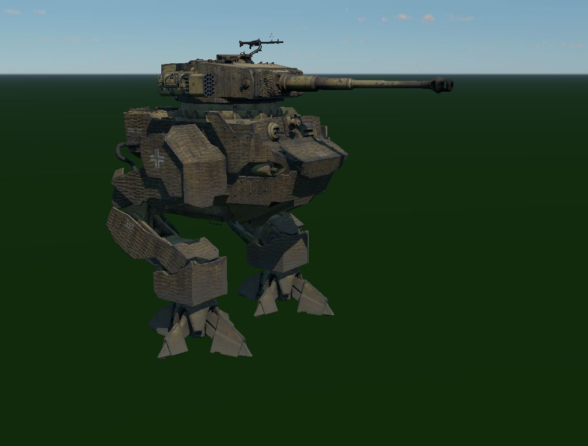 – 2.7.0.55 / 2021-06-16 → 2.7.0.55 / 2021-06-16
- Tiger II (early) spider mech #1 (last seen as a model) – 2.7.0.55 / 2021-06-16 → 2.7.0.55 / 2021-06-16
- Tiger II (early) spider mech #2 (last seen as a model) – 2.7.0.55 / 2021-06-16 → 2.7.0.55 / 2021-06-16
- Tiger II (Serie) mech (last seen as a model) – 2.7.0.55 / 2021-06-16 → 2.7.0.55 / 2021-06-16
- SPS-255
 – <1.95.0.125 / <2020-02-18 → 1.97.2.20 / 2020-05-24
– <1.95.0.125 / <2020-02-18 → 1.97.2.20 / 2020-05-24 - USSR:
- AA Gunner (April Fools) – 2.25.1.19 / 2023-03-31 → 2.25.1.139 / 2023-06-09
- Assault (April Fools)
 – 2.25.1.19 / 2023-03-31 → 2.25.1.139 / 2023-06-09
– 2.25.1.19 / 2023-03-31 → 2.25.1.139 / 2023-06-09 - Antitank (April Fools) – 2.25.1.19 / 2023-03-31 → 2.25.1.139 / 2023-06-09
- BT-7 (race) – <1.95.0.125 / <2020-02-18 → 2.5.1.157 / 2021-05-31
- HOG-7 Hedgie (event) – 2.27.1.32 / 2023-07-14 → 2.27.2.59 / 2023-09-12
- IS-6 mech (last seen as a model) – 2.7.0.55 / 2021-06-16 → 2.7.0.55 / 2021-06-16
- Sniper (April Fools) – 2.25.1.19 / 2023-03-31 → 2.25.1.139 / 2023-06-09
- SPS-255
 – <1.95.0.125 / <2020-02-18 → 1.97.2.20 / 2020-05-24
– <1.95.0.125 / <2020-02-18 → 1.97.2.20 / 2020-05-24 - ST-1 (April Fools)
 – <1.95.0.125 / <2020-02-18 → 1.97.2.20 / 2020-05-24
– <1.95.0.125 / <2020-02-18 → 1.97.2.20 / 2020-05-24 - T-34-85 (1944) (race) – 1.101.0.12 / 2020-08-22 → 2.5.1.157 / 2021-05-31
- GBR:
- RT-1 (race variant of the Staghound AA Mk. I used in the 2015 Halloween event) – <1.95.0.125 / <2020-02-18 → 2.5.1.157 / 2021-05-31
- Tetrarch Mk. I (race) – <1.95.0.125 / <2020-02-18 → 2.5.1.157 / 2021-05-31
- FRA:
- A.M.X. 13t-75 mle. 51 mech (last seen as a model) – 2.7.0.55 / 2021-06-16 → 2.7.0.55 / 2021-06-16
- Other:
- Assault CSS (April Fools)
 – 1.97.1.22 / 2020-04-02 → 2.21.1.104 / 2022-12-09
– 1.97.1.22 / 2020-04-02 → 2.21.1.104 / 2022-12-09 - Close Quarters CSS (April Fools)
 – 1.97.1.22 / 2020-04-02 → 2.21.1.104 / 2022-12-09
– 1.97.1.22 / 2020-04-02 → 2.21.1.104 / 2022-12-09 - CT-T (April Fools)
 – 2.15.1.12 / 2022-04-01 → 2.15.1.151 / 2022-06-14
– 2.15.1.12 / 2022-04-01 → 2.15.1.151 / 2022-06-14 - D-0TR (April Fools)
 – 2.15.1.12 / 2022-04-01 → 2.21.1.104 / 2022-12-09
– 2.15.1.12 / 2022-04-01 → 2.21.1.104 / 2022-12-09 - Harpy (April Fools)
 – 2.5.1.36 / 2021-04-01 → 2.5.1.157 / 2021-05-31
– 2.5.1.36 / 2021-04-01 → 2.5.1.157 / 2021-05-31 - Hydra (April Fools)
 – 2.5.1.36 / 2021-04-01 → 2.5.1.157 / 2021-05-31
– 2.5.1.36 / 2021-04-01 → 2.5.1.157 / 2021-05-31 - Minotaur (April Fools)
 – 2.5.1.36 / 2021-04-01 → 2.5.1.157 / 2021-05-31
– 2.5.1.36 / 2021-04-01 → 2.5.1.157 / 2021-05-31 - Q-AD (April Fools)
 – 2.15.1.12 / 2022-04-01 → 2.15.1.151 / 2022-06-14
– 2.15.1.12 / 2022-04-01 → 2.15.1.151 / 2022-06-14 - R-LAU (April Fools)
 – 2.15.1.12 / 2022-04-01 → 2.15.1.151 / 2022-06-14
– 2.15.1.12 / 2022-04-01 → 2.15.1.151 / 2022-06-14 - S-0NC (April Fools)
 – 2.15.1.12 / 2022-04-01 → 2.15.1.151 / 2022-06-14
– 2.15.1.12 / 2022-04-01 → 2.15.1.151 / 2022-06-14 - Scout CSS (April Fools)
 – 1.97.1.22 / 2020-04-02 → 2.21.1.104 / 2022-12-09
– 1.97.1.22 / 2020-04-02 → 2.21.1.104 / 2022-12-09 - Support CSS (April Fools)
 – 1.97.1.22 / 2020-04-02 → 2.21.1.104 / 2022-12-09
– 1.97.1.22 / 2020-04-02 → 2.21.1.104 / 2022-12-09
Naval vehicles
- USA:
- Fletcher (DD-445) (event) (last seen as a model) – 2.31.1.7 / 2023-11-03 → 2.41.0.11 / 2024-11-19
- Hoquiam (PF-5) (event) – 2.31.1.7 / 2023-11-03 → 2.31.1.65 / 2023-12-07
- Virginia (SSN-774) (April Fools)
 – <1.97.1.53 / <2020-04-14 → 1.101.2.67 / 2020-11-15
– <1.97.1.53 / <2020-04-14 → 1.101.2.67 / 2020-11-15 - DEU:
- U 995 (last seen as a model)
 – 2.31.1.7 / 2023-11-03 → 2.41.0.11 / 2024-11-19
– 2.31.1.7 / 2023-11-03 → 2.41.0.11 / 2024-11-19 - USSR:
- Severodvinsk (K-560) (April Fools)
 – <1.97.1.53 / <2020-04-14 → 1.101.2.67 / 2020-11-15
– <1.97.1.53 / <2020-04-14 → 1.101.2.67 / 2020-11-15 - GBR:
- Vigilant (S 30) (April Fools)
 – <1.97.1.53 / <2020-04-14 → 1.101.2.67 / 2020-11-15
– <1.97.1.53 / <2020-04-14 → 1.101.2.67 / 2020-11-15 - Other:
- Golden Hind (April Fools) (last seen as text) – <1.97.0.44 / <2020-03-11 → 1.99.0.2 / 2020-05-24
Aircraft loadouts
- Planes:
- Bumblebee (April Fools) – 6x Cricket – 2.5.1.36 / 2021-04-01 → 2.15.1.151 / 2022-06-14
- Bumblebee (April Fools) – 2x Present – 2.5.1.36 / 2021-04-01 → 2.15.1.151 / 2022-06-14
- Hornet (April Fools) – 12x Cricket – 2.5.1.36 / 2021-04-01 → 2.15.1.151 / 2022-06-14
- Wyvern (April Fools) – 18x Parisarrow – 2.5.1.36 / 2021-04-01 → 2.5.1.157 / 2021-05-31
- Wyvern (April Fools) – 30x Parisarrow – 2.5.1.36 / 2021-04-01 → 2.5.1.157 / 2021-05-31
- Wyvern (April Fools) – 12x Parisarrow + 2x Smasher – 2.5.1.36 / 2021-04-01 → 2.5.1.157 / 2021-05-31
- Wyvern (April Fools) – 9x Parisarrow + 4x Fowler – 2.5.1.36 / 2021-04-01 → 2.5.1.157 / 2021-05-31
- Wyvern (April Fools) – 18x Parisarrow + 8x Fowler – 2.5.1.36 / 2021-04-01 → 2.5.1.157 / 2021-05-31
- Wyvern (April Fools) – 2x Smasher – 2.5.1.36 / 2021-04-01 → 2.5.1.157 / 2021-05-31
- Wyvern (April Fools) – 2x Smasher + 8x Fowler – 2.5.1.36 / 2021-04-01 → 2.5.1.157 / 2021-05-31
- Wyvern (April Fools) – 8x Fowler – 2.5.1.36 / 2021-04-01 → 2.5.1.157 / 2021-05-31
- Wyvern (April Fools) – 16x Fowler – 2.5.1.36 / 2021-04-01 → 2.5.1.157 / 2021-05-31
- Helicopters:
- Dragonfly AB-99 (event) – 6x IR-20 "Freshener" – 2.23.0.8 / 2022-12-20 → 2.23.1.51 / 2023-03-01
- TOPTER (April Fools) – 12x Fire Stone – 2.15.1.12 / 2022-04-01 → 2.23.1.51 / 2023-03-01
Aircraft guns
- Laser (Pchela) (event) – 2.27.1.32 / 2023-07-14 → 2.27.2.59 / 2023-09-12
Aircraft missiles
- Other:
- Fowler (April Fools) – 2.5.1.36 / 2021-04-01 → 2.5.1.157 / 2021-05-31
- Parisarrow (April Fools) – 2.5.1.36 / 2021-04-01 → 2.5.1.157 / 2021-05-31
- Smasher (April Fools) – 2.5.1.36 / 2021-04-01 → 2.5.1.157 / 2021-05-31
Ground vehicle weapons
- 7.62 mm:
- 6P51 (April Fools) – 2.25.1.19 / 2023-03-31 → 2.25.1.139 / 2023-06-09
- M2 HB (April Fools) – 2.25.1.19 / 2023-03-31 → 2.25.1.139 / 2023-06-09
- MG 12 (April Fools) – 1.97.1.22 / 2020-04-02 → 2.21.1.104 / 2022-12-09
- 8.6 mm:
- MG 338 (April Fools) – 2.25.1.19 / 2023-03-31 → 2.25.1.139 / 2023-06-09
- 12.7 mm:
- M5 (April Fools) – 1.97.1.22 / 2020-04-02 → 2.21.1.104 / 2022-12-09
- 27 mm:
- CoAW (April Fools) – 2.5.1.36 / 2021-04-01 → 2.21.1.104 / 2022-12-09
- 30 mm:
- 2A72S (April Fools) – 2.25.1.19 / 2023-03-31 → 2.25.1.139 / 2023-06-09
- 2A82 (April Fools) – 1.97.1.22 / 2020-04-02 → 2.21.1.104 / 2022-12-09
- XM914 (April Fools) – 2.25.1.19 / 2023-03-31 → 2.25.1.139 / 2023-06-09
- 40 mm:
- Mk. 19 (April Fools) – 1.97.1.22 / 2020-04-02 → 2.21.1.104 / 2022-12-09
- 43 mm:
- GM-93P (April Fools) – 2.25.1.19 / 2023-03-31 → 2.25.1.139 / 2023-06-09
- 100 mm:
- M4 training (April Fools) – <1.95.0.125 / <2020-02-18 → 2.21.1.104 / 2022-12-09
- 105 mm:
- Multi-purpose grenade (April Fools) – 1.97.1.22 / 2020-04-02 → 2.21.1.104 / 2022-12-09
- 130 mm:
- ASuW (April Fools) – 2.5.1.36 / 2021-04-01 → 2.5.1.157 / 2021-05-31
- 140 mm:
- ATW (Minotaur) (April Fools) – 2.5.1.36 / 2021-04-01 → 2.21.1.104 / 2022-12-09
- 180 mm:
- Maul-Q7 (April Fools) – 2.15.1.12 / 2022-04-01 → 2.21.1.104 / 2022-12-09
- Rockets and missiles:
- 9M115M (April Fools) – 2.25.1.19 / 2023-03-31 → 2.25.1.139 / 2023-06-09
- 9M133M6 (April Fools) – 2.25.1.19 / 2023-03-31 → 2.25.1.139 / 2023-06-09
- 9M336M1 (April Fools) – 2.25.1.19 / 2023-03-31 → 2.25.1.139 / 2023-06-09
- AAMW (April Fools) – 2.5.1.36 / 2021-04-01 → 2.5.1.157 / 2021-05-31
- APILAS (April Fools) – 2.25.1.19 / 2023-03-31 → 2.25.1.139 / 2023-06-09
- CIWS laser (April Fools) – 2.5.1.36 / 2021-04-01 → 2.5.1.157 / 2021-05-31
- FIM-92X (April Fools) – 2.25.1.19 / 2023-03-31 → 2.25.1.139 / 2023-06-09
- RPG-28 (April Fools) – 2.25.1.19 / 2023-03-31 → 2.25.1.139 / 2023-06-09
- Spike SR4 (April Fools) – 2.25.1.19 / 2023-03-31 → 2.25.1.139 / 2023-06-09
- Spike SR4ME (April Fools) – 2.25.1.19 / 2023-03-31 → 2.25.1.139 / 2023-06-09
- TOW-2N (April Fools) – 2.25.1.19 / 2023-03-31 → 2.25.1.139 / 2023-06-09
Naval missiles
- USA:
- BGM-109 (April Fools) – 1.101.1.25 / 2020-10-30 → 1.101.2.67 / 2020-11-15
- USSR:
- 3M14K (April Fools) – 1.101.1.25 / 2020-10-30 → 1.101.2.67 / 2020-11-15
- GBR:
- Trident (April Fools) – 1.101.1.25 / 2020-10-30 → 1.101.2.67 / 2020-11-15
Torpedoes
- USSR:
- 533 mm UGST (April Fools) – 1.101.1.25 / 2020-10-30 → 1.101.2.67 / 2020-11-15
- GBR:
- 533 mm Spearfish (April Fools) – 1.101.1.25 / 2020-10-30 → 1.101.2.67 / 2020-11-15
Sensors
- Ground radars:
- Exoskeleton radar (April Fools) – 2.25.1.19 / 2023-03-31 → 2.25.1.139 / 2023-06-09
Disclaimer: This is not a definite list of upcoming additions! The older items will probably never see the light of day.
War Thunder Mobile exclusive assets
Aircraft
- Bubblegum – 1.5.2.26 / 2024-03-18
- Cupcake – 1.5.2.26 / 2024-03-18
- Elegance – 1.5.2.26 / 2024-03-18
- La-7 (Kozhedub) – 1.16.0.23 / 2025-06-03
- Pineapple pie – 1.5.2.26 / 2024-03-18
- Rainbow jet – 1.5.2.26 / 2024-03-18
- Starburst – 1.5.2.26 / 2024-03-18
- Sweet storm – 1.5.2.26 / 2024-03-18
Naval vehicles
- USA:
- Albany (CG-10) – 1.15.1.29 / 2025-05-07
- Balao (SS-285) – <0.0.5.74 / <2023-03-22
- Belknap (DLG-26) (1970) – 1.5.0.27 / 2024-02-01
- Billfish (SS-286) – 1.10.0.124 / 2024-10-02
- California (BB-44) – 1.15.1.29 / 2025-05-07
- Nicholas (DD-449) (1942) – <0.0.5.74 / <2023-03-22
- Salem (CA-139) – 1.15.1.29 / 2025-05-07
- Selfridge (DD-357) (1941) – 1.2.0.21 / 2023-09-18
- St. Louis (CL-49) – 1.15.1.29 / 2025-05-07
- Tang (SS-563) – <0.0.5.74 / <2023-03-22
- Truxtun (CGN-35) – 1.8.0.27 / 2024-07-09
- Virginia (CGN-38) – 1.12.0.104 / 2025-02-11
- DEU:
- Brandenburg (F 215) – 1.11.0.35 / 2024-10-28
- Bremen (F 207) – 1.9.0.11 / 2024-07-30
- Hamburg (D 181) (1977) – 1.2.0.21 / 2023-09-18
- Hindenburg – 1.15.1.29 / 2025-05-07
- Königsberg – 1.15.1.29 / 2025-05-07
- Rheinland – 1.15.1.29 / 2025-05-07
- Tirpitz (1944) – <0.0.5.74 / <2023-03-22
- Type XXI – <0.0.5.74 / <2023-03-22
- Type 212A – 1.14.0.20 / 2025-03-10
- U 305 – 1.5.2.26 / 2024-03-18
- U 995 – <0.0.5.74 / <2023-03-22
- USSR:
- Gnevnyy (1960) – 1.5.4.29 / 2024-04-11
- Groznyy – 1.10.0.22 / 2024-09-02
- K-class – <0.0.5.74 / <2023-03-22
- L-3 (1941) – 1.5.4.29 / 2024-04-11
- L-4 – 1.15.1.29 / 2025-05-07
- Pr. 613 – <0.0.5.74 / <2023-03-22
- Pr. 641 – <0.0.5.74 / <2023-03-22
- Pr. 885 – 1.16.0.23 / 2025-06-03
- Pr. 956 – 1.15.1.29 / 2025-05-07
- Pr. 1155 – 1.11.0.126 / 2024-12-03
- Skrytnyy – 1.15.1.29 / 2025-05-07
- Stalingrad (1951) – <0.0.5.74 / <2023-03-22
- Svetlyy (1956) – 1.3.1.17 / 2023-11-15
- GBR:
- Ajax – 1.15.1.29 / 2025-05-07
- Centurion – 1.11.0.126 / 2024-12-03
- Cornwall (56) (1934) – 1.4.1.29 / 2023-12-14
- Devonshire (D 02) – 1.10.0.124 / 2024-10-02
- Hercules – 1.15.1.29 / 2025-05-07
- King George V (41) (1940) – <0.0.5.74 / <2023-03-22
- M1 – 1.11.0.178 / 2024-12-19
- Swiftsure (S 126) – 1.16.0.23 / 2025-06-03
- Thunderer – 1.15.1.29 / 2025-05-07
- Type 23 – 1.7.0.28 / 2024-06-10
- Valiant (S 102) (1980) – 1.5.3.36 / 2024-04-02
- Vampire (P 72) (1943) – 1.3.0.22 / 2023-10-20
- JPN:
- Asashio (SS-562) – 1.14.0.20 / 2025-03-10
- Harushio (SS-583) – 1.15.1.29 / 2025-05-07
- Hatakaze (DDG-171) – 1.14.2.39 / 2025-04-11
- Hatsuyuki (DD-122) – 1.11.0.214 / 2025-01-18
- Nagato – 1.15.1.29 / 2025-05-07
- Takatsuki (1985) – 1.5.2.26 / 2024-03-18
- Teruzuki (1942) (text only) – 1.2.0.21 / 2023-09-18
- FRA:
- Surcouf (1940) – 1.4.1.29 / 2023-12-14
- ARG:
- Type 42 – 1.14.2.39 / 2025-04-11
Naval guns
- 30 mm Bushmaster II – 1.7.0.28 / 2024-06-10
- 37 mm/67 46-K – <0.0.5.74 / <2023-03-22
- 57 mm/78.7 SM-24-ZiF – <0.0.5.74 / <2023-03-22
- 114 mm/55 Mk. 8 – 1.7.0.28 / 2024-06-10
- 127 mm/54 Mk. 19 (Mk. 45 mount) – 1.12.0.104 / 2025-02-11
- 130 mm/60 BL-109A – <0.0.5.74 / <2023-03-22
- 130 mm/70 ZiF-94 (AK-130 mount) – 1.15.1.29 / 2025-05-07
- 305 mm/40 Mk. IX – 1.11.0.178 / 2024-12-19
- 305 mm/62 SM-33 – <0.0.5.74 / <2023-03-22
- 356 mm/45 Mk. VII – <0.0.5.74 / <2023-03-22
Naval missiles
- 3M80 – 1.15.1.29 / 2025-05-07
- 9M38 – 1.15.1.29 / 2025-05-07
- 9M330 – 1.11.0.126 / 2024-12-03
- 85RU – 1.11.0.126 / 2024-12-03
- IDAS – 1.14.0.20 / 2025-03-10
- MM-38 Exocet – 1.3.1.13 / 2023-11-09
- P-1 Strela – 1.6.0.69 / 2024-05-13
- P-35 Progress – 1.10.0.22 / 2024-09-02
- P-800 Oniks – 1.16.0.23 / 2025-06-03
- RGM-84 Harpoon – 1.5.0.27 / 2024-02-01
- RIM-7P Sea Sparrow – 1.5.2.26 / 2024-03-18
- RIM-8 Talos – 1.15.1.29 / 2025-05-07
- RIM-67A SM-1ER – 1.5.0.27 / 2024-02-01
- RIM-67B SM-2ER – 1.8.0.27 / 2024-07-09
- Sea Ceptor – 1.7.0.28 / 2024-06-10
- Sea Dart – 1.14.2.39 / 2025-04-11
- Seacat – 1.10.0.81 / 2024-09-18
- Seaslug – 1.10.0.81 / 2024-09-18
- UGM-84 Harpoon – 1.5.4.29 / 2024-04-11
- V-600 – 1.10.0.22 / 2024-09-02
Naval miscellaneous
- Chaff – 1.3.1.13 / 2023-11-09
Torpedoes
- USSR:
- 53-65 – <0.0.5.74 / <2023-03-22
- GBR:
- Spearfish – 1.16.0.23 / 2025-06-03
- Sting Ray – 1.7.0.28 / 2024-06-10
Disclaimer: This is not a definite list of upcoming additions! The older items will probably never see the light of day.
War Thunder Mobile removed exclusive assets
Naval vehicles
- USA:
- Essex (CV-9) (1942) (text only) – 0.0.7.30 / 2023-05-04 → 1.6.0.69 / 2024-05-13
- Midway (CV-41) (1945) (text only) – 0.0.8.33 / 2023-05-24 → 1.6.0.69 / 2024-05-13
- GBR:
- Implacable (R 86) (1944) (text only) – 0.0.8.33 / 2023-05-24 → 1.6.0.69 / 2024-05-13
- JPN:
- Kaga (1936) (text only) – 0.0.8.33 / 2023-05-24 → 1.6.0.69 / 2024-05-13
- Zuikaku (1944) (text only) – 0.0.8.33 / 2023-05-24 → 1.6.0.69 / 2024-05-13
Disclaimer: This is not a definite list of upcoming additions! The older items will probably never see the light of day.
Modern Warfront Tanks exclusive assets
Aircraft
- Planes:
- USA:
- F-14D – 0.2.0 / 2024-11-07
- F-15SE – 0.2.0 / 2024-11-07
- F/A-18F – 0.2.0 / 2024-11-07
- F-22A – 0.2.0 / 2024-11-07
- F-35B – 0.2.0 / 2024-11-07
- YF-23A – 0.2.0 / 2024-11-07
- USSR:
- MiG-31BM – 0.2.0 / 2024-11-07
- MiG-35 – 0.2.0 / 2024-11-07
- Su-25UB – 0.2.0 / 2024-11-07
- Su-35 – 0.2.0 / 2024-11-07
- Su-37 – 0.2.0 / 2024-11-07
- Su-57 – 0.2.0 / 2024-11-07
- Su-57M – 0.2.0 / 2024-11-07
- Su-75 – 0.2.0 / 2024-11-07
- JPN:
- F-2B – 0.7.1 / 2025-04-26
- CHN:
- J-15 – 0.4.0 / 2025-01-23
- J-16 – 0.2.0 / 2024-11-07
- J-20 – 0.2.0 / 2024-11-07
- J-35 – 0.2.0 / 2024-11-07
- Helicopters:
- USA:
- 360 Invictus – 0.2.0 / 2024-11-07
- AH-64E – 0.2.0 / 2024-11-07
- SB-1 – 0.2.0 / 2024-11-07
- DEU:
- Sea Lynx Mk. 88A – 0.2.0 / 2024-11-07
- USSR:
- Ka-52M – 0.2.0 / 2024-11-07
- Mi-35P – 0.2.0 / 2024-11-07
- Mi-171Sh – 0.2.0 / 2024-11-07
- CHN:
- Z-9G – 0.2.0 / 2024-11-07
- Z-11WB – 0.2.0 / 2024-11-07
- Z-20 – 0.2.0 / 2024-11-07
Ground vehicles
- USA:
- AbramsX – 0.2.0 / 2024-11-07
- LAV-25 – 0.2.0 / 2024-11-07
- LAV-150 – 0.2.0 / 2024-11-07
- LAV-300 – 0.2.0 / 2024-11-07
- LAV-600 – 0.2.0 / 2024-11-07
- M1 TTB – 0.7.2 / 2025-05-07
- M10 – 0.7.0 / 2025-04-25
- M42A1 – 0.2.0 / 2024-11-07
- M109A6 – 0.2.0 / 2024-11-07
- M113A1 AIFV – 0.2.0 / 2024-11-07
- M113A2 (GLH) – 0.2.0 / 2024-11-07
- M270 – 0.2.0 / 2024-11-07
- M1126A1 (M-SHORAD) – 0.2.0 / 2024-11-07
- XM2001 – 0.3.0 / 2024-12-12
- DEU:
- KF51 – 0.2.0 / 2024-11-07
- Leopard 2 A7+ – 0.2.0 / 2024-11-07
- USSR:
- 2S19 – 0.2.0 / 2024-11-07
- 2S31 – 0.4.0 / 2025-01-23
- 9A52-2 – 0.2.0 / 2024-11-07
- 72V6-E – 0.2.0 / 2024-11-07
- BM-21 – 0.2.0 / 2024-11-07
- BMD-3 – 0.2.0 / 2024-11-07
- BMPT-72 – 0.2.0 / 2024-11-07
- BRM-1K – 0.2.0 / 2024-11-07
- BTR-60PB – 0.2.0 / 2024-11-07
- BTR-80 – 0.2.0 / 2024-11-07
- BTR-82A1 – 0.2.0 / 2024-11-07
- BTR-82AT – 0.2.0 / 2024-11-07
- BTR-BM – 0.2.0 / 2024-11-07
- Object 195 – 0.2.0 / 2024-11-07
- Object 640 – 0.8.0 / 2025-05-29
- T-14 (125 mm) – 0.2.0 / 2024-11-07
- T-14 (152 mm) – 0.2.0 / 2024-11-07
- TOS-1A – 0.3.1 / 2024-12-19
- JPN:
- M110A2 – 0.7.0 / 2025-04-25
- Type 74 HSP – 0.5.0 / 2025-02-27
- CHN:
- AFT10 – 0.2.0 / 2024-11-07
- Type 625E – 0.5.1 / 2025-03-10
- FK-2000 – 0.2.0 / 2024-11-07
- PLL05 – 0.2.0 / 2024-11-07
- PLZ07B – 0.2.0 / 2024-11-07
- PZH89 – 0.2.0 / 2024-11-07
- SR-5 – 0.2.0 / 2024-11-07
- Type 85-II – 0.2.0 / 2024-11-07
- ZBD86-1 – 0.2.0 / 2024-11-07
- ZBL08 – 0.2.0 / 2024-11-07
- POL:
- PL-01 – 0.2.0 / 2024-11-07
- IRN:
- Karrar – 0.5.0 / 2025-02-27
- KOR:
- K31 – 0.7.0 / 2025-04-25
Aircraft guns
- USA:
- 20 mm:
- GAU-22/A – 0.2.0 / 2024-11-07
- M61A2 – 0.2.0 / 2024-11-07
- XM915 – 0.2.0 / 2024-11-07
Aircraft bombs
- USA:
- 204 lbs GBU-53/B – 0.2.0 / 2024-11-07
- JPN:
- 500 lbs GP Mk. 82 (GCS-1) – 0.7.1 / 2025-04-26
- CHN:
- 50 kg FT-9 – 0.2.0 / 2024-11-07
- 100 kg TL-20 – 0.2.0 / 2024-11-07
- 150 kg CM-506KG – 0.2.0 / 2024-11-07
- 250 kg FT-3 – 0.2.0 / 2024-11-07
- 250 kg FT-4 – 0.2.0 / 2024-11-07
- 500 kg GB-6 – 0.2.0 / 2024-11-07
- 1000 kg YJ-1000-1 – 0.2.0 / 2024-11-07
Aircraft missiles
- USA:
- AGM-84H/K – 0.2.0 / 2024-11-07
- AGM-169 – 0.2.0 / 2024-11-07
- AGM-179 – 0.2.0 / 2024-11-07
- AIM-132 – 0.2.0 / 2024-11-07
- SIAW – 0.2.0 / 2024-11-07
- DEU:
- Meteor – 0.2.0 / 2024-11-07
- USSR:
- Hermes-A – 0.2.0 / 2024-11-07
- Izdeliye 305 – 0.2.0 / 2024-11-07
- Kh-31AD – 0.2.0 / 2024-11-07
- Kh-36 Grom-1 – 0.2.0 / 2024-11-07
- Kh-39 – 0.2.0 / 2024-11-07
- Kh-47M2 – 0.2.0 / 2024-11-07
- Kh-59M – 0.2.0 / 2024-11-07
- Kh-69 – 0.2.0 / 2024-11-07
- Kh-MD-E – 0.2.0 / 2024-11-07
- R-37 – 0.2.0 / 2024-11-07
- R-40TD – 0.2.0 / 2024-11-07
- R-74 – 0.2.0 / 2024-11-07
- RVV-MD – 0.2.0 / 2024-11-07
- RVV-SD – 0.2.0 / 2024-11-07
- GBR:
- Martlet – 0.2.0 / 2024-11-07
- Meteor – 0.2.0 / 2024-11-07
- Sea Venom – 0.2.0 / 2024-11-07
- Storm Shadow – 0.2.0 / 2024-11-07
- JPN:
- AAM-5 – 0.7.1 / 2025-04-26
- AAM-6 – 0.7.1 / 2025-04-26
- ASM-3 – 0.7.1 / 2025-04-26
- CHN:
- AG-300M – 0.2.0 / 2024-11-07
- AKF-98A – 0.2.0 / 2024-11-07
- AR-1 – 0.2.0 / 2024-11-07
- BA-5 – 0.2.0 / 2024-11-07
- BA-21 – 0.2.0 / 2024-11-07
- CM-102A – 0.2.0 / 2024-11-07
- CM-401 – 0.2.0 / 2024-11-07
- CM-502KG – 0.2.0 / 2024-11-07
- KD-88 – 0.2.0 / 2024-11-07
- PL-10 – 0.2.0 / 2024-11-07
- PL-15 – 0.2.0 / 2024-11-07
- TL-6 – 0.2.0 / 2024-11-07
- TL-20 – 0.2.0 / 2024-11-07
- ITA:
- Meteor – 0.2.0 / 2024-11-07
- FRA:
- ANL – 0.2.0 / 2024-11-07
- MAST-F – 0.2.0 / 2024-11-07
- Meteor – 0.2.0 / 2024-11-07
- SWE:
- Meteor – 0.2.0 / 2024-11-07
Ground vehicle weapons
- USA:
- 12.7 mm:
- XM312 – 0.2.0 / 2024-11-07
- 20 mm:
- Oerlikon KAA – 0.2.0 / 2024-11-07
- 30 mm:
- XM914 – 0.2.0 / 2024-11-07
- 90 mm:
- Mk3M-A1 – 0.2.0 / 2024-11-07
- 105 mm:
- M35 – 0.7.0 / 2025-04-25
- 120 mm:
- XM360E1 – 0.7.2 / 2025-05-07
- 155 mm:
- M284 – 0.2.0 / 2024-11-07
- XM297E2 – 0.6.0 / 2025-03-27
- 180 mm:
- GLH – 0.2.0 / 2024-11-07
- 203 mm:
- M201A1 – 0.7.0 / 2025-04-25
- 227 mm:
- GMLRS – 0.2.0 / 2024-11-07
- DEU:
- 130 mm:
- Rh130-52 – 0.2.0 / 2024-11-07
- USSR:
- 120 mm:
- 2A80 – 0.4.0 / 2025-01-23
- 125 mm:
- 2A82-1M – 0.2.0 / 2024-11-07
- 152 mm:
- 2A64 – 0.2.0 / 2024-11-07
- 2A83 – 0.2.0 / 2024-11-07
- 220 mm:
- MO.1.01 – 0.3.1 / 2024-12-19
- CHN:
- 30 mm:
- H/PJ-13 – 0.2.0 / 2024-11-07
- 120 mm:
- Type 05 – 0.2.0 / 2024-11-07
- 122 mm:
- BRE122 – 0.2.0 / 2024-11-07
- Type 89 – 0.2.0 / 2024-11-07
- 220 mm:
- GR220 – 0.2.0 / 2024-11-07
Ground vehicle shells, rockets, and missiles
- USA:
- 25 mm:
- PGU-32/U SAPHEI – 0.2.0 / 2024-11-07
- 105 mm:
- T297 HESH – 0.2.0 / 2024-11-07
- 106 mm:
- M344 HEAT – 0.2.0 / 2024-11-07
- PFF HE – 0.2.0 / 2024-11-07
- 120 mm:
- M829A3 APFSDS – 0.2.0 / 2024-11-07
- 155 mm:
- M267A2 HEAT – 0.6.0 / 2025-03-27
- M483A1 CAN – 0.2.0 / 2024-11-07
- M549A1 HE – 0.2.0 / 2024-11-07
- M795 HE – 0.6.0 / 2025-03-27
- M864 CAN – 0.6.0 / 2025-03-27
- 203 mm:
- M106 HE – 0.7.0 / 2025-04-25
- M404 CAN – 0.7.0 / 2025-04-25
- M650 HE – 0.7.0 / 2025-04-25
- Rockets and missiles:
- AGM-114A – 0.2.0 / 2024-11-07
- AGM-114F – 0.2.0 / 2024-11-07
- AGM-114L – 0.2.0 / 2024-11-07
- AGM-114M – 0.2.0 / 2024-11-07
- BGM-71H – 0.2.0 / 2024-11-07
- GMLRS-ER – 0.2.0 / 2024-11-07
- M20 – 0.2.0 / 2024-11-07
- M26 – 0.2.0 / 2024-11-07
- M31 – 0.2.0 / 2024-11-07
- M712 – 0.2.0 / 2024-11-07
- M982 – 0.6.0 / 2025-03-27
- MGM-140 B1 – 0.2.0 / 2024-11-07
- MGM-140 B2 – 0.2.0 / 2024-11-07
- MRM-CE – 0.2.0 / 2024-11-07
- MRM-KE – 0.2.0 / 2024-11-07
- DEU:
- 120 mm:
- DM 73 APFSDS – 0.2.0 / 2024-11-07
- 130 mm:
- DM 11 HE-FS – 0.2.0 / 2024-11-07
- DM 12 HEAT-FS – 0.2.0 / 2024-11-07
- DM 33 APFSDS – 0.2.0 / 2024-11-07
- DM 73 APFSDS – 0.2.0 / 2024-11-07
- USSR:
- 120 mm:
- 3OF68 HE – 0.4.0 / 2025-01-23
- 3OF69 HE – 0.4.0 / 2025-01-23
- 3OF110 HE – 0.5.0 / 2025-02-27
- 3VO34 CAN – 0.4.0 / 2025-01-23
- KM-8 – 0.4.0 / 2025-01-23
- 122 mm:
- 3BK13 HEAT – 0.2.0 / 2024-11-07
- 3BP1 HEAT – 0.2.0 / 2024-11-07
- 3OF56 HE – 0.2.0 / 2024-11-07
- 3OF69M HE – 0.2.0 / 2024-11-07
- 125 mm:
- 3BK21 HEAT – 0.2.0 / 2024-11-07
- 3BK29 HEAT – 0.5.0 / 2025-02-27
- 3BM29 APFSDS – 0.5.0 / 2025-02-27
- 3BM69 APFSDS – 0.2.0 / 2024-11-07
- 152 mm:
- 3O23 CAN – 0.2.0 / 2024-11-07
- 3OF25 HE – 0.2.0 / 2024-11-07
- 3OF38 HE – 0.2.0 / 2024-11-07
- 3OF39 HE – 0.2.0 / 2024-11-07
- 3OF45 HE – 0.2.0 / 2024-11-07
- Grifel-1 APFSDS – 0.2.0 / 2024-11-07
- Grifel-2 APFSDS – 0.2.0 / 2024-11-07
- Grifel-3 HE – 0.2.0 / 2024-11-07
- Rockets and missiles:
- 9M55K5 – 0.2.0 / 2024-11-07
- 9M96E2 – 0.2.0 / 2024-11-07
- 9M113M – 0.2.0 / 2024-11-07
- 9M120F-1 – 0.2.0 / 2024-11-07
- 9M338 – 0.2.0 / 2024-11-07
- 9M528 – 0.2.0 / 2024-11-07
- 9M530 – 0.2.0 / 2024-11-07
- 9M534 – 0.2.0 / 2024-11-07
- 9M542 – 0.2.0 / 2024-11-07
- 57E6-E – 0.2.0 / 2024-11-07
- 57E6M-E – 0.2.0 / 2024-11-07
- MO.1.01.04 – 0.3.1 / 2024-12-19
- MO.1.01.04M – 0.3.1 / 2024-12-19
- CHN:
- 25 mm:
- Type 87 APDS – 0.2.0 / 2024-11-07
- Type 87 APFSDS – 0.2.0 / 2024-11-07
- 105 mm:
- DTP1A HEAT-FS – 0.2.0 / 2024-11-07
- 120 mm:
- Type 05 HE – 0.2.0 / 2024-11-07
- Type 05 HEAT-FS – 0.2.0 / 2024-11-07
- 122 mm:
- Type 81 CAN – 0.2.0 / 2024-11-07
- Type 81 HE – 0.2.0 / 2024-11-07
- 152 mm:
- DDE HE – 0.2.0 / 2024-11-07
- 155 mm:
- BEE17A HE – 0.2.0 / 2024-11-07
- Rockets and missiles:
- AFT-10 – 0.2.0 / 2024-11-07
- BRE1 – 0.2.0 / 2024-11-07
- BRE7 – 0.2.0 / 2024-11-07
- FB-10A – 0.5.1 / 2025-03-10
- GP120A – 0.2.0 / 2024-11-07
- GP120B – 0.2.0 / 2024-11-07
- GP155A – 0.2.0 / 2024-11-07
- GP155B – 0.2.0 / 2024-11-07
- GP155E – 0.2.0 / 2024-11-07
- GR1 – 0.2.0 / 2024-11-07
- GR70 – 0.2.0 / 2024-11-07
- KS-1000 – 0.2.0 / 2024-11-07
- FRA:
- 90 mm:
- M616 HE – 0.2.0 / 2024-11-07
- ISR:
- 122 mm:
- M335 CAN – 0.2.0 / 2024-11-07
- IRN:
- Rockets and missiles:
- Tondar – 0.5.0 / 2025-02-27
Disclaimer: This is not a definite list of upcoming additions! The older items will probably never see the light of day.
Leaked assets from lists (datamined assets excluded)
Aircraft
- Planes:
- USA:
- B-26E – Olivia – 2022-10-15
- F/A-18E – Snail Mine – 2025-02-22
- CHN:
- J-10B – Snail Mine – 2024-11-26
- JH-7 – Mike / Yukari33 – 2024-08-11
Ground vehicles
- USA:
- EFV-P1 – Snail Mine – 2024-11-26
- M38 – Olivia – 2024-03-01
- T-90A – Olivia – 2023-10-25
- DEU:
- Jagdpanther G2 – Olivia – 2024-03-01
- USSR:
- 9A31M Strela-1M – Olivia – 2023-10-25
- Object 430 – Olivia – 2022-10-15
- T-80BVM obr. 2023 g. – Olivia – 2023-10-25
- GBR:
- G6-HVM [ZAF] – Snail Mine – 2024-11-26
- Ram Mk. I [CAN] – Olivia – 2024-03-01
- SARC Mk. IVf [ZAF] – Olivia – 2024-03-01
- CHN:
- CM34 – Olivia – 2024-03-01
- Type 85-II – Olivia – 2024-03-01
- Type 85-IIM – Olivia – 2022-12-09
- FRA:
- Leopard 1 (Cockerill 3105) [BEL] – Snail Mine – 2024-05-04
- ISR:
- PT-76B – Olivia – 2022-10-15
- Sho't – Olivia – 2024-03-01
- Tiran 5 – Olivia – 2024-03-01
- Tiran 5 Sh – Olivia – 2024-03-01
Naval vehicles
- USA:
- Firebolt (PC-10) – Olivia – 2025-06-06
- Marfa (PCE-842) – Olivia – 2023-09-01
- Maryland (BB-46) – Snail Mine – 2024-11-26
- USSR:
- Oktyabrskaya Revolutsiya – Olivia – 2024-05-31
- Pr. 123K [BGD] – Olivia – 2024-05-31
- GBR:
- Centurion – Olivia – 2023-12-07
- Ferré (DM-74) [PER] (ex-Decoy (D 106)) – Olivia – 2023-09-01
- LCG(M) 101 – Olivia – 2024-09-02
- Manxman (M 70) – Olivia – 2024-09-02
- Tiger (1913) – Olivia – 2024-11-15
- Thunderer – Olivia – 2024-12-10
- JPN:
- Ibuki – Olivia – 2025-02-27
- Hasu – Olivia – 2024-05-31
- Nagato – Olivia – 2024-03-01
- Sagiri – Olivia – 2023-09-01
- Shisaka – Olivia – 2024-03-01
- Tade – Olivia – 2024-05-31
- Takanami (DD-110) (1996) – Olivia – 2024-03-01
- Yūbetsu (DE-228) – Snail Mine – 2024-10-15
- Yuri (LSSL-401) – Olivia – 2024-09-02
- FRA:
- Desaix (T 04) – Olivia – 2023-09-01
- L'Aventure (K 263) (ex-Braid (K 263)) – Olivia – 2024-10-30
Disclaimer: This is not a definite list of upcoming additions! The older items will probably never see the light of day.
Leaked assets from modeling websites (datamined assets excluded)
Aircraft
- Planes:
- USA:
- F-8A – Psy06 – 2019-05-03
- OV-10A – NovA29 – 2016-08-10
- OV-10D – NovA29 – 2016-08-10
- DEU:
- Fw 187 A-0 – NovA29 – 2020-08-16
- He 280 – Joy_Division__ – 2022-09-12
- Me 209 V5 – NovA29 – 2019-02-11
- Me 262 B-1a/U1 – YuikoArashi – 2024-08-24
- USSR:
- DI-6 – Psy06 – 2019-05-03
- I-215 – Psy06 – 2019-05-03
- Il-20 – Psy06 – 2019-05-03
- R-10 – Psy06 – 2019-05-03
- Tu-12 – Psy06 – 2019-05-03
- Tu-95M – NovA29 – 2022-12-03
- VI-100 – Psy06 – 2019-05-03
- JPN:
- H8K1 – Psy06 – 2019-05-03
- H8K4 – Psy06 – 2019-05-03
- Ki 64 – Psy06 – 2019-05-03
- Ki 74 – Psy06 – 2019-05-03
- Ki 88 – Psy06 – 2019-05-03
- ITA:
- I.A.R.80 [ROU] – NovA29 – 2016-10-24
- I.A.R.81 C (DB 605 A) [ROU] – NovA29 – 2017-08-06
- MB-326 – NovA29 – 2024-11-30
- ???:
- J-22 [YUG] – NovA29 – 2018-12-05
Ground vehicles
- FRA:
- ERC 90 – Dan Gumeniuk – 2021-06-14
- ???:
- BTR-4 [UKR] – Dan Gumeniuk – 2021-07-24
- Oplot-M [UKR] – Dan Gumeniuk – 2021-06-15
- Yatagan [UKR] – Dan Gumeniuk – 2022-06-28